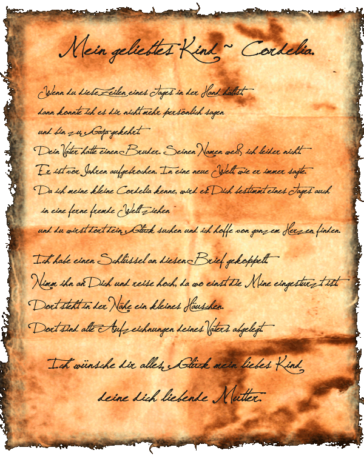

|

|
Das schwarze Brett
|
|
| Übersicht,
Geschichten (RPG) |
|
Das Leben kann so schön sein... (912  ) )
|
| Cordelia deLor (RIP) |
Es ist früher Morgen.
Draußen geht gerade die Sonne auf und mein Geliebter liegt neben mir. Er, mein Bordret, schläft noch. Ich betrachte ihn und will nicht mehr ohne ihn sein. Er hat mein Leben ganz auf den Kopf gestellt.
Eigentlich habe ich immer gedacht, ich werde mein Leben alleine bestreiten. Meine Eltern, Bendur habe sie selig, vor langer Zeit gestorben, gaben mir alles mit auf den Weg in ein schönes, aber einsames Leben. Ich bin geboren in dem schönsten aller Monate im Jahre. Im Blumenmond im Jahre 410. Ich hatte eine sehr unbeschwerte Kindheit. Meine Eltern waren immer für mich da. Meine Mutter lehrte mir das häusliche Geschick und mein Vater brachte mir die Schifffahrt und das Fischen bei.
Ach, war das eine schöne Zeit. *leise stöhnt in ihren Erinnerungen, als ob es gestern war*
Doch dann wurde alles anders. Von heut auf morgen stand ich mit meiner Mutter alleine auf der Welt.
Der Vater war umgekommen im Stollen. So grausam kann das Leben sein. Ich konnte ihm nicht helfen, denn ich war noch nicht alt genug. Ich musste mit ansehen, wie der tollen ihn unter sich begrub. Ich hatte Glück, so ein Glück!
Die Mutter mich dann ganz allein großgezogen, bis sie vor einigen Jahren ihm gefolgt ist. Dann gab es nur noch Trauer und Glücklosigkeit in meinem Leben.
Seit diesem Tage bin ich allein auf der Welt bis ich meinen Lehnsherren traf, der mich wieder ins Leben zurückgeholt hat. Ich wurde wieder stark. Er hat meinem Leben wieder einen Sinn gegeben. Lehrte mich, wie ich mich verteidigen kann. Lehrte mir den Umgang mit Schwert und Bogen. Half mir bei...ach so vielen Dingen. Ich konnte plötzlich wieder lachen. Bin ihm gefolgt und habe seine Verlobte kennen gelernt. Eine sehr schöne und gebildete Frau. Liebenswürdig und hilfsbereit traten beide in mein Leben.
Und nun schaue ich neben mir und da ist jemand, dem ich mein Leben in die Hände lege. Das Leben ist so schön, so aufregend, seit ich ihn kennen gelernt habe. Ja - TATARS, du hast mir nicht zu viel versprochen. Ich kann wieder genießen. Ich lebe und ich liebe wieder. Danke dafür.
Ich habe meinen Liebsten in der Taverne kennen gelernt.
Am Tage war ich auf hoher See unterwegs. Mein Gefolge, die Treuen, und ich sind Fischen gegangen. *schmunzelt * das war ein schöner und wirklich ertragreicher Tag. Wir mussten wirklich viel schleppen um alles in die Stadt zu transportieren. Alle waren müde nach diesem anstrengenden Tag. Um meine Müdigkeit zu überwinden, Habe ich ein herrliches Bad genommen und allen einen freien Abend gegeben. Mir war an diesem Abend nach ein wenig Gesellschaft in der nahe gelegenen Taverne. Also bin ich allein losgezogen. Hatte meine schönste Kleidung angezogen und war in bester Stimmung. Ich setzte mich an einen Tisch und da sah ich ihn - erledigt von der Jagd in der Taverne sitzend. Langes Haar an ihm herrunter hing. Ein Blick, den ich nie vergessen werde. Er sah geschafft aus, aber er lächelte mich an. Ich errötete und wirkte verlegen. Er lud mich auf ein Glas Wein ein und ich nahm Freudestrahlend an. Ich weiß noch, wie du Dich auf ein schönes kühles Met gefreut hast. Unsere Blicken trafen sich und ein Lächeln legte sich auf mein Gesicht. Ein seltsames Gefühl in mir aufkam. Es war ein schöner Abend und ich ging viel zu spät heim.
Am nächsten Tag konnte ich keinen klaren Gedanken mehr fassen. Meine Gefolgsleute wunderten sich sehr über mich. Noch nie hatten sie mich so erlebt. Alles was ich anpackte, gelang mir nicht und ich - ich lachte darüber. Meine Seefrau nahm mich nach einiger Zeit beiseite und fragte "Wehrte Cor, so kenne ich euch nicht? Was ist los mit euch? Nichts klappt und ihr lacht darüber? Normalerweise ärgert ihr euch! Was ist nur los mit Euch???" Über ihre Worte konnte ich nur schmunzeln.
Abends bin ich dann wieder in die Taverne gegangen, in der Hoffnung ihn - meinen Bordret- wieder zu sehen. Und tatsächlich, da saß er. In der letzten Ecke und wartete auf mich. Auf MICH. Ein langer, wunderschöne begann von vorne und ich wünschte mir "NIEMALS SOLLE ER ENDEN!!!"
Von da an waren wir sehr oft in dieser Taverne zu sehen. Ich war jedes Mal aufgeregt dich zu treffen, und meine Gedanken sind seit dem nur bei dir. Ja, ich liebe Dich und nur dich. Kein Leben mehr allein. Kein Leben ohne Dich, mein Liebster.
Er hat mir einen Antrag gemacht und ich habe voller Freude "JA" gesagt. Nun sind wir richtig verlobt. Ich fühle mich wie als könnte ich fliegen, wie ein Vogel. Es ist ein großartiges Gefühl.
Nun sitze ich hier, er liegt noch schlafend im Bett und ich schreibe in mein Tagebuch. Draußen geht gerade die Sonne am Horizont auf, es ist kalt und der Schnee glitzert im Sonnenschein. Es sieht aus als wären dort tausend Sterne. Wunderschön! Hier drinnen ist es gemütlich warm. Es duftet nach Kamin.
Du hast mir am Tag zuvor geholfen, den Tod meines Vaters zu verkraften und dafür bin ich dir dankbar.
Cordelia
Verlobte des ehrenwerten Bordret
Zur 7. Stunde am 59. Erntemond im Jahre 430
Cordelia,
Verlobte des ehrenwerten Bordret
Zur 7. Stunde am 89.Erntemond im Jahre 430 |
04.10.07 20:22
|
|
| Cordelia deLor (RIP) |
Wieder sind wunderschöne Tage mit dir im eiskalten, hohen Norden vergangen.
Ich sitze hier am Tisch und schreibe wieder ein paar neue Zeilen in mein Tagebuch. Ich will, dass unsere Kinder mal unsere Geschichte lesen können. Du liegst noch schlafend im Bett. Langsam steigt die Sonne empor. Der Schnee glitzert im leichten Sonnenlicht. Ich höre deinen leichten Atem und schaue dir so gerne beim Schlafen zu. So friedlich.
*an einen der letzten Tage zurück denkt*
Wir hatten eine wunderschöne gemeinsame Nacht... und am Morgen war ich voller Tatendrang. Ich hatte ihn aus dem Bett geschmissen, ihm gezeigt wie wundervoll die Sonne aufgeht. Ich wollte raus - raus in den kalten Schnee, in die Sonne. Es hieß sich warm anzuziehen und ich nahm noch ein paar Dinge mit, die ich für wichtig hielt. Dann nahm ich seine Hand. Und los ging es.
Zuerst sind wir nur so vor uns hin in dem kalten Schnee gestapft und haben die wunderbare Landschaft bestaunt. Eis und Schnee - so weit das Auge reicht. Einfach wundervoll.
Gedanken an unsere Ankunft auf dieser wundervollen Insel kamen in mir hoch und Erinnerungen aus meiner Kindheit.
Vor uns das weite Meer - Hinter uns die Unendlichkeit des Schnee und Eises.
Ich fühlte mich zurückversetzt. Mein Vater kam in meinen Gedanken auf. So viele schöne, aber auch traurige Stunden hatte ich hier verbracht. Wir hatten hier viel gelacht und er hat mir hier viel, sehr viel begebracht. Ich weiß noch, wie er mir beibrachte wie gefischt wird. Hat mich gut reingelegt. Nur Haken und Schnur gab er mir und sagte "Nun versuch dein Glück, meine Tochter." Es hat eine Ewigkeit gedauert und ich war schon ganz zornig auf ihn. Irgendwann hat er mir dann den Trick mit dem blinkenden Köder gezeigt und voller Stolz zog ich einen Prachtburschen an Land. Ach, das waren so schöne Zeiten. So unbeschwert. So wunderschön!
Und nun ist er nicht mehr da.
Dafür habe ich ein neues Glück gefunden. Dich mein Liebster
Cordelia,
Verlobte des ehrenwerten Bordret
Zur 15. Stunde am 80.Dunkelfrost im Jahre 430 |
23.10.07 19:48
|
|
| Cordelia deLor (RIP) |
Heute ist mal wieder einer der sehr langen Tage. Habe meinen Liebste schon eine ganze Weile nicht gesehen. Und auch nichts von ihm gehört. Ich bin traurig. Voller Sehnsucht! Ich bin so froh, dass ich meine Freunde habe die mich aufbauen. Sie versuchen es zumindest. *seufst*
Es klopft an der Tür und ich mache auf. Ein Bote mir einen Nachricht überbringt. Mit zitternden Händen öffne ich den Brief. Er trägt das Siegel meines Liebsten. Mit pochendem Herzen riße ich ihn auf " ja er ist von ihm" mir voller Freude aus dem Munde sprudelt. "er kommt bald wieder, er weiß nur nicht wann das sein wird" drin geschrieben steht. Voller Freude drücke ich dieses Schreiben an meine Brust und tanze durch den Raum, hinuter zur Taverne und berichte es meine Freunden.
Cordelia,
Verlobte des ehrenwerten Bordret
Zur 21. Stunde am 84.Dunkelfrost im Jahre 430 |
24.10.07 19:31
|
|
| Cordelia deLor (RIP) |
Nach einigen Tagen wieder voller Einsamkeit streife ich durch die Gegend. Fühle mich wieder nutzlos. Lebe in den Tag hinein.
Ein Fremder mir begegnet. Groß gewachsen, geheimnisvoll gekleidet und mit einer netten Art. Seinen Namen er mir sogleich verriet. "DOROKAN" -so sein Name. Mit Komplimenten überschüttet. Ganz verlegen wurde ich, aber in Gedanken nur bei meinem Liebsten. Ich erzählte ihm, ich sei schon vergeben. Erzählte ihm von meinem Liebsten. Er hörte mir zu. Hatte ein offenes Ohr für mich. Nun ist er mein bester Freund geworden.
Die nächsten Tage vertrieb ich mir die Zeit mit der Jagd. Immerwieder schaute ich auf meinem Wege traurig aufs offene Meer. Ach Winter. Ich will wieder aufs Meer hinaus. Und dann war es soweit. Mein Liebster kehrte zurück.
Ich schlief noch in unserem gemeinsamen Zimmer in der Taverne, da kam er. Ganz überraschend stand er vor mir. Grinste über sein ganzes Gesicht. Hielt seine Arme offen für mich auf. Und ich? Ich konnte meinen Augen nicht trauen. Dachte, ich träume wider, bis er endlich sprach. Ich bwar so glücklich...ihn wieder in meine Arme zu schließen, ihn wider zu berühren zu dürfen, ihn wieder küssen zu dürfen.
Von da an verging die Zeit wieder wie im Fluge. Es ist einfach zu schön mit ihm.
Dann war der Tag gekommen und er fragte mich, ob wir nicht heiraten wollen und ich stimmte überglücklich zu.
Bald nun ist es soweit. Im Blumenmond soll die Hochzeit sein. Im schönsten aller Monate. Ich bin schon ganz aufgeregt. Kann es kaum noch abwarteen. Zusammen gehören wir schon seit dem Tag an dem wir uns Kennengelernt haben. Und nun werden wir unsere Liebe besiegeln.
Cordelia,
Verlobte des ehrenwerten Bordret
Zur 9. Stunde am 11.Saatmond im Jahre 431 |
28.10.07 16:01
|
|
| Cordelia deLor (RIP) |
[/Nun ist endlich der Winter vorbei! Endlich kann ich wieder die Wärme auf der Haut spüren. Kann die Vögel singen hören. Das Gras riechen und all so viel schöne Dinge tun, die mir im Winter mir verwehrt blieben.]
So gleich ich mich in die frühlingshafte Natur begebe und alle Dinge mit anderen Augen sehe, jetzt wo ich bald die Frau von meinem BORDRET werde. Bei diesem Gadanken alleine werde ich ganz kribbelig. Ein Gefühl von Freude und Erwartung in mir aufsteigt. Ich kann es kaum noch erwarten, aber ich muß mich in Geduld üben. Ich zähle schon die Tage und erlebe jeden Tag neu, ob er nun an meiner Seite ist oder hunderte Meilen von mir entfernt ist. [/*bei diesen Gedanken zu lächeln beginnt*] Ich weiß, dass er zu mir gehört und ich zu ihm.
Cordelia,
Verlobte des ehrenwerten Bordret
Zur 8. Stunde am 16.Saatmond im Jahre 431 |
29.10.07 19:49
|
|
| Cordelia deLor (RIP) |
Nun sitze ich wieder hier. Am Tisch mit einer Schreibfeder in der Hand und meinem Tagebuch vor mir. Fühle mich einsam. Allein! Alles um mir rum ist ruhig. Zu ruhig. Draussen ist gerade die Sonne aufgegangen. Die ersten Sonnenstrahlen schimmern durchs Fenster herein. Ich denke: "Wie schön sie schimmern. Ach wär nur mein Liebster hier!"
Seid einigen Tagen habe ich nichts von ihm gehört. *seufst* Es sind so einsame, lange Tage ohne ihn! Möge er bald wieder bei mir sein!
Ich lehne mich zurück und schwelge in Erinnerungen... So schön die Zeit mit ihm. *tief einatmet* Aber sie vergeht immer viel zu schnell... Ich vermisse ihn so sehr. Er fehlt mir so sehr. Hoffentlich ist diese Zeit bald um...
Gestern habe ich vor lauter Einsamkeit aufgemacht und bin aufs Meer hinaus gereist. Die salzige Seeluft tat so gut. Wir hatten viel zu fischen. Sie sind uns geradezu in die Arme gesprungen. Ich lachte und war ausgelassen. Ein sonniger Tag voller Ereignissen.
Und nun? Nein! Ich werde nicht länger Trübsahl schieben. Ich gehe hinaus, egal ob nun Bordret hier ist oder nicht. Es gibt so viele schöne Dinge, die ich nun auch ohne ihn an meiner Seite bestreiten muß. Bevor ich seine Frau werde. Ich werde nun hinaus gehen und die Schönheit geniessen und dies mir meiner besten Freundin hier in ASGARDS TAJU meiner DOROTHEA VON GEORGIA. Ich hab sie so gern.
Cordelia,
Verlobte des ehrenwerten Bordret
Zur 4. Stunde am 29.Saatmond im Jahre 431 |
01.11.07 19:31
|
|
| Cordelia deLor (RIP) |
Wieder sind die Tage ins Land gegangen, ohne dass ich nur ein Lebenszeichen von meinem Liebsten erhalten habe. Langsam mache ich mir Sorgen um ihn. "Ist ihm was zugestoßen? Wo mag er sein?"
In der Zwischenzeit vertreibe ich mir meine Zeit mit dem bewirten meiner Gäste in meinem kleinen Gasthaus. Es ist schön zu sehen, wie es hier allen schmeckt und meine Spielleute sie in den siebten Himmel tragen.
Auch meine Freunde sind alle bei mir. Meine Frendin, kurz genannt DORO, ist immer für mich da. Sie ist schon eine liebe Freundin. Auch mein Freund der DOROKAN steht mir hilfreich zur Seite.
Es gibt noch viel mehr Freunde in meinem Leben. Wie der ARAHAN, JULIA und noch viele andere, die ich in mein Herz geschlossen habe.
Sie bringen mich auf andere Gedanken. Es ist so schön bei uns in TAJU.
Ich werde auf dich warten, mein Liebster BORDRET. Und möge das noch eine Weile dauern.
Cordelia,
Verlobte des ehrenwerten Bordret
Zur 23. Stunde am 52.Saatmond im Jahre 431 |
07.11.07 8:54
|
|
| Cordelia deLor (RIP) |
Wieder sitze ich hier in der Taverne. Geschafft von der großen Reise die ich hinter mir habe. Die Tage auf See haben mich müde gemacht. Ich wünsche mir nur eins, in die Arme genommen zu werden.
Traurig bestelle ich mir beim Wirt ein Glas Bier. Kühl, frisch nd aus Taju muß es sein. Keiner ist hier. Nur ein paar aufmunternden Worte meines Lehnsherren lassen mich hoffnungsvoll in die Zukunft blicken. Aber nun ist mir gerade nicht danach.
Sehnsüchtig blicke ich zur Tavernentür und denke leise "Möge sie aufspringen und möge er, den ich so sehr vermisse, endlich hindurchschreiten!"
Dann bekomme ich mein Bier und der Wirt schaut mich traurig an. Er spricht mich an: " Sei nicht traurig mein Kind! Er wird bestimmt bald wieder bei dir sein!" Darauf antworte ich in Gedanken versunken: "Ja, das wäre schön."
In der Hoffnung, das nun einer meiner Freunde zur Tür reintritt, beginne ich mein Bier zu trinken. Es erfrischt mich ein wenig, aber meine Gedanken wischt es nicht weg. So schön war die Zeit mit ihm. Meinem Bordret. Meinem Verlobten und hoffentlich bald meinem Manne. Wir haben so viele Zukunftspläne geschmiedet. Ich wünsche es mir. Komm zurück, komm nach Hause mein Liebster.
Cordelia,
Verlobte des ehrenwerten Bordret
Zur 6. Stunde am 59.Saatmond im Jahre 431 |
08.11.07 20:06
|
|
| Cordelia deLor (RIP) |
Weit auf dem offenen Meer sitzte ich nun und habe mir mein Tagebuch zur Hand genommen. Ich atme die salzige Seeluft tief ein. Höre das Meer rauschen. Blauer Himmel ist über mir und die Sonne strahlt und wärmt mich. Mein Harr weht im Wind und ich denke an meinen Liebsten.
Plötzlich werde ich aus meinen träumen gerissen. Meine Freunde Dorokan und Tatars rufen nach mir. " Schau Cordelia" deuten beide in nördliche Richtung. Ja, da ist SIE. Die Insel auf der ich so gerne bin. Auf der ich mich wie zu Hause fühle. Weiß, kalt und einfach wunderschön. Tränen steigen in mein Gesicht. Erinnerungen werden wach. Erinnerungen viel zu schön, viel zu lange her. Erinnerungen an meinen Liebsten, den ich so sehnsüchtig vermisse. Seine Nähe, seine Wärme, seinen Duft - einfach alles.
Dann werde ich wieder zurück in die Wirklichkeit geholt. Langsam steuern wir auf den Anleger zu und machen die Leinen fest. Mein Freund Dorokan schaut mich an. Ich denke "Was schaut er so?" Kann mir aber keinen Reim darauf machen und mache mich weiter daran, das Schiff mitanzutauen.
Dann endlich, nach langer Zeit betrete ich wieder die Insel. Die Insel der Traurigkeit und des Glückes zu gleich. Ich schreite über die verschneite Ebene und schaue Dorokan an, zeige auf das Land: "Das ist SIE. Die schönste Insel weit und breit. Schau!" Er start in die Weite und ich merke, wie erstaunt er ist. Mein Lehnsherr kämpft mit dem Schiff und hat alle Hände zu tun.
Dorokan und ich gehen weiter und nach einer Weile entdecken wir eine kleine Unterkunft und machen dort ein Feuerchen. Es wird warm. Einen schönen Glühwein biete ich ihm an und er nimmt ihn halb erfroren an. Am späten Abend läßt sich auch mein Lehnsherr blicken. Er sieht durchgefroren aus. Ich gebe ihm einen wärmenden Wein und eine warme Decke. Wir reden fast die ganze Nacht. Es ist schön.
Cordelia,
Verlobte des ehrenwerten Bordret
Zur 9. Stunde am 89.Saatmond im Jahre 431 |
15.11.07 20:45
|
|
| Cordelia deLor (RIP) |
Wieder daheim angekommen, sitzte ich wieder mal alleine auf meinem Zimmer. Ich schreibe meine Gedanken nieder. Die Tinte ist schon ganz dünnflüssig geworden. Zu viele Tränen habe ich geweint. Ich mache mich auf und gehe in die Gesellschaft unten in die Taverne. Dort ist ausser dem Wirt niemand. Also beschließe ich, mich um mein Gasthaus kümmern zu gehen. Packe also meine Karren voll und reise zu meinem Gahsthaus. Der eingestellt Wirt dort empfängt mich offenen Armen und freut sich über die Waren die mit habe. "Nur die Besten Köstlichkeiten und alle aus unserem schönen Taju." Rufe ich ihm zu. Die Arbeit lenkt mich ab. Beide gemeinsam lagern wir alles ein. Ich frage ihn"Vermisst ihr taju nicht?" Darauf er antwortet "Ja, sehr sogar. Aber hier habe ich mir ein neues Heim geschaffen. Sorgt Euch nicht um mich!" Ich bleibe noch eine Nacht in meinem Gasthaus und verbringe die Nacht in meinem so geliebten Zimmer. Ich schlafe tief und traumlos und werde durch ein Klopfen an de Tür geweckt.
Ganz vom Schlafe benommen zihe ich meine Bettdecke über mich und bitte den Klopfenden herein. Ich eibe mir die Auge, denn ich kann es nicht fassen. Träume ich vielleicht gerade oder ? Mir stockt der ATEM. Lasse vor Schreck meine Decke fallen und starre auf die offen Tür...
Cordelia,
Verlobte des ehrenwerten Bordret
Zur 4. Stunde am 8.Blumenmond im Jahre 431 |
17.11.07 22:05
|
|
| Cordelia deLor (RIP) |
Ich bin so glücklich.
Tatsächlich ist mein Wunsch endlich in Erfüllung gegangen und mein Liebster ist zu mir zurückgekehrt. Er stand einfach in der Tür. In schmutziger, zerschlissener Kleidung. Mit einer Tasche beladen. Ich wusste nicht, sei es nur wieder ein Traum? Sei es die Wirklichkeit? Ich musste auf ihn zugehen und ihn berühren. Ja. Da war er wieder. Die Wochen des Wartens waren endlich vorbei. Vorbei. Ich konnte es nicht fassen. Mir liefen die Tränen voller Freude über die Wange. Ich wollte nichts wissen, wo er war, was er gemacht hat... nein... ich wollte ihn nur spüren, ihn küssen, ihn fest in meine Arme schließen. Und so sollte es auch sein...
Am nächsten Tage konnte ich nicht mehr an mich halten. Ich fragte ihn über sämtliche Ereignisse aus.
Die Tage voller unendlichen Glückes gingen vorüber. Wir planten endlich unsere Hochzeit. Bald würde ich deLor angesprochen werden. Den Namen, den er mir so lange verheimlichte.
Mit meiner neuen Freundin von der fernen Insel, welche den Namen "Lagerinsel" trägt, schrieb ich mich weiterhin. Ich lud sie zu unserer Hochzeit ein. Ich flehte zu Bendur, sie möge doch bitte erscheinen.
Wieder gingen die Tage ins Land... Versorgte in dieser Zeit alle meine lieben und fleißigen Helfer, welche sich hingebungsvoll um den reibungslosen Ablauf in den Hütten kümmern. Ich bin ihnen so dankbar. Sie nehmen mir die schwere Arbeit ab. Dafür belohne ich sie gerne mit Luxus und anderen Dingen, die ihre Arbeit erleichtert.
Wochen vorher lief ich über die ganze Insel Cap Púccino und suchte nach einem tüchtigen Schneider, welcher mir meinen Traum in Weiß erfüllen sollte. Und ich fand ihn am abgelegendsten Ende. Es dauerte ein ganze Weile bis mein Kleid fertig war. "Mit diesem Traum werde ich meinen Herzallerliebsten überraschen!" Stolz trug ich es heim und legte es meiner besten Freundin vor. Ihr stockte der Atem. Sie stand zum allerersten Male vor mir und brachte kein Wort heraus.
Und dann war es soweit. Es sollte am 37. Blumenmondes des Jahres 431 sein. Unsere Vermählung.
Cordelia deLor,
Ehefrau des ehrenwerten Bordret
Zur 16. Stunde am 50.Blumenmond im Jahre 431 |
27.11.07 20:03
|
|
| Cordelia deLor (RIP) |
Viele Tage sind ins Land gegangen....
Wieder nehme ich mein geliebtes Tagebuch raus und schreibe auf, was ich für meine Nachwelt festhalten möchte...
Nun war es soweit. Ich war aufgeregt wie noch nie in meinem Leben zuvor. Mein Herzallerliebster hatte sich wieder für ein paar Tage von mir entfernt und ich hoffte, er möge mich nicht vergessen habe. Meine Freunde in Asgards Taju gaben mir den rechten Halt. Kurz vor der Zeremonie kamen sie alle in unsere schöne Taverne und waren für mich da. Meine Freundin bemerkte, wie aufgeregt ich war. "Cor was ist nur los mit Dir? Du hast ja ganz kalte Hände! Hast du etwa ein wenig Angst?" Ich erwiderte nur "Ja, ein wenig schon." Sie besorgte mir zu gleich etwas zur Beruhigung. Danach fühlte ich mich gleich wohler. Aber ein Anliegen hatte ich noch. Ich wusste nicht, wie ich alleine mein Hochzeitgewande anlegen sollte. Selbst dafür hatte sie eine Lösung bereit und so betraten wir gemeinsam mein Zimmer und sie half mir mein Gewand zu wechseln und half mir dabei mein Haar zurichten. Wir kicherten wie kleine Mädchen.
Da stand ich nun, bereit und doch nicht bereit. Mein Lehnsherr schritt genauso nervös vor meinem Zimmer auf und ab. Ich bemerkte, wie er an der Tür lauschte, verhielt mich aber so gut es geht ganz leise.
Dann hörte ich Musik..."nun geht es los" dachte ich und mein Herz schlug schneller als je zuvor. Plötzlich klopfte Tatars an die Tür und sagte leise: "Komm, nun ist es soweit." Mit feuchten Händen und rasendem Herzen öffnete ich die Tür und er gab mir seinen Arm, um mich zum Traualtar zu geleiten.
Wir schritten langsamen Schrittes darauf zu und er, der mir wie ein Vater geworden war, übergab mich an meinen Bräutigam Bordret. Meinem Ein und Alles. Er stand da, so atemberaubend schön...
Ich blickte zurück in den Raum und was ich da sah, war überwältigend. So viele liebe Freunde waren gekommen. selbst meine Freundin von der fernen Lagerinsel war erschienen. Dann begann auch schon der Priester mit seiner Ansprache. Totenstille, nur die Stimme des Priesters hallte in der Kirche. Ich hielt meinen Bräutigam ganz fest. Erinnerungen kamen in mir hoch, Erinnerungen an unserer ersten Begegnung. Erinnerungen so schön. Ich wurde aus diesen Erinnerungen gerissen als der Priester mit den Worten begann: "Wir haben uns heute hier versammelt, um diese beiden hier in den heiligen Stand der Ehe zu führen...." Ein Schauder durchfuhr meinen Körper. Wir gelobten uns ewige Treue und Liebe - in guten so wie auch in schlechten Zeiten. Alle die ich in mein Herz geschlossen habe, waren anwesend. Alle hörten uns zu und einige bekamen dabei feuchte Augen. Ich schmunzelte darüber. Selbst mein so standhafter Lehnsherr TATARS. Nie hätte ich mir so eine Geste von ihm vorstellen können. Es schmeichelte mir. Selbst mein Liebster war gerührt.
Nun ist er mein Mann und ich bin sein Weibe. Als er mich dann endlich küssen durfte als sein Weibe, lösten sich selbst bei mir die Freudentränen. Ein Gefühl des Glückes stand in meinem Gesicht. Ein Jubel durchflutete die alten Kirchenmauern.
Ich wusste in diesem Moment nicht was ich denken sollte. Ich wurde von allen beglückwünscht. So viele Arme umschlungen mich und meinen Liebsten. In diesem ganzen Tumult verlor ich auch noch meinen Ehemann aus den Augen. Ich rief nach ihm und er tauchte wie aus dem Nebel vor mir auf...nahm mich in seine starken Arme und entführte mich. Ein Glanz stand in meinen Augen. Ein letztes Mal blickte ich in die lustige Gesellschaft. Wünschte einen schönen Abend.
So entschwanden wir in die Nacht hinaus....
Cordelia deLor,
Ehefrau des ehrenwerten Bordret
Zur 7. Stunde am 88.Blumenmond im Jahre 431 |
07.12.07 14:45
|
|
| Cordelia deLor (RIP) |
...die Nacht war schön, schöner als ich mir meine Hochzeitsnacht je erträumt habe. Mein Ehemann hat mich auf Händen über sämtliche Schwellen getragen - hinauf in unsere traute Zweisamkeit - hinauf in unser gemeinsames Glück...
Als ich erwachte aus dieser so stürmischen und leidenschaftlichen Nacht - schaute ich zu meinem nun Angetrauten, zu meiner Liebe auf der Scherbe, meinem Leben. Er lage da - nur umhüllt von einer leichten Decke und schlief tief und fest. Einfach nur betrachten wollte ich ihn. Einfach nur ihm beim Schlafen zu sehen. Ganz in Gedanken: "Wie schön du doch bist, wie liebevoll du zu mir bist, wie sehr ich dich lieben." Ich legte ihm einen zärtlichen Kuss auf die Stirn und zog mich an, um zu schauen, was der Tag für mich bereithalten würde. Einen kleinen Brief ließ ich ihm da:
" Mein Liebster!
Ruhe Dich aus. Genieße ein wohlbekommendes Frühstück und erstärke dich daran und ich werde alsbald zurück sein.
Deine Dich liebende
Cordelia"
So trieb es mich raus. Raus in die Schönheit der Natur. Ich sah plötzlich alles mit anderen Augen. Erfreute mich an allen die mir über den Weg liefen. Ja fast tänzelnd lief ich durch meine Heimat...
Cordelia deLor,
Ehefrau des ehrenwerten Bordret
Zur 17. Stunde am 78.Erntemond im Jahre 431 |
26.12.07 8:58
|
|
| Cordelia deLor (RIP) |
Als ich abends wieder heim kam, da wartete mein Liebster schon auf mich. Gemeinsam machten wir uns einen schönen romantischen Abend bei Kaminfeuer....
Dann morgens wachte ich alleine auf. Traurig schaute ich mich um, doch von meinem Manne keine Spur. Langsam zog ich mich an und packte auch meine Sachen, denn ich wollte auf große Reise gehen und mich nach einem neuen - schnelleren Schiff umsehen. Dazu begab ich mich ein letztes Mal für einen ungewisse Zeit in unsere ach so schöne Taverne. Nahm ein schönes kräftiges Frühstück zu mir und verabschiedete mich von meinen Freunden. "Auf ein baldiges Wiedersehen, meine Freunde. Mögen die Götter mit Euch sein." So verlies ich mein so geliebtes Heim und machte mich auf....
Die Segel gehisst. Den Wind im Rücken. Bendur war uns hold. Welch ein Glück. Wir kamen auf dem Hinweg auf viele verschiedene Städte, wo uns viele nette, aber auch seltsame Gestalten entgegen traten. Doch blieb das Glück auf unserer Seite...
Wir erreichten unser Ziel - die Lagerinsel. Ganz vorsichtig betrat ich das Land. Obwohl ich wusste, dass ich auch hier ein paar freundliche Menschen kenne, wollte ich hier doch auf der Hut sein. Schnell schlossen wir den Handel ab und stachen zurück in See.
Mittlerweile waren einige Wochen vergangen und unsere Vorräte neigten sich dem Ende zu. Ich trat an die Reling und hielt Ausschau nach Land. Doch es war noch kein Land in der Ferne zu sehen. Es ging zwar schneller voran, als mit unserem alten Schiff, doch wir sehnten uns alle nach unserer Heimat. Meine Besatzung seufzte: "Ach wären wir doch schon wieder in heimischem Gewässer." Ich versuchte alles, damit sie sich noch wohl fühlten. Und dann das so lang ersehnte - Land!
Und nicht irgendein Land - nein unser Heimatland am fernen Horizont war zu sehen. Ich befiel: "Setzt alle Segel!" Noch schneller ging es vorwärts. Und auch dieses Mal war Bendur uns huldig. Wir betraten nach Wochen endlich wieder unsere geliebte Insel Cap Púccino. Wir betraten ehrwürdig die Insel und sanken auf die Knie. Ich reif allen zu: "Und nun werden wir uns erstmal stärken gehen. Trinkt und esst Euch satt und dann werden wir die letzten Seemeilen schnell überstehen." Wie gesagt, so taten wir es auch....
Wieder auf dem Meer, aber in unserem heimischen Gewässer. Einige Tage später...
"Land - Cordelia - Land!" Schnell lief ich raus und tatsächlich Land - Tabu *lächelnd liefen mir Tränen des Glückes die Wangen runter*
Wir hatten es geschafft. Wir sind daheim angekommen und jeder von uns freute sich so sehr darüber, dass wir uns in den Armen lagen.
Ja, ich liebe das Meer und auch meine Begleiter, aber wir sind nur an einem Ort auf der Scherbe wirklich daheim - in ASGARDS TAJU....
Cordelia deLor,
Ehefrau des ehrenwerten Bordret
Zur 14. Stunde am 33.Dunkelfrost im Jahre 431 |
05.01.08 20:24
|
|
| Cordelia deLor (RIP) |
"...endlich ist nun der Dunkelfrost vorüber. Die ersten warmen Sonnenstrahlen halten Einzug auf der Scherbe."
Ich setze mich an den Tisch und hole mein geliebtes Tagesbuch aus der Schublade, um die letzten Ereignisse nieder zu schreiben....
Einige Tage nach unserer Ankunft in Taju begann auch langsam der Winter. Die Tage wurden kürzer und die Nächte länger. Meinen Ehegatten habe ich nun schon seit einigen Wochen nicht mehr gesehen. *traurig sich erinnert* "Wo er jetzt wohl ist? Was er wohl in diesem Moment tuen wird?" *sich immer wieder fragt* Ich wurde schon melancholisch. Also beschloss ich hinaus zu gehen - ich wollte mich mit Kreaturen schlagen, vor denen ich bis dahin immer Achtung hatte. Eine gute Kriegerin bin ich weiß Bendur noch nicht. Jetzt wollte ich es wissen. Alle meine Krieger holte ich zusammen und unserer besten Rüstungen legten wir uns an. Die besten Waffen, die wir besaßen nahmen wir in die Hand und so zogen wir los. Mir war ein wenig unwohl bei den Gedanken gegen einen Ork kämpfen zu gehen. Einige hatten wir schon erlegt, aber wir waren ihnen meist unterlegen...
So zogen wir in den Kampf, mit neuen Rüstungen, neuen Waffen und jede Menge Erfahrung mehr. Und ja, es hat sich bezahlt gemacht. Wir trafen besser, wichen besser aus und wir meuchelten sie nieder. Nach dem Gemetzel erholten wir uns in einem sehr gemütlichen Gasthaus. Liesen uns die besten Speisen bringen, beredeten unsere neuen Kampfstrategien. Dieser erste so beeindruckende Kampf nach Monaten lies uns aufblühen. So gleich machten wir uns wiederum auf den Weg und suchten uns eine schwere Gruppe. Ein leichter Rückschlag wurde uns zu teil, aber wir gaben nicht auf. Immer und immer wieder attackierten wir unsere Feinde - die Orks. Mit Kampfgeschrei und Blut an unseren Klingen schlugen wir uns voran...
So ging es fast den ganzen Winter über. Ab und an besuchte ich mein eigenes Gasthaus und stattete dem wirt einen schönen Besuch ab und übergab ihm die köstlichsten Waren aus der Stadt Taju. Er freute sich immer, mich zu sehen und war so einige Male sichtlich erleichtert, wenn ich die ganzen Waren mitbrachte. Meine Berichte über unsere Stadt stimmten ihn manchmal ein wenig traurig, weil er einfach zu weit weg war. Er verriet mir, wie gerne er doch mal wieder zurückkommen möchte, aber er wollte auch seine Familie nicht im Stiche lassen. So blieb er und wartete gespannt auf meine schönen Geschichten von "zu Hause".
Dann erhielt ich eine Taube von meiner Freundin Dorothea, welche ich inzwischen kurz Doro nenne. Folgender Inhalt war zu lesen:
Wir trauen uns!
Liebe Cordelia,
du hast sicher schon bemerkt, dass wir beide es ganz ernst miteinander meinen.
Wir sind sicher, dass wir unser Leben gemeinsam gestalten möchten!
Jetzt können wir dir die Frage "Wann heiratet Ihr denn endlich?" beantworten:
am 7. Saatmond im Jahre 432.
Wir möchten dich, gern dabeihaben.
Zur Trauung und der anschließenden Feier in der Taverne bist du herzlich eingeladen.
Du begleitest uns doch an diesem wichtigen und schönen Tag?!
Wir freuen uns auf Dich und diesen schönsten Tag in unserem Leben.
Verliebte Grüße
vongeldern und Dorothea von Georgia
PS: Sollte es möglich sein, freuen wir uns wenn du deinen Schatz Bordret mitbringst
Ganz aufgeregt las ich den Inhalt der Taube durch und ich freute mich so sehr für die Beiden, dass mir ein Freudenschrei entwich. Sogleich schaute ich mich zu allen Seiten um, ob mich nicht jemand beobachtet hat. So gleich eilte ich heimwärts, um ihr antworten zu können. Bei meiner Ankunft nahm ich sofort Papier und Feder zur Hand und schrieb ihr zurück. Meine Hand zitterte beim Schreiben, voller Aufregung kleckste mir die Tinte über das Papier und ich beschloss ein neues zu nehmen. Ich schrieb ihr, dass ich allerdings alleine kommen würde, da mein Gemahl bis dahin sich nicht auf der Rückreise befinden werde. Ein merkwürdiges Gefühl durchströmte mich und ich bemerkte, wie sehr mir mein Ehemann doch fehlte.
Doch an diesem Tage wollte ich meiner Freundin bestehen - ob ich nun mit meinem Gemahl oder alleine!
Das hieß nun: Ich brauche ein neues Kleid! Ich grübelte: "Woher bekomme ich es nur? Wer wird mir eines schneidern?"... Fragen über Fragen tauchten plötzlich auf und so beschloss ich, zu dem Ort zurückzukehren, wo ich mein Brautkleid anfertigen lies....
Cordelia deLor,
Ehefrau des ehrenwerten Bordret
Zur 13. Stunde am 20.Saatmond im Jahre 432 |
23.01.08 19:17
|
|
| Cordelia deLor (RIP) |
... nun war der Tag gekommen. Meine Freundin trat in ein neues Leben ein....
Es ist der 7. Saatmond im Jahre 432 [b/].
Ganz aufgeregt lief meine Freundin durch die Taverne. Ich musste lachen, als ich sie so sah. Erinnerte ich mich doch noch selbst an den Tag, wo ich so aufgeregt war. Ja, so lange ist es nicht her. Ich bat ihr meine Hilfe an und sie nahm sie dankend entgegen. Genau wie sie mir vor Monden in mein Kleid half, half ich ihr nun. Sie sah traumhaft aus. Einfach umwerfend. Ich dachte mir "Da werden Träume wahr". Dann war es soweit....
Sie schritt an der Seite ihrer Lehnsherrin in die Kirche ein. Ich schaute ihr staunend hinterher und fühlte mich plötzlich so ALLEIN. Leichte Tränen standen mir in den Augen. Die Zeremonie war beeindruckend. Viele waren zu ihrer Trauung gekommen. Ich nahm Platz neben Arahan und seiner Verlobten. Ach, wie schön sind sie dort anzusehen - Dorothea von Georgia neben ihrem vonGeldern. Ich war ganz in den Erinnerungen an meine Hochzeit versunken, als es hieß "Du darfst die Braut nun Küssen - Georg von Georgia!" Ergreifend war dieser Moment. Ich konnte nicht mehr an mich halten und fing an zuschluchzen. Zu sehr schmerzte mich die Erinnerung, zu lange ward ich nun schon alleine. Wieder kamen die Fragen in mir hoch "Wann kommt er zurück? Wann werde ich wieder vereint mit meinem Manne sein?" Ich riss mich aus diesen Gedanken und gratulierte dem glücklichen Paar. Kaum waren alle mit ihren Glückwünschen durch, folgte ein traumhafte Feier. Ich tanzte und lebte wieder auf. Unser Arahan gab seine Sangeskunst zum Besten. Alle feierten ausgelassen und genossen den Abend und das rauschende Fest....
Cordelia deLor,
Ehefrau des ehrenwerten Bordret
Zur 10. Stunde am 33.Blumenmond im Jahre 432 |
16.02.08 19:22
|
|
| Cordelia deLor (RIP) |
...am nächsten Morgen machte ich mich wieder an mein Tageswerk. Ich ging an Board und lies mir den Wind durchs Haar wehen. Wieder an Board hatte ich alle Hände voll zu tun. Keine trüben Gedanken kamen mehr auf. Ich blickte in Richtung Zukunft und da fuhren wir nun auch hin....
Kein Abend verging, dass ich nicht an meinen geliebten Ehemann dachte. Nur die Seereisen, die ich nun noch häufiger als gewohnt unternahm, brachten mich auf andere Gedanken. Hier konnte ich wieder Cordelia sein. Cordelia, die das Meer so liebte. Cordelia, die mit dem Meer aufwuchs. Die salzige Meerluft lies mich atmen, die Wellen am Abend schaukelten mich in den Schlaf. Traumhaft - wie eh und je.
....dann ging ich nach einer langen Seereise vor einigen Tagen wieder in unsere Taverne. Die Seereise war an diesem Tage besonders anstrengend. Die Besatzung blieb an Board. Sie wollten nicht mehr an Land gehen.
Ich betrat also die Taverne und bestellte mir ein Bier. Keinen Blick ließ ich dort schleifen. Blickte nur zu Boden und setzte mich in eine Ecke. Dann hörte ich jemanden, dessen Stimme ich so lange nicht gehört habe, die mir aber dennoch sehr vertraut war. Ich blickte auf und dachte mir Kann es sein? Trüben mich meine Ohren auch nicht?.....
Cordelia deLor,
Ehefrau des ehrenwerten Bordret
Zur 14. Stunde am 33.Blumenmond im Jahre 432 |
16.02.08 20:19
|
|
| Cordelia deLor (RIP) |
...ich blickte auf. Schaute mit müden Augen in die Richtung, woher die Stimme kam. Diese so bekannte Stimme, die ich so lange nicht gehört hatte. Und tatsächlich. Da saß er. Mit vollen Taschen. Leise fragte ich Bordret? Bist du es wirklich? Nun schaute er in meiner Richtung und auch blickte mich völlig erstaunt an. Unsere Blicke trafen sich - kein Wort wurde mehr gesprochen. Wie im Traum stand ich auf und ging schnellern Schrittes zu ihm. Berührte ihn, ob er auch wirklich ist und nicht nur ein Trugbild. Und ja er war es - in wahrer Gestalt. Vor Freude über seine Rückkehr liefen mir Tränen die Wangen herunter....
Wir fielen uns in die Arme. Der Wirt freute sich mit uns und gab eine Freirunde für uns aus.
Nach einer Weile in trauter Zweisamkeit erschienen auch unsere besten Freunde. Sie schauten und rieben sich teilweise die Augen. Keiner konnte es so richtig fassen. Dafür war die Freude umso größer. Im ersten Augenblick wollten sie uns in unserer Zweisamkeit lassen. "Nein, nein. Kommt setzt euch zu uns. Wir möchten mit euch auf die Heimkehr anstoßen! Setzt euch zu uns und trinkt mit uns!"
Ein Fest wurde veranstaltet und wir feierten bis tief in die Nacht.....
Cordelia deLor,
Ehefrau des ehrenwerten Bordret
Zur 13. Stunde am 63.Blumenmond im Jahre 432 |
23.02.08 20:06
|
|
| Cordelia deLor (RIP) |
...am frühen Morgen neigte sich nun das Fest dem Ende. Einer nach dem anderen ging in sein Zimmer oder machte sich auf den Weg. Unser Weg führte uns in unser gemeinsames Zimmer, welches ich so lange alleine bewohnt hatte. Erschöpft waren wir von dem Abend, so dass wir alsbald Arm in Arm einschliefen. "Wie sehr hatte ich mich danach gesehnt!"
Der nächste Morgen erwachte und mit ihm auch ich. War ich es doch schon gewöhnt mit den ersten Sonnenstrahlen aufzustehen. Da lag er nun. Neben mir und schlief noch fest. Sollte er auch. Also entschloss ich mich, ihn dort schlafen zu lassen und mich alleine meinen Aufgaben zu stellen. Leise schlich ich mich hinaus. Voller Glück in meinen Augen. Alles ging mir gleich doppelt so schnell von der Hand. In Gedanken an meinen Liebsten. Ich wollte nicht allzu lange fortbleiben.
Mit flinker Hand vollendete ich fast meine Arbeit. Da eilte ein Bote heran. Sein Pferd war ganz erschöpft von dem schnellen Ritt. Ich streichelte es "Ruhig mein Guter" und gab ihm aus dem Halfter meines Pferdes etwas Hafer. Auch wenig Wasser schöpfte ich dem armen Tiere aus dem Flusse, damit es sich erfrischen konnte. Danach wandte ich mich dem Reiter "Was führt Euch so schnellen Rittes zu mir?" Er stand völlig außer Atem vor mir und übergab mir das Pergament. Ich las und mein Herz fing an zu hüpfen, doch beschloss ich erstmal meine Arbeit hier zu beenden. Also bat ich den Boten um Blatt und Feder. Ich setzte mich auf einen Stein und begann einen Brief zu schreiben, an denjenigen, der mir diese Nachricht schrieb... Eine Weile später, Pferd und Bote hatten sich nun erholt, bat ich ihn dieses Schriftstück zu übermitteln. ein paar Goldstücke gab ich dem Boten und wies ihn an, an wen er diese Nachricht übergeben sollte. Von den Goldstücken besorgt für Euch und Euer Pferd ein leckeres Mahl als Dank. Und habt Dank. Mögen die Lichtsieben mit euch sein!" Ich sah ihm noch nach, als er von dannen ritt...
So gleich machte ich mich mit meinen treuen Freunden wieder ans Werk. So Neugierig wie sie waren, versuchten sie mich auch gleich auszufragen. Kein Wort kam über meine Lippen. Nur ein lächeln in meinen Gesicht verriet, was ich dachte...
Endlich waren wir nun fertig. Die Sonne neigte sich schon zum Untergang. Ich wischte mir den Schweiß von der Stirn, schaute dann in den Sonnenuntergang und drehte mich zu meinen Freunden "Habt Dank für Eure Hilfe. Gehet nun Heim und machet euch einen schönen Abend bei Weib und Mann."
Auch ich trat nun den Weg heimwärts an In Gedanken nur bei meinem Gemahlen....
Cordelia deLor,
Ehefrau des ehrenwerten Bordret
Zur 1. Stunde am 40.Erntemond im Jahre 432 |
10.03.08 8:30
|
|
| Cordelia deLor (RIP) |
Zu Hause angekommen.... Leise betrat ich die Taverne, in der wir unser gemeinsames Zimmer haben. Niemand ward zu sehen. Auf leisen Sohlen schlich ich mich die Treppe empor. Niemanden wollte ich auf mich aufmerksam machen. Leise öffnete ich unsere Tür und schaute vorsichtig hinein. Da saß er - schaute mich an und lächelte. So gleich stürmte ich nun hinein und in die Arme meines geliebten Bordret. Er hat auf mich gewartet und empfing mich mit seinem schönsten Lächeln und den schmackhaftesten speisen. An alles hatte er gedacht. Ich schämte mich nun, dass ich ihn so lange alleine lies. Wir aßen und redeten, tranken Wein und Met. Ein schöner Abend in trauter Zweisamkeit....
Ich erwachte am nächsten Morgen, nach einer aufregenden und langen Nacht. Die sonne stand schon hoch am Himmel. Es war heiß. Einen Moment lies ich mir die Sonne auf mein Gesicht scheinen, doch dann bemerkte ich, dass ich wieder alleine da ward. Also beschloss ich aufzustehen und mich anzukleiden. Ich beeilte mich, um zu sehen, ob mein Geliebter unten auf mich wartete. Doch dann fiel mein Blick auf den Tisch in Mitten unseres Zimmers. Da lag etwas und mein Herz begann zu rasen. Eilig öffnete ich die Nachricht. Ich erkannte sofort das Siegel. Es war eine Nachricht von meinem Liebsten. Tränen stießen mir ins die Augen. Ich dachte nur "Nein! Lass mich nicht wieder alleine!"
Ich öffnete den Brief und darin stand geschrieben:
Mein geliebtes Weib!
Entschuldige bitte, dass ich dich wieder alleine lasse. Aber es geht nicht anders. Ich muss noch einmal für eine weile fort. Bitte verzeih mir, aber ich konnte dich nicht wecken. Du lagst so glücklich da. Ich konnte nicht mit ansehen, wie du leiden wirst. Bitte verzeih. Ich werde meine Geschäfte in Windeseile erledigen und wieder bei dir sein.
Dein Bordret
Ich sank in mich zusammen. Tränen des Unglücks liefen mir die Wangen herunter. Nun wollte ich keinen mehr sehen. Niemand konnte mich aufmuntern. Ich packte ein paar Kleidungsstücke zusammen, nahm meine Waffen und so zog ich los.
Cordelia deLor,
Ehefrau des ehrenwerten Bordret
Zur 8. Stunde am 33.Dunkelfrost im Jahre 432 |
30.03.08 19:28
|
|
| Cordelia deLor (RIP) |
...aus meiner Traurigkeit wurde bald blinde Wut. auf dem weg zu meinem Schiff stellten sich plötzlich ein paar Orks mir in den Weg. Sie sahen grimmig drein, hat ich nicht schon so einigen die Stirn geboten. Mir war nicht danach, mich mit Ihnen zu messen. Allerdings hielten sie nicht ein und voller Wut nahm ich meine Waffe in die Hand. Meine Begleiter taten mir gleich. Mit Kampfgebrüll stürzte ich mich ins Getümmel. Einer nach dem anderen fiel, doch meine Begleiter und ich standen standhaft. Als auch endlich der Letzte fiel, wischte ich das Blut von meinem Schwert und staute es weg. Ein wenig erschöpft, aber mit Stolz über unseren Sieg machten wir uns weiter zum Schiff Drussilla mit Namen.
Wir erreichten es und stiegen ein. Sogleich legte wir ab und stachen in See. Die frische Seeluft lies mich durchatmen...
Wir reisten von Ort zu Ort. Machten hier und da halt. Ich setzte mich oft an meinen Schreibtisch und schrieb einige Personen an. Dachte an meinen schönen Heimatort und wollte ihn wachsen sehen.
Da kam eine Taube eines Tages zurück zu mir geflogen. Im ersten Moment dachte ich, es sei eine Nachricht von meinem Geliebten. Aber nein. Sie war von einem der Fremden. Sein Name war Joshua. Ein schöner Name wie ich heute noch finde. Ich lud ihn nach Taju ein. Und er kam wirklich dort hin. Eine Taube übersandte mir die Nachricht von seiner Ankunft und ich lies die Segel setzen. Bendur war mir auch diesmal wieder hold und gab mir den Wind in die Segel, den wir brauchten. Schnell kamen wir an.
Und da stand der Fremde mit dem Namen Joshua vor mir und lächelte mich an...
Cordelia deLor,
Ehefrau des ehrenwerten Bordret
Zur 10. Stunde am 33.Dunkelfrost im Jahre 432 |
30.03.08 20:01
|
|
| Cordelia deLor (RIP) |
Ein hochgewachsener Mann stand vor mir und lächelte mich an. mir stockte für einen Moment der Atem. Hatte ich das schon mal erlebt. Wir unterhielten uns lange und ich lud ihn mit auf mein Burg ein. Er sah gar hungrig aus. Ich erinnere mich noch als wäre es gestern und doch sind schon viele Monde ins Land gestrichen. Ich lies ihm ein wunderbares Mahl zu bereiten und speiste mit ihm. Er fragte, was er hier bei uns helfen könnte, so schlug ich ihm vor, sich mit dem Bürgermeister der Stadt zu unterhalten.
Tage gingen ins land und ich musste leider wieder abreisen. Doch dieses mal war ich nicht alleine auf der hohen See unterwegs. Ich nahm Joshua mit und zeigte ihm ein Land voller Eis und Schnee. Ein Land, was so raue Lebensbedingungen vorhält, aber gleichzeitig so faszinierend ist. Hier baute er nun seine Lebensgrundlage auf. Ich half, so gut es mir möglich war. Einige Tage strichen dort ins Land...
Joshua erwähnte nach einigen Tagen, dass er auf einem entfernten Kontinent eine wunderschöne Dame kennen gelernt hat. Er sprach von ihr als würde er sie schon einen Ewigkeit kennen. Immer wieder sehnte er sich nach ihr und so beschloss ich ihn zurück nach Hause zu bringen und wünschte ihm eine gute Reise zu dieser jungen Dame. "Mögen deine Wünsche bei ihr in Erfüllung gehen! Auf Bald und gute Reise! Ich stand da und schaute ihm nach. Es waren so schöne Tage mit ihm, aber auch diese sind nun wieder vorbei. ...
Also machte ich mich wieder auf zu meinem Schiffe. Vorher schaute ich noch in meinem Gasthaus vorbei und fragte ob alles beim rechten sein. Der Wirt hatte nun seine Frau und zu sich geholt und zusammen, kamen sie beide doch wirklich gut zu recht. Ein paar Waren übergab ich ihnen und wünschte noch ein reichliches Geschäft. Dann setzte ich die Segel gen Norden. Einige Tage auf See....
Cordelia deLor,
Ehefrau des ehrenwerten Bordret
Zur 7. Stunde am 57.Dunkelfrost im Jahre 432 |
05.04.08 9:02
|
|
| Cordelia deLor (RIP) |
...und ich hatte wieder meine Gedanken bei meinem Manne. "Wo befindet er sich gerade? Wie geht es ihm? Lebt er noch?" Alles Fragen die mich beschäftigten. Hin und wieder erreichte mich eine Taube von meinem neuen Freund Joshua. Er erzählte mir von seinem Glück mit der Frau, bei der er zu Besuch war. Es schient, als würde sich dort eine Liebe entwickeln. Ich freute mich immer, von ihm zu hören. Es erheiterte meine Gedanken. Lies mich ein wenig an seinem Glück teilhaben. Auch einen Sohn soll die Dame haben. Ihm scheint viel Freude an dem Kinde zu liegen. Ich freue mich unendlich für sein Glück. Im Einsgeheimen hoffte ich, er bleibe mein Freund bis zu meinem Ende.
So vergingen die Tage auf See und endlich kamen wir an unser Ziel. Da erreichte mich eine Taube von meinem Manne. Ich traute meinen Augen kam. "Kann es sein? Ist diese Nachricht wirklich von ihm?"
Schnell riss ich das Siegel auf und las die kurzen Zeilen von ihm. Leider teilte er mir nur mit, er würde noch einige Zeit in der Ferne bleiben. Noch könne er nicht heim kommen. Ich sank wieder zusammen, hoffte ich doch auf eine gute Nachricht. ich hätte sofort umgedreht und wäre Heim gereist. Meine treuste Begleiterin nahm mich in die Arme und versuchte mir ein paar liebe Worte zusprechen, jedoch ohne Erfolg. Also beschloss ich am nächsten Anleger anzulegen und ging alleine in eine Taverne....
Cordelia deLor,
Ehefrau des ehrenwerten Bordret
Zur 8. Stunde am 59.Dunkelfrost im Jahre 432 |
05.04.08 20:35
|
|
| Cordelia deLor (RIP) |
... allein in der Taverne. Ich fühlte mich nicht sehr wohl. Alles so ungewohnt. Kein bekanntes Gesicht. Auch der Wirt musterte mich von oben bis unten. Ich beschloss meinen Umhang etwas mehr zusammen zu ziehen. Nie zuvor habe ich mich in so eine Taverne getraut. Nur die Taverne bei uns oben bei Asgards Taju, da hielt ich mich des Öfteren auf. Dort war ich bekannt und jeder hatte ein liebes Wort auf den Lippen. Und hier nun....
Leise begrüßte ich die Anwesenden und den Wirt und bestellte mir ein Glas Wein. Ich dachte "Würde der Wein hier auch so schmackhaft sein, wie der den unsere liebe Julia in Taju herstellt? Keiner der Anwesenden beachtete mich. Ein Gefühl der Einsamkeit überkam mich. Ärgerlich darüber, dass ich meine Mannschaft an Bord lies, setzte ich mich ans Fenster und schaute in die Nacht hinaus. Ich verfiel in Gedanken. Gedanken an die letzten Monde. Gedanken an meine Freunde, die so weit von mir entfernt waren...
Nach einer Weile wurde ich aus den Gedanken zurückgeholt. Mein Wein brachte mir der Wirt an den Tisch und schaute mich nun wieder an und sprach zu mir:"Na? So ganz alleine hier? In dieser einsamen Gegend?" Wieder musterte er mich und drehte sich um, ohne abzuwarten, ob ich ihm antworten würde. Ich nickte nur und tat es damit ab. Ich wollte mich hier nicht lange mehr aufhalten. Zu unheimlich empfand ich nun den Ort. Ich kostete ganz vorsichtig den Wein und stellte überrascht fest:"Hmmm. Sehr aromatisch!" Langsam und genüsslich trank ich das Glas leer. schaute dabei immer wieder hinaus aus dem Fenster. Hinaus aufs Meer. Hinaus in die Ferne und bekam nach und nach Heimweh. So verging eine ganze Weile. Da sprang die Tür auf und einer meiner Begleiter stürmte zur Türe rein. Er blickte sich um und entdeckte mich sehr rasch. Schnellen Fußes ging er auf mich zu. Schaute mich ernst an und nahm mich mit. ein paar Goldstücke lies ich auf dem Tische noch liegen. Dann verschwanden wir in die Nacht hinaus.....
Cordelia deLor,
Ehefrau des ehrenwerten Bordret
Zur 10. Stunde am 59.Dunkelfrost im Jahre 432 |
05.04.08 20:57
|
|
| Cordelia deLor (RIP) |
Sie mahnte mich schnell zu machen und ich lief so schnell, mich meine Beine trugen. ich dachte "Was war wohl geschehen? Warum sollte ich mich so sehr beeilen? " Ich konnte mir keinen Reim darauf machen. Und meine Freundin war so still. Das einzige was sie von sich gab "Los beeil dich Cordie! Wir müssen uns sehr eilen! Wir haben keine Zeit!"
Also liefen wir weiter zum Schiff. Immer schneller wurden unsere Schritte und mein Herz pochte mir bis zum Halse....
Angekommen am Schiff sah ich die Überraschung. Meine Besatzung machte mir eine herzliche Willkommensbotschaft. Allerlei Leckereien hatten sie aufgetischt und wollten damit meinen Schmerz vertreiben. Meine Matrosen sagten Wir können nicht mit ansehen, dass es dir so schlecht geht Wir wollen dich lachen sehen, so wie wir dich am liebsten haben. Lass deinen Kummer hier am Land zurück und steig ein! Lebe hier dein Leben und auch deine Liebe wird zu dir zurückkehren! Komm setzt dich und feire mit uns!" Ich beschloss ihren Aufforderungen zu folgen und ging an Bord. Sie hatten alles für einen gelungenen Abend zusammen gesucht. Ich dankte ihnen und gesellte mich zu meiner Mannschaft, meinen Freunden, die mir so treu folgten...
Am nächsten Morgen wachte ich nicht mehr traurig auf. Ich hatte mein Lächeln zurück. Lief an Deck und befahl den Anker zu lichte und die Segel zu setzen [I]" Holt den Anker ein! Setzt die Segel! Immer Richtung Norden!" Und ich legte Hand mit an. Mir fiel es so leicht, nicht wie die Tage zuvor. Ich stimmte ein Liedchen an und meine Mannschaft stimmte mit ein: "Macht die Leinen los, setzt die Segel in den Wind.... So steuerten wir nun gen Norden....
Cordelia deLor,
Ehefrau des ehrenwerten Bordret
Zur 22. Stunde am 67.Dunkelfrost im Jahre 432 |
07.04.08 20:37
|
|
| Cordelia deLor (RIP) |
Auf unserer Reise gen Norden ereilte mich wieder die ein oder andere Nachricht von meinem Freund Joshua. Er hatte sich in der Zwischenzeit auch unter die Seefahrer gemacht. Es freute mich sehr für ihn. So fuhren wir nun beide übers Meer. Er erzählte mir in seinen Briefen von seinen Fortschritten, von seiner Liebsten und ihrem Sohn. Die beiden schienen ihm sehr gut zu tun. Seine Briefe waren lebendiger geworden. Ich fühlte mich so manches Mal, als würde ich all die schönen Dinge mit ihnen erleben. Ach wie sehr wünschte ich mir ein Kind. *bei diesen Zeilen seufzt*
Endlich an unserem Ziel angelangt. Wir machten am Anleger fest. Schnürten die Leinen fest und gingen an Land. Ich atmete die klare und reine Luft tief in mir ein und dachte "Wie lange war ich schon nicht mehr hier? Viel zu lange!" Schnellen Schrittes lief ich durch den Schnee. So unbeschwert, fast wie in meiner Kindheit neben meinen Vater....
Die meisten meiner Mannschaft blieben an Bord und ließen mich erstmal alleine im Schnee stapfen. dann rief meine treueste Begleiterin"Warte auf mich! Ich komme mit dir!" Ich lies sie mich einholen und gemeinsam stapften wir durch den tiefen Schnee und redeten über längst vergangene Zeiten. Plötzlich fragte sie"Wie lange gedenkst du hier zu bleiben? Werden es wieder viele Monde werde?" Ich lächelte sie an und sagte nur "Nein. Wir werden nur die Leute in unserer Produktion besuchen. Ihnen die dringend benötigten Waren zur Verfügung stellen und ihre Erträge mit uns nehmen. Wenn dies alles geschafft ist, dann setzen wir die Segel gen Heimat." Zufrieden lächelte ich sie an. In diesem Lächeln steckte auch die Sehnsucht nach zu Hause. Die Sehnsucht zu meinen lieben Freunden....
So, wie ich es Muirne versprach, so geschah es auch. Wir blieben nur so lange, wie unbedingt notwendig war. Als alles abgegeben war und schließlich die Produktion gut verstaut an Bord lag, setzten wir die Segel gen Heimat. Ich wusste, dass es nun eine Weile dauern wird, bis wir wieder hier hochfahren würden....
Cordelia deLor,
Ehefrau des ehrenwerten Bordret
Zur 8. Stunde am 76.Dunkelfrost im Jahre 432 |
09.04.08 19:44
|
|
| Cordelia deLor (RIP) |
...wieder daheim angekommen, erfuhr ich ganz pikante Neuigkeiten von meiner Freundin Dorothea. Sie war es leid, dass unser Dorokan so alleine durch die Scherbenwelt marschiert. Also präsentierte sie mir einen Anschlag:
Gesucht wird eine Frau für Dorokan
Dorokan ist ein gutmütiger, netter und lustiger Mann. Er trinkt gerne Bier und trifft sich mit seinen Freunden in der Taverne.
Er beherrscht das Schmieden, aber dennoch gibt es eine Sache die er nicht kann und das ist sich eine Frau anlachen.
Warum das nicht klappt wissen wir nicht, denn er ist nicht schüchtern und hat ein großes Herz.
Wer diesen netten Mann kennen lernen will, soll ihn doch einfach anschreiben.
Er weiß nix davon, aber als gute Freundin mache ich mir so langsam sorgen.
Es grüßt Dorothea
Ich schaute auf den Anschlag und fragte sie "Ist es so schlimm um ihn gestellt, dass du zu solchen Maßnahmen greifst?" Sie nickte nur. Im Stillen hoffte ich nur:"Hoffentlich bringt ihm dieser Anschlag Glück!"
Ich beobachtet nun fast täglich, das rege treiben dort und ja auch ich musste ab und an dort meine Meinung zum Besten geben. Nach einigen Anschläge begann ich mir langsam sorgen um Dorokan zu machen. "Der arme Mann. Ein so lieber Mensch und so viele, die sich daraus anscheinend einen Spaß machen." Ich werde mich um meinen Freund mal kümmern müssen. Das bin ich ihm nun mal schuldig.....
Cordelia deLor,
Ehefrau des ehrenwerten Bordret
Zur 18. Stunde am 7.Saatmond im Jahre 433 |
14.04.08 19:43
|
|
| Cordelia deLor (RIP) |
Tage später kam ich von einer kurzen Reise wieder zurück nach Taju. Setzte mich abends in unsere Nationstaverne und bestellt mir wie üblich ein Glas vom Besten Rotwein. Ich nahm mir die Zeitung und wollte etwas darin in Ruhe lesen. Ein wenig die Ruhe genießen. an diesem Abend lag etwas merkwürdiges in der Luft. "So einsam saß ich schon lang nicht mehr hier in dieser mir so vertrauten Ecke!" dachte ich so bei mir.
Und lange war ich auch nicht allein. Da stapfte schon mein Freund Georg aus dem Schnee herein."So langsam ging nun auch diese kalte Jahreszeit zu Neige." dachte ich bei seinem Eintreten. ganz Schneeverhallen trat er ein und grüßte wie immer fröhlich und freundlich. "Ach ja, so kenn ich ihn!"
Er holte mich aus der Zeitung wieder zurück ins Wirkliche. Ein wenig erschrocken schaute ich ihn an und grüßte ihn. Er merkte sofort, dass er mich nicht aus meiner Tätigkeit "zeitunglesen" gerissen hat. Nein. Ich war in Gedanken bei meinem Gemahl. Ein Fröhliches Guten Abend sprudelte aus ihm heraus.
Erst dann bemerkte ich, dass er auch alleine war. "Guten Abend, Georg! Wie geht es dir und wo hast du deine schwangere Frau gelassen?" Ich lächelte ihn dabei etwas gezwungen an. War/bin ich doch etwas traurig, dass ich nicht auch schwanger war/bin. Er antwortete mir, sie sei sehr geschäftig unterwegs. Viele Kleinigkeiten für ihre Stadt besorgen. Ich sagte zu ihm "Setz dich zu mir. Ich hoffe, sie übernimmt sich in ihrem jetzigen Zustand nicht. So viel Aufregung ist in ihrem Zustand nicht gut. Für SIE und euer Kind!" Er nickte mir zustimmend zu, aber er konnte dagegen nicht an. Seine Frau hat schon immer gemacht, was sie sich in den Kopf gesetzt hat.
Dann erwähnte er etwas, was mir den Atem stocken lies. "Ich habe gehört, liebe Cordelia, dein Mann sei wieder hier in der Gegend gesichtet worden. Nicht weit weg von hier. Ich selber bin ihm nicht begegnet. Habe aber einige Leute darüber reden gehört. Er soll ziemlich zerlumpt aussehen. Ich habe es nur gehört Cordelia!" die letzten Worte betonte er besonders. Bei dem Gedanken an ihn, dass er bald wieder vor mir stehen könnte, rannen mir die Tränen über das Gesicht. Teils Freude, teils Angst. Ich konnte die Fassung nicht weiter wahren. Georg nahm mich in seine Arme und versuchte mich zu trösten. Schluchzend lag ich nun bei meinem Freunde in den Armen...
Cordelia deLor,
Ehefrau des ehrenwerten Bordret
Zur 8. Stunde am 46.Saatmond im Jahre 433 |
23.04.08 19:42
|
|
| Cordelia deLor (RIP) |
Er versuchte mich zu beruhigen und schaffte es auch. Nach einer Weile hatte ich meine Gefühle wieder unter Kontrolle. Und wie mit Geisterhand wurde die Tavernentür geöffnet. Durch die Tränen in meinen Augen konnte ich nicht erkennen, wer das ist. Doch Georg erkannte den "Fremden" sofort. Er ging auf ihn zu und begrüßte ihn so selbstverständlich, dass ich annahm, es sei ein guter Freund von ihm. Eine mir sehr bekannte Stimme erwiderte seine Begrüßung und ich rieb mir die Augen.
Ich traute meinen Augen kaum - "Bordret? Bist du es wirklich?" fragte ich mit leiser, bebender Stimme. Und ja, er war es. In zerlumpten Sachen stand er da in der Tür. Sogleich bekam er ein frisches Bier vom Wirte. Ich stand auf und ging geistesgegenwärtig auf ihn zu und musste ihn anfassen. "Du bist wohl wahr wirklich. Du hast den Heimweg gefunden!" Sofort nahm er mich in die Arme, und ich vergaß alles um mich herum. Ganz fest zog er mich an sich und küsste mich so innig als wäre er nie fort gewesen....
Nach einer Weile in trautem Beisammensein machten wir uns beide gemeinsam in unser Zimmer in der Taverne.
Es war kalt, denn lange habe ich es nicht mehr betreten. Ich konnte dort nicht nächtigen. Zu viele Erinnerungen steckten in dem Zimmer, die ich alleine nicht ertragen konnte.
So gleich machte sich mein Gemahl daran für Wärme und Wohligkeit zu kümmern. Ich hingegen entflammte die Kerzen und machte mich daran, die Gemütlichkeit wieder herzustellen
.
Cordelia deLor,
Ehefrau des ehrenwerten Bordret
Zur 7. Stunde am 62.Saatmond im Jahre 433 |
27.04.08 13:03
|
|
| Cordelia deLor (RIP) |
Am nächsten morgen erwachte ich in den Armen meines Mannes. Glücklich und zufrieden lagen wir nebeneinander. Doch diese glück sollte nicht von langer Dauer sein. Von aufstehen war bei uns nichts zu wollen....
So lagen wir stundenlang da und redeten über die vergangenen Monde.
Der Saatmond hielt Einkehr und mit ihm auch eine traurige Botschaft für uns Zwei.
Wieder musste er fort. Und wieder lies ich ihn ziehen.
Traurig, aber mit einem wunderschönen Abschied machte er sich von dannen. Auf unbestimmte Zeit...
Derweil wollte ich nun nicht wieder in Selbstmitleid zerfließen. Ich packte die Gunst beim Schopfe und zog ebenfalls aus. Mein Weg führte mich mit meinem Freund in die Sonnensteppe. Einige Tage wollten wir beide einem Nationsmitglied unter die Arme greifen. Ich tat dies in voller Erwartung auf meinen ersten Grossausbau. Sollten es meine lieben doch etwas gemütlicher nach ihrer harten Arbeit haben.
Ich arbeitete hart und nach etlichen Arbeiten musste ich dann fort. Mein Freund Joshua blieb etwas länger...
Wieder daheim vermisste ich nun die allabendlichen Stunden mit ihm in der Taverne. Ich beschloss seit längerer Zeit wieder die unsrige Taverne zu betreten. Doch was ich da sah, stimmte mich traurig. Niemand war anzutreffen.
Nein, hier wollte ich nicht alleine bleiben und ich zog aufs Schiff um. Nahm alle meine Sachen mit mir. Danach achte ich mich ans umziehen.
...da stand sie wieder vor mir. Meine wunderschöne Fregatte. Meine wunderschöne Drussilla. Freude strahlend ging ich an Bord. Die Besatzung begrüßte mich und ich fühlte mich zu Hause.....
Cordelia deLor,
Ehefrau des ehrenwerten Bordret
Zur 23. Stunde am 71.Saatmond im Jahre 433 |
29.04.08 19:11
|
|
| Cordelia deLor (RIP) |
Mit meinem Lehnsherrn begann ich Pläne zu schmieden für den Grossausbau. Das Harz besorgte er. Die Werkzeuge und die Möbel waren schnell durch mich besorgt. Was uns beide Kopfzerbrechen mache "Woher bekommen wir nur all das Mahagoni?" So gleich durchforstete er alle Handelsorte. Wo es gab, wie teuer und ob diese Städte erreichbar waren. Denn das ist noch immer nicht immer möglich.
Er fand eine und ich zog los. Ich wählte den unbequemen Weg des Reisens. Die Routenanbindung. Alles verlief nach bekannten Vorstellungen. Keine besonderen Geschehnisse stellten sich mir in den Weg.... bis ich an eine Stadt namens Castilleja de la Cuesta ankam. Ich schaute mich um. Hier roch es nach Tod. Unzählige Leichen, ob Mensch, ob Elf lagen um mich. "Was ist hier los?"
Ich versuchte alles, um herauszufinden, was dort los war. Viele und mächtige Armeen belagerten die Stadt.
Plötzlich fühlte ich mich so unendlich allein. Ich schaute mich so dann in der Stadt ein wenig um, doc viel gab es nicht zu sehen. Ein Gestank von verwesenden Leichen stieg mir in die Nase. Tod und abermals der Tod ward hier zu sehen.
Mir wurde übel und so begann ich nach dem Bürgermeister der Stadt zu suchen. Laut rief ich nach ihm, doch leider war mir der Name entfallen....
... nach einer Weile meines Umherirrens erreichte mich ein Täubchen. Ein wenig verängstigt, so wie ich selber, schaute es drein. Ich nahm es an mir und streichelte es liebevoll. Etwas verwirrt schaute ich nun auf die Nachricht und das Siegel darauf. es war mir nicht bekannt und ich zögerte beim Öffnen.
Dann gab ich mir einen Ruck und öffnete den Brief. Im ersten Moment hoffte ich, der Bürgermeister der Stadt habe mir diese Nachricht zukommen lassen. Doch dem war nicht so. Kurz und knapp waren die Worte darin. Jedoch, was dort geschrieben stand half mir nicht weiter. ich beschloss ebenfalls eine Notiz zu verfassen. Leicht war es nicht, etwas in der Stadt zu finden, mit dem ich die Zeilen schreiben konnte. Es gelang mir dennoch. Ich bat den Herren mir aus meiner misslichen Lage zu helfen. Jedoch kam nur eine niederschmetternde Antwort zurück.
" Tja, leider müsst ihr euch da an unsere feinde wenden...also an irgendeinen aus dem Hainbündnis oder an irgendeinen aus dem Anti-Hainbündnis.
Tut mir leid, für die Unannehmlichkeiten, hübsche Dame, allerdings habe ich keine Gewalt über die großen Armeeverbünde auf den Städten Castilleja de la Cortez oder Castilleja de la Cuesta. Meidet diese Städte beim Reisen besser für die nächste Zeit."
Als ich die Zeilen las, überlegte ich, woher er wohl weiß, ob ich schön sei? Hatte er mich hier irgendwo beobachtet? Ich schaute mich um, doch niemand ward zu sehen. Schweren Herzens entschied ich mich letzten Endes in den Kampf zu stürzen. Kaum stellte ich mich gegen die 1. Armee von 500 Mann und mehr .....
Cordelia deLor,
Ehefrau des ehrenwerten Bordret
Zur 4. Stunde am 72.Saatmond im Jahre 433 |
29.04.08 20:22
|
|
| Cordelia deLor (RIP) |
... ich erwachte im Tempel Gaja´s. Ein wenig benommen schaute ich mich um. Meine Begleiter lagen noch schlafend vor mir. Vorsichtig rüttelte ich an ihnen. Langsam kamen auch sie zu sich. Wir konnten uns kaum noch an den Kampf erinnern. Zu schnell ging alles vorüber. Wir beschlossen noch eine Nacht hier zu verweilen, bis wir wieder alle bei Kräften waren....
Am nächsten tag ereilte mich eine Nachricht von meinen Lehnsherren Tatars. Er verlangte nach mir. Da ich ihm Treue versprach, wählte ich den kürzesten Heimweg. ich mied die Städte, die ich von dem Fremden genannt bekam.
Auf meiner Heimreise schaute ich immer wieder auf diese Nachrichten und fragte mich "Was mag das für ein Herr sein? Ob ich ihm je Danken kann?" Ich schob die Gedanken beiseite und kam bei meinem Herren an. Er berichtete mir, ich brauche nicht weiter nach Mahagoni suchen gehen. Er habe alles eingefädelt. Ich werde es in den nächsten Tagen geliefert bekommen. Sollte mich aber nicht weit von Daheim entfernen. Er nannte mir den Namen und ich nahm Kontakt zu Herrn Schädelspalter auf. Ein sehr zuverlässiger Mann.
Ein paar Tage später lieferte er auch wirklich und ich setzte mich wieder mit Tatars hin. Wir rechneten zusammen und beschlossen gemeinsam zu meinem Gebäude zu reisen. Er wollte mich nicht alleine reisen lassen. Ich freute mich auf die reise, wusste ich doch, dass er mir seinen starken Arm leihen würde, wenn ich ihn brauchte.
Angekommen machte ich mich an die Arbeit. Sie ging schnell von der Hand. Ich genehmigte mir dann eine Pause und schaute hinaus. Angelehnt an der Tür konnte ich mir das Lachen nicht verkneifen. Nicht gerade bester Laune kehrte Tatars zum Gebäude zurück "Ich finde hier nichts, aber auch gar nichts, gegen was es sich lohnt zu kämpfen!" Ich lachte nochmals auf. Doch dann schickte er mich mit meinem Gefolge auf einen der letzten Eisberge. ich hatte leichtes Spiel und schmolz ihn im Nu weg. "Bitte sehr der Herr!" waren meine Worte....
Am Abend gingen wir zu der kleinen Hütte und machten es uns gemütlich. Doch spät in der Nacht hörte ich, wie es ihm hinaus trieb. Ich dachte nur bei mir so gemütlich ist es hier auch noch nicht. ich muss etwas ändern Dann legte ich mich wieder hin und schlief ein....
Cordelia deLor,
Ehefrau des ehrenwerten Bordret
Zur 15. Stunde am 76.Saatmond im Jahre 433 |
30.04.08 21:19
|
|
| Cordelia deLor (RIP) |
Früh am Morgen wurde ich wach. Ich überlegte, was wohl heute für ein Tag sein. Muirne war schon längst auf den Beinen und bereitet uns allen ein wunderbares Frühstück. "Woher hast du nur all die herrlichen Kostbarkeiten?" fragte wir uns alle. Doch das blieb ihr kleines Geheimnis....
Gut gestärkt traten wir die Heimreise an. Immer noch überlegte ich, was wohl heute für ein Tag sei. Seit ich bei Gaja erwachte, war ich ganz durcheinander. Konnte mir die tage nicht merken. Was war geschehen? Ich wusste und weiß es auch heute noch nicht....
Auf der heimreise immer wieder die Zeilen aus der Tasche nahm, welche mir der Unbekannte Herr noch zukommen lies. Ich schaute immer wieder darauf rum. Dies bemerkte auch Muirne. Sie zog mich zur Seite und fragte, was nicht in Ordnung sei "Du bist im Moment nicht mehr die Cordelia, die wir kennen und lieben! sag, was ist geschehen? Du weißt, du kannst mir alles anvertrauen. Ich werde niemanden unterrichten, wenn Du es nicht möchtest!" Sie sah mich sorgvoll an...
Ich nahm sie mit in meine Kajüte und wir setzten uns an das Fenster. Ich schaute raus und begann zu erzählen...
"Kannst du dich noch an die Nachrichten von dem Unbekannten erinnern?" Sie nickte mir zu....
"Ich habe noch einige von ihm bekommen. Die habe ich Euch vorenthalten. Niemand soll von diesen Dingen etwas erfahren. Er schrieb mir, dass er sich mit mir, verabreden möchte... seufzt tief Ich jedoch weiß nicht, ob ich einwilligen soll!
Einen Moment blickte sie mich an und nahm mir die Briefe ab. Sie legte ein Blick darauf und saß dann nachdenklich neben mir. nach einer Weile "Er schreibt sehr nett. Findest Du nicht Cordie? Was sollte falsch daran sein, dass du dich mit ihm triffst. Er will dich nur auf ein Essen einladen!" Noch mal las sie die Briefe durch und dann nickte sie mir Mut zu. "Cordelia, du bist eine verheiratete Frau. Was sollte da nur falsch daran sein, sich mit diesem Manne zu treffen. Geh hin und lerne ihn kennen. Du bist zu oft zu einsam!" Sie ging zum Tisch und holte mir Papier, Tinte und Feder. "Nur Mut!" Dann lies sie mich alleine....
Eine weile saß ich vor dem leeren Blatt Papier. Dann gab ich mir einen Ruck und schrieb ihm zurück. Dabei klopfte mein Herz bis zum Halse. Als ich zu Ende war, kam auch Muirne wieder herein und nahm die Nachricht entgegen. Lächelte mir zu und veranlasste alles, damit der Herr diese bekam....
Cordelia deLor,
Ehefrau des ehrenwerten Bordret
Zur 15. Stunde am 78.Saatmond im Jahre 433 |
01.05.08 9:20
|
|
| Cordelia deLor (RIP) |
Als wir zu Hause ankamen, packte mich Muirne am Arm und flüsterte mir ins Ohr "Du hast hoffentlich nicht vergessen, was heute für ein Tag ist?"
Ich schaute sie fragend an, denn wie es anders sein konnte, hatte ich es mal wieder vergessen. Sie lachte mich aus und ich schaute sie grummelig an. [i["Was? Was für ein Tag ist heute? Hat jemand Geburtstag oder steht etwas Besonderes an?" Mir war es wirklich entfallen. So sehr ich auch meine Gedächtnis anstrengte, aber es fiel mir beim besten Willen nicht.
Nun fing sie richtig anzulachen. Antwortete mir jedoch auch schnell "Heute ist der Hochzeitstag deines Freundes Josua´s. Nun sag mir nicht, diesen Tag hast du ganz vergessen?
Aber natürlich hatte ich es vergessen. Ich riss die Augen auf und blickte an mir herunter.
" Ich habe auch ganz vergessen mir ein Kleid schneidern zu lassen!
Was soll ich nun zu diesem Anlass tragen? Mit diesen Sachen kann ich mich dort nicht sehen lassen." rief ich heraus. Schnell zückte sie ein farbenfrohes Frühlingskleid hervor und zeigte es mir. "Was meinst du hierzu?" Meine Augen begannen zu leuchten. Nahm es an mir und ging damit vor einen Spiegel. Hielt es vor mir und betrachtete mich.
" Ja, das gefällt mir. Woher hast du es?" Sie antwortet nur "Das bleibt mein Geheimnis. Zieh es an und schau, ob ich noch etwas daran ändern lassen muss! Die Zeit drängt so langsam!" Ich tat, wie sie es mir aufgetragen hatte und sie begann an mir herumzuzupfen. Murmelte immer wieder etwas vor sich hin. Dann zog ich es wieder aus und gab es ihr, damit sie es zum Schneider bringen konnte. Derweil lies ich mir einen Zuber voll heißes Wasser kommen und setzte mich hinein und begann ein wenig zu träumen....
Aus meinen Träumen gerissen. Es klopfte an die Tür. Ich nahm schnell ein Handtuch zur Hand und bedeckte meinen nackten Körper. "Herein!" Ein Bote trat herein und entschuldigte sich bei mir, dass er mich in dieser Situation störe. Ich winkte ab und er übergab mir eine Nachricht. Ich sah auf das Siegel. Es war von dem Fremden. Ich lächelte kurz und schickte ihn zu Muirne, die ihn für seine Mühe entlohnen sollte.
Wieder alleine zerbrach ich hastig das Siegel. Eifrig las ich die Zeilen. was ich darin las, lies mein Herz schneller schlagen. er willigte ein und ich sollte ihm Ort und Zeit geben.
Ich legte seine Zeilen beiseite und begann mich endlich zu säubern. Denn immerhin sollte ich heute noch auf eine Hochzeit erscheinen und auch Muirne würde bald wieder hier erscheinen und mir das Kleid bringen....
Cordelia deLor,
Ehefrau des ehrenwerten Bordret
Zur 20. Stunde am 78.Saatmond im Jahre 433 |
01.05.08 10:41
|
|
| Cordelia deLor (RIP) |
Einige Augenblicke später trat auch Muirne ein und übergab mir das geänderte Kleid. Ich zog mich um und schaute mich im Spiegel an. "Ja, Muirne, so kann ich mich auf der Hochzeit sehen lassen." Ich freute mich wie ein kleines Kind und wollte mich gerade auf den Weg machen, da es schon viel zu spät war. Mich fing ein Bote ab und überbrachte mir abermals eine Nachricht von dem Fremden. Ich las sie und nickte nur dem Boten zu, welcher sich sofort auf den weg machte.
Auf dem Marktplatz traf ich Tatars und zusammen gingen wir zur Hochzeit. Ich blieb noch eine Weile von der Gesellschaft fern und dachte über die letzten Tage nach. Er hingegen ging zielstrebig hinzu...
Dann trat auch ich ein. Ich staunte, wie festlich alles geschmückt war. Ich blickte um mich, fühlte ich mich doch ein wenig deplaziert. Wieder einmal ging ich auf eine Hochzeit. Alleine! Ohne meinen Mann! Das traf mich schwer, doch ich lies es mir nicht anmerken. Ich entdeckte nach einer weile des Herumschauens meine Freundin Dorothea. Und auch sie war ganz alleine hier. ich ging zu ihr und tippte ihr auf die Schulter. Ihr Bauch war schon ein wenig größer geworden. Dieses Bäuchlein stand ihr gut.
"Guten Abend! So ganz alleine hier?" Sie drehte sich um und lächelte mich an. Nahm mich zur Begrüßung in die Arme (i]"Ja, meine Liebe. Georg muss noch ein paar Besorgungen machen. Und du? Wo ist dein Mann?" Ich winkte ab und schaute sie an "Du weißt doch, ich bin viel zu oft viel zu lange allein."
Dann ertönte Musik und sie setzte sich. Ich tat es ihr gleich. Erstaunt über die wunderschöne Braut. Sie sah so wunderschön aus. Auch der Bräutigam. Ich staunte nur.
Meine Gedanken kreisten in diesem Moment zu meiner Hochzeit zurück. Wie schön der Tag doch war. Und nun ....
Ich bekam von der Zeremonie kaum etwas mit. Plötzlich begannen alle zu klatschen. Ich sah mich um und stand ebenfalls auf um zu Klatschen. Auch wenn ich ersten Moment nicht wusste - warum. Doch ich begriff sehr schnell. Ich hatte mal wieder alles verträumt. Daria und Joshua waren nun verheiratet...
Ich zwängte mich nach einer Weile zögerlich durch die Massen und beglückwünschte Beide. Ich gönnte ihnen ihr Glück von ganzem Herzen. Eine weile stand ich nun alleine im Raum und schaute flüchtig in die Gesichter der Anwesenden. Kaum einer nahm Notiz von meiner Anwesenheit....
Es wurde zum Essen geladen. Ich sah, wie sich meine schwangere Freundin darüber freute. Ich zog mich noch weiter aus dem Geschehen zurück und leise entschuldigte ich mich und machte mich auf....
Cordelia deLor,
Ehefrau des ehrenwerten Bordret
Zur 18. Stunde am 80.Saatmond im Jahre 433 |
01.05.08 20:32
|
|
| Cordelia deLor (RIP) |
Meine Freundin war die Einzige, die es mitbekam, wie ich mich verabschiedete. Sie nahm mich zur Seite und fragte mich, warum ich schon so früh gehe. Ich wäre doch erst angekommen. Ich schaute sie ernsthaft an und sage nur
"Hier wird mich niemand vermissen. Und ja, meine Liebe, ich habe noch eine Verabredung".
Sie schaute mich nun neugierig an "Du hast eine Verabredung? Mit wem und wo?
Ich lachte kurz auf " Mit einem Fremden. Ich weiß nicht wer er ist! Woher er kommt. Aber die Briefe, die ich von ihm bekam...Ich bin ein wenig neugierig geworden." dann flüsterte ich ihr ins Ohr "Ich werde mich mit einem Herren der Meere treffen. Er wollte mir helfen, konnte es jedoch nicht. Nun ja, Doro, ich möchte ihn gerne kennen lernen. Ich weiß nicht warum. Und es ist ja nur ein Essen."
Sie schaute mich etwas argwöhnisch an. Sie sagte darauf nur noch "Pass auf dich auf und sei vorsichtig!" Dies allerdings mit einem Nachton, der mich erschaudern ließ. Dann ging sie hinüber zum Essen und ich stand alleine da.
Wieder fühlte ich mich einsam, obwohl so viele um mich waren. Dieses Gefühl der Einsamkeit bekräftigte mich wieder in meinem Vorhaben und ich erinnerte mich an Muirne´s Worte. Also verlies ich die Gesellschaft ohne mich noch einmal umzudrehen...
Als ich so dahin lief, fort zu meinem Gasthaus, dachte ich über so vieles nach. Ich dachte an meinen Ehemann. An die Worte von Dorothea. An die Worte von Muirne. Dachte an die Briefe, die ich in letzter Zeit bekam. Hier war ich nun wirklich allein und einsam. Hier ward mein Gefühl am richtigen Platz....
Ich ging immer weiter. Immer weiter weg, weg von der Hochzeit, weg von meinen Freunden, weg von allem, was ich im Moment nicht mehr ertragen konnte. Und da war dann mein Gasthaus. Endlich nach langem Fußmarsch dort angekommen, stand ich zögerlich vor der Tür. Ich schaute mich mehrmals um. Doch ich war allein. Niemand schien mir gefolgt zu sein. Niemand.
Ich trat nach langem Zögern ein und sofort wurde ich so herzlich von meinem wirte dort empfangen. Er nahm mich gleich zur Begrüßung in die Arme. Es tat so gut. "Meine liebe kleine Cordelia, wie schön dich wieder hier in der Heimat zu sehen! Wie sehr habe ich Dich vermisst." Er kannte mich schon, als ich noch ein kleines Mädchen war. Er war für mich immer da, wenn es mir mal schlecht ging. aus diesem Grunde habe ich ihm auch dieses Gasthaus "Taverne zum schlafenden Drachen" gebaut. Er arbeitet viel und hart und hat immer ein liebes Wort auf den Lippen.
Nach einer langen Begrüßung schaute ich mich um und sah, dass keine Gäste anwesend waren "Das hast du gut gemacht, mein Lieber." Ich hatte ihm in den letzten Tage einen Brief geschrieben und ihn darüber unterrichtet, dass ich mich bei ihm mit einem Fremden zum Abendmahl treffen werde. Er hatte alles vorbereitet. Noch eine Weile unterhielten wir uns, wie wir hier alles noch verschönern konnten. Wir entschieden uns schließlich mal eine Zeichnung von dem Wein - und Bierkeller fertigen zu lassen und ein paar Spielleute würden wir auch einstellen müssen. Wir unterhielten uns noch eine ganze Weile und ich fühlte mich seit Monden wieder zu Hause....
Cordelia deLor,
Ehefrau des ehrenwerten Bordret
Zur 11. Stunde am 89.Saatmond im Jahre 433 |
03.05.08 21:21
|
|
| Cordelia deLor (RIP) |
...dann plötzlich ging die Tür auf. Ein Fremder, dem ich noch nie begegnet ward, trat ein. Ich überlegte, ob dass wohl der Mann war, mit dem ich mich hier treffen wollte? ich hatte ihn mir ganz anders vorgestellt. Seine Erscheinung beeindruckte mich. Ich musterte ihn von oben bis unten und er wiederum mich. Ein merkwürdiges Gefühl ging mir durch meinen Körper. Ward es so, weil ich schon so lange alleine auf der Scherbe nun rumwandle, so ganz ohne meinen geliebten Manne? Ich konnte mir keinen reim daraus machen.
Nach einer kurzen Weile bat ich ihm einen Platz an und dabei bemerkte ich, dass er ohne Schuhe hergekommen war. Wir setzten uns und wir tranken liebliche Wein. Unterhielten uns über viele Dinge und ich erfuhr von ihm, dass er zur See fährt. Da wurde ich neugierig. Bin ich doch selber am liebsten auf dem Meere unterwegs. Er erzählte mir allerdings nicht viel über seine - ich nenne es mal - Abenteuer, doch lud er mich auf sein Schiff ein. Ich lehnte erstmal dankend ab. doch nahm ich die Einladung auf einen Spaziergang zu den nicht weit entfernten Klippen liebend gerne an....
Cordelia deLor,
Ehefrau des ehrenwerten Bordret
Zur 16. Stunde am 53.Blumenmond im Jahre 433 |
16.05.08 12:49
|
|
| Cordelia deLor (RIP) |
..."Auf bald und halte das Gasthaus gut in Schwung!" Das waren die letzten Worte, die ich noch hinterlies und diese mit einem Lächeln auf den Lippen. Gemeinsam mit dem Seefahrer verlies ich das Gasthaus.
In Gedanken fragte ich mich "Was tue ich hier? Ist es richtig mit jemandem mitzugehen, den ich kaum kenne?"
Ach, was soll´s. Ich will leben und nicht in Selbstmitleid zerfließen. Überlegen, was ich tue, kann ich immer noch."
Nach einigen mehreren Metern des Fußmarsches an seiner Seite.
Das Meer. So schön wie eh und je. So weit in die Ferne zu blicken. Am Horizont werden Himmel und Wasser eins. Bei dem Anblick klopfte mein Herz wie wild. Wir setzten uns und wir genossen den Ausblick. Die Sonne ging unter und es sah aus als würde sie im Merr ertrinken. Ich lehnte mich an ihn. Nie hätte ich gedacht, dass ich mal so mich an jemanden anlehenen würde, außer meinem Manne. Und er nahm mich in den Arm. Ich hätte stundenlang so weiter dort sitzen können und reden können. Doch wurde mir kalt. Hatte ich ja nur das kleine Frühlingskleid an. Im Saatmond waren nun mal die Abende noch recht kühl.
Mir verlangte nach Wärme. Wiederrum lud er mich auf sein Schiff ein und hätte ich noch ein Glas mehr getrunken... Ich weiß nicht, ich hätte bestimmt eingewilligt. Jedoch nicht an diesem Abend. Hatte ich noch so einige Dinge zu erledigen und ich war noch nicht bereit. So brachte mich der Seeman heimwärts und schwerenherzens trennten sich unsere Wege...
Cordelia deLor,
Ehefrau des ehrenwerten Bordret
Zur 7. Stunde am 5.Erntemond im Jahre 433 |
27.05.08 5:51
|
|
| Cordelia deLor (RIP) |
In den nächsten Tagen war wirklich eine Menge zu erledigen. Die viele Arbeit brachte mich fast um den Verstand. So geschah es, dass ich auf fremden Märkten nach Waren Ausschau hielt. Ich schlenderte so über den Markt und plötzlich lag etwas vor meinen Füssen. Ein Buch, dessen Seiten nach näherem Betrachten heraus gerissen waren. Ich ließ mich herab um es näher zu betrachten. Meine Hände begannen zu zittern. Es war die Lebensgeschichte meines Freundes Joshua. Doch alle Seiten waren herausgerissen. Nur ein einziger Buchstabe ward noch zu lesen. Hatte er nicht vor einigen Tagen erst das heilige "Ja" Wort vor uns allen abgegeben mit seiner Frau? Ich betrachtet es weiter und mir war nicht bewusst, was geschehen sein mag. Also beschloss ich das Buch an mich zu nehmen und es für aufzubewahren.
Ganz in Gedanken dabei, rief mich meine Freundin, die mittlerweile doch einen beachtlichen Bauch vor sich schob. Ich drehte mich erschrocken um und als ich sie so da über den Markt laufen, nein, es war kein laufen mehr, es war eher ein Rollen, sah. hielt ich inne. Sie sah ganz verschwitzt aus, als würde sie eine halbe Ewigkeit schon hinter mir hergerollt sein. sie erzählte mir, dass Joshua klamm heimlich die Stadt und die Insel verlassen hatte. Alles seine Gebäude abgerissen hätte. Ich bekam es mit der Angst zu tun, denn wusste ich nicht was geschehen war. Auch die Feier war nur sehr kurz ausgefallen. Ich fand das alles doch etwas merkwürdig. Wir beschlossen uns ein schattiges Plätzchen in einer nahe gelegenen Taverne zu suchen. Oh je, sie war merklich aufgeregt und wütend über Joshua. So plauderten wir eine ganze Weile....
Schließlich begleite ich sie nach Hause und immer wieder starrte ich ihr auf den Bauch. In Gedanken "Werde ich je dieses Glück auch empfinden? Und werde ich noch runder durch die Stadt rollen?" Beim letzten Gedanken lachte ich laut und sie schaute mich leicht verwirrt an. Konnte sie doch noch davon überzeugen, dass ich nicht sie meinte.
Wieder ein paar Tage strichen ins Land mit viel Arbeit. Doch mir wollte dieser Mann einfach nicht aus dem Kopf gehen. was ich auch anstellte. Ich wurde fast irre. Was zog mich nur so zu ihm hin? Ich wollte diese Gedanken loswerden. Wider vertiefte ich mich in die Arbeit. Doch alles was ich tat. Nichts half....
Cordelia deLor,
Ehefrau des ehrenwerten Bordret
Zur 1. Stunde am 18.Erntemond im Jahre 433 |
30.05.08 5:16
|
|
| Cordelia deLor (RIP) |
Ich erwachte eines schönen warmen Morgens. Natürlich wieder mal alleine. Wie sollte es auch anders sein.Ich glaube, ich hatte mich schon daran gewöhnt. An diesem Morgen hatte ich einen Entschluß gefasst.
Ach übrigens, mein liebes Tagebuch, in dem Zimmer in der Taverne übernachte ich schon seit geraumer Zeit nicht mehr. Mir wurde es dort mit der Zeit zu einsam.
Frohen Mutes machte ich mich ans Tageswerk. Der Tag verlief sehr ruhig. Nach meinem Empfinden zu ruhig. Ich beschloss ganz spontan einige meiner Freunde am Abend in die Taverne einzuladen. Meine Sachen hatte ich zusammengesucht und in eine Tasche verstaut. Viel war es nicht bei näherer Betrachtung. Daraufhin entschloss ich mich schließlich die Tasche an Bord zu lassen.
Meiner Besatzung gab ich einiges auf, was sie in nächster zeit zu erledigen hatten. Und ich verabschiede mich bei Ihnen. Sie sahen mich mit düsteren Gesichtern an, denn sie wußten, dass sie mich eine lange Zeit nicht mehr zu Gesicht bekommen werden. Ich ließ mich davon nicht beirren und kehrte ihnen den Rücken und ging von Board. So ging ich dann in unsere nahegelegene Taverne. Niemand ausser dem Wirte ward da. Ich setzte mich also in eine Ecke und begann ein paar Zeilen an meinen Mann zu schreiben. Ich begann:
Mein geliebter Ehemann!
ich weiß nicht wo du bist und wann du wieder zu mir zurückkehren wirst. Ich vermisse dich schmerzlich und jede nacht ohne dich ist wie der Tag ohne Sonne. Ich kann die Einsamkeit nicht mehr ertragen.
Darum habe ich beschlossen auf große Fahrt zu gehen. Ich weiß nicht, wann ich wieder kommen werde. Es ist mir hier unerträglich geworden und ich hoffe in der Fremde finde ich zu mir zurück.
Schick mir ein Täubchen, welches mich jederzeit finden kann
In Liebe
Deine Cordi
Als ich so am Schreiben war, kam meine Freundin an mich herangeschlichen und sie blickte mir neugierig über die Schulter. Ich erschrak. Daraufhin meinte sie nur "Wer sich so erschreckt, wie du es gerade eben tatest. Der hat ein schlechtes Gewissen!" Lauthals begann sie zu lachen. Ich stimmte mit ein. "Nein meine Liebe, kein schlechtes Gewissen, aber die Absicht etwas zu tun, was ich hoffentlich nicht bereuen werde!"
Einen Moment kehrte Schweigen ein. Doro brach das Schweigen zwischen uns "Was hast du vor Cordi? Willst du mich etwa verlassen? Jetzt in diesem zustand?" Ich schob ihr den Brief an Bordret zu und sie lass ihn sich sehr konzentriet durch. schaute dann mit fragendem Blicke auf "Du willst also fprt. Weit weg von mir. Weg aus unserem gelobtem Lande" In ihrer Stimme lag viel trauer. Ich erklärte ihr es, dass ich wieder kommen würde, doch im Moment fesselte mich ein Gedanke, nach Sehnsuch zu jemanden, den ich kennenlernen wollte. "Doch dazu, meine liebste freundin muß ich für eine Weile weg von hier. Hin zu ihm. Sei mir nicht böse. Ich halte es hier nicht mehr aus. Ich muß einfach nur weg. Nun nickte sie verständnisvoll. Ich wußte nicht, ob sie wußte, was einsamkeit war. War sie doch viel mit ihrem Manne zusammen. Und sie trägt ihr Glück direkt unter ihrem Herzen. Ich beneidete sie.
Nach einer Weile kamen auch noch einige Freunde zhinzu. es wurde getrunken und gefeiert. Doch w´ßten nur Doro und ich warum es diese Feier hier und jetzt gab. ein aussergewöhnlich netter und unterhaltsamer Abend. Seblst Arah hatte sich zu uns gesellt. Er hat ja immer ein lied auf den Lippen...
Es wurde spät. Die ersten wollte gehen. Ich stellte mich vor allen und erklärte Ihnen, dass ich für eine Weile nicht mehr hier anzutreffen sei. Als ich die reaktionen sah. konnte ich nicht an mich halten und lachte schallernd. Es dachten doch so einige, dass ich aus unserer Nation austreten wollte. Nein, das werde ich nicht. Ich kann Euc doch nicht alleine lassen, meine lieben. Ja, das waren meine Worte und sie waren beruhigt.
Wir verabschiedeten uns.
als nur noch doro, georg und ich alleine da waren und mein mitfahrgelegenheit vor der taverne hielt, war ich im begriff mich von meinen liebsten zu verabschieden. Da sagte Doro plötzlich zu mir "Willst du die Patin meines ersten Kindes werden?" Bei diesen Worten nahm ich sie überglücklich in die Arme und erwiederte freudestrahlend ja.
Die Leute, die mich mitnehmen wollten, kamen bereits in die Taverne und fragten nach mir. Ich versprach wieder hier zu sein, wenn das kind zur Welt kommt und verschwand hinaus in die Nacht....
Cordelia deLor,
Ehefrau des ehrenwerten Bordret
Zur 21. Stunde am 21.Erntemond im Jahre 433 |
31.05.08 2:46
|
|
| Cordelia deLor (RIP) |
Vor der Tür warteten sie schon auf mich. Ich durfte mir aussuchen, ob ich in der Kutsche Platz nehmen wollte oder mich auf eines der Pferde schwingen wollte. Ich entschloss mich fürs Pferd. Dies war mich doch angenehmer als die harte Kutschenbank. Ich schwang mich hinauf und als ich die Zügel locker ließ und meine Hacken ihm in sein leib rammt, bäumte es sich auf. Fast fiel ich hinunter. Meine Begleiter hatten schon Angst um mich. Ich musste lachen und zeigte Ihnen, dass ich schon mit dem Pferde fertig werden würde. Wir machten uns auf den Weg. Ein langer und beschwerlicher Weg würde vor mir liegen, und ich wusste immer noch nicht, ob ich das Richtige tue. Doch für ein Zurück war es nun zu spät.
Nach einigen Stunden machten wir Rast in einem heruntergekommenen schäbigen Gasthaus. Ich schaute mich um. Rümpfte die Nase. Es roch sehr nach Urin und Unrat. Doch die Müdigkeit überkam mich, so dass es mir schließlich egal war, wo ich nächtigte. Hauptsache ich hatte einen Schlafplatz. Also ließ ich mich auf einem schmuddeligen Bett nieder. Nach einer kurzen Weile übermannte mich der Schlaf.
Träume holten mich in dieser Nacht ein. träume von meinem Mann, meiner Freundin und von dem Manne, zu dem ich unterwegs war. Ich wachte am frühen Morgen auf. Schweißgebadet! Wie irre schaute ich mich um und ich wusste nicht wo ich war. Nach einigen Momenten der Verwirrtheit wusste ich wieder wo ich mich befand. Draußen ward es schon langsam hell geworden. Alles war noch sehr ruhig um mich herum, doch Schlafen - nein das war mir vergangen.
Also beschloss ich in die Taverne zu gehen. Ein Kaffee und ein Frühstück würden mir wohl gut tun. Doch ich irrte mich gewaltig. Der Kaffee war zu dünn und fast kalt und das Essen ließ zu wünschen übrig. Ich sehnte mich zurück nach Hause. Nach meinem schönen gemütlichen Gasthof. An die leckeren Speisen und den duftenden Kaffee. Da mir der Hunger und der Durst so groß waren, würgte ich es herunter. Dann wollte der Wirt doch tatsächlich noch dafür entlohnt werden! Ich war entsetz. Doch wollte ich mich nicht mit seinen Wachen anlegen. Hatte ich doch meine Waffen meiner Besatzung des Schiffes gegeben. Also bezahlte ich ihm, dass was ich ihm angeblich schuldig war. Drehte mich um und verließ die Taverne. Im Gehen drehte ich mich zu ihm um und sagte "Falls ihr Euch mal ein Gasthaus anschauen wollt, wo sich ein jeder Wohl fühlt, dann reist nach Asgards Taju und besucht die Taverne zum schlafenden Drachen! Lasst Euch vom Wirt ein paar liebgemeinte Ratschläge für ein ordentlich geführtes Gasthaus geben!"
Bevor er noch irgendetwas sagen konnte, machte ich hinter mir die Tür mit einem lauten Knall zu.
Cordelia deLor,
Ehefrau des ehrenwerten Bordret
Zur 3. Stunde am 28.Erntemond im Jahre 433 |
01.06.08 13:50
|
|
| Cordelia deLor (RIP) |
Ich musste nun noch eine ganze Weile mir die Zeit vertreiben, bis die Mitreisenden endlich auch eintrafen. Ich vertreib mir die Zeit mit einem ausführlichen Spaziergang. Ich habe sogar Blumen gepflückt. Ohje, wie lange habe ich das nicht mehr gemacht. Ich glaube da war ich noch ein kleines Kind gewesen. Lachend lief ich durch das Blumenmeer. Genoss die frische Luft, den Duft nach Sommer. In Gedanken war ich schon längst an meinem Ziele angekommen.
dann kamen nach einiger Zeit dann auch die anderen Mitreisenden runter und die Reise ging weiter. Wieder schwang ich mich auf das Pferd. Im leichten Galopp ging es über stock und Stein. An Feldern vorbei, so weit das Auge sehen konnte. Ich genoss den Ausblick. Die Freiheit!
Wieder mussten wir nach Stunden der Reise einen Stopp einlegen. Diese Taverne, an der wir einkehrten sah schon viel gemütlicher aus und bot ein reichhaltiges Angebot an Speisen und Getränken. Wir ließen uns da nieder und speisten gemeinsam. Hier traf ich auch eine kleine Elfe Namen Eléssia. Sie saß so einsam in einen der tische und trank einen Elfennebel. Ich gesellte mich für eine weile zu ihr. Wir sprachen über alle möglichen Dinge. Sie war sich noch nicht sicher, was sie in der nächsten Zeit in Augenschein nehmen sollte. Schnell wurde mir klar, dass aus dieser Kleinen eines Tages eine große Magierin werden würde. Wir freundeten uns an und ich beschloss die Reisegruppe zu verlassen. Mein Pferd wurde mir großzügigerweise da gelassen. So konnte ich gehen, wann ich wollte. Ich war in diesem Moment noch freier. ein seltsames Gefühl durchfuhr mich. Ich dachte so bei mir "Soll ich irgendwann wieder in die Heimat zurück? Oder sollte ich alles dort liegen lassen?" Sofort räumte ich diesen Gedanken beiseite.
Die nächsten Tage traf ich mehrmals Eléssia, die mir mittlerweile so sehr an herz gewachsen war, dass ich ihr eines schönen Abends sagte "Ich wünschte, ich hätte so eine Tochter, so wie du es bist!" Auf die Antwort von ihr war ich nicht gefasst. Doch ich freute mich riesig darüber. Einige Tage später nannte sie mich Mutter und sie wurde meine süße Adoptivtochter. Doch wie wird das mein Mann aufnehmen, wenn ich ihm nun eine erwachsene Tochter präsentiere.
Ein paar Tage später gab ich ihr eine Wegbeschreibung, wie sie auf dem schnellsten Weg zu mir nach Hause kommt und ein paar Goldstücke für den Anfang. Mit auf den Weg gab ich ihr, dass sie sich doch bitte um Darkness kümmern möge. Dann setzte ich meine Reise fort. Ein wenig blutete mir mein Herz. Doch ich war entschlossen und nichts würde mich von meinem Vorhaben abbringen.
Cordelia deLor,
Ehefrau des ehrenwerten Bordret
Zur 16. Stunde am 52.Erntemond im Jahre 433 |
07.06.08 7:09
|
|
| Cordelia deLor (RIP) |
Am frühen Morgen schwang ich mich auf mein Pferd und ritt mit schnellem Galopp dahin, wo ich schon seit Monden sein wollte. Ich eilte mich nun. Niemand sollte mich nun mehr aufhalten können.
Wieder kam ich an riesigen Ländereien vorbei, an Wäldern, an riesigen Steinbrüchen. Immer schneller ritt ich weiter. Hatte keinen Blick mehr für meine Umgebung. Und dann vernahm ich einen so vertrauten Duft in meiner Nase. Das Meer! Es lag fast vor mir. Nur noch einige Hufenschläge entfernt. Von weitem sah ich eine kleine Taverne. Ich ließ mein Pferd anhalten und stieg ab. Brachte es in einen nahe gelegenen Stall. Gab ihm Wasser und Hafer. Sollte er sich nun ausruhen. er war ganz nass von dem schnellen Ritt.
Schließlich betrat ich das Gasthaus. Keine Menschenseele war da. Er, den ich so vermisste kam plötzlich hinein und gemeinsam gingen wir nach einer weile des Redens hinaus. Geradewegs hin zu seinem Schiffe. Mir schlug das Herz bis hoch im Halse. Doch ich wollte es mir nicht anmerken lassen....
So ging ich an seiner Seite auf sein Schiff....
Cordelia deLor,
Ehefrau des ehrenwerten Bordret
Zur 21. Stunde am 54.Erntemond im Jahre 433 |
07.06.08 19:43
|
|
| Cordelia deLor (RIP) |
Ich weiß nicht wie viel Zeit vergangen war. Wie lange war ich nun schon fort von meiner Heimatstadt? Ich hatte doch tatsächlich die Zeit vergessen. Zwar konnte ich noch Tag von Nacht unterscheiden, doch fragte ich mich so langsam "Was war heute für ein tag? Hatten wir noch immer Blumenmond?" Ich wusste es nicht und es war mir auch egal.
Dann ereilte mich eine kleine Taube mit einer Botschaft von meiner Freundin Dorothea. Sie hatte über leichte Schmerzen darin geklagt. Ansonsten schrieb sie mir wie es in meiner Heimat voran ging. Erzählte mir, was sie so den ganzen Tag trieb. Georg hatte auch nur wenig Zeit für sie. Ich denke, sie lenkte sich mit viel Arbeit ab. Doch war das in ihrem Zustand auch gut? Auch hatte sie in der Zwischenzeit meine Tochter kennen gelernt. Doch so ganz traute sie ihr nicht über den Weg. "Ach ja, meine Freundin Doro, du hast immer noch dein leichtes misstrauen Fremden gegenüber. Ja, du hast schon viele kommen und gehen gesehen." dachte ich mir bei ihren Zeilen. Da waren so die Gedanken, die mich überkamen als ich ihre Botschaft bekam. Ich wollte gar nicht wieder weg, doch hatte ich ihr bei meiner Abreise ein Versprechen geben müssen. Dieses wollte ich auf keinen Fall brechen.
So machte ich mich wieder auf den langen Heimweg. Verabschiedete mich herzlich und ritt von dannen. Ich drehte mich nicht um. Ich dachte in diesem Moment Werde ich wohl je wieder diesen Mann wieder sehen?
Schnell ließ ich das Pferd über die Weiten der Scherbe galoppieren. Fest im Sattel, den Wind um meine Nase. Ich kam viel schneller voran als mit der Karawane hier her. Doch musste ich wieder in einem Gasthaus einkehren. Mein Pferd müde und ich auch. Ich schaute auf meine Karte und entschied mich für eine hoffentlich geeignete Herberge. "Bis hier hin musst du noch geschwind laufen, mein Guter!" sagte ich zum Pferd und es lief so schnell ihn seine Hufe trugen.
Angekommen an dem Gasthaus schaute ich mich für ihn nach einer Unterkunft um. Gab ihm im Stall Wasser und den besten Hafer, den ich bekommen konnte. Ich selber ging dann zur Taverne hinüber und trat ein. Doch ich traute dort meinen Augen kaum War ich wieder in diesem heruntergekommenen Gasthof eingekehrt, wie bereits bei meiner Hinreise? Ja, ich war wieder in diesem Gasthof! Der Wirt schaute grimmig auf mich drein und wollte mich fast vom Hof jagen. Doch nachdem er mich ausführlich gemustert hatte, sah er, dass ich völlig erledigt war. Er gewährte mir ein Zimmer und ein Essen. Dieses schien sich etwas gebessert zu haben. Oder war mein Hunger und meine Müdigkeit zu groß? Ich schlang es in mich hinein und ging in ein Zimmer, welches mir der Wirt zuwies. Legte mich auf das schmuddelige Bett nieder und schlief schnell ein....
Ich schlief diese Nacht sehr unruhig. Wälzte mich im Bett hin und her. Mitten in der Nacht wurde ich wach. Wieder mal Schweiß gebadet. Ich erinnerte mich an die einen Nacht hier in diesem Gasthaus und sie war o ähnlich. Doch diesmal träumte ich von meiner Rückkehr. "Alle drehten mir den Rücken zu. Niemand sprach nur ein Wort mit mir. Doro hatte in der Zwischenzeit ihr Kind bekommen und ich kam zu spät."
Ob das an diesem Gasthaus liegt? sofort sprang ich auf und zog meine Sachen über. Lief wie vom Blitz getroffen die Treppen hinunter. Lies ein paar Goldstücke für den Wirt da und hoffte, dass es reichen möge. Draußen stand ich nun. Die Kleidung hing an meinem Körper herunter. Im Mondlicht! Drehte mich zum Stall und schwang mich auf das Pferd. In Windeseile galoppierten wir davon. Kein Blick zurück. Nur noch vorwärts...
Cordelia deLor,
Ehefrau des ehrenwerten Bordret
Zur 14. Stunde am 57.Erntemond im Jahre 433 |
08.06.08 10:45
|
|
| Cordelia deLor (RIP) |
In der Nacht ritt ich nun los. Würde ich es doch noch rechtzeitig schaffen? Oder würde es wie in meinem Traum sein? Von diesen Gedanken getrieben stieß ich meine Hacken in die Weichen des Pferdes. Es bäumte ich auf und lief so schnell es konnte. Die ganze restliche Nacht hindurch ritten wir über die Ländereien. Der Morgen kam und ging. Es wurde Nachmittag. Immer vertrauter wurde mir die Umgebung. Hier kannte ich mich nun aus. Da sich der Ritt immer mehr verlangsamte und es langsam zu dämmern begann, trat ich ihm nochmals die Hacken in die Weichen. Immer näher kam ich Taju...
Und auf einmal sah ich ein Licht in der Ferne. Es konnte nur die vertraute Taverne sein. Das Pferd war nun so erschöpft, dass ich es stoppte und von ihm runter sprang. Ich nahm eine Leine und führte es nun schnellen Fußes direkt auf da Licht. Schnell versorgte ich es und bedankte mich bei dem Stalljungen als er sich anbot es für mich weiter zu versorgen. Dankend ging ich hinaus und legte die letzten Meter einen Spurt ein. Wollte ich doch nun wirklich nicht mehr zu spät kommen.
Ich trat ein und schaute mich verwundert um. Keine bekannten Gesichter waren zu sehen. Ich ging also auf den Wirt zu und der deutet sogleich auf ein Nebenzimmer. Nickte mir dann zu. Ich bestellte noch einen Rum, den er mir hinterher bringen wollte.
Kurzerhand drehte ich mich zu der Tür. Ich atmetete noch mal tief ein und drücke die Klinke herunter. Ich trat ein und erblickte sofort meine hochschwangere Freundin. Sie sah so glücklich aus. Ihren Bauch so stolz vor sich hielt. Ein Kind unter ihrem Herzen trug sie. Ein Kind gezeugt aus Liebe. Ich schaute eine Weile zu ihr und ein fröhliches Lächeln machte sich auf meinem Gesicht breit als sie mich sah. Auch war schon eine Dame namens Lishandra von Delving anwesend. Ich kannte sie nur flüchtig. Meine ganze Aufmerksamkeit schenkte ich Doro. Doch hielt die nicht lange an. Nun wurde mir bewusst, wie erschöpft ich war. Also ließ ich mich fürs erste auf den erstbesten Stuhl nieder und sackte zusammen.
Der Wirt kam mit Georg an der Seite in das Hinterzimmer und brachte mir einen Becher Rum. Dieser sollte mir wieder helfen auf die Beine zu kommen. Als erstes begrüßte ich meinen alten Freund Georg, nachdem er seine Frau begrüßte. doch aufstehen war mir nicht gegönnt. dann griff ich gierig nach dem Becher und trank einen kräftigen Schluck davon. Das tat vielleicht gut. Ich spürte wie er mir die Kehle runter lief. Er tat gut und er war gut, wie eh und je hier. Ich war zu Hause. Das spürte ich nun. Zu Haus, wie das klingt....
Eine Weile unterhielten wir uns angeregt. Ich war doch sehr ruhig. Mir lag die lange Reise sehr in den Knochen. Bekam gar nicht so mit, dass bei Doro schon langsam die Wehen eingesetzt hatten. Als es mir bewusst wurde, stand ich völlig hilflos da und wusste nicht was zu tun war. Lishandra schickte mich Handtücher und Wasser zu besorgen und ich lief los. Kam nach einer Weile wieder zurück gerannt und fragte "Braucht ihr warmes oder kaltes Wasser?" Sie lächelte mich dann freundlich an und sagte "Warmes Wasser, Cordelia. Warmes Wasser!" Wieder lief ich wie von einer Spinne gejagt los und besorgte alles, was sie brauchten. Dann hörte ich meine Freundin schreien. In diesem Moment kamen mir Gedanken in den Kopf "Will ich wirklich auch ein Kind? Will ich diese Schmerzen auch durchstehen? Nein, dass wollte ich nicht!" Eine Wehe nach der anderen trat ein. Plötzlich sah ich das Köpfchen des Kindes. Das war zu viel für meine Nerven. Ich konnte nur noch den Eimer abstellen und Lishandra die Handtücher geben. Dann wurde mir schwarz vor den Augen....
Ich kann mich dann nur erinnern wie mich ein Rütteln von Georg mich wieder zurückholte. Langsam schaute ich auf und bemerkte, dass ich auf einem Stuhl saß. Ein Becher Rum stand neben mir und ich griff sogleich danach.
"Was? Was war geschehen?" Doch dann sah ich ein kleines Wesen in Handtücher gewickelt in den Armen von Doro. Ein kleines Mädchen, der sie den Namen Franziska gaben. Ich stellte den Becher beiseite und ging auf sie zu. Ich sah in ein paar wunderschöne Mädchenaugen. Ich konnte nicht anders und strich der kleinen liebevoll über den Kopf. Schaute dann zu Doro und danach zu Georg. "Das habt ihr Beide wirklich gut hinbekommen. Ich gratuliere Euch beiden zu dieser wunderschönen Tochter"
Noch eine Weile blieb ich und redete mit allen Anwesenden. Immer wieder bewunderte ich die Kleine. Doch die Müdigkeit übermannte mich. Ich konnte es nicht mehr verbergen. So verabschiedete ich mich und ging hinaus zu meinem eigenen Schiff....
Cordelia deLor,
Ehefrau des ehrenwerten Bordret
Zur 12. Stunde am 59.Erntemond im Jahre 433 |
08.06.08 21:27
|
|
| Cordelia deLor (RIP) |
Bei meinem Schiff angekommen. Ich schaute auf meine Drussilla. Wie schön sie doch vor mir lag. Da vor Anker. Vor den Toren von Taju. Schlich mich leise an Bord. Noch leiser schlich ich die Treppen hinunter zu meiner Kajüte. Öffnete die Türe und da schaute mich meine kleine süße Karte an und miaute sogleich. Ich ging auf mein Bett zu und nahm die kleine in den Arm, schmuste mit ihr und sprach leise in ihr Ohr "Ich habe dich so vermisst, meine süße!" Sie schnurrte glücklich. Ich legte sie wieder auf ihren Stammplatz und ging mich frisch machen. Legte mein Nachtgewand an und schnell lag ich unter der Decke. Neben mir mein süßes Kätzchen. Zu Hause!
Nach einer angenehmen Nacht erwachte ich am nächsten Morgen. Ich schaute ganz verwundert auf meinen Tisch. Dort standen die schönsten Köstlichkeiten. "Hat mich doch jemand heute Nacht kommen hören? Oder waren die Gerüchte um meine Heimkehr wieder schneller als ich hier war?"
Mein Kätzchen lag liebevoll an mich gekuschelt, schaute mich an und schnurrte wieder. Ich kraulte ihr über ihren Kopf und hinter ihren Ohren, so wie sie es am liebsten hat. Dann nahm ich sie auf meinen Arm und ging zum Tisch hinüber. Nahm mir von all den Köstlichkeiten etwas. Mit ein paar Trauben in der Hand ging ich hinauf, an Deck. Dort stand nun meine ganze Mannschaft vor mir. Jeder hatte ein Grinsen auf den Lippen. Einer breiter als der andere. Mir fiel dazu nichts mehr ein. ich stand wie angewurzelt und völlig sprachlos vor ihnen. Muirne brach das Schweigen und nahm mich fest in den Arm. Ein gutes Gefühl. Dann brach auch ich mein Schweigen. "Ich muss Euch danken, ihr lieben. Ihr habt während meiner Abwesenheit gute Arbeit geleistet! Ich bin sehr Stolz auf Euch!" Ich umarmte nacheinander meine Mannschaft und sie erwiderten innig diese Umarmung. Stellte mich dann in die Mitte und begann mit einer Rede: "Ich freue mich, Euch alle hier so wohl auf zu sehen! Ich hatte solche Angst, ihr könntet mir nicht verzeihen. Geträumt hatte ich von hier und Euch. Doch waren diese Träume nicht die schönsten. Doch nun weiß ich, auf euch ist verlass!" Ich nickte allen zu und drehte ihnen dann den Rücken zu. Ging in meine Kajüte und zog mich an. Meine kleine Darkness folgte mir nun auf Schritt und Tritt. Wich mir nicht mehr von der Seite. Ich beschloss auf den Markt zu gehen und zu schauen, wer sich dort alles so rum trieb....
Cordelia deLor,
Ehefrau des ehrenwerten Bordret
Zur 9. Stunde am 76.Erntemond im Jahre 433 |
12.06.08 19:57
|
|
| Cordelia deLor (RIP) |
Frisch angekleidet machte ich mich auf zum Markte. Ich war schon ganz neugierig, was meine freunde sagen würden, wenn sie mich auf dem Markt schlendern sehen. Auch wollte ich mich auch auf die suche nach meiner kleinen Eléssia machen. Ich sehnte mich sehr nach unseren Gesprächen.
Also machte ich mich auf und ging erstmal von Bord in Richtung Stadt. Ich schaute mich auf dem weg dorthin immer wieder um und wunderte mich über die leeren Stellen dorthin. Immer wieder drehte ich mich dahin um und überlegte, wer dort ein Gebäude abgerissen hatte. Ich machte kurz halt in meiner Burg und schaute, was dort meine Gefährten gelernt hatten. Sie berichteten mir, dass in der Zwischenzeit Julia unser schönes Taju mit einigen Gebäuden verlassen hatte. Ich wunderte mich sehr. War sie doch eine der ersten Siedler hier und hatte sie nicht alles mit aufgebaut? Und nun hat sie nur noch ihren Handelposten und ihrer Holzfäller hier? Sehr verwunderlich! ich dachte nicht lange darüber nach und ging weiter zur Stadt.
Hier hatte sich auch einiges getan. Es waren längst nicht mehr so viele Einwohner wie zu Zeiten Tatars. "Wo haben die Leutchen nur Unterschlupf gefunden? fragte ich mich. Auch darüber dachte ich nicht lange nach und schaute direkt auf den Markt. Doch was ich dort vorfand, verschlug mir die Sprache. Keine waren wurden mehr angeboten und auch die Lager schienen voll zu sein. Nun begann ich zu überlegen und sogleich begab ich mich in die Taverne und verlangte nach Feder, Tinte und Papier. Ich überlegte kurz, ob ich es wirklich tun sollte, doch dann entschied ich mich dafür. Schnell schrieb ich dem Bürgermeister ein paar Zeilen und legte diese ihm später vor das Rathaus....
Dann sah ich in einer Ecke meine Eléssia. Sie schaute sich nach irgendwelchen waren um. Vertieft schien sie zu sein. Auf leisen Sohlen schlich ich mich an sie heran und erschreckte sie. Doch war sie nicht schreckhaft. Ein wenig ärgerte ich mich darüber. Doch das verflog sehr schnell. Ich freute mich viel zu sehr sie endlich hier, in meiner Heimatstadt, in die Arme zu schließen. Wir nahmen, was wir zwei Frauen kriegen konnte vom Markte mit und entschlossen uns in das nächstgelegene Gasthaus zu gehen. Dort plauderten wir....
Cordelia deLor,
Ehefrau des ehrenwerten Bordret
Zur 11. Stunde am 16.Dunkelfrost im Jahre 433 |
19.06.08 20:20
|
|
| Cordelia deLor (RIP) |
Wir hatten uns wirklich sehr viel zu erzählen. Auch hatte sie sich hier in Taju schon eingelebt, was mir Freude bereitet. Sie erzählte mir, dass sie Arahan kennen gelernt hatte. Ich freute mich für sie, da er selber nicht in Taju lebt. Die Worte über ihn sprudelten nur aus sie heraus und ich konnte ihr kaum folgen. Sie erzählte mir von einem Mann namens Fermin IV. Ich schaute sie da sehr misstrauisch an. Immerhin gehörte er zu dieser Zeit noch den Laoten an. Dies gefiel mir ganz und gar nicht. Ich versuchte auf sie einzureden, doch es war unmöglich, einer kleinen Verliebten irgendwas auszureden. Ist bei mir ja auch nie anders gewesen *über diese Gedanken schmunzeln muss* So ließ ich es lieber, stattdessen hörte ich ihr aufmerksam zu. Wir saßen noch eine ganze Weile zusammen. Doch mich riefen die Pflichten. Innig umarmte ich sie zum Abschiede und ging hinaus. so leid es mir tat, aber ich musste mich nun um meine Aufgaben kümmern.
Auf dem Wege zum Schiffe lief mir dann noch dieser sogenannte Fermin IV. mir über den Weg. Ich beschloß mich kurz mit ihm zu unterhalten. Selbst Ele stieß nach einigen Momenten dazu. Sie stellte ihn mir endlich vor und nach einem kurzen, aber doch aufschlussreichen Gespräch, war mir bewusst, was sie an diesem Manne fand. Trotz alledem zwang ich mich, an meine eigenen Aufgaben zu erinnern und ließ die beiden zurück. Mein Gefühl war nun beruhigter, da ich diesen Mann von Angesicht zu Angesicht sprechen konnte.
Mein Weg führte mich nun allerdings schnurrstraks zum Anleger, wo meine Drussilla im Abendschein stand. Schön und Erhaben wie ehe und je.
An Bord angekommen, holte ich die komplette Mannschaft zusammen. "Hört her, was ich euch zu sagen habe!" rief ich in die Runde. Sogleich verstummten sie. Erwartungsvoll schauten sie mich an "Ich bin wieder hier, nach viel zu langer Zeit. Ich habe mich entschieden wieder raus aufs Meer mit euch allen gemeinsam zu segeln. Kommt lasst uns die Karten rausholen und gemeinsam über die nächsten Abenteuer entscheiden!" Gesagt, getan. Gemeinsam schmiedeten wir Pläne bis in die frühen Morgenstunden. Mit Plänen vor Augen und erschöpft vom Tage und von der Nacht beschloss ich für ein paar Stunden noch die Augen schließen zu gehen. Eine Wache stellte ich abwechselnd von alleine auf. Die anderen und ich selber suchten die Kojen auf.
Erschöpft fiel ich hineine. Nur meine kleine Darkness hatte andere Pläne mit mir. Und sie hatte Recht. Ich kann mich noch erinnern, dass ich herzhaft auflachte und eine lange ausgiebige runde mit ihr schmuste. Doch irgendwann übermannt mich der Schlaf....
Lady Cordelia deLor,
Vorsteherin von Asgards Monument,
Ehefrau des ehrenwerten Bordret
Zur 12. Stunde am 79.Dunkelfrost im Jahre 433 |
04.07.08 13:28
|
|
| Cordelia deLor (RIP) |
Am späten Nachmittag erwachte ich. Noch etwas müde schaute ich hinaus aus dem Fenster und friedlich schaukelte das Schiff am Anleger. Die Sonne stand hoch am Himmel. Die Sonnenstrahlen schienen auf mein Bett und ich musste blinzeln. Ach wünschte ich mir in diesem Moment meinen Mann an diesen Ort. Hier neben mir. Doch ein Wunschtraum - nix weiter.
Schnell den Gedanken beiseite geschoben, machte ich mich so gleich auf und ging hinauf an Deck. Alle warteten bereits auf mich. [I]"Ahoi! Lichtet den Anker! Hisst die Segel! Hart Steuerbord!" Und ab ging unsere Reise.
Noch einmal schaute ich zurück und sah wie schnell wir uns dem Festland entfernten. Endlich wieder die eigenen Planken auf dem Meere unter sich spüren. Endlich wieder das Kommando haben. Das Steuerbord in den Händen meines Seemannes sehen...
Weit auf hoher See
Nur eine leichte Sommerbrise wehte. Ich genoss an der Reling die frische Meerbrise, die sich in meinen Lungen ausbreitete. Einen leicht salzigen Geschmack im Mund. Wie herrlich. Ich schaute zum Horizont und nichts weiter als nur Wasser war zu sehen. Der richtige Geschmack von Freiheit! So segelten wir dahin, mit einem klaren Ziel vor Augen.
Ich bemerkte plötzlich ein kleines Täubchen am Horizont, welches Zielstrebig auf uns zu flog. So gleich ergriff ich das Fernglas und schaute genauer durch. Ja, sie kam näher und ich befohl, die Fahrt zu verlangsamen. Einige Segel wurden sogleich eingeholt. Nach einer Weile erreichte sie uns. Erschöpft lies sie sich vor meinen Füßen nieder. Zwei Botschaften hatte sie bei sich. Die eine kam von meiner Tochter Eléssia. Muirne kümmerte sich derweil um das arme Tier. Nicht das sich noch Darkness daraus einen Spaß machte. Schnell wurde die Taube vor ihr in Sicherheit gebracht. Ich nahm mich derweil Darkness an und öffnete geschwind die Botschaft von Ele. Sie war tränen verschmiert. Mir brach es fast das Herz als ich die Zeilen las. Schnell schrieb ich ihr zurück und versuchte sie damit zu trösten. Doch ich konnte das Täubchen nicht gleich wieder auf die Reise schicken. Dann fiel mir die zweite Botschaft ein. Sie kam von meinem Manne. Ich musste zweimal den Namen lesen, der da unten stand. Ich traute meinen Augen kaum. Freude und Traurigkeit zu gleich stiegen in mir auf. In einer Hinsicht freute ich mich, dass ich ihn bald wieder sehen könnte, aber auf der anderen Seite?
Ich sprang auf und stürmte aus der Kajüte hinzu Muirne. Lag ihr den Brief von Bordret vor und sie las ihn schnell. Schaute mich dann fragend an. Mein Herz klopfte bis zum Halse vor Aufregung. "Du bist aufgeregt wie ein kleines Mädchen, Cordi!" sagte sie und schaute mich eindringlich an. "Ist es die Freude ihn bald wieder zu sehen? Oder ist es ...?" Mitten im Satz stockte sie und ich wusste sofort was sie meinte. Sie nahm mich beiseite und schaute noch eindringlicher. Erkannte, was meine Gedanken waren in diesem Augeblick. Ja, ich hatte die Tage in der Fremde nicht vergessen. Tief im Herzen trug ich sie verborgen. Schnell holte mich in diesem Moment diese wunderbare Zeit ein....
Lady Cordelia deLor,
Vorsteherin von Asgards Monument,
Ehefrau des ehrenwerten Bordret
Zur 10. Stunde am 81.Dunkelfrost im Jahre 433 |
05.07.08 0:09
|
|
| Cordelia deLor (RIP) |
Eine Weile stand ich nun so da. Plötzlich rüttelte das Schiff. Im ersten Moment schaute ich nur Muirne an. Hatte ich dies schon lange nicht mehr erlebt. Alles ließen wir fallen und rannten nur hinaus an Deck.
Der Bootsmann rief nur laut "Ein Krake, ein Riiiiiiiiiiiiiiiiiesenkrake!" Ich sah schon die riesigen Tentakel aus dem Wasser nach unserem Schiff greifen. Schnell zückten wir unsere Waffen und schlugen auf dieses Ungeheuer ein. Amil schleuderte Feuerbälle ab. Ein Kampf auf Leben und Tod und das Mitten auf dem Meere.
Hatten wir uns doch immer ferne von Piraten gehalten. Hatten wir doch dann schnell den Kurs geändert. Doch dies hier war was anderes. Der Kampf dauerte an. Immer wieder verteilte ich meine Heiltränke, die ich noch dabei hatte. Sie wurden durch gereicht. Am Ende reichten sie gerade so für alle an Bord. Das Vieh besiegt. Die Mannschaft erschöpft. Doch alle wohl auf. Kurz lies ich sie ausruhen.
Nach einigen Momenten des Sammelns "Auf! Auf! Wir haben noch eine weite Strecke vor uns. Frauen und Männer. Segel in den Wind! Immer das Ziel vor Augen!"
Weiter ging unsere Reise. Ruhig blieb die See bis wir an unserem Ziel angekommen waren. Schon von fernem konnte ich durch das Fernrohr das Land sehen. Kalt und rau wie immer. Doch der zweitschönste Ort auf Scherben. Schnell ließen wir die Anker nieder. Geschwind gingen wir an Land. Amil brachte einen Zauber über unser Schiff aus, dass es niemand finden würde. Durch den Schnee stapften wir und schauten uns um. Hier hatte sich wirklich nicht viel verändert. Alles war noch wie vor langer Zeit. Also schlugen wir unser Lager für die einbrechende Nacht auf. Auch das Täubchen hatte sich wieder vollkommen erholt.
Am späteren Abend zog ich mich zurück. Muirne wollte mir folgen, doch ich wies sie an, bei den anderen zu bleiben. Wollte mich nun endlich ungestört ich über meine Botschaft hermachen. Eine Weile saß ich vor dem Tisch, bewaffnet mit Feder und Tinte. Das Pergament blieb leer. "Was sollte ich ihm schreiben? Wollte ich ihm schreiben?" Ich rang nach Worten. Ein Pergament nach dem anderen zerriss ich. Mir fielen einfach nicht die richtigen Worte ein. Ja, ich freute mich ihn, meinen Manne, wieder zu sehen, ihn in die Arme schließen zu können.... Doch es war in der Zwischenzeit so viel geschehen. Ich fragte mich "Wie wird er reagieren, wenn er von Eléssia erfährt? Was wird er sagen, dass ich nicht auf ihn gewartet habe?" Hin und her gerissen schrieb ich ihm kurz und knapp, dass ich bald wieder kommen werde, nach Taju. Mehr nicht. Ich verschwieg ihm in der Botschaft all die Dinge.
Fertig mit der Botschaft übergab ich diese Muirne und sie lies das Täubchen mit beiden Botschaften fliegen.
"Finde den Weg, kleines Täubchen. Flieg, flieg hinaus über das Meer! Hinzu denen, für die die Botschaften bestimmt sind!"
Lady Cordelia deLor,
Vorsteherin von Asgards Monument,
Ehefrau des ehrenwerten Bordret
Zur 9. Stunde am 88.Dunkelfrost im Jahre 433 |
06.07.08 15:04
|
|
| Cordelia deLor (RIP) |
Einige Tage machten wir hier halt. Erkundeten die Gegend und füllten unsere Vorräte auf. Doch eines fanden wir hier nicht und das war Rum. Unsere Vorräte davon gingen auch so allmählich zur Neige. Also wurde kurzerhand beschlossen alles zusammen zu packen und zu verstauen. Ein reges Treiben herrschte. Und da einige von meinen Männern wieder einmal zu tief in die Rumpulle geschaut hatten, sah es auch richtig lustig aus. Amüsiert standen Muirne und ich da. Schauten ihnen interessiert zu und tuschelten...
Nach einer Ewigkeit war dann alles geladen und wir konnten den Anker lichten. "Hisst die Segel! Auf gehts zu anderen Ufern! Lasst uns Rum besorgen, auf das unsere leeren Fässer gefüllt werden!"
Bendur war uns holt und wir gewannen schnell an Fahrt. Die Drussilla schlug sich einen Weg durch die Wassermassen.
Ich konnte es mir nicht nehmen und bestieg den Aussichtsmast. In der Hand mein Fernglas. Hoch über dem Schiff war die Aussicht doch am wundervollsten...
So vergingen einige Tage auf hoher See eher wir wieder Land in Sicht bekamen. Keine großartigen Begegnungen. Nur ab und an kam eine Taube von meiner geliebten Adoptivtochter. Ihre Botschaften klagen traurig, doch konnte ich und wollte ich auch nicht Heim. Noch zumindest nicht. Also schrieb ich ihr immer brav zurück.
Wir betraten also wieder Land, welches in der Ferne noch einladend aussah. Doch die dort Ansässigen waren uns nicht sehr gastfreundlich. Keiner traute sich mit uns zu reden. Geschäftig liefen wir also geradezu einer Taverne und füllten unsere Rumfässer. Doch an Bord erkannten wir, dass dieser Rum nicht so gut war. Schnellen Weges machten wir uns schließlich Richtung Heimat.
Unsere Reise heimwärts ging wie im Fluge vorbei. Schnell schafften wir alles an Land und auf dem Wege in die Stadt sah ich dann auch eine kleine Elfe. Laut schrie ich ihren Namen. Sie, nachdem sie ihren Namen vernahm, lief so gleich auf mich zu. Tränen überströmt ihr Gesicht, was mich ebenfalls rührte.
Wir machten uns die nächsten Tage ein paar schöne Abende in der Taverne und sie lernet Bordret kenne, welcher überraschender Weise doch sehr gefasst wirkte, als ich ihm gestand Eléssia adoptiert zu haben.
Lange hielt jedoch das Glück zu dritt nicht. Ich, die immer fort war. Die lieber auf dem Meer unterwegs war. Bordret, der sich doch mehr als zu oft fern von meinem Bett hielt. So zerbrach das kurze Glück, welches wir hatten und Eléssia deLor nahm sich das Leben. nach einer heftige Auseinandersetzung mit mir. Heute trauere ich dieser Zeit sehr hinterher. Doch ich habe meinen Mann und Freunde, die mir darüber hinweghelfen werden. Es wird wieder ein licht für mich am Horizont brenne, so wie auch für dich, Eléssia. Lebe wohl, da wo du nun auch immer bist.
Lady Cordelia deLor,
Vorsteherin von Asgards Monument,
Ehefrau des ehrenwerten Bordret
Zur 18. Stunde am 63.Saatmond im Jahre 434 |
21.07.08 21:15
|
|
| Cordelia deLor (RIP) |
Seit einigen Tagen bin ich wieder allein auf See. Ich muss so langsam alles was geschehen ist verarbeiten. Viel ist in der ganzen Zeit geschehen und ich konnte so einige Ereignisse nicht nieder schreiben. Zu sehr schmerzen mein Herz und meine Seele.
Vor einigen Tagen, noch bevor ich nun alleine den Anker lichtete, habe ich einen neuen Freund und eine neue Freundin tiefer in mein Herz, in mein Leben geschlossen.
Wie fange ich nur an? Wo fange ich an?
Meine Freundin Lish ist von mir gegangen. Und dieser Gedanke alleine zerreißt mir fast das Herz. Lange kenne ich sie noch nicht, doch ich habe sie so sehr ins Herz geschlossen. Nur das Meer kann mir nun helfen.
Vor einigen Tagen wollte sie mich besuchen kommen. Ich erwartete jeden Augenblick ihre Ankunft, doch nie kam ein Schiff an unserem vereinbarten Treffpunkt an. Also beschloss ich, in die Stadt zu gehen und zu schauen, wer was anbietet. Durch puren Zufall habe ich einen Vermisstenanschlag gelesen. Ein Herzrasen spürte ich in der Brust als ich ihren Namen las.
Ich lies alles, was mir bis dahin wichtig war, liegen.
Machte mich auf. Suchte jeden Küstenstreifen ab. Tagelang war ich unterwegs. Niemanden traf ich. Ich kam mir vor, als sei ich der einzige Mensch auf Scherben. Nach langem Umherlaufen hatte ich eine Frau durch mein Fernglas erblickt. Sie lag am Strande. Rührte sich nicht. Nur das weiße Kleid wehte im Wind.
So schnell mich meine Füße noch trugen, lief ich hinunter zum Strande. Und ja, sie war es Lishandra. Doch wie sah sie aus? Ihr muss etwas Schreckliches widerfahren sein. Als ich sie ansprach mit ihrem Namen, erkannte ich schnell, dass sie nicht mehr wusste, wer sie war. Dies bestürzte mich zunehmend.
Hatte sie schwere Wunden? Was war geschehen?
Ich erinnerte mich, dass es in der Nacht zuvor einen Sturm gegeben hat. Ist sie darein gekommen?
Fragen über Fragen stellten sich mir, doch sie brauchte ich nicht zu fragen, denn sie konnte sich nicht einmal an ihren Namen erinnern. Wusste nicht einmal was von ihrem Kinde und ihrem Manne. Ich beschloss, sie in ein nahe gelegenes Gasthaus zu bringen. Der Weg musste unerträglich weit für sie gewesen sein. Doch ich stützte sie, so gut ich konnte.
Dort angekommen, versorgte ich ihre Wunden, so gut es geht. So weit meine Heilkünste es zuließen. Mehrere Wunden bedeckten ihren Körper. Eine tiefe Wunde in ihrem Bauche. Es steckte sogar noch Holzstücke in dieser. Doch als ich die Wunde an ihrem Kopfe sah, da ahnte mir etwas Böses. Ich versuchte diese so gut es ging zu säubern. Gab ihr dann das kalte Tuch, damit sie es dort aufhalten konnte. Es sollte kühlen.
Bei den ganzen Wunden wusste ich nicht, wie sie die Nacht überstehen wird. Diese Gedanken wollte ich nicht bei mir aufkommen lassen und erst recht nicht bei ihr. Also versuchte ich abzulenken.
Werte Lady, was mögt ihr speisen? Und viel wichtiger habt ihr einen Wunsch, was ihr trinken mögt?
Ich hoffte, dass hiermit ein wenig Erinnerung in ihr Gedächtnis zurückkehrt. Doch dem war nicht so. Ich brachte ihr, was ich fand. Und einen Kakao, den Lish ja so liebte. Schnell kam ich zu ihr ans Bett zurück und sie sah immer noch so sehr müde und erledigt aus. Ich glaube, wenn sie könnte, würde sie tausend und mehr Jahre einfach nur schlafen....
Und nun Lish bist du von mir gegangen. Ich habe dich die Nacht gepflegt. Du konntest dich an nichts erinnern und am nächsten morgen warst du einfach fort.
Ich las den Anschlag in der Stadt, dass du dich in den Freitod gestürzt hast. Aber ich will es nicht glauben! Ich kann und will es einfach nicht!
Komm zurück, wenn du dies hier irgendwann lesen kannst und dich an eine Frau mit roten Haaren am Cap Púccinischen Meer erinnerst - dann
*Hier bricht sie Tränen überströmt ab. Legt die Feder beiseite und geht hinaus an Deck. Schaut auf die ruhige See und ihre Gedanken hängen bei einer Freundin, die das Leben so sehr liebte, wie sie selber
*
Cordelia deLor,
Ehefrau des ehrenwerten Bordret
Zur 6. Stunde am 12.Blumenmond im Jahre 434 |
30.07.08 20:51
|
|
| Cordelia deLor (RIP) |
Ja, ich vermisse dich - Lishandra. Doch ich muss wieder nach vorne blicken. Wo du dich auch immer aufhalten mögest, meine Gedanken sind oft bei dir....
Das war der erste Grund, warum ich mich allein aufmachte. Der andere Grund: Fermin. Ein Freund, der eines Tages durch meine damalige Adoptivtochter Elé in mein Leben trat. Ich kannte ihn nur durch sie. Ein liebenswerter Kerl. Lustig, Lebenshungrig und ja auch ein wenig durcheinander so ab und an. *bei den Zeilen schmunzeln muss*
So nach und nach freundeten wir uns immer mehr an. Er zog zu uns nach Asgards Taju und baute sich dort eine eigene Existenz auf. Versorgte mich, auch heute noch, mit seinem Bier und was ich sonst noch so brauchte. Immer öfter liefen wir uns über den Weg. Und ein jedes Mal unterhielten wir uns über alle möglichen Themen. Lachten zusammen und neckten uns. Wie ein kleines Mädchen kam ich mir vor.
Doch ich war zu dieser Zeit sogar Bürgermeisterin. Hatte eine ganze Stadt unter mich. Sogar ein Titel wurde mir gegeben. Lady Cordelia deLor. Hört sich viel zu hochnäsig für mich an. Ich bin keine Lady....
Doch um wieder auf Fermin zurückzukommen. Er ist ein Mann, dem eigentlich die Frauen zu Füßen liegen müssen. So meine Gedanken von ihm. Nun ja, er hat sich zum Anfang in Taju wirklich nicht rühmlich verhalten. Doch ich denke, dies ist nun Geschichte.
In der letzten Zeit habe ich unheimlich viel Zeit mit ihm verbracht. Oft liefen wir uns angeblich unverhofft über den Weg. Doch war es wirklich unverhofft, oder zieht uns irgendetwas zueinander hin? Um dieses Herauszufinden - kurzerhand auf mein e Drussilla und Leinen los. Hinaus aufs weite große Scherbenmeer. So konnten wir uns beide näher kennen lernen. Er ist ein Mann mit Scharm und Witz. Ich versteh bis jetzt nicht, warum er keine Frau hat?
Ich lies ihn das Abendmahl fangen und war erstaunt, wie geschickt er sich dabei anstellte. Ich hätte eher erwartet, dass so eine Landratte doch eher aufgibt. Doch Fermin nicht. Er brachte eine beträchtliche Anzahl zusammen. Ein Abendmahl für die ganze Besatzung. Auch kam Darkness nicht zu kurz *schmunzeln muss beim Schreiben*
Auch hätte ich nicht gedacht, dass er mir beim Kochen, na ja - eigentlich nur beim Schneiden der Zutaten- helfen würde. Es ward ein Lustiges zubereiten. Ich muss heute noch lachen, wenn ich daran zurück denke...
Selbst auf den Ausguck ganz oben auf den höchsten Mast ist er mit mir geklettert. Lies sich mit mir den Rum schmecken....
Ja, was soll ich nur denken? Ich weiß es nicht. Ich liebe doch Bordret. Doch ich fühle mich so einsam, so verlassen....
Lady Cordelia deLor,
Ehefrau des ehrenwerten Bordret
Zur 22. Stunde am 53.Blumenmond im Jahre 434 |
09.08.08 14:12
|
|
| Cordelia deLor (RIP) |
Wieder hat sich etwas in meinem Leben geändert. Eine gute Freundin verschollen, ein Freund gefunden und sogar mein Mann ist wieder bei mir. Das Leben bringt doch wirklich viel Höhen und Tiefen mit sich.
*Sie setzt sich in eine Ecke in der Taverne in Taju, nimmt ihr Buch hervor und beginnt zu schreiben.*
Lange habe ich nichts mehr hier eingetragen. Heute Abend habe ich jedoch endlich wieder Zeit dazu. Es ist viel geschehen in der ganzen vergangenen Zeit. Doch alles niederzuschreiben, würde die Seiten dieses Buches füllen. Also beschränke ich mich auf einige wesentliche Bewegpunkte ganz persönlich für mich.
Wieder an der Seite meines Mannes wandele ich hier über die Scherbe. Doch heute Abend wollte ich alleine sein und die letzten Stunden in Asgrads Taju genießen. Bei einem Glas Rotwein.
Es ist hier alles sehr ruhig geworden. Alles so fremd.
Nur der Bürgermeister hat mich hier noch begrüßt. Keine bekannten Stimmen sind hier zu hören. Keine Freundin mir gegenüber sitzt und mit mir tuschelt und lacht. Der ich Geheimnisse anvertrauen kann. Ich vermisse dies alles. Doch weiß ich, seit ich die Asgards verlies, dass dieses nie wieder zurückkommen wird. Ein wenig trübselig bin ich gerade, doch es hilft nichts. Ich muss nach vorne blicken und hier meine Wurzeln lösen.
Ein merkwürdiges Gefühl so auf gepackten Koffern hier zu sitzen.
In der neuen Nation bin ich nun die einzige Frau. Nicht das nun die werten Herren denken, ich kümmere mich um ihr leibliches Wohl. Oder ich halte ihnen die Wäsche sauber nach dem Kampfe. Nein, nein! Darum sollen sie sich schon selber kümmern. Wer bin ich denn? *lacht bei den Worten laut auf und der wirt schaut neugierig zu ihr hinüber* Selbst tue ich dieses all zu selten für meinen eignen Manne.
Mein Freund Georg tut mir leid. Er ist so einsam und vergräbt sich ganz allmählich in seinem Rathaus. Wo ist nur seine Frau an seiner Seite? Hat sie so viel mit dem Kinde, der Stadt und sich selber zu tun? Ich weiß es nicht. Und ich glaube, sie wird mir diese Frage nicht beantworten. Mit meinem Nationswechsel zu Mann und Lehnsherren muss ich sie sehr getroffen haben. Es kam auch alles sehr schnell und plötzlich. Ich konnte sie noch nicht einmal vorher darüber aufklären. Ob sie mir eines Tages verzeihen wird?
Und Georg? Wird er die ausreichende Hilfe aus dem Reiche bekommen? Ich hoffe es sehr für ihn und auch für Taju.
Doch nun genug Trübsal geschoben. Schau in die Zukunft. Eine Zukunft unter Freunden. Wo jeder den anderen versteht.
Lady Cordelia deLor,
Ehefrau des ehrenwerten Bordret
Zur 6. Stunde am 25.Erntemond im Jahre 434 |
23.08.08 21:39
|
|
| Cordelia deLor (RIP) |
So, nun ist es soweit. Ich reise für immer weg. Für immer weg von Cap Pùccino.
*geht noch einmal ins Rathaus und trägt sich ins Buch der Stadt ein. Dann sie nimmt ihre Taschen und macht sich auf den Weg. Als sie das Stadttor passiert, wendet sie ihren Blick ein letztes Mal auf die Stadt und zu den Orten, wo ihre Gebäude standen. Ein Bild der Leere bietet ihr sich. Tränen in den Augen... Besteigt ihr Pferd und los geht ihre Reise ins Neue, ins Fremde.... Abends schrieb sie ihre Reise nieder...*
Ich kam an Siedlungen vorbei, die klein waren, die mir vertraut waren. Ich warf immer wieder einen Blick hinüber. Doch so langsam wurden diese mir auch fremd. Endlich am Meere angekommen, bestieg ich ein Schiff, welches mich auf einen anderen, fernen Kontinent bringen sollte. Ich atmete tief durch. Als es schließlich ablegte, stellte ich mich an die Reeling und ganz langsam wurde das Land immer kleiner. Ein Land, in dem ich zu der wurde, die ich nun bin.
Cordelia deLor
Frau des ehrenwerten Bordret deLor und Lehin des großen TATARS.
Dieses Land ~ mir so vertraut und nun zum Ende doch so fremd....
Ich verweilte die ganze Reise über dort an der Reeling. Es war für mich etwas ungewohnt, so mit einem fremden Schiff zu reisen. Meine Drussilla hatte ich vor Monden umgeschifft und sie lag schon an einem Anleger in meiner neuen Heimat.
Endlose weiten Wassers lagen vor mir. Ich genoss die Seeluft, den Wind und der Geruch nach Salz in der Luft. Immer dichter kamen wir der neuen Heimat. Meine Gefährten liefen immer wieder über das Schiff und schauten sich um. Dann lief mir meine treueste Gefährtin Muirne entgegen und rief
"Cordi, Cordi, Land in Sicht!"
Sie deutet zum Horizont. Und ja, dort lag nun der Kontinent Loh. Doch es würde noch einige Stunden dauern, bis wir dort ankommen würden. Also genoss ich noch die ruhige See um mich. Immer wieder sah ich riesige Fischschwärme um das Schiff herum. Ich freute mich schon insgeheim diese Fische bald mit meinem eigenen Schiffe zu angeln.
Dann, die erste Möwe am Horizont. Ein Lächeln kam mir über die Lippen und ich machte mich auf, alle zusammenzutrommeln. Gepäck und Waren wurden aufgeteilt. Meine arme Cadhla. Sie musste den Großteil auf sich nehmen. Doch immerhin kann sie am Besten mit den Tieren umgehen....
Einige Auenblicke später legte das Schiff an, und wir gingen an Land. Neugierig schaute ich mich um. Versuchte vertraute Gesichter zu erkennen. Doch dem ward nicht so. Also nahmen wir gerade Wegs die nächste Kutsche. Weiter ging die Reise auf dem nun unbekannten Kontinent. Der Weg führte über Stock und Stein. An prächtigen, großen Städten vorbei.
Nach einigen Stunden unbequemen Reisens waren wir da. Standen vor unserer neuen Heimat. Mit großen Augen schaute ich, als ich zum ersten Mal eine Straße sah. Hatte ich davon schon etwas gehört, doch ist es mir in der ganzen Zeit, die ich auf Cappu lebte, nie zu Gesicht bekommen. Ein merkwürdiges Gefühl darüber hinweg zu schreiten. Doch auch daran werde ich mich gewöhnen.
Dann gings auf die Stadt hinzu. Butterwiese heißt sie. Ob es hier Butterblumen gibt? ~ ich mich fragte. Doch wo waren diese denn. Entdecken konnte ich keine dieser Art von Blumen.
Am Stadttore angekommen - hindurch trat und die erstbeste Taverne aufsuchte. Dort lies ich erstmal mein Gepäck fallen und orderte einen Kaffee. Den brauchte ich nach der anstrengenden Reise. Schnell ward der Wirt zur Stelle und gab mir einen. Er schmeckte nicht wie daheim. Aber auch daran werde ich mich gewöhnen.
Ich bin ein Mensch. Und wir Menschen sind ja bekanntlicherweise Gewohnheitstiere.
Hier blieb ich die ersten Stunden und erwartete die Ankunft meines Mannes und meines Lehnsherren.
Lady Cordelia deLor,
Ehefrau des ehrenwerten Bordret
Zur 6. Stunde am 28.Erntemond im Jahre 434 |
24.08.08 14:33
|
|
| Cordelia deLor (RIP) |
Lange ließen sie mich nicht warten. Nicht einmal den zweiten Becher dieses Kaffees konnte ich in Ruhe austrinken. Doch ich war wirklich erfreut ihre Gesichter zu sehen. Meinem Manne fiel ich in die Arme. Glücklich.
Doch seit dem Tage sind wieder viele vergangen. Es waren harte Zeiten, die wir, meine Freunde und ich, hinter uns gebracht haben. Selbst mein liebster Georg von Georgia hat sich hier in unserer neuen Heimat niedergelassen. Dies war noch das erfreulichste Ereignis seit Tagen.
Kurz nachdem wir die ersten Gebäude in unserer neuen Heimat aufgebaut hatten und die Produktionen so langsam in Gang kamen, da stand vor unseren Toren Hator. Einst Verbündeter - dann zum Feinde geworden. Er zerlegte ein Gebäude nach dem anderen und so einige tappten in Wachdienste hinein. Eine schreckliche Zeit, da wir nichts dagegen unternehmen konnten.
Doch am heutigen Tage ist endlich wieder Frieden. Ich bin so froh darüber. Hab ich doch schon so viele Orks vor meinen Augen sterben sehen. Doch Menschen und Elfen sterben zu sehen ist viel schlimmer. Ich bin froh darüber, das Gaja immer ein einsehen mit ihnen hatte. Nun ist der Tag des Aufräumens gekommen und ich hoffe, die Zukunft wird ruhiger, was Krieg angeht.
Ich habe den größten Respekt vor meinen Lehnsherren Tatars heute erlangt und werde ihn niemals enttäuschen. Das gelobe ich, so lange ich lebe.
Lady Cordelia deLor,
Ehefrau des ehrenwerten Bordret
Zur 7. Stunde am 59.Erntemond im Jahre 434 |
31.08.08 20:26
|
|
| Cordelia deLor (RIP) |
Endlich kann ich mich wieder in Ruhe meiner Arbeit widmen. Die Tage des Krieges sind vorbei. Zum Glück. Waren es doch wirklich anstrengende Tage.
Mein Leben verläuft ruhig und so langsam lerne ich neue Personen kennen. Vor einigen Monden bin ich einem jungen Krieger namens Acuro von Baerenfels begegnet. Ein netter Freiherr, wie ich empfand. Half er mir doch auf meiner Suche nach einer Bendur-Gläubigen. Ein kleines Mädchen ward an seiner Seite, welche mich richtig fasziniert hatte. So klein, und unschuldig und doch schon so viel erlebt in ihren jungen Jahren. Sie erzählte mir mit ihrer ach so piepsigen Stimme, dass der Herr sie vor Orks errettet hatte. In diesem Augenblick musste ich an meine erste Erfahrungen mit den Urviechern der Scherbe denken. Oh je, war ich unerfahren damals...
Ich wusste nicht viel und trat blindlings in ein Nest aus Spinnen, die so gleich über mich herfielen, als wäre ich ein gefundenes Fressen. Ich fühlte mich nicht wohl bei dem Anblick dieser riesigen ekligen Spinnen mit ihren acht - Beinen jeweils. Mir läuft heute noch ein Schauder über den Rücken nur an den Gedanken, dieses ekligen Krabbelviechs. Und na ja, zum Glück ward mir damals hold und schickte mich ins Leben zurück. So langsam nehme ich nun Rache an der damaligen Attacke. Doch viel lieber sind mir diese kleinen gedrungenen Wesen, die grüne Kleidung tragen, wie einst ein lieber Freund von mir so passend beschrieb. Ja, ich meine die Orks. Es gibt keinen Gegner, dem ich lieber gegenüber stehe als diesen Fieslingen. Über 1000 habe ich schon in den Tod getrieben und es macht mich stolz, sie zu zählen. Doch möchte ich nicht wissen, wie es aus Kinderaugen zu sehen ist. Die arme Kleine, was sie denn schon in ihrer Kindheit zu sehen bekommt. Möge sie bei Acuro von Baerenfels in behüteten Händen aufwachsen...
Seit einigen Monden ist nun auch mein Mann der Bürgermeister. Es ist ein merkwürdiges Gefühl, die Frau eines Bürgermeisters zu sein. War ich doch vor Monden selbst Vorsteherin von Asgards Monument. Doch zu dieser Zeit ward mein Mann auf weiten Reisen und ich hatte dadurch gute Ablenkung. Es ist wirklich etwas ungewohnt. Denke aber, dass ich mich daran gewöhnen werde. Immerhin ist es eine Ehre für mich nun - die Frau des Bürgermeisters zu sein. Und stolz auf meinen Mann bin ich auch.
Bürgermeister - Bordret deLor.
Lady Cordelia deLor,
Ehefrau des ehrenwerten Bordret
Zur 6. Stunde am 89.Erntemond im Jahre 434 |
07.09.08 20:10
|
|
| Cordelia deLor (RIP) |
Wieder sind Tage ins Land gegangen. Alles ruhig.
Der Dunkelfrost hat Einzug gehalten. Es friert mich. Ich mache mir jeden Abend den Kamin im Zimmer an und erfreue mich an dem Knistern und der Wärme. Allein!
Tagsüber suche ich mir Orks, um in Form zu bleiben. Schaue meiner Darkness beim Spiel im Schnee zu. Für sie ist es der erste Schnee in ihrem Leben. Es ist erheiternd ihr dabei zu zusehen. Am Abend dagegen fühle ich mich alleine. Mein Mann ist mehr mit seinen Papieren beschäftigt und hat sich schon seit Monden dahinter verschanzt. Nur selten bekomme ich ihn zu Gesicht. Ja, ich verstehe, dass es viel zu tun gibt. Doch so ab und zu sehne ich mich nach jemanden an meiner Seite. Nahe bei mir. Nun ja, ich soll mich nicht beschweren. Und doch tue ich es!
Ja, ja. Der Dunkelfrost. Irgendwie ein schöner Anblick den Schneeflocken bei Tanzen zu zusehen.
"Die Gedanken schweifen ab. Eine Tasse mit heißem Tee vor sich stehen hat. Der wohlige Duft in den Raum damit erfrischt. Das Buch vor ihr, wo sie ihre geheimsten Gedanken einträgt. Die Feder in der Hand und das Fass Tinte vor ihr stehend. Doch sie schaut zum Fenster heraus und träumt von vergangenen Monden. Schweift in Erinnerungen, die längst Vergangenheit geworden waren. Nun kommen sie wieder hervor. Eine Weile später wieder Weiterschreiben will und einen großen Tintenfleck auf der Seite entdeckt...*

"Was für eine Sauerei!" *ausruft*
Ach was soll ich mich darüber ärgern? Von nun an werde ich nun immer diese Gedanken und Erinnerungen haben, wenn ich genau diese Seite hier mit dem Fleck aufschlage. *seufzt*
Es langweilt mich gerade alles um mich herum. So will ich nicht weiter leben. Ich brauche ein wenig mehr Abwechslung in meinem Leben und will nicht immer nur diejenige sein, die für alle da ist. Schließlich bin ich nicht eine Heilige - das würde mir gerade noch fehlen.
NEIN - Schluss damit.
Es muss sicht etwas ändern und das sehr schnell...
Lady Cordelia deLor,
Ehefrau des ehrenwerten Bordret
Zur 17. Stunde am 33.Dunkelfrost im Jahre 434 |
15.09.08 21:07
|
|
| Cordelia deLor (RIP) |
Vor einigen Tagen bin ich nun wieder heimgekommen.
Ich muss sagen, da wo ich war. das war seine Reise wert dahin. Ich selber und auch meine Begleiter konnten viele Erfahrungen sammeln.
Nun kann ich mit neuem Mut an vertrauten Dingen wieder anknüpfen. Meinen Mann mit Butterwiese tatkräftig unter die Arme zu greifen. Fürs erste habe ich ihm Brote mitgebracht, welche er mir Freude strahlend abnahm. Im ersten Moment dachte ich mir, er freut sich mehr über das Brot, als auf meine Ankunft hier daheim. Doch ich irrte mich. Zum Glück. *bei den Zeilen lachen muss* Wäre ja auch wirklich nicht das Wahre, wenn er sich nicht auf mich freuen würde. Ich, die so lange auf ihn gewartet hatte und um ihn bangte. Die Warterei machte mich an einigen Tage und Nächten fast Wahnsinnig.
Doch ich wollte nicht dieses Thema hier aufgreifen, sondern von meinen Erlebnissen weit ab von Butterwiese.
Aus Langerweile schickte ich vor meiner Abreise eine Taube zu meinen Lehnsherren und fragte ihn, wo er sich gerade befindet und was er dort unternahm. Es kam auch ein schnelles Täubchen zu mir zurück. Er schrieb, er sei in Romantika und fragte mich, ob ich nicht Lust hätte an seiner Seite ein wenig zu Kämpfen. Dies brauchte er mich nicht zweimal fragen. Meine Taschen waren ja schon mit all meinen Waffen gepackt. Schnell erklärte ich es meinem Manne in ein paar Zeilen, was ich vorhabe. Und ich verlies still meine neue Heimat.
Einige Tage später traf ich dann auch meinen Lehnsherren. Er zeigte mir die Umgebung und erklärte mir, wie er es schon oft getan hat, worauf ich achten sollte. Ich hörte ihm nur mit halbem Ohr zu. Viel zu groß war mein Drang mich endlich wieder ins
Gemetzel zu stürzen. Doch so in dem heißen Kampfe mit Skeletten und Knochengerüsten erinnerte ich mich an die Worte von ihm. Dies kam mir zu Gute und ich holte mir den Ruhm und die Ehre.
Abends fiel ich nur noch ins Bett in einer der zahlreichen Tavernen. Erledigt, aber glücklich....
So vergingen die Tage hier, weit ab von meiner Heimat. Doch den Spaß, den ich empfand, lies die Heimweh tief in mir verblassen. Doch auch diese Tage gingen so langsam zur Neige. Da rief ein Zwerg um Hilfe. Gnome hatten ihn verfolgt und wollten ihm ans Leder. Kurz entschlossen half ich ihm. Seine Dankbarkeit hatte ich damit sicher. Aber so wirklich war das keine Herausforderung. Doch die Lebensfreude steht nun bei mir im Vordergrund.
Vor lauter Freude entschloss ich mich kurz nach meinem Aufenthalt in Romantika mal wieder nach Cap Puccino zu reisen. Ich wollte alte Freunde besuchen. Arahan, Dorothea. Leider hatte meine Freundin keine Zeit, doch Arahan war für mich da. Einen schönen Tag ich gemeinsam mit ihm verbrachte. Er hatte sich nicht verändert, immer noch der alte Haudegen, wie ich ihn kennen lernte...
Nun bin ich wieder daheim. Auf zu neuen Taten. Wer weiß, was hier noch alles auf mich wartet...
Lady Cordelia deLor,
Ehefrau des ehrenwerten Bordret
Zur 10. Stunde am 58.Dunkelfrost im Jahre 434 |
21.09.08 15:20
|
|
| Cordelia deLor (RIP) |
*Viele Tage sind seit ihrem letzten Eintrag ins Land gezogen. Heute Abend ist ihr das Buch, indem sie so viele schöne, aber auch traurige Ereignisse niederschrieb, in die Hände gefallen. Zuerst blättert sie nur darin und dann ihr eine bekannte Seite zum Vorschein kommt. In Gedanken verschwindet. Nach einer Weile, sich an den Tisch setzt. nimmt ihre Feder und die Tinte zur Hand. Beginnt einige Zeilen niederzuschreiben... auf dem schwankenden Schiff*
Es ist schon sehr merkwürdig die letzten Tage und Wochen gewesen. Kaum kam ich in Butterwiese an, schon überfiel mich mein Lehnsherr mit der Information, wir die Tajus, haben Zuwachs bekommen. Irritiert über seine Ausdrucksweise schaute ich ihn an. Zuwachs - ah ha? Sollte ich mir Sorgen um seinen Geisteszustand machen? Doch so freudig habe ich ihn lange nicht mehr gesehen. Also fragte ich lieber nicht nach und dachte mir meinen Teil.
Einige Stunden später, wusste ich nun, was er mit Zuwachs meinte. Ein neues kleines Städtchen, namens Lorderon. Das meinte er. Ich atmete erleichtert auf, hätte ja auch sein können, dass sich Tatars einen Nachkommen ans Bein binden wollte. Er, der doch die Freiheit und seine Nation so über alles liebte. Ich muss gestehen, im ersten Moment habe ich gedacht, er hat einen Schritt zu viel getan. Immerhin ist er einer der bestaussehenden Männer. Welche Frau würde da nicht schwach werden.
Doch zum Glück ward eine Stadt gemeint. Eine Stadt, die ihm seit Jahren sehr am Herzen lag, die einst seine war und nun hat er sie zurück. Ich freue mich für ihn.
Mögen diese beiden Ländereien uns, den Tajus - Glück bringen. Einen neuen Platz zum Leben bieten sie uns jetzt schon- mit und unter Freunden....
Und doch haben wir auch lebenden Zuwachs bekommen, in der Nation. Ein weiterer Mann. Na wie sollte es auch anders sein. So langsam komme ich mir wie eine Henne vor unter lautern Hähnen. Alle lieben mich anscheinend und wollen nur das Beste für mich. Es macht mich an einigen Tagen fast wahnsinnig. Doch in der anderen Sicht, warum eigentlich noch eine andere Frau in der Nation? Vielleicht würde eine weiter Frau hier nur Unruhe stiften, nur Ärgernisse hervorrufen. Hmmm, eine schwere Entscheidung. Gut, dass ich mich nicht vor solch eine schwere Entscheidung stellen muss.
Doch ab und an ein Gespräch von Frau zu Frau - fehlt mir doch sehr. Ich wünsche mir so sehr, endlich meine geliebte Freundin Doro wieder zu treffen....
*Seufzend die Feder aus der Hand legt. Über die Seite pustet und schließlich das Buch schließt. Einen Moment noch so am Tische sitzen bleibt, sich dann aber ins Bett niederläßt. Es ist mittlerweile tief in der Nacht*
Lady Cordelia deLor,
Ehefrau des ehrenwerten Bordret,
Das Herz der Tajus
Zur 24. Stunde am 37.Saatmond im Jahre 435 |
07.10.08 21:08
|
|
| Cordelia deLor (RIP) |
Seit einigen Tagen bin ich nun wieder weit weg von meiner Nation. Mein ehemaliger Lehnsherr und Dorokan sind beide auch längst wieder nach Loh zurückgekehrt. Wieder sitze ich hier oben ganz allein in der Kälte. Doch fühle ich mich wohl. Wieder hat es Veränderungen gegeben. Nun bin ich nicht mehr die Kleine, die einen Lehnsherrn hat. Nicht mehr die Kleine Frau in unserer Nation.
Ich, Cordelia deLor, wurde zur Anführerin aller Tajus auserkoren.
Es ehrt mich zu tiefst. Doch, bin ich alle dem gewachsen? Das frage ich mich seit mich Tatars darauf ansprach. Lange habe ich mit mir gerungen und als ich merkte, wie alle hinter mir stehen, denke ich, ich werde es gemeinsam mit allen schaffen. Eine große Verantwortung liegt nun auf meinen Schultern. Ich werde sie mit Würde und Erfurcht tragen.
Meine Mannen sind langsam müde von der Kälte hier geworden und heute Abend noch werde ich die Segel hissen lassen und Richtung Heimat segeln. Es gibt noch viel zu tun bei uns daheim. Lorderon muss weiter aufgebaut werden und auch so einige benötigen dringend tatkräftige Unterstützung. Dem will ich mich nicht entziehen und als Vorbild vorangehen.
So, nun habe ich kurz und knapp meine letzten wichtigen Gedanken niedergeschrieben. So langsam werde ich meine Waffen und Sachen zusammen packen und mich auf mein Schiff begeben. Ach ja, das Meer mit seinen unendlichen Weiten....
Lady Cordelia deLor,
Anführerin der glorreichen Nation "Die Tajus",
Ehefrau des ehrenwerten Bordret,
Das Herz der Tajus
Zur 10. Stunde am 88.Saatmond im Jahre 435 |
19.10.08 15:20
|
|
| Cordelia deLor (RIP) |
Vor einigen Monden ereilte mich eine freudige Nachricht von meiner Freundin Dorothea. Sie schrieb nicht viel, doch waren es eindeutige Dinge.
*nimmt abermals die Nachricht zur Hand und lies sie aufmerksam:
Liebe Cordie.
Einen genauen Zeitpunkt kann ich dir leider noch nicht nennen. Ich freue mich auf alle Fälle schon auf ein Treffen. Vielleicht Morgen oder übermorgen abend.
Liebe grüße Doro
legt die Nachricht neben ihr Buch und schreibt weiter ihre Gedanken hernieder*
Ich freue mich schon so sehr auf unsere gemeinsamen Stunden. Alles andere werde ich für diesen Abend verschieben. Niemand soll uns beide an diesem Abend stören. Es ist einfach zu lange her, dass wir uns miteinander austauschen konnten. Oh, wie ich aufgeregt bin. Schon alleine der Gedanke an morgen Abend. Und noch mehr freue ich mich, wenn ich meine kleine Patin in die Arme schließen darf.
Franziska
Wie groß sie wohl schon geworden ist? Wie sie aussehen mag? Fragen über Fragen. Doch morgen Abend, ja morgen Abend werde ich sie wieder sehen, meine Freundin, die ich so sehr vermisse und ihre kleine Tochter Franziska. Ihre Geburt durfte ich miterleben, auch wenn dies ein tief greifender Moment in meinem Leben war und ich mich an diesem Tage entschloss, nie Kinder zur Welt zu bringen
*schlägt das Buch zu und eine Träne vor lauter Freude über ihre Wange hinunterkullert. Tief im Inneren schmerzte es ihr sehr, so lange nichts mehr von ihr gehört zu haben und nun ist sie voller Vorfreude und aufgeregt bis ins Mark...*
Lady Cordelia deLor,
Anführerin der glorreichen Nation "Die Tajus",
Ehefrau des ehrenwerten Bordret,
Das Herz der Tajus
Zur 18. Stunde am 19.Blumenmond im Jahre 435 |
24.10.08 14:54
|
|
| Cordelia deLor (RIP) |
Ja, ich habe sie endlich wieder gesehen. Dorothea und meine Patentochter Franzi. Ohje, wie groß sie schon geworden war.
An dem Abend unserer Verabredung war ich sehr aufgeregt. Wusste nicht, wie ich mich ihr gegenüber verhalten solle. Wusste nicht, wie die Kleine auf mich reagieren würde. Doch die Aufregung war umsonst. Schon als ich eintrat saß sie an einem Tisch. Ich konnte gar nicht schnell genug zu ihr kommen. Schnell nahm ich sie in die Arme und drückte sie innig. Auch empfang ich dieselbe Freude aus ihrer Umarmung.
Eine kurze Weile standen wir nun so da und ich konnte es noch immer nicht glauben, dass sie hier war. Diesen Moment benötigte ich auch um mich meiner Gefühle wieder her zu werden. Und wie es sich gehörte, bestellten wir Rum für mich und Bier für sie. Ihre Angewohnheiten hatten sich also noch nicht geändert.
Lange unterhielten wir uns, über was weiß ich noch alles. Kein Thema war uns fremd und kein Thema lies uns schweigen. Wie in alten Zeiten. Als wären wir immer noch auf derselben Insel daheim. Als wären wir immer noch in derselben Nation.
Nach einer Weile, mir kam es vor, als wäre es nicht einmal einige Momente unseres Zusammenfindens her, trat Georg in die Taverne ein. Ihr ehemaliger Mann, mein bester Freund. Er hatte uns gar nicht bemerkt und nahm an einem anderen Tische platz. Doch ich hatte ihn gleich bemerkt. So versuchte ich sie schnell auf ihn aufmerksam zu machen. Ich sah, wie scheu sie war. Das verwunderte mich nun allzu sehr. War da doch noch mehr als sie zugeben wollte? Sie zögerte mir zu lange, also ergriff ich die Initiative und zog sie regelrecht zu ihrem Glück. Konnte ich doch nicht mehr mit ansehen, wie diese beiden sich selber das Leben schwer machten.
Nach einigen Anfangsschwierigkeiten kamen sie sich nun wieder näher und offenbarten ihre wahren Gefühle zueinander. Ich kam mir in diesem Moment nutzlos und irgendwie hilflos vor. Wünschte mich an einen anderen Ort. So viel Gefühl hatte ich nun nicht erwartet. Imme wieder fragte ich "Wo ist Franzi?" Doch bekam keine antwort. Ich weiß nicht, wie oft ich fragte, doch irgendwann holte sie Doro auf einmal herein.
Ich schaute mit großen Augen auf das kleine Wesen, welches mit schnellen kleinen Schritten auf ihren Vater zu lief und ihm in die Arme fiel. Mir fehlten die Worte. Eine Gänsehaut überströmte meinen Körper. Ein Gefühl, was ich zwar kannte und doch hier an diesem Orte fremd erschien. Mir liefen sogar ein paar Tränen aus lauter Freude über dieses Wiedersehen die Wangen hinunter. Nach einigen Momenten durfte ich meine kleine Patin endlich in die Arme schließen. Mir war klar, dass sie nicht wissen konnte, wer ich bin. Seit ihrer Geburt vor Monden habe ich sie nie wieder sehen können. Behutsam schloss ich meine Arme um sie und murmelte ihr etwas in ihr kleines Ohr. Es war so schön, liebe Menschen um einen zu haben.
Noch einige Stunden vergingen so in trautem Zusammensein. Doch mich zog wieder meine Pflicht von dannen. Etwas traurig, aber es ging nicht anders....
Wir werden uns wieder sehen....
Lady Cordelia deLor,
Anführerin der glorreichen Nation "Die Tajus",
Ehefrau des ehrenwerten Bordret,
Das Herz der Tajus
Zur 2. Stunde am 81.Blumenmond im Jahre 435 |
07.11.08 22:19
|
|
| Cordelia deLor (RIP) |
Wieder sind Monde ins Land gezogen und ich habe wieder viel zu selten hier eingeschrieben. So langsam sollte ich mir es angewöhnen öfter hier Eintragungen zu machen.
Ich, Cordelia deLor, bin ich nun schwanger. Ein Kind aus Liebe wurde gezeugt und ist auf dem Weg ins Leben. So langsam fällt mir nun selbst das segeln schwer und ich denke, ich muss mich so langsam ein wenig schonen. Und ja, einen kleinen Bauchansatz bekomme ich auch schon. Mein Mann ist so fürsorglich geworden. Lässt mich kaum noch schwere Dinge tragen. Weicht mir ab und an nicht mehr von der Seite. Ein ungewohntes und doch schönes Gefühl. Ach, ich freue mich schon so sehr. Mein Heiler achtet auch oft auf mich und schaut öfter denn je vorbei.
Und trotz dieser Veränderung an mir, muss ich mich im Moment um so viele Dinge kümmern. Doch mich unterstützen alle so sehr. Selbst meine beste Freundin lebt nun bei mir in der Nähe. Lebt in unserer Nation, was mich über alles freut. Auch hat Sarah den Weg zu uns gefunden, was mich sehr freut. Ich bin nun nicht mehr die einzige Frau in der Nation.
Und dann sitze ich nun jeden Abend fleißig an meinem Nähtisch. Ja ich bin auch noch unter die Schneider gegangen. Das hätte ich nun wirklich nicht von mir gedacht. Doch es macht mir Spaß, Kleidung für unsere Leute zu entwerfen. Es macht MIR wirklich Spaß, mal nicht auf den Meeren der Scherbe unterwegs zu sein. So verändert einen wohl die Schwangerschaft.
Hätte das mal Doro zu mir gesagt, dass ich anfange zu schneidern. Ich glaube, ich hätte sie ausgelacht.
Ich bin mal gespannt, was in der nächsten Zeit auf mich zu kommt und wie meine Freunde die Kleidung annehmen. Ob sie ihnen gefällt. Ob sie sich darinnen wohl fühlen und ob das ein oder andere nicht zu gewagt ist. Aber noch werde ich so einige Abende mich damit auseinander setzen und erst wenn alles fertig ist, bekommen sie es zu Gesicht!
Lady Cordelia deLor,
Anführerin der glorreichen Nation "Die Tajus",
Ehefrau des ehrenwerten Bordret,
Das Herz der Tajus
Zur 6. Stunde am 89.Erntemond im Jahre 435 |
30.11.08 20:05
|
|
| Cordelia deLor (RIP) |
Immer noch sitze ich über meine Skizzen für die Kleidung. Habe unzählige weggeschmissen und vor so einigen stehe ich nun fast vor der Verzweiflung. Doch ich gebe nicht auf. Einige Teile liegen derzeit in meiner Truhe, die ich durch ein großes Schloss sichern ließ. Immerhin soll niemand einen Blick erhaschen, bevor nicht alles fertig ist.
Mein Mann ist in der letzten Zeit auch nur noch unterwegs und kaum noch hier in Butterwiese anzutreffen. Er wurde nun Bürgermeister von Burg Sternental. Weit ist die Stadt nicht entfernt, doch trennen uns nun die unterschiedlichen Arbeiten voneinander. Jeden freien Augenblick versuchen wir uns Zeit für einander zu nehmen. Augenblicke, des Glückes, der Zweisamkeit. Wie lange wird sie wohl noch anhalten? Lange wird es nicht mehr sein... doch bis dahin, will ich zumindest die Kleindung, die mich so manche Nacht nicht schlafen lässt, zur Vollendung bringen. Ob ich es schaffe? Nun ja, es wird nicht leicht, doch noch habe ich Zuversicht.
Ich selber erlebe nun eine Wandlung in mir. Mein Bauch wird immer dicker. In einer Hinsicht gefällt mir der Bauch sogar. Erwische mich auch dabei, wie ich ihn streichele. Doch in der Hinsicht, dass es noch mehr, noch viel mehr werden wird... ich weiß nicht?! Ob ich abends noch hier am Nähtischchen sitzen kann? So gemütlich? Und was ist mit den Wegen, die ich zu Fuß zurücklegen muss? Werden die mir schwerer fallen? Ich weiß es nicht, doch ich weiß, wen ich mich anvertrauen kann. Meine besten, allerbesten Freundin. Ja, ich werde sie gleich morgen darauf ansprechen...
Ohje, nun mache ich mir schon über solche Kleinigkeiten Gedanken. Was ist nur geschehen? Darüber sollte ich doch nun wirklich nicht nachdenken. Nein! Andere Dinge sollten mich viel mehr Kopfzerbrechen machen. Doch stelle ich diese zurück und gebe die Aufgaben weiter. Zum Glück nehmen sie alle gerne die Arbeit an. Zum Glück. Was würde ich ohne die lieben Tajus machen?!
Ach ja, es geschieht so viel. Die Zeit läuft wirklich einem davon. Eigentlich müsste so manches Mal der Tag doppelt so viele Stunden haben. Doch auch dann werde ich nie das schaffen, was ich so gerne alles würde...
Freifrau Cordelia deLor,
Anführerin der glorreichen Nation "Die Tajus",
Ehefrau des ehrenwerten Bordret,
Das Herz der Tajus
Zur 18. Stunde am 28.Dunkelfrost im Jahre 435 |
07.12.08 17:20
|
|
| Cordelia deLor (RIP) |
Immer noch sitze ich über meine Skizzen für die Kleidung. Habe unzählige weggeschmissen und vor so einigen stehe ich nun fast vor der Verzweiflung. Doch ich gebe nicht auf. Einige Teile liegen derzeit in meiner Truhe, die ich durch ein großes Schloss sichern ließ. Immerhin soll niemand einen Blick erhaschen, bevor nicht alles fertig ist.
Mein Mann ist in der letzten Zeit auch nur noch unterwegs und kaum noch hier in Butterwiese anzutreffen. Er wurde nun Bürgermeister von Burg Sternental. Weit ist die Stadt nicht entfernt, doch trennen uns nun die unterschiedlichen Arbeiten voneinander. Jeden freien Augenblick versuchen wir uns Zeit für einander zu nehmen. Augenblicke, des Glückes, der Zweisamkeit. Wie lange wird sie wohl noch anhalten? Lange wird es nicht mehr sein... doch bis dahin, will ich zumindest die Kleindung, die mich so manche Nacht nicht schlafen lässt, zur Vollendung bringen. Ob ich es schaffe? Nun ja, es wird nicht leicht, doch noch habe ich Zuversicht.
Ich selber erlebe nun eine Wandlung in mir. Mein Bauch wird immer dicker. In einer Hinsicht gefällt mir der Bauch sogar. Erwische mich auch dabei, wie ich ihn streichele. Doch in der Hinsicht, dass es noch mehr, noch viel mehr werden wird... ich weiß nicht?! Ob ich abends noch hier am Nähtischchen sitzen kann? So gemütlich? Und was ist mit den Wegen, die ich zu Fuß zurücklegen muss? Werden die mir schwerer fallen? Ich weiß es nicht, doch ich weiß, wen ich mich anvertrauen kann. Meine besten, allerbesten Freundin. Ja, ich werde sie gleich morgen darauf ansprechen...
Ohje, nun mache ich mir schon über solche Kleinigkeiten Gedanken. Was ist nur geschehen? Darüber sollte ich doch nun wirklich nicht nachdenken. Nein! Andere Dinge sollten mich viel mehr Kopfzerbrechen machen. Doch stelle ich diese zurück und gebe die Aufgaben weiter. Zum Glück nehmen sie alle gerne die Arbeit an. Zum Glück. Was würde ich ohne die lieben Tajus machen?!
Ach ja, es geschieht so viel. Die Zeit läuft wirklich einem davon. Eigentlich müsste so manches Mal der Tag doppelt so viele Stunden haben. Doch auch dann werde ich nie das schaffen, was ich so gerne alles würde...
Freifrau Cordelia deLor,
Anführerin der glorreichen Nation "Die Tajus",
Ehefrau des ehrenwerten Bordret,
Das Herz der Tajus
Zur 2. Stunde am 44.Dunkelfrost im Jahre 435 |
11.12.08 7:05
|
|
| Cordelia deLor (RIP) |
Das war alles nur ganz knapp, mein kleines Wunder
Fast hätte ich dich verloren, meine kleines Wunder unter meinem Herzen. Dabei beginnst du gerade dich zu bewegen. Ich spüre deine Tritte in mir. Oder sind es deine kleinen Fäuste die in mir trommeln?
Es war eines Morgens wo, ich vor einigen Tagen früh mich auf dem Rückweg machte, auf dem Rückweg nach Hause. Schwer beladen nahm ich das nächste Schiff. Und da ward es fast geschehen. Kurz nach dem Anlegen. Ich war schon sehr erschöpft, doch wollte ich unbedingt wieder den Boden Lohs unter meinen Füßen spüren und ich war wohl für die kleine Rammspornherde zu laut. In lautem Getrabe liefen 4 auf mich zu. Völlig außer Rand und Bann. Nicht mehr zu bändigen gegen sie auf mich und meine Gefährten nieder. Wir zogen die Waffen und ließen die Waren fallen. Der Kampf war hart für mich. Schwer fiel es mir das Kriegsbeil zu führen. Ich merkte, wie mir ein um das andere Mal die Kontrolle darüber verlor. Immer wieder warfen sich Muirne und Cadhla vor mich. Welches sie mit ihrem Leben für Mich bezahlten.
Mit vereinten Kräften und zwei Toten verließ ich schließlich den Ort des Geschehens am Ende. Danach war so geschwächt und zog mich mit den letzten Kräften in ein Gasthaus hinein. Dort lies ich das geschehene mir durch den Kopf gehen.
Am Abend war ich endlich wieder zu Hause in Burg Sternental angekommen. Doch ein weiterer Schlag in den Nacken war mir sicher. Als ich mich noch einmal aufrappelte nach Butterwiese, welche ich vor einigen Tage bis zum Rand befüllt hatte, stand ich vor einer ausgeräumten Stadt. Jemand war in der Zwischenzeit gekommen und hielt Handel mit meinen Einwohnern da. Alles, wirklich was es einst da gab wurde bis aufs Minimum rausgekauft und natürlich zu den besten Preisen, die sich ein Käufer vorstellen kann. Ich entschloß mich schweren Herzen der Armee den Befehl auf Belagerung sich zu stellen und damit zum Wohl der Einwohner.
Doch damit genug an diesem Tage. Später bat man mich an das große schwarze Brett der Scherbe. Ich las einen Anschlag und ich dachte ich traue meinen Augen kaum. Zu erst wollte ich ihn abreißen, doch dann dachte ich nach und ging ganz in Gedanken wieder heim. Dort warteten schon einige von den Tajus auf mich. Und sie wurden immer mehr. Wir setzten uns zusammen und diskutierten das Thema. Heftig. Ich verstand sie, dass sie wütend auf die Person waren, die uns anprangerte als Sklavenhalter. Doch versuchte ich sie zu beruhigen.
Doch meine Kräfte schwanden immer mehr. Mir wurde schwindelig und es kam wie es kommen musste. Ich brach fast zusammen. Ein ziehen in meinem Bauch, wie ein Messerstich. Mein Mann war leider nicht mehr anwesend, denn er war innerlich nicht einverstanden und versuchte sich derweil einen klaren Kopf zu machen.
Doro und Georg hielten mich und sorgten sich sehr um mich. Ließen die spontane Sitzung abbrechen. Ich bin ihnen sehr dankbar, obwohl ich in dem Moment des Geschehens kaum was mit bekommen habe. Mein Körper spielte verrückt.
Freifrau Cordelia deLor,
Anführerin der glorreichen Nation "Die Tajus",
Ehefrau des ehrenwerten Bordret,
Das Herz der Tajus
Zur 4. Stunde am 44.Dunkelfrost im Jahre 435 |
11.12.08 7:32
|
|
| Cordelia deLor (RIP) |
Was snst noch den Abend geschah, weiß ich nicht mehr. Ich kann mich nur daran erinnern, dass mit Doro noch die Treppen hoch begleitete und bei mir blieb.
Am nächsten morgen machte ich mich auf um nach Butterwiese zu sehen. Wollte ich doch wissen,, was mit den Einwohnern ist und ob es ihnen gut geht. Kaum dort angekommen, flog mir ein Täubchen einer Hohenprieserin in die Arme. Schnell öffnete ich die Botschaft und nahm Platz auf einem Stein, der auf dem Weg gerade lag. Ich las die Zeilen:
Pheron mit Euch, Freifrau deLor!
Man beschuldigt Euch öffentlich und regional der Sklavenhaltung.
Nun würde ich mich doch gerne einmal umsehen und mir selbst ein Bild der Vorwürfe machen.
Wäre es möglich, Zugang zu beiden Siedlungen zu bekommen?
Es grüßt
Shâna Carnesîr
~Hohepriesterin und Legionärin Pherons
Da waren dann auch die Erinnerungen, warum ich zum Schluße des letzten Abends zusammen brach. Der Anschlag wanderte in meinem Gehirn herum. Die Botschaft verstaute ich schnell in meinem Täschchen, welches ich immer bei mir trage und schaute zu erst nach Butterwiese und den Einwohnern. Es schien Ihnen an kaum was zu mangeln. Nur Wolle, darüber klagten sie. Ich beruhigte sie und sie baten mich beim Verlassen der Siedlung, doch die Armeen wieder zu ihrem Schutze aufstellung nehmen zu lassen. Dies tat ich und begab mich auf die Suche nach Wolle. Lange streifte ich durch die Wälder und die schneebedeckten Wiesen. Doch ohne Erfolg.
Müde und abgekämpft kam ich am Mittag wieder in Burg Sternental an und setzte mich in die Taverne. Ein Tee sollte mir wieder die Kräfte zurück bringen. Derweil schreib ich der Legionärin zurück:
Werte Hohepriesterin,
ich habe nichts zu verbergen und gewähre euch gerne Eintritt.
Doch sagt, warum denkt ihr, wir würden sklaven halten wollen? Denkt ihr, so etwas können brüderliche Gemeinschaften tun?
Nein, wir nicht. Wir sind friedliebend.
Ich denke ihr spielt auf die aussage der Marktgräfin an. Ich würde mich, wenn ihr euch Butterwiese anschaut, gerne mit Euch über so einige Dinge dann unterhalten.
Liebe Grüße
Cordelia deLor
Ich lies ihr die Botschaft zukommen und half den Rest des Tages meinem Mann bei seinem Vorhaben.
Abends klopfte es an meiner Tür und ich bekam wieder eine Botschaft von der Prieserin, hier kündigte sie mir ihr erscheinen an. Schnell lies ich alles liegen und begab mich auf nach Butterwiese. Wir unterhielten uns eine ganze Weile und sie begutägte die Siedlung. Sie verstand meine Handlung und unsere Wege trennten uns schließlich wieder.
Später gab mir Dorokan die langersehnte Wolle, welche ich natürlich schnell zu den Einwohnern brachte. Sie waren begeistert und dankten es mir mit ihrem Lachen und ihrer Freude in ihren Gesichtern....
Doch an diesem Abend wollte ich noch einmal zum Schwarzen Brett und las den Anschlag, welcher uns als Nation anprangerte. Selbst Tatars hatte sich verewigt dort. Eigentlich stehe ich nicht so gerne in der Öffentlichkeit und doch mußte ich einige Zeilen nieder legen.Worte, die in meinem Herzen drückten.
Ich schrieb sie nieder und verlies schnell den Ort.
Freifrau Cordelia deLor,
Anführerin der glorreichen Nation "Die Tajus",
Ehefrau des ehrenwerten Bordret,
Das Herz der Tajus
Zur 10. Stunde am 45.Dunkelfrost im Jahre 435 |
11.12.08 14:33
|
|
| Cordelia deLor (RIP) |
Zu Hause angekommen und in die Taverne geeilt, hießen sie mich willkommen. Ich wusste nicht, was sie meinten doch konnte ich an ihrer Stimmung ansehen, dass sie, Doro, Georg, Someone und all die anderen Lieben an meiner Seite wussten, was ich getan habe. Es bedurfte keiner Worte mehr darüber.
Auch ich fühlte mich nun wieder wie ich selber. Selbst das Kind unter meinem Herzen fühlte sich wieder wohl. Von nun an wollte ich mich nicht mehr über derart aufregen. Also trat ich nun kürzer und anstatt viel darüber nachzudenken, entschloss ich mich, meinem Mann zur Hilfe zu eilen. Das Amt des Bürgermeisters in Burg Sternental ist ja nun auch nicht das leichteste.
Dann kam einen neues Täubchen angeflogen. Jemand, dessen Namen mir unbekannt war, zeigte mir gegenüber und meinem Handeln seinen größten Respekt. Ich war voller Stolz. Es kamen wirklich viele Zusprüche zu mir und auch zu meinem ehemaligen Lehnsherren Tatars.
Doch nur die Marktgräfin beginnt zu schweigen. Die jenige, die uns so in den Schmutz gezogen hat. Alles begann als wir damals ein Feld ihres Landes einnahmen. Ungestüm erhielt ich damals einen Brief und war wie vor den Kopf geschlagen. Niemand erwähnte nur im Geringsten, dass auf unserem frisch erworbenen Land eine kleine Länderei aus ihrem Reiche ist. Also woher sollten wir dies wissen. Sie selber hätte uns ja nur etwas sagen sollen. Sie war wie eine Furie. So eine Frau habe ich noch nie in meinem Leben gesehen. Doch als ich sie fragte, ob sie irgendwelche Unterlagen hatte, die bewiesen, dass das Landstück das ihre ist, kam sie mir mit Fadenscheinigen Ausflüchten. Nach langem Hin und Her haben wir ihr das Landstück zurückgegeben. Doch ihre Forderung war mehr. Sollten wir sie entschädigen für ihre verschwendete Energie es zurück zu erobern. Dies ist mir dann zu viel geworden. Leider mischte sich damals mein Mann zu sehr in das Gespräch ein und es kam wie es kommen musste. Sie stellte uns vor die Wahl... entweder zusätzliche Entschädigung oder die Karawanen zu ihr sollten abgebrochen werden. Doch wofür entschädigen?
So wurde aus Freundschaft das, was es nun ist.
Doch holte ich Erkundigungen über das Landstück ein. Meine und die Recherchen einer meiner Mitglieder sahen erheblich anders aus, als sie es einst behauptete. Doch ich ließ ihr das Land. Warum sollte ich mich für 1 Landstück so aufregen? Nein, das war es nicht wert. Ich werde mich weiter schlau machen.
Doch nun zurück. Habe ich mich also gefreut und bin sehr stolz auf meine Nation.
Ein paar Tage später ereilte mich dann eine neue Botschaft von einem Herrn namens Marduc. Diesen Namen habe ich noch nie gehört und das obwohl er hier auf Loh lebt. Nun ja, er stellte die Forderung, wir sollen sein Land nicht mehr betreten. Auf meine Frage "warum" gab es nur eine Antwort, er wäre nicht mit den dingen so über ein. Also gab ich ihm zurück, dass diese auch seinen Mannen auf unserem Gebiet das gleiche gilt.
Ohje, was ist nur so schlechtes daran... selbst die Hohepriesterin konnte uns verstehen. Nun ja, es werden auch andere Zeiten kommen.
Lady Cordelia deLor,
Vorsteherin von Butterwiese,
Anführerin der glorreichen Nation "Die Tajus",
Ehefrau des ehrenwerten Bordret,
Das Herz der Tajus
Zur 1. Stunde am 25.Saatmond im Jahre 436 |
27.12.08 20:36
|
|
| Cordelia deLor (RIP) |
Nun ist Blumenmond. Lange habe ich dieses Buch nicht angefasst, um hier einige Dinge nieder zu schreiben. Vieles in meinen Erinnerungen beginnt zu verblassen. Und genau aus diesem Grunde nehme ich mir nun die Zeit und will es nieder schreiben.
Noch vor einigen Monden lief ich mit einem kugelrunden Bauch vor mir hin. Die Gedanken nur bei meiner Nation. Kaum Zeit für mich, für meinen Mann. Alles erdrückte mich. Es war eine harte Zeit.
Am 81. Saatmond 435 brachte ich zwei Kinder zur Welt. Doch nur eines von Beiden hat das Licht der Scherbe erblicken können. Meine kleine Tochter. Mein Sohn war eine Todgeburt. Darüber gräme ich mich und frage mich tagein und tagaus, ob ich es wert bin, einen Mann wie Bordret den meinem nennen zu dürfen. Bin ich noch nicht mal in der Lage ihm einen gesunden Sohn zur Welt zu bringen. Doch nur er selber kann mir diese Frage beantworten.
Ich hatte die letzten Wochen kaum Zeit mich um mein kleines Wunder zu kümmern. Mir blieb kein Augenblick Zeit dazu. Zu sehr nahm mich die Politik ein, die ich so lange ich konnte, immer von mir abgewehrt hatte. Doch ich musste nun das tun, wovor ich die größte Angst seit langem hatte. Meine Nation brauchte nun eine starke und vor allem bedacht handelnde Nationsführerin. Zu viele Fehler waren mir davor unterlaufen, die ich nun wieder gut machen musste.
Schweren Herzen musste ich mich von meinem Freund und meinem ehemaligen Lehnsherren Tatars trennen. Es tat mir in der Seele weh, doch ich tat es für meine Nation. Für den Frieden, wie ich dachte. Armeen belagerten unser wunderschönes Lorderon. Und so sehr ich versuchte, hatte ich wieder etwas Falsches getan. Doch nach einer harten Zerreißphase von mir und einer außergewöhnlichen Geduld, habe ich nach Tagen endlich eine etwas erfreuliche Antwort bekommen. Ich lies die Türme einreißen und zumindest ein friedlicher Wink kam. Es ging weiter mit einem Anschlag am öffentlichen Brett. Schnell versuchte ich meiner ganzen Nation davon zu unterrichten und lud sie alle in unsere große Taverne ein. Nach und nach kamen sie auch alle. Wir redeten lange und wenn einer ging, erschien der nächste. Doch ich konnte alle Meinungen einholen, so wie es sich für eine brüderliche Nation gehört. abends setzte ich dann meine Unterschrift unter dieses Dokument. Gerne hätte ich einige Worte noch gesagt, doch dies gehörte dort nicht hin. Also schwieg ich.
Wie es in der Zwischenzeit meiner Tochter erging, weiß ich bis heute nicht, doch sie war in guten Händen, weit weg von diesem Ganzen hier und wohlbehütet.
Einige Momente später setzten auch die letzten der angesprochenen Personen ihre Unterschrift darunter. Und der Vertrag war besiegelt.
Ich bat Tatars wieder zurück in unsere Nation und alle begrüßten ihn herzlichste. An diesem Abend verschwand auch meine Nachbarin Baroness Tarabea Tarias.
Einige Monde gingen ins Land und ich erhielt eine Taube von den Fürsten. Sie unterbreiteten mir, wo und was wir ausbauen gehen sollten. Schnell legten wir Hand an. Die, die Zeit hatten gingen mit mir und halfen mit. Dafür danke ich allen sehr. Schnell waren die Ausbauten abgeleistet in der ersten Stadt. In der zweiten Stadt übernahm ich es allein mit einer lieben Freundin von mir.
Die Zeit zwischen den beiden Ausbauten habe ich endlich meiner kleinen Familie gewidmet. Ich traf in dieser Zeit endlich meinen Mann wieder. Er hatte sehr schwer damit gekämpft, was alles in unser beider Leben vorgefallen war. Konnte es immer noch kaum fassen, dass er einen Sohn verloren hatte. Ich kann es bis heute nicht fassen. Der Schmerz sitzt sehr tief. Lange unterhielten wir uns an diesem Abend und er sah, wie sehr auch ich darunter litt. Doch ich musste ihn an diesem Abend für eine lange Zeit allein lassen. Die Pflicht, die ich noch abzuleisten hatte, war wichtiger. Wir einigten uns darauf, dass er sich in der Zwischenzeit auch ein wenig um Butterwiese mitkümmert und sich Gedanken über einen Namen für unsere noch immer Namenlose Tochter macht und ich derweil das kleine Glück mit mir nehme. So ging ich von dannen.
Und heute ist der Tag, an dem ich endlich wieder zurückgekehrt bin. Meine Tochter trage ich nun stets bei mir. Sei es in einem aus weiden geknüpften Korb, weich ausgelegt, oder auf meinem Arm, dicht an mich gepresst. Sie ist eine Wohltat und bringt mich immer wieder zum Lachen.
Das Leben kann ja so schön sein.....
Lady Cordelia deLor,
Vorsteherin von Butterwiese,
Anführerin der glorreichen Nation "Die Tajus",
Ehefrau des ehrenwerten Bordret,
Das Herz der Tajus
Zur 6. Stunde am 28.Blumenmond im Jahre 436 |
18.01.09 14:33
|
|
| Cordelia deLor (RIP) |
Seit einigen Monden leben wir, die Tajus nun, in guter Eintracht. Unsere Nation wächst. 14 Mitglieder zählen wir nun. Doch jemand ist bei uns schwer krank geworden und ich habe ihn lange nicht mehr zu Gesicht bekommen. Ich beginne mir Sorgen zu machen. Auch an Städten haben wir dazu gewonnen.
Auch haben wir liebe Nachbarn gewonnen. Doch eine Freundin ist fortgezogen. Ich konnte es nicht verhindern, was mir fast das Herz bei ihrer Abreise zerriss. Aber das Leben geht weiter, und sie ist nicht von der Scherbe hinweggegangen. Ich kann sie immer wieder besuchen und sie mich, meine Freundin Zoey.
Seit Christina auf der Welt ist, umso schneller. Jeden Tag gibt es neue Überraschungen und Herausforderungen. Meine Süße entwickelt sich prächtig.
Heute ist ihr zukünftiger Pate in die Stadt gekommen und ich habe ihm eines meiner besten Zimmer gegeben. Er ist ja schließlich mein alter und guter Freund. Es ist schön ihn für eine Weile hier in Butterwiese zu wissen. Christina hat auch schon einen Narren an ihn gefressen. Als ich sie ihm heute in die arme legte, griff sie gleich frech in sein Gesicht und gluckste glücklich. Es war herzerwärmend. Ich denke, die Wahl die ich traf, ihn zu fragen, war die richtige Entscheidung.
Es ist so lange her, dass ich hier was nieder schrieb, wieder sind Erinnerungen wie aus dem Gedächtnis gelöscht. Wenn ich doch nur ab und an mal einige Momente mehr Zeit dafür hätte. Auch die Arbeit an der Nationskleidung geht nun nur noch schleppend voran. Irgendwie setze ich mich mit allem wohl etwas zu doll unter Druck. Doch ich möchte immer für alle da sein. Doch Christina geht allen nun voran.
Mein Mann arbeitet nun auch schon des Nächtens. Na gut, ich schlafe auch nur noch im Stundentakt. Immer wieder hoch, weil sie Hunger oder Durst hat. Spielen will. Oder einfach ihre Mutter wach halten will. Doch es ist einfach schön, dieses Wesen so zu sehen. Und jedes Lächeln lässt es mich vergessen. Nun verstehe ich jede Mutter, die stolz auf ihren Nachwuchs ist. Und ich verstehe nun wie sehr die Mutter von Breanna nun leidet. Ich darf gar nicht daran denken. Ich war zu tiefst über dieses Unglück bestürzt. Mir fehlten die Worte. Auch ihr Verlobter muss am Boden zerstört sein. Doch nach vorne schauen. Erinnerungen im Herzen behalten.
Abends gehe ich mit Christina viel segeln. Ich denke, sie liebt jetzt schon das Meer. Zumindest gluckst sie auf dem Meer glücklich. Meist sogar lauter als an Land. Sie wird wohl doch in meine Fußstapfen treten - eines Tages. Das Meer hat des Nachts eine beruhigend Wirkung auf sie, aber trotz alle dem scheint es mir manchmal so, als würde sie des Nächtens mehr Hunger haben als am Tage. Kleine Babys sind so unberechenbar.
Freifrau Cordelia deLor,
Vorsteherin von Butterwiese,
Anführerin der glorreichen Nation "Die Tajus",
Ehefrau des ehrenwerten Bordret,
Das Herz der Tajus
Zur 7. Stunde am 89.Erntemond im Jahre 436 |
22.02.09 20:14
|
|
| Cordelia deLor (RIP) |
Nun sind viele Monde ins Land gezogen. Ich bin wieder einmal schwanger. Noch ist nicht viel zu sehen, doch ich spüre das Glück in mir bereits. Es wächst und schränkt mich ein. Ich freue mich auf die Ankunft meines Kindes. Doch es liegt auch etwas Tragik darinnen. Habe ich nicht einen Sohn verloren. Es wird mir bewusster denn je.
Die Geschäfte laufen dahin und meine Stadt erfreut sich großer Beliebtheit. Sie wächst und gedeiht. Ich gebe ihr nur Einhalt nun, denn ich weiß nicht, ob ich alles, was ich schaffen soll mit einer großen Stadt, auch schaffen kann.
Christina, meine kleine Süße, ist schon in ihren jungen Jahren ein Sonnenschein. Eine Schönheit. Bald wird sie zwei Paten haben. Die beiden freuen sich schon sehr auf den Tag, nur Christina selber weiß nicht, was auf sie zukommt. Sie liebt ihren Onkel Arahan über alles und spielt immer so bald er mal auf Loh ist mit ihm. Auch mein Mann ist zu einem stolzen Vater geworden. Kaum eine Minute ohne sie ist für ihn wie eine Ewigkeit. Es ist schön anzusehen und erfüllt mein Herz.
Vor kurzem hat unsere Nation eine neue Insel erworben mit zwei Städten - Nachtlicht und Schloss Drachenstein. Ich habe noch nicht einmal Zeit gefunden, dort hin zu reisen und mir diese anzusehen. Doch ich weiß, dass die Käufer Sarah und Phsycho diese Insel lieben werden.
Ich erfuhr dann, dass dieser Inselkauf - na ja sagen wir es mal so - nicht ganz glücklich war. Doch ich habe mich entschieden, beiden tatkräftig unter die Arme zu greifen, damit sie ihren Traum ausleben können.
Kaum ein paar Tage vergangen wusste ich, warum es nicht glücklich war, diese Insel gekauft zu haben. Ich holte Informationen ein. Und hielt an meinem Entschluss fest: diese Insel bleibt im Besitz von Sarah und Phsycho.
Und so ist es nun auch.
Nur so viel noch: Tatars, mein einstiger Lehnsherr, dem habe ich sehr viel zu verdanken, auch wenn er nicht immer der Diplomatischste ist und es nie sein wird.
*diese Zeilen sind die Aufzeichnungen der Cordelia deLor. Teilweise sind ihre geheimsten Gedanken und Wünsche zu lesen, doch niemand kann sie verstehen.*
Freifrau Cordelia deLor,
Vorsteherin von Butterwiese,
Anführerin der glorreichen Nation "Die Tajus",
Ehefrau des ehrenwerten Bordret,
Das Herz der Tajus
Zur 22. Stunde am 23.Blumenmond im Jahre 437 |
11.04.09 14:13
|
|
| Cordelia deLor (RIP) |
Ich mache mich nun auf den Weg um eine Freundin zu besuchen und danach mein schiff zu besteigen und alles hinter mir zu lassen. Ich brauche Luftveränderung.
Christina habe ich Bordret da gelassen. Ich muss einfach weg.
Hinaus. Hinaus aufs Meer.
Irgendwas ist mit mir geschehen. Nur was, kann ich selber nicht sagen. Also was gibt es besseres als die Luftveränderung?
Heute erreiche ich mein Schiff nicht, aber morgen. Morgen! Ja morgen steche ich in See. Dort bin ich wieder ich. Endlich einfach nur Cordelia.
Ob mich jemand vermissen wird? Ja, ich denke schon. Aber ich brauche das nun.
Das Kind unter meinem Herzen wächst in mir stetig weiter.
Ich werde die Zeit genießen. Einfach nur ich zu sein. Hinter dem Steuer. Auf dem Meer, mit dem Wind in meinen Haaren und der Salzbrise um mich herum.
Freifrau Cordelia deLor,
Vorsteherin von Butterwiese,
Anführerin der glorreichen Nation "Die Tajus",
Ehefrau des ehrenwerten Bordret,
Das Herz der Tajus
Zur 20. Stunde am 29.Blumenmond im Jahre 437 |
12.04.09 23:17
|
|
| Cordelia deLor (RIP) |
Die Planken unter mir. Die salzige Briese in meinem Gesicht. Ach, fühle ich mich frei hier.
Überall nur Wasser um mich herum. Wir kommen gut voran und ich höre von weitem das Singen der Wale. Ein herrliches Geräusch.
Meine Mannschaft spürt wie gut mir das gerade alles tut, doch sie passen auf mich auf, dass ich mich nicht überanstrenge.
Noch heute Morgen war ich bei Zoey. Konnte mich mit ihr so gut unterhalten und bekam sogar einen Becher Kaffee. Er war so wunderbar und stärkte meine Kräfte. Doch dies wird der Letzte für nun eine ganze Weile sei. Auch den Rum muss ich nun gegen Tee und sonstigem mir unappetitlichen Gesöff eintauschen.
Bald werden wir da sein. Nicht mehr lange. Und dann ruft Muirne an meiner Seite über das ganze Schiff laut: Land in Sicht!
Ich stürzte mich aus meiner Kajüte und sah das unendlichen weiten, weißen Landes vor mir. Nur ein paar Seeknoten noch entfernt.
Als wir ankamen, stieg ich als Erste aus und atmete die klare und kalte Luft tief in meine Lungen ein. Und plötzlich fehlte mir was. Das konnte nicht angehen, dass ich auf einmal was vermissen konnte, doch so war dem. Wir blieben eine ganze Weile hier in der Kälte und ernährten uns von Fisch, und meine Mannschaft trank fleißig den Rum. Mehr als sonst! Was mich wirklich wunderte. Hatten sie Angst ich könnte mich daran vergreifen. So blieben wir einige Tage hier oben. Ich bekam meinen Kopf wieder frei. Als wir alles erledigt hatten, ging die Heimreise los. Am liebsten wäre mir gewesen, länger hier zu bleiben. Viel länger. Doch so ist es nun mal als eine Nationsführerin, die Pflicht rief und auch die Sehnsucht rief mich wieder heim. Die Sehnsucht hin zu einem Manne. Auch war ich gespannt, was meine Kleine nun schon für Fortschritte getan hatte.
Die Heimreise, ohja, die war auch nicht ohne. Kurz vor Cap Púccino. Ich lag in meiner Kajüte und träumte vor mir hin, wollte eigentlich gerade die Augen schließen, dann stürzte Cadhla in meine Kajüte und rief mich schnell an Deck. Ein Hai. Ein stolzer großer Hai schwamm um unser Schiff herum. Ich denke mal er wollte sich an uns satt fressen. Doch ich ließ auf ihn mit der Harpune zielen. Und nach einigen Stößen aus der Harpune ward auch er Geschichte, wie die Wichtel nun über mich berichten. Das Fleisch zogen wir an Bord und Cadhla zögerte nicht lange und nahm das Viech auseinander. Zum Trocknen ausgelegt und als Nahrung für die kommenden Tage.
Welche wiederum schnell verflogen und ich musste mich mit meinen Mannen eilen. Ein kurzer Zwischenstop, na ja, wir mussten wieder auf Cap Púccino nächtigen, und heute Morgen erreichten wir wieder Loh.
Nun hat mich Loh wieder.
Freifrau Cordelia deLor,
Vorsteherin von Butterwiese,
Anführerin der glorreichen Nation "Die Tajus",
Ehefrau des ehrenwerten Bordret,
Das Herz der Tajus
Zur 3. Stunde am 35.Blumenmond im Jahre 437 |
14.04.09 5:02
|
|
| Cordelia deLor (RIP) |
Kaum hatten wir alles ausgeladen, da musste ich auch schon wieder los. Nur diesmal ging es nicht in den Norden. Nein diesmal verschlug es mich nach Süden. Weit nach Süden.
Mit einem unangenehmen Gefühl im Bauch.
Ich entschied mich allerdings die unbequeme Art des Reisens zu nutzen. Also per Kutsche. Es ging über Stock und Stein. Holprig, was meinem Magen an manchen Stellen nicht sonderlich gefiel. Meine Begleiter achteten auf mich.
Bei mir zeichnete sich nun auch eine leichte Wölbung meines Bauches unter meiner Kleidung. Jedoch längst nicht so wie beim ersten mal. Also hoffte ich, dass es diesmal nur ein Kind unter meinem Herzen war.
Auf der Reise dachte ich viel über meine Freundin Doro nach. Ich hatte die Insel im Streit verlassen. Ein heftiger Streit, den auch Bordret und Georg mitbekamen. Aber warum musste sie mich auch so drängen? Das ist nun mal meine Natur. Meine Doro. Sie war mir die liebste und treueste Freundin geworden. Und doch hatten wir uns im Streit getrennt.
So langsam kamen wir zum Meer. Wir nahmen die letzte Fähre. Meine Begleiter suchten sich ein Plätzchen zum Ausruhen. Ich wusste wie ihnen zu Mute war. Mir ging es nicht besser. Der Hintern weich geklopft von den vielen Löchern, durch die, die Kutsche holperte. Und nun hier auf See. In einem Schiff, gesteuert von einer mir unbekannten Person. Die Planken unter meinen Füßen, so dass ich mich meiner Schuhe entledigte. Ich musste das Holz unter meinen Füßen spüren. Hautnah! Ich fragte mich doch tatsächlich, ob der Herr sein Handwerk versteht. Die Leute schauten mich sehr fragwürdig an, als ich über meine Gedanken laut zu lachen begann.
Nicht lange nach dem Ablegen überkam mich der Schlaf und ich träumte wirres Zeug. So wirre, dass ich erschrak, als mich Muirne weckte. Wir waren nun angekommen. Angekommen auf der Steppe. Ein langer Weg lag hinter uns.
Die anderen Passagiere wuselten um mich herum und ich konnte keinen klaren Gedanken finden. So verwirrt rief ich einen Gruß über die Insel und merkte nicht, dass es unser Zielort war. Als es mir bewusst wurde rappelte ich mich auf und nahm meine Sachen. Ging erhobenen Hauptes vom Schiff und meine Begleiter dicht hinter mir. Schnell fanden wir unseren Weg und stapften los.
Der Marsch kam mir wie eine Ewigkeit vor, obwohl ich doch neue Energie getankt hatte. Wir gingen an großen wuchtigen Mahagoniwäldern vorbei. Die Luft war heiß und stickig. Doch die Ruhe lies mich meine Gedanken vertreiben.
Einige Stunden später saß ich am See und ließ die Beine ins Wasser baumeln. Fast wie daheim, aber nur fast.
Es fehlte was. Etwas ganz Besonderes....
Freifrau Cordelia deLor,
Vorsteherin von Butterwiese,
Anführerin der glorreichen Nation "Die Tajus",
Ehefrau des ehrenwerten Bordret,
Das Herz der Tajus
Zur 10. Stunde am 71.Blumenmond im Jahre 437 |
22.04.09 16:07
|
|
| Cordelia deLor (RIP) |
Heute Morgen bin ich aufgewacht. Den gestrigen Abend noch im Magen.
Ich blickte von der Reling meiner Fregatte gen Land. Und eigentlich zog mich nur meine Burgbesatzung an Land. Sie fingen schon laut an zu schreien. Die hätten mir heute Morgen noch ganz Loh geweckt. Am liebsten hätte ich die Segel gen Westen gesetzt, doch ich blieb auf Loh. Ging an Land und versorgte die schreiende Meute. Danach schlenderte ich über den Markt von Butterwiese.
Der Abend zuvor begann recht friedlich. Nach einigen Tagen traf ich meinen Mann mal wieder. Er erzählte mir von Christina, welche gerade in seiner Obhut ist. Mit ihren nur knappen 1,5 Scherbenjahren wollte sie am liebsten schon loslaufen. Doch ich kann es im Moment nicht miterleben. Meine Schwangerschaft ist nun im Endstadion. Nicht mehr lange. Dann werde ich meinem Kind das Licht der Scherbe erblicken lassen. Doch zuvor will ich noch einige Male über das Meer segeln.
Diese gefällt meinem Mann nun so überhaupt nicht. Hach, er meinte, ich könnte mir und meinem Kinde etwas antun. Oder ich bekäme es auf dem Schiff. So ohne ihn. Am liebsten würde er es wohl sehen, wenn ich zu Hause bleiben würde. Aber nein, nicht mit mir. Ich bin Cordelia. Und ohne meine Freiheit....
Also trennten wir uns gestern Abend im Streit. Es tat mir im Herzen weh, doch er muss mich auch verstehen. Ich will noch so viel erleben.
Aus diesem letzten Grund habe ich Amyl angewiesen, sämtliche Zutaten zusammen zu suchen, damit ich die nächste Zeit kein Kind mehr erwarten kann. Zwei reichen mir nun. Zum Glück habe ich meine Amme und nun haben wir auch die Paten für Christina. Ich nehme meine Christina liebend gerne mit mir mit, doch es gibt eben auch Ziele, wo ich alleine hin muss.
Heute Abend werde ich Christina wieder zu mir holen.
Der Streit mit Bordret macht mich doch mehr zu schaffen, als ich mir eingestehen würde. Er ist mein Mann und ich liebe ihn über alles. Und doch werde ich meine Freiheit nicht aufgeben.
Heute Morgen ist mir noch etwas geschehen, womit ich nicht gerechnet hätte. Ich war zu dumm. Eigentlich war es meine eigene Schuld, aber ich versuchte, die Dame anzuschreiben und ihr mein Problem zu berichten. Doch ich glaube ich hatte die falsche Wortwahl getroffen. Es kam eine Antwort. Schneller als erwartet von mir. Sie wollte mir die Fässer zurück bringen, doch dann entsann ich mich und entschloss mich, dass sie es behalten konnte. Immerhin hat sie dafür auch gut bezahlt. Und heute Abend, habe ich sie dann höchstpersönlich treffen dürfen. Die Dame mit dem lila Schleier vor dem Gesicht. Eine äußerst nette Dame. Ich hoffe, es wird eine Nationsübergreifende Freundschaft daraus.
Freifrau Cordelia deLor,
Vorsteherin von Butterwiese,
Anführerin der glorreichen Nation "Die Tajus",
Ehefrau des ehrenwerten Bordret,
Das Herz der Tajus
Zur 20. Stunde am 7.Erntemond im Jahre 437 |
28.04.09 20:09
|
|
| Cordelia deLor (RIP) |
Tage sind ins Land gestrichen.
Bordret und ich sind nun stolze Eltern eines Sohnes. Tarion haben wir ihn genannt. Ein Goldschatz. Und ich muss sagen, die Geburt meines Kleinen war nicht so kompliziert und traurig, wie die von Christina. Doro war für mich aber auch eine gute Hilfe. Im Handumdrehen war der Kleine auf der Welt. Sie erzählte mir nach der Geburt, dass sie hofft, dass dieser Knirps nun erstmal der letzte Nachkomme aus dem Geschlecht der deLor sein mag. Und damit hatte sie Recht.
Seit gestern trinke ich morgens einen aus Kräutern und sonst was zusammen gemixten widerlich schmeckenden Trank von Amyl. Ich bat ihn darum. Dieser Trank hatte mich lange nicht schwanger werden lassen. Und so soll es nun auch dieses mal werden. Diese zwei kleinen Kinder sind für mich nun eine Herausforderung zusätzlich zu meinem Alltag.
Als ich zu Bett ging, erreichte mich die Nachricht vom Ableben von Lilly. Ein Stich durchschlug mein Herz. Die Fahnen lies ich auf Halbmast setzen und eine kleine Schweigeminute hielt ich vor den Toren Butterwieses ein. In diesem Moment dachte ich an einen wunderschönen Abend zurück. Es war merkwürdig, doch mir fiel es gerade in diesem Moment ein. Nur ein Buchstabe fiel mir ein.
Kaum hatte ich die Nacht von Tarion´s Geburt überstanden, und diese war fast schlaflos, nahm ich ihn an mich. Lies den Anker lichten und schon ging es mit genug Proviant hinaus auf hohe See. Christina hatte ich zu Bordret gegeben. Ein Hosenscheißer reichte mir zurzeit auf See. Gen Norden war mein Ziel.
Erstmal machte ich stopp auf der Insel Cap Púccino. Doch so sehr ich nach Zoey suchte, ich fand sie nicht. Also wurden die Leinen losgemacht und weiter ging es. Diese Tage auf See waren wunderschön. Tarion schien das Wanken unter sich sehr zu gefallen. Das Rauschen des Meeres und die klare Luft. Nach einigen ruhigen Tagen auf See, versuchte ich abermals mein Glück und ja, ich traf sie endlich an. Sie schaute nicht schlecht, als Amyl den kleinen Wonneproppen vor die Nase hielt. Ich gab ihr, was ich ihr mitgebracht hatte. Und wie zwei Frauen nun mal sind, haben wir fast einen ganzen Tag nur erzählt.
Als ich ablegen wollte, kam ein Bote ereilt. Ich wunderte mich, dass er mich hier in Zoey Stadt gefunden hatte. Eine Einladung zu einem Fest. Ich war sehr begeistert. Nur würde ich wieder allein gehen? Es schien ja so.
Abends wieder in Butterwiese angekommen, die Taschen verstaut, Christina mit einer riesigen Freude umarmt und Tarion in sein Bettchen gelegt. Ich bat die Amme nun auf zwei kleine Mäuse aufzupassen. Ihr schien es eine Bereicherung zu sein, da sie nie Kinder bekommen konnte. Meine Beiden waren bei ihr in den besten Händen.
Kurzerhand schwang ich mich in den Zuber und schrubbte mir das Salz von meinem Körper. Zog eines meiner schönsten Kleider an. Doch as war das. es passte nicht. Ich bekam es am Bauch nicht zusammen. Nun ja, ich musste feststellen, dass mein Bauch noch nicht die alte Form hatte. Zog mir eines meiner weiten Kleider an, die allerdings einen Ausschnitt hatten - aber es war mir egal.
Ich lies mich nach Küstenbrise bringen und verbrachte ein wundervolles Erntemondfest. Das erste in meinem Leben.
Freifrau Cordelia deLor,
Vorsteherin von Butterwiese,
Anführerin der glorreichen Nation "Die Tajus",
Ehefrau des ehrenwerten Bordret,
Das Herz der Tajus
Zur 20. Stunde am 22.Erntemond im Jahre 437 |
02.05.09 8:09
|
|
| Cordelia deLor (RIP) |
Ein paar Tage gingen ins Land. Vor einigen Tagen nahm ich an einer Schatzsuche teil. Na gut, das ist langsam bei mir Tradition geworden. Sie kehrt alle paar Monde ein. Ich freute mich nun schon so sehr darauf, konnte ich doch Hector treffen.
Ja Hector. Komisch, wir sind uns eigentlich nie über den Weg gelaufen und nun verstehen wir uns gut. Freunde sind wir geworden. Ich hätte es nie gedacht.
Also abends trafen wir uns alle und schnell wurden die Karten gekauft. Meine Kinder ließ ich bei Bordret.
Auch Hector war diesmal mit von der Party. Ach war das ein Spaß. Gefunden hatten wir nicht viel, aber mich störte es nicht wirklich. Der Spaß stand an vorderster Stelle und den hatte ich wirklich. Ich habe so viel gelacht und jaja, wurde doch wirklich ins Meer hineingeschubst. Wenn ich an den Abend zurück denke, muss ich noch heute schmunzeln.
Seit gestern sind meine Freunde von Cap Púccino auf Loh. Zoey und Arahan. Ach, das hebt meine Stimmung gewaltig. Gestern Abend musste meine liebe Zoey doch tatsächlich den Rum von Bor trinken. Also mir ist der immer zu stark, oder ich trinke ihn zu schnell. Jedenfalls bin ich nach zwei Bechern davon meist nicht mehr bei Verstand. Christina und Tarion waren gestern Abend auch richtig ausgelassen und ich muss zugeben, so eine kleiner steht Zoey und Arahan gut. Hmmm, eigentlich wäre die Beiden ein ideales Paar. Er und sie würden sich nie einengen. Aber leider kann ich beide nicht zu ihrem Glück zwingen. Dieses müssen sie beide alleine finden. Aber versuchen darf ich es.
Komisch, es gibt Tage an denen bin ich alleine. Nur in Gegenwart meiner Kinder. An anderen Tagen werde ich mit Botschaften überschüttet. Bekomme kaum meine Kinder zu Gesicht. Sitze stundenlang in meinem Rathaus und beantworte Botschaften. Ich liebe beide Seiten meines Lebens. Und doch gibt es nur einen Mann, der mich - Cordelia - versteht. Der mir in die Seele geblickt hat. Der weiß, wie ich wirklich bin. Ein so schönes Gefühl entflammt ein jedes Mal dann in mir.
Ich bin nicht nur die Freifrau, die ihre Familie und ihre Nation liebt. Ich bin eine Frau, die LEBEN will.
Das Leben kann so schön sein...
Freifrau Cordelia deLor,
Vorsteherin von Butterwiese,
Anführerin der glorreichen Nation "Die Tajus",
Ehefrau des ehrenwerten Bordret,
Das Herz der Tajus
Zur 18. Stunde am 46.Erntemond im Jahre 437 |
07.05.09 22:05
|
|
| Cordelia deLor (RIP) |
Cordelia kommt in ihre Kajüte. Auf ihrem Bett liegt ihr Buch mit ihren geheimsten wünschen, Träumen und vor allem ihren Erlebnissen. Sie blättert es durch und bleibt an einigen Seiten hängen. Liest diese durch. Ein letztes Mal setzt sie sich mit dem Buch an ihren Tisch. Nimmt Feder und Tinte zur Hand. Die letzten Zeilen zu schreiben beginn.
Dies sind nun vorerst meine letzten Worte hier drinnen. Einen lange Zeit hast du mich begleitet. Ich Will dich nun erstmal gut verwahren. Dich verstecken vor der Scherbe. Vor den neugierigen Blicken, die nach dir gaffen. Händen, die dich gerne anfassen möchten und meine geheimsten Gedanken stehlen wollen.
Es ist viel geschehen in den Jahren. Einst war ich nur Cordelia und nun bin ich Freifrau Cordelia deLor. Ein Leben verbunden mit dem Meer.
Ein Leben für die Nation. Ein Leben volle Höhen und Tiefen.
Sie legt die Feder aus der Hand und schraubt das Tintenfass zu. Pustet vorsichtig die Seite trocken und streicht schweren Herzens über diese letzte Seite. Dann schließt sie es. Steht auf und legt es in eine Truhe, welche sie einem geheimen Ort auf Ihrem Schiff versteckt. Danach atmet sie tief ein und legt sich nieder.
Freifrau Cordelia deLor,
Vorsteherin von Butterwiese,
Anführerin der glorreichen Nation "Die Tajus",
Ehefrau des ehrenwerten Bordret,
Das Herz der Tajus
Zur 13. Stunde am 51.Erntemond im Jahre 437 |
09.05.09 0:52
|
|
| Cordelia deLor (RIP) |
Cordelia sitzt in ihrer Kajüte und schaut aus dem Fenster. Auf ihrem Schoß ein Buch, in welches sie lange nicht mehr rein schrieb. Sie liest viele Seiten sich durch. Einige sie zum Überlegen anregen. Immer wieder schaut sie auf die Seiten und dann wieder auf das Meer hinaus. Eigentlich hatte sie sich fest vorgenommen, nicht mehr irgendetwas aufzuschreiben. Doch sie steht auf und holt sich die Feder und das Tintenfass. Langsam blättert sie auf die erste leere Seite und beginnt zu schreiben.
Heute bin ich hier vor der Küste Riva´s. Sitze hier und schaue auf das kalte Meer hinaus. Es ist Dunkelfrost und nur das Training hält mich warm. Meine Gedanken kreisen immer wieder in meiner Vergangenheit. Hier habe ich Zeit viel nachzudenken. Die Ruhe tut mir hier auf Riva gut und auch die Ablenkung, welche mir die Bewohner hier entgegen bringen sowie auch mein Begleiter.
Meine Kinder vermisse ich sehr. Ich bin immer noch sehr aufgewühlt, wenn ich an den Tag zurückdenke, wo ich nach Butterwiese zurückgekehrt bin. Nur eine Botschaft an der Rathaustür hing da von meinem Mann.
Hallo Cordelia!
Ich bemerke zusehens das ich dir auf dir nerven zu gehen scheine und du einfach mit der Nation zu viel stress hast, daher habe ich nun beschlossen erstmal eine Weile fort zu segeln und die Kinder mit zu nehmen...
Suche nicht nach uns, du sollst deine ruhe finden!
Sei dir aber gewiss, ich werde dich immer lieben und auf dich warten...
Auch um die Kinder musst du dir keine Sorgen machen, sie sind ja gerne bei mir und ich werde gut auf sie acht geben!
Es verbleibt
Dein dich liebender Mann Bordret
Die Botschaft trage ich seit diesem Tage immer bei mir. Oft habe ich nachgedacht ihm zu antworten, doch ich kann es einfach nicht. Er hat mich mit dieser Handlung so sehr verletzt. Ich konnte mich nicht einmal von meinen Kindern verabschieden. Doch was soll ich nur tun. Will ich doch die beiden wieder in meiner Nähe wissen. Geht es den beiden gut? Vermissen die zwei mich? Denken sie an mich?
Zu viele Gedanken durchströmen meine Gedanken.
Aber es gab nicht nur diese Gedanken, die mich beschäftigen. Meine Nation möchte ich nicht enttäuschen. Und auch nicht meine Freunde. Ich denke, ich brauche noch etwas Zeit für mich.
Gestern erreichte mich eine Botschaft von Celyna. Sie schreib mir, dass ihre Hochzeit kurz bevor steht. Ich war ganz aufgeregt als ich diese Zeilen bekam. Ob sie Bordret auch eingeladen hat? Und wenn ja, würde er dort auch mit den Kindern erscheinen?
Ich traf sie vor einigen Tagen auf Loh und sie flüsterte mir da schon, dass sie vorhatte zu heiraten. Aber nun hatte ich es schriftlich auf Pergament erhalten. Ich weiß noch gar nicht, was ich was ich mir zu diesem Ereignis zum Anziehen besorgen sollte. Oh mache ich mir gerade um Dinge einen Kopf, die wirklich nicht wichtig sind. Zum Kleiden habe ich doch nun wirklich genug.
Auch meine Freundin Zoey hat sich nun zu Jemanden bekannt und trägt ganz offen den Ring an ihrem Finger. Sehen konnte ich diesen noch nicht, doch ich werde das gute Stück wohl bald begutachten können.
Nun ja, einige Tage sind es noch bis dahin und ich werde mich nun mal meinem Versprechen widmen.
Cordelia schlägt ihr Buch zu und legt es nur zur Seite. Einen Moment verweilt sie so. Doch nicht lange.
Freifrau Cordelia deLor,
Vorsteherin von Butterwiese,
Anführerin der glorreichen Nation "Die Tajus",
Ehefrau des ehrenwerten Bordret,
Das Herz der Tajus
Zur 18. Stunde am 83.Dunkelfrost im Jahre 437 |
06.06.09 13:21
|
|
| Cordelia deLor (RIP) |
Tage und Monde sind ins Land gestrichen. Ich habe mich in dieser Zeit damit angefreundet wieder meinen Ehemann in meiner Nähe zu haben.
Ja, ich habe lange mit mir und meinem Gewissen gehadert, ob und wie auch immer es werden würde. Und ja, ich habe ihn gebeten wieder zurück zu kommen. Die erste Begegnung nach den ganzen Monden ohne ihn war doch ein wirklich verwirrendes Ereignis für mich. Ich war froh ihn wieder in die Augen zu schauen und doch wusste ich nicht wie ich mich nun verhalten sollte. Doch meine Kinder ließen diese Spannung in der Luft zu nichte machen. Ich war wirklich froh in ihrer lachenden Gesichter zu schauen. Ihre kleinen Hände in die meinen zu legen und fest zu umschließen. In diesem Moment schwor ich mir "Niemals wieder werdet ihr so lange von mir getrennt sein. Niemals".
Nach einigen Momenten am Anleger kam meine kleine Familie mit mir nach Butterwiese. Es sollte ein glücklicher Abend werden. Sie erzählten und ich gab mir die größte Mühe. Das hoffte ich zumindest.
Ich erkannte schon an diesem Abend, dass ich mich verändert hatte. Irgendetwas ist anders geworden. Doch ich lies es niemanden spüren. So verbrachten wir also einen vertrauten, gemeinsamen Abend im Kreise unserer kleinen Gemeinschaft.
Am nächsten Morgen jedoch schnappte ich mir meine Kinder und lief unbehelligt hinaus mit ihnen zum Strand. Spielte mit Ihenen im Sand, lief um die Wette mit Christina, die ich immer gewinnen lies. Kugelte im Schlamm mit Tarion, der quitsch- vergnügt dabei war und Christina uns lachend nass spritzte. Gelassene und verspielte Momente erlebte ich. Sie waren so unbefangen, so frei so LEBENDIG. Zu Mittagszeit gingen wir einfach auf die Drussilla und speisten Fisch. Auch Tarion begann zum erstmal den Löffel in die Hand zu nehmen und versuchte zu speisen. Er sah vielleicht aus. Zum Anbeißen. Überall bekleckert vom Brei.
Am nächsten Tag reiste ich ab mit dem Schiff. Nahm Christina und Tarion mit mir. Beide hatten ihren Spaß an der Überfahrt. Das Steuer hatte ich Cadhla übergeben. Sie hatte ein leichtes Spiel mit dem Schiff. Sie segelte uns friedlich nach Riva, ich hingegen bin doch immer etwas zu gestühm. Selbst Hector ist es wohl nicht immer geheuer mit mir zu segeln. Ich frage mich nur warum? Noch habe ich immer mein Ziel erreicht.
Auf jeden Fall hatte Cadhla nun das Schiff gesteuert und ich konnte die Zeit mit meinen Beiden an Bord genießen. Wir haben mit murmeln gespielt und durch die ganze Schiffsschaukelei hatte niemand gewonnen, doch es war die Freude daran. Abends haben wir uns Fische gefangen. Selbst Christina hatte mitgemacht und einen großen Brocken gefangen. Ich war sehr stolz auf meine Kleine, die immer mehr in meine Fußstapfen steigt. Mittlerweile fürchtet sie sich nur noch davor schwimmen zu lernen. Aber auch das wird sie noch lernen. Dafür plappert ihr kleiner Mund nun ununterbrochen wenn sie wach ist. Einiges kann ich beim besten Willen nicht verstehen und ich glaube ich frage das ein oder andermal einfach zu oft nach. Doch mit meinem Lachen überspiele ich das.
Als wir dann auf Riva ankamen, wurde ich schon erwartet. Am ersten Abend dort gab ich meine Kinder in der Obhut meiner Amme an Bord und ging alleine hinaus. Wollte ich es doch endlich wissen. Lange hatte ich mich auf den Tag vorbereitet. Wollte endlich das tausendste Skelett erlegen, Doch ich musste mich noch in Geduld üben. Geduld - oft viel es mir schwer, aber ich habe dazu gelernt. Trotzdem gibt es Momente in meinem Leben, die ich voller Ungeduld entgegen blicke.
Zwei oder drei Tage mögen vergangen sein, da nahm ich meine klein Christina mit ans Land und sie lernte Hector kennen. Ich wusste bis dahin gar nicht, dass er so gut mit Kindern umgehen kann, obwohl er mir von seinen Kindern erzählte, die seine einstige Frau mit sich nahm.
Einen Abend zuvor hatte ich eines meiner zahlreichen erreicht. Ich habe es geschafft die magische 1000 zu überschreiten. Ich war stolz wie eine große Kriegerin. Zahlreiche Tauben flogen quer über die Scherbe hin zu mir, zu mir, mir Cordelia. Ich war wirklich überwältigt. Ich habe in diesem Moment wieder einmal mehr das Gefühl gewonnen: ICH LEBE
Freifrau Cordelia deLor,
Vorsteherin von Butterwiese,
Anführerin der glorreichen Nation "Die Tajus",
Ehefrau des ehrenwerten Bordret,
Das Herz der Tajus
Zur 4. Stunde am 89.Saatmond im Jahre 438 |
28.06.09 19:40
|
|
| Cordelia deLor (RIP) |
Heute Morgen bin ich auf eine kleine Insel gereist, um einen Handel abzuschließen. Hier ist es sehr ruhig. Kein Bewohner lässt sich blicken oder ich scheine alle zu verpassen.
Ich habe mir meine Schriften vom Schiff geholt und es mir in einer Taverne hier gemütlich gemacht. Der Wirt ist sehr nett und versorgte uns mit Speisen und Getränken. Christina und Tarion spielen draußen. In der Nähe ist ein großer Bauernhof und der Bauer zeigt Ihnen alles. So etwas kennen sie nur von ihrem Onkel Tatars. Jedoch ist dieser hier um einiges größer. Ich habe sie durch das Fenster gut im Blick. Sie werden sich schon nicht verlaufen hier.
Die Reise hierher war sehr angenehm. Ich genieße meine Freiheit auf dem Meer und koste jeden Moment voll aus. Möwen zu tausenden an den Stränden konnte ich beobachten, wo ich lang fuhr und kurz anlegte. An Walgebieten vorbei segelten wir und der Gesang so berauschend. Gerne hätte ich für einige Momente dort verweilt, doch ich bin ja immer in Eile. Dies liegt wohl an meiner Natur. Und nun sitze ich hier.
Ich wurde aus meinem Schreiben geholt, als ich eine vertraute Stimme hörte, die laut Hallo sagte. Ich schaute auf und erkannte Vitoe.
"Was machst du hier? " Fragte ich ihn wirklich dumm aus der Wäsche schauend.
Daraufhin meinte er fröhlich "Hallo Cordi - ich bin eigentlich auf der Reise nach Sylia und habe leider keine Kraft mehr weiter zu ziehen"
Völlig irritiert schaute ich ihn an und fragte vorsichtig "Wohnt sie nicht in Saion? Was machst du denn hier?"
Darauf Vitoe nur erwiderte "Ja aber ich kann sie nur mit dieser Route besuchen, weil es leider keinen Durchgang gibt zu ihr. Ihr Teil ist durch einen Fluss abgetrennt von uns."
Ich erinnerte mich, dass es einst einen Tunnel nach Saion gab und dann kam mir wieder in Sinnen, dass Almi ja nicht mehr auf der Scherbe weilt. Trotzdem fragte ich abermals nach. Ich muss dumm gewirkt haben "ja, ich weiß. es gab einst einen Tunnel dahin. existiert dieser nicht mehr?"
Er sah müde und abgespannt aus und dennoch fröhlich. Er nahm mich erneut in die Arme mit den Worten Ich werde mich auch nun zur Nachtruhe begeben und danke das du die Waren bringst, wie schön, dass ich dich hier treffen durfte. Gute Nacht.
Ich umarmte ihn ebenfalls und war immer noch sehr verwirrt. Doch es freute mich ihn hier angetroffen zu haben.
*Nach einem Moment, wo ich ihm hinterher schaute, widmete ich mich wieder meinem Tagebuch. Musste erstmal die letzten Zeilen lesen.*
Nun sitze ich wieder allein. Meine Kinder immer noch vergnügt. Die Tage auf See waren hart und doch wunderschön. Und trotzdem habe ich Sehnsucht. Sehsucht zurück nach Loh, nach Butterwiese.
*Einige Momente später wurde ich abermals aus meinen Schreiben geholt, doch diesmal nahm ich meine Sachen und die der Kinder. Rief sie zu mir und ging mit Ihnen gemeinsam zum Schiff. Unser Händler war zugegen und übergab mir die Waren. Schnell wurden wir uns einig und ich übergab ihm den Goldsack.
Im Handumdrehen waren wir wieder auf hoher See, doch nun mit einer vollen Ladung von Getreide im Laderaum.*
Freifrau Cordelia deLor,
Vorsteherin von Butterwiese,
Anführerin der glorreichen Nation "Die Tajus",
Das Herz der Tajus
Zur 4. Stunde am 68.Erntemond im Jahre 438 |
04.08.09 22:04
|
|
| Cordelia deLor (RIP) |
Alles habe ich nun erledigt. Habe die Waren abgeholt. an Tatars übergeben und noch Stunden auf Cap Púccino verbracht. Lange habe ich auf Arahan gewartet um endlich noch den letzten Teil meiner Reise einzuschlagen. Doch die Gesellschaft in welcher ich mich befand, hatte das Warten verkürzt. Und nun bin ich wieder auf See. In der Freiheit. Endlose Weiten um mich herum. Nur das Meer und ich.
Das Schiff schaukelt bei ruhigem Seegang. Die Kinder liegen beide in Ihrer Kajüte und schlafen den Schlaf der Gerechten. Hatten sie ja viel auf der bisherigen Reise erlebt.
Mich holen die Erinnerungen hier wieder ein, hier an meinem Schreibtisch unter Deck in meiner Kajüte. Viele Dinge die hier sind erinnern mich an meine Liebe. Ja, an meine Liebe. Mein Herz beginnt höher zu schlagen, je mehr ich sie betrachte.
Bald werde ich ihr wieder Nahe sein.
Doch erstmal muss ich die Weiten des Ozeans überqueren.
Heute flog mitten auf dem Meer ein Vogel über unsere Köpfe hinweg. Ich dachte mir, hier müssen die Fische besonders gut anbeißen, jedoch hatte ich keinen Köder dabei. Nun ja, die Mannschaft war sichtlich nicht erbaut über meine Entscheidung. Und ich im Nachhinein auch nicht. Aber ich kann es nicht rückgängig machen. Außerdem habe ich hier das Sagen.
So, nun schließe ich für heute auch meine Seiten dieses Buches. Es ist schon spät und müde bin ich auch. Morgen geht es heimwärts. Morgen bin ich wieder daheim...
Freifrau Cordelia deLor,
Vorsteherin von Butterwiese,
Anführerin der glorreichen Nation "Die Tajus",
Das Herz der Tajus
Zur 24. Stunde am 70.Erntemond im Jahre 438 |
05.08.09 13:48
|
|
| Cordelia deLor (RIP) |
Tage gingen nun ins Land. Es ist mittlerweile Dunkelfrost. Bordret hat die Kinder nun für eine längere Zeit bei sich und ich kann mich nun auf mein Ziel konzentrieren. Es geht Ihnen dort gut, so wie er mir berichtet hatte.
Lyra, eine kleine junge Seefahrerin ist nun zu uns gekommen und scheint sich sehr wohl bei uns zu fühlen, was mich sehr freut. Sie ist ganz vernarrt in meine Kinder. Beide nehmen mir die Arbeit mit der Erziehung doch gut ab. Ich selber bin nun sehr viel unterwegs.
Gestern bin ich zu meinem Bruder abgereist. Dort werde ich nun wohl einige Tage verbringen und Ausschau nach Sinnen halten. Mögen tue ich diese ekligen Gesellen nicht, aber was tut man nicht alles, um ein Ziel zu erreichen. Ruhig ist die Gegend hier oben, aber voller Erinnerungen an eine längst vergangene Zeit. Ich durchstreife Wälder und schneebedeckte Wiesen, wie einst als ich hier auf die Scherbe kam.
Hier oben ist auch eine Freundin, die ich vor kurzem erst kennen gelernt habe und doch sehr ins Herz geschlossen hatte. Ihr Name Tia. Sie hat innerlich ein gutes Herz. Ich werde sie wohl die Tage mal mit auf meine Streifzüge nehmen und mich mit ihr länger unterhalten. So aus der Ferne ist es doch nicht so das Wahre. Ich freu mich schon riesig, sie für mehr als nur eine Schifffahrt zu sehen. Vor einigen Tagen saß sie noch fest in Saion. Kein weg führte aus dem gebiet. Kurz entschlossen segelte ich von Loh aus los, um sie von dort wegzubringen. Ich glaube, sie hatte sich so sehr gefreut. Doch die Momente waren zu kurz, denn schnell musste ich wieder nach Loh zurück. Und das alles im Dunkelfrost.
Die Seereise verlief ruhig, doch ich sah auf See die gewaltigen Eisberge schon von weitem. Innerlich dachte ich immer, dass diese Ungetüme hoffentlich nicht an den Anlegern stehen mögen, wo ich vor Anker gehen möchte. Für alle Fälle hatte ich mir jemanden mitgenommen, einen Jemand, der mir sehr ans Herz gewachsen war.
Heute Morgen bin ich nun wie gesagt alleine um die Gegend hier gelaufen, über schneebedeckte Wiesen und große Wälder. Es ist anders hier oben geworden. Und doch fühle ich mich hier immer noch zu Hause. Der Wirt ist sehr aufmerksam in einem Gashof, ob es wohl daran liegen mag, dass sein Herr mein Bruder ist? Nun ja, ich werde es von dem Wirt nie erfahren. Alles hier in dem GH ist so herrlich gemacht worden. Mit viel Liebe zum Detail. Ich sollte mir überlegen, dieses auch in meinem Gasthof bei Butterwiese so umzubauen. Aber es hat Zeit. Nun bin ich für einige Tage hier und bleibe hier.
Fern der wahren Heimat, fern von meinen Kindern, die ich sehr vermisse, fern von meinem Liebsten.
Freifrau Cordelia deLor,
Vorsteherin von Butterwiese,
Anführerin der glorreichen Nation "Die Tajus",
Das Herz der Tajus
Zur 12. Stunde am 69.Dunkelfrost im Jahre 438 |
27.08.09 5:24
|
|
| Cordelia deLor (RIP) |
Ich sitze hier nun an der Reling meines Geliebten und schaue über das Meer. Endlose Weiten. Nur er, meine Kinder und ich hier.
Noch gestern war ich daheim und streifte nichts ahnend über die Wiesen um Butterwiese. Kümmerte mich um das Wohl der Bevölkerung und jagte den wenigen Monstern in der Gegend nach. Ein wirklich ruhiger Tag.
Nichts ahnend kam ich abends von meiner Burg nach Butterwiese zurück. Da rief von weiten schon Hector. Ich war überrascht. Immerhin waren wir nicht verabredet, doch es freute mich umso mehr. Doch er war so seltsam, fast komisch. Er grinste auf einmal hämisch, da trat ich sogar einen schritt zurück. Doch es half mir nichts. Er packte mich und fesselte mich... schnell hatte er mich sogar in einen Sack gestopft. Selbst schreien hilf mir nicht, denn ich sollte dann nur noch den Mund gestopft bekommen.
Kopfüber, in Dunkelheit wurde ich dann weggetragen. Wehren war nicht mehr möglich. Und wenn ich versuchte meine Fesseln an den Handgelenken zu lösen, dann wurden sie nur enger. Ich dachte im ersten Moment, ich träume das alles, doch es war zu real dafür.
Hector hingegen ging sogar pfeifend nun den Weg mit mir fort. Worauf hatte ich mich nur eingelassen" Waren meine Gedanken.
Mir kam der Fußmarsch auf seinen Schultern wie eine halbe Ewigkeit vor. Dann hörte ich unter seinen Füßen das knarren von hölzernen Planken. Waren wir auf meinem Schiff? Und vor allem, wo waren nur meine Kinder? Ich machte mir schon große Sorgen um sie.
So rabiat, wie er mich nun gefesselt hatte und weggetragen, so galant ließ er mich von seinen Schultern hinab. Doch er setzte mich nur eine Ecke und immer noch wusste ich nicht, wo ich ward. Es muß abermals eine lange Zeit gewesen sein, da nahm er mir den Sack ab. Die Sonne konnte ich noch sehen, wie sie im Meer am verschwinden war. Er löste meine Fesseln. Meine Hände schmerzten leicht, doch ich schaute ihn im ersten Moment nur wütend an. Als ich dann wieder stand und von allen Fesseln gelöst war, das gab ich ihm meine Antwort. Ich lies ihn meine Hand in seinem Gesicht spüren und keinen Moment später fiel ich ihm um den Hals.
Momente später hörte ich Kinderlachen. Ich fragte ihn, ob es angehen könnte und ja, dem war so. Christina und Tarion stürzten schon aus der Kajüte heran.
Nun war ich da, wo ich am liebsten verweilte, auf dem Meer, weit ab vom Festland. Und bei mir meine Kinder und mein Liebster.
Er hat mich entführt, entführt ins Glück...
Freifrau Cordelia deLor,
Vorsteherin von Butterwiese,
Anführerin der glorreichen Nation "Die Tajus",
Das Herz der Tajus
Zur 13. Stunde am 33.Saatmond im Jahre 439 |
08.09.09 20:02
|
|
| Cordelia deLor (RIP) |
Am nächsten morgen wachte ich auf. Wusste nicht wo ich mich befinden. Schnell glitt ich aus dem Bett. Neben mir Hector. Ich schaute mich um. Ich kannte das Schiff, doch es war nicht das meinige. Es war seins.
Völlig verschlafen erklomm ich die Treppe hinauf und ging an Deck. Oben meine Kinder freudig spielend. Und wie sah ich aus. Ich musste schrecklich aussehen. Die Mannschaft fremd und doch vertraut.
Erst nach einer Weile wusste ich wo ich mich befand.
Da kam auch Hector hoch auf an Deck. Sein Anblick lies mir ein Lächeln auf das Gesicht erblicken.
Eine innige Begrüßung wurde mir zu Teil. Seinem Steuermann gab er ein Zeichen und der setze Kurs gen Süden. Neugierig lehnte ich mich an die Reling und genoss die Fahrt. Er blieb dicht hinter mir. So nah, als könne er meinen, ich würde flüchten wollen. Doch es fiel mir im Traum nicht ein.
Bald erreichten wir das Ziel. Der Kräutergarten der Scherbe. Hier war ich mein Lebtag noch nicht. Alles so grün und Bäume, die sahen merkwürdig aus. Mit den Kindern und Hector gingen wir nach einer Umsegelung an Land. Es roch so merkwürdig. Nicht unangenehm, eher frisch nach Kräuter und Sumpf in einem. Sehr still war es da unten. Doch davon ließen sich Christina und Tarion nicht abschrecken. Sie tollten durch die Wiesen und den merkwürdigen Bäumen. Kletterten sogar hinauf. Tarion hatte sich zu einem wirbelnden Kleinkind entwickelt und alles hatte er von seiner Schwester gelernt.
Hector sagte seinen Mannen, sie mögen gut auf die Beiden aufpassen. Mich hingegen schleifte er hinter sich her. Lange waren wir gelaufen. Als ein Eckel erregender Sumpfgestank mir in die Nase kletterte. Vor Zwei Sumpfkriegergruppen blieben wir dann stehen.
Mir wurde übel bei dem Geruch, doch er meinte: "Nun zeige mir, was du kannst!"
Brüstete sich auf und blieb mit verschränkten Armen hinter mir stehen. Etwas unwohl war mir bei dem Gedanken, ich solle gegen solch stickendes Pack kämpfen, doch ich wollte auch wissen, ob ich das packe.
Mit frisch geschliffenem Kriegsbeil lief ich dann schreiend zum Angriff. Der Geruch war so unausstehlich, dass ich schnell und kraftvoll immer wieder mein Beil schwang und als Siegerin aus dem Kampf. Hector war begeistert und wie ich sah, nahm er sich in der Zwischenzeit meines Kampfes sich die Gruppe neben an vor. Nach diesem Kampf war es mir gut. Ich lächelte ihn Stolz an.
Zu meiner Überraschung trug er mich auf seinen Armen zurück zum Schiff. Es gefiel mir. Am Meer angekommen kam ein kleiner Wichtel und bat um eine Pose. Dieses Bild hängt nun heute über dem Bett von mir und erinnert mich an diesen Tag zurück.

Eine Entführung ins Glück
Freifrau Cordelia deLor,
Vorsteherin von Butterwiese,
Anführerin der glorreichen Nation "Die Tajus",
Das Herz der Tajus
Zur 20. Stunde am 49.Saatmond im Jahre 439 |
12.09.09 15:17
|
|
| Cordelia deLor (RIP) |
Heute Morgen sitze ich hier in einer Taverne, in einer mir unbekannten Stadt. Hector schläft noch und ich habe mich in den Schankraum gesetzt. Ein heißer Kaffee steht hier neben mir. Ich habe mir einen Fensterplatz genommen und kann über die Steilhänge von hier aus das Meer sehen.
Gestern Abend sind wir hier angekommen, nachdem wir eine Ewigkeit von Hafen und dann quer über die Scherbe hier her segelten. Ich weiß nicht einmal wie die Stadt hier heißt, aber Hector muss sie sehr gut kennen. Er zeigte mir hier zu erst die Gegend hier. Ein merkwürdiger Ort und doch fühle ich mich wohl.
Wir gingen gemeinsam über den Marktplatz. Gerüche von feinsten Kräutern, ein Paradies für Heiler. Alles wurde hier geboten. Zum ersten Mal habe ich gezuckerte Erdbeeren gegessen. Er nannte es kandiert. Sehr süß, ich fand sie schon fast zu süß. Ich habe nur gesagt, dass ich dieses nicht zu oft essen dürfte und er lachte nur.
Dann erblickte ich einen Stand. Ein Händler bot Vögel zum freien Verkauf feil. Ich war außer mir. Tiere einzusperren. Schnell ging ich auf diesen Stand zu. Gab dem Händler einen großen Batzen Goldstücke und er gab mir die Käfige. Hector behängte ich mit einigen davon. Die Leute auf dem Markt blieben stehen und ich hörte sie tuscheln. Doch es war mir egal, was sie sagen würden. Kurzerhand setzte ich mich in den Straßenstaub und öffnete einen Käfig nach dem anderen. Hector schaute im ersten Moment auch sehr verwundert. Doch als die Vögel sich auf meinen Kopf, meinen Schultern und Armen setzte. Lustig zwitscherten sie und er musste lachen. Als ich alle Käfige offen waren, nahm ich den letzten kleinen Vogel in meine Hände - vorsichtig - und sagte zu ihm "Ihr seid frei. Los fliegt in die Freiheit. "
Hector stand nur neben mir und sagte "Du bist einmalig"
Ob ich nun so einmalig bin, weiß ich nicht, doch weiß ich, was Freiheit bedeutet.
Die Leute tuschelten lauter um uns und sahen mich etwas merkwürdig an. Ich musste auch ein Bild abgeben. Eine Dame sitzend im Straßenstaub. Also stand ich mal auf und klopfte mir den Staub vom Kleide. Ja, ich hatte mal ein Kleid an, was seit dem Tage meiner Entführung zu einem Normalzustand geworden war. Ich begann laut zu lachen. Hector stimmte ein.
Musik auf einmal meine Ohren erreichte und ich schaute Hector nur an, lächelte und eh er ja sagen konnte, waren wir in der Taverne verschwunden. Musik, bei der ich nicht mehr still stehen konnte. schon im Eingang wippten meine Hüften im Takt. Meine Füße trampelten im Rhythmus der Musik auf dem Fußboden. Schnell merkte er, was ich wollte und zog mich zur Tanzfläche. Der erste Tanz war ganz förmlich. Doch dann kam richtige Musik zum Tanzen für mich. Schnell aus den Armen habe ich mich befreit, griff zu meinem Kleid und nahm den Rock in die Hand. Endlich konnte ich mal wieder so richtig ausgelassen tanzen. Eine ganze Weile spielte die Musikergruppe noch so, dann aber machten sie eine Pause. Diese Pause nutzen wir um einen Wein uns zu genehmigen.
Es war ein wundervoller Tag. Meine Kinder waren, wie sie mir heute Morgen berichteten, den ganzen Tag damit beschäftigt, den Steuermann auszufragen. Karten lesen zu lernen und sogar das Schwimmen wurde Ihnen beigebracht. Ich bin stolz auf meine Beiden.
Freifrau Cordelia deLor,
Vorsteherin von Butterwiese,
Anführerin der glorreichen Nation "Die Tajus",
Das Herz der Tajus
Zur 3. Stunde am 53.Saatmond im Jahre 439 |
13.09.09 9:54
|
|
| Cordelia deLor (RIP) |
Wieder auf dem Meer. Nun nur ohne Kinder. Ich vermisse sie bereits jetzt so sehr. Hector versucht sein bestes, mich bei Laune zu halten. Doch wird es ihm gelingen? Ich werde es sehen.
Gestern Morgen sind wir aus der kleinen Stadt abgereist. Es war so schön dort. Nur nach kurzem war unsere reise beendet. Wie sollte es anders sein. Einer seine Feinde stellte sich ihm in den Weg. Und da stand ich Torf nun. Schaute mir die Bucht ganz genau an. Irgendwie musste ich auf dem Schiff lachen. So hilflos kam ich mir ja schon lange nicht mehr vor. Nicht mal schwimmen gehen war mir erlaubt. Doch Rettung sollte bald hereilen.
Solange machte ich es mir mit meinen Kindern gemütlich, was man gemütlich nenne konnte. Ich suchte nach Essen für die Beiden und auch was zu trinken. Nicht einfach auf einem Schiff eines Mannes. Aber nach langer Suche wurde ich fündig. Er hatte es aber auch wirklich gut versteckt. Also machten wir drei ein Picknick auf dem Schiff. Kaum hatten wir aufgegessen und ausgetrunken schon rief eine vertraute Stimme nach meinem Namen. Ja, da kam sie. Sio. So einen strengen Blick hatte ich lange nicht mehr gesehen bei ihr, und doch denke ich, sie musste über meinen Anblick lachen - innerlich.
Sie nahm mich und meine Beiden an Bord. Ich bin noch nie auf dem Meer umgestiegen. Nun gut, lange Rede, kurzer Sinn. Wir gingen auf ihr Schiff und ich dachte ich höre nicht recht... Leibesvisitation. Na, ich musste mich da wohl durch. Also hob ich meine Hände und Sio durchsuchte mich wirklich sehr gründlich. Eine strenge Frau dachte ich nur. Hatte ich was zu verbergen? Sio fand jedenfalls nichts. Dann entfernte sie das Schiff sicher und brachte mich zurück. Wir unterhielten uns kurz, na gut sie redete mehr als ich. Ich muss noch immer darüber schmunzeln, was sie mir sagte.
Wieder zurück stand ich da, so vollkommen mit Tatendrang und es war nix zu tun. Aber wirklich so gar nichts. So etwas kenne ich gar nicht. Also nahm ich meine beiden und zeigte Ihnen das, was mir vor einem tag gezeigt wurde. Sie hatten viel Spaß.
Irgendwann am Tage erreichte mich eine Taube. Wie die wohl den Weg fand? Nun ja, sie war von Bordret. Eine Einladung zu seiner Hochzeit. Ich musste etwas lächeln. Fand ich das alles doch etwas sehr schnell. Aber ich gönne es Ihnen. Sie scheinen beide sehr glücklich zu sein. Wie es wohl Lyra ging? Sie muss doch nun alle möglichen Vorbereitungen zu treffen haben. In der Botschaft stand aber, dass Bordret seine Kinder bei sich haben wollte und bat mich, sie ihm diese zu bringen. Kurzerhand gab ich die Botschaft meinem Liebsten.
Kurze Zeit später noch eine Taube. Hier muss wohl ein Nest sein davon. Dachte ich. Mein Bruder schrieb mir von dem Versehen seines Lehens. Da ich aber so viel mit den Kinder herumgelaufen bin und ich nur den Stadtnamen kannte und nicht reisen durfte, musste nun sein Lehe den Weg zu mir finden. Viel helfen konnte ich ihm nicht, doch er fand ihn. Ich begutachtete den Herren sehr genau. Konnte ich doch nicht jedem Gold in die Hand drücken. Es stellte sich dann heraus, dass er die Wahrheit sagte, und ich gab ihm noch den ein oder anderen Tipp mit auf den Weg.
Am Abend war auch Hector zurück. Er las die Botschaft und antwortet Bordret. Sie verabredeten sich. Meine Kinder waren doch etwas traurig. Haben sie doch gerade so viele Abenteuer erlebt. Doch wir brachten sie dann hin zu Bordret. Ich blieb an Bord und Hector übergab sie Bordret. Tränen liefen mir über das Gesicht, als ich sie nicht mehr sehen konnte...
Freifrau Cordelia deLor,
Vorsteherin von Butterwiese,
Anführerin der glorreichen Nation "Die Tajus",
Das Herz der Tajus
Zur 23. Stunde am 56.Saatmond im Jahre 439 |
14.09.09 9:03
|
|
| Cordelia deLor (RIP) |
Viele Tage sind auf Scherben vergangen. Immer wieder haben wir auf dem Schiff übernachtet. Meine Kinder nun fort bei ihrem leiblichen Vater. Ich vermisse beide schrecklich. Hector reist mit mir immer wieder in fremde Gebiete, was mich wirklich ablenkt. Da Leben auf dem Schiff ist zum Alltag geworden. Doch ich liebe so einen Alltag. Kann ich mir keinen Besseren vorstellen. Auch angeln tue ich hier und da um uns eine leckeres Abendmahl zu zaubern.
So vergingen die Tage. Nach einiger Zeit haben wir beide uns überlegt, mal wieder Land aufzusuchen. Wir ankerten vor einer Insel, die mir sehr bekannt vorkam Ja es war eine Insel, wo ich schon sehr oft gewesen bin. Ach wie schön, wieder da sein zu können. Das Gasthaus war wie eh und je. Wie aus meiner Erinnerung und die Ruhe lag hier förmlich in der Luft. Als erstes suchten wir das Gasthaus auf und nahmen uns ein Zimmer. Der Wirt wusste gleich, dass wir ein gemeinsames nehmen. Ob er Gedanken lesen konnte? Die Taschen ließ ich an Bord. Was sollte ich schon auch damit hier. Meine Kleidung hatte ich an und auch meine Rüstung hatte ich angelegt.
Doch zuerst wollten wir nur ruhen. Am nächsten Morgen erwachte ich frisch und ausgeschlafen. Hector war schon auf, was mich eigentlich sehr wunderte. Nach einem wunderbaren Kaffe machte ich mich erstmal auf, meine Muskeln spielen zu lassen. Ich ließ nicht locker. Ich schlug die Skelette in die Flucht. Ob ich noch sehr schlimm aussaß? Es ging auf einmal so einfach. Nun ja, sollte mir gleich sein. Nach einem schönen Kampf zog ich mich ins Wirthaus und frühstückte. Doch was mache ich nun den ganzen lieben langen Tag? Keine Spur von meinem Begleiter. Kurz entschlossen ging ich zum Meer. Den Tag verbrachte ich dort. Das Schiff vor Augen, wo komischer Weise viel zu tun schien. Irgendwann entdeckte ich auch Hector dort. Doch ich lies ihn seine Arbeit nachgehen. Ich hingegen genoss das Meer und die wärmende Sonne auf meinem Körper.
Bis auf einmal ein alter, weiser Mann kam...
Er setzte sich zu mir. lange unterhielten wir uns, sehr lange. Als es anfing dunkel zu werden, ging er, doch er sagte zu mir. "Kommt heute Abend, nein heute Nacht wieder hier her." Mit diesen Worten verschwand er. Ich machte mich auch auf den Weg. Hector fing mich ab und schaut mich neugierig an. Er hatte den Mann nicht gesehen bei mir. Darum fragte er mich, was ich nur den ganzen lieben Tag gemacht hatte. Ich erzählte ihm, dass ich mich am Meer ausgeruht hatte. Dann trieb er mich auf zum Kampf. Nun ja, treiben musste er mich eigentlich gar nicht. Mit ihm gemeinsam machte das Kämpfen doppelt Spaß. Der restliche Abend verlief wunderschön. Wie jeder in den letzten Monden.
Nachts schlich ich mich aus dem Zimmer hinaus und ging zum Meer zurück. Meine Kleidung verborgen unter meinem Mantel. Der Alte war auch da und bat mich, den Mantel fallen zu lassen. Erst zögerte ich, doch als er mir zeigte, was er wolle, willigte ich ein. Er begann den Pinsel zu schwingen. Ich stellte mich ganz ruhig hin. Nach einer Weile er auf mich zukam und den Mantel umlegte. Er geleitete mich zu seinem Meisterwerk und ich schaute mit offenem Munde auf das Kunstwerk. Dann gab er mir Feder und weiße Tinte. "Bitte. Dies ist für Euch. Ich denke, Ihr werdet einen Liebsten haben, dem ihr noch einige Worte darunter schreiben wollt." Dies tat ich nach einer Weile des Überlegens. Er Rollte das Papier auf und gab es mir. Dann verschwand er. Ich schaute ihm nur nach und rief "Ich danke euch. Wenn ihr einen Wunsch habt, dann lasst es mich wissen"
Nach diesem Erlebnis schlich ich mich wieder zurück....
Freifrau Cordelia deLor,
Vorsteherin von Butterwiese,
Anführerin der glorreichen Nation "Die Tajus",
Das Herz der Tajus
Zur 2. Stunde am 70.Saatmond im Jahre 439 |
17.09.09 8:45
|
|
| Cordelia deLor (RIP) |
Am darauf folgenden Morgen erwachte ich abermals alleine. Hector war wieder fort. Was sollte mir das nur sagen? Ich machte mich auf zum Kampf. Diesmal hatte Hector mich gehört. Er kam nachdem ich mir einen Wasserkrug vom Wirt bringen lies. Er wirkte nachdenklich. Eine Liste hatte er in der Hand. Ich fragte, was mit ihm sei. Dann gab er mir nach einigen nachfragen seine Liste. Ich überflog sie und schaute zu ihm auf. Wie lange war dein Schiff nicht mehr zu Reparatur, war meine erste Frage. Er schaute mich zum ersten Mal so richtig verlegen an. Doch mir war bewusst, dass ein Mann da doch etwas nachlässig war. Kurzerhand nahm ich die Liste und eilte mit ihm hin. Ich inspizierte nochmals das Schiff von ihm und dann schaute ich ihn an. "Meine Mannen werden deinen zur Hand gehen"
Dann nahm ich ihn mit beiseite. Die Mannschaften machten sich ans Werk dabei. Ich jedoch musste ihm etwas beichten. Er schaute mich mit fragendem, ernstem Blick an, als ich ihm von der letzten Nacht und dem Tag berichtete. Im ersten Moment als ich ihm erzählte, dass ich mich heimlich aus dem Bett schlich, wurde er rot und wollte los wüten. Noch roter wurde er, als ich ihm sagte, dass ich meinen Mantel fallen lies. Etwas belustigte mich sein Ausdruck, doch dann konnte ich ihn nicht mehr so sehen. Ich schaute ihn reumütig an und gab ihm ein Pergament. Er rollte es auf und seine Augen wurden ganz groß, seine Kinnlade fiel ihm herunter. Seine ersten Worte Ich bin sprachlos. aber du wirst verstehen müssen, ich werd den Kerl umbringen Immer wieder wechselte sein Blick von mir auf das Pergament. wunderschön, meine Cordelia *
Irgendwie habe ich ihm damit mein tiefstes Inneres geschenkt. Immer wieder blickte er mich an und dann auf das Pergament. In diesem Moment tauchte der Alte auf. Hector wollte fast auf ihn losgehen. Immerhin sah und zeichnete mich der Alte. Doch ich bad Hector um Ruhe und dem Alten gab ich noch einen Goldsack. Als er von Bord war, erzählte ich Hector, dass ich ihm sagte, er möge sich bei mir melden wenn er etwas benötigte. Brummelnd stimmte Hector ein. Er war doch sehr hingerissen von dem Bildnis.
Die Arbeiten an Bord gingen schnell voran. Hector und ich halfen auch mit. Ich kam mir für einige Momente wie der Kapitän dieses Schiffes vor und Hector staunte über mein Wissen nicht schlecht. Schnell gingen die Arbeiten voran. Als ich übers Schiff rief, dass die Mannen einen Tag frei bekommen, sobald sie ihre Arbeit verrichtet haben, jubelten sie auf. Ich schaut dann grinsend Hector an. Hatte ich es doch über seinen Kopf hinaus bestimmt. Böse schaute er mich an. Er brummelte noch eine ganze Weile mit mir. Doch das beeindruckte mich nicht wirklich. Als die Arbeit dann getan, machten sich die Mannschaften auf zum Gasthaus. Sie waren sehr freudig darüber. Als sie von Bord dann endlich waren, konnte Hector meinem lächeln nun nicht mehr wieder stehen. Schnell schnappte er mich, so schmutzig ich war, und brachte mich nach unten....
Freifrau Cordelia deLor,
Vorsteherin von Butterwiese,
Anführerin der glorreichen Nation "Die Tajus",
Das Herz der Tajus
Zur 18. Stunde am 75.Saatmond im Jahre 439 |
18.09.09 16:28
|
|
| Cordelia deLor (RIP) |
Am späten Abend kamen wir beiden lachend und wie sollte es anders sein, nackt nach oben. Ich lief vorweg und kicherte laut. Ich hatte ihm seine Hose geklaut, und er wollte sie nun wieder haben. Oben an Deck holte er mich doch tatsächlich schnell ein. Niemand außer uns war dort. Er umschlang mich, schaut tief in meine Augen. Als plötzlich sich der alte Mann räusperte, der gerade auf das Schiff zu uns kam. Hector wurde ganz anders. Er wollte nach seinem Schwert greifen, doch er vergaß dabei, er hatte ja nix an. Darum bedeckte er mich mit seinem Leib. Der Alte musste lachen. Wir gaben aber auch ein lustiges Bild ab.
Er blieb vor uns stehen und sagte nur einen Satz "Bitte- Bleibet beide so." Hector wusste nicht, was ihm geschehe. Mit lauten Worten zu dem Mann sagte "Verlasst auf der Stelle mein Schiff". Doch das kümmerte den Mann nicht. Wir lagen mittlerweile dann auf dem Boden und der Alte setzt sich auf den Boden. Er begann zu zeichnen.
Ich hingegen genoss de Augenblick. Wusste ich doch, dass es ein Bild für Hector und mich wurde. Es war schließlich der letzte Abend, dieser Reise, welche eigentlich eine Entführung sein sollte.
Als der Alte fertig war kam er zu uns und übergab mir das Bild. Ich staunte und auch Hector war vollkommen in Erstaunen. Schnell rappelte ich mich auf und holte dem Alten Essen, Trinken sowie einen Goldsack. Eine Decke brachte ich zum Bedecken auch mit. Noch einige Momente unterhielten wir uns, dann sagte der Alte " Nun lebest wohl. Ich denke, wir werden uns nicht mehr wieder sehen! Es klang nach einem Abschied, auf den ich nicht vorbereitet war, doch ich glaubte ihm seine Worte. So plötzlich wie er aufgetaucht ward, verschwand er wieder.
Aus weiter Ferne waren nun auch die Stimmen der Mannschaft zu hören und wir eilten uns nach unten zu kommen. Kaum waren wir in der Kajüte, schon legten sie ab. Wir wussten, dass wir nun bald wieder Loh erreichen würden.
Das Bild hängte Hector in der Kajüte auf und so vergingen die letzten Stunden gemeinsam auf See....

Freifrau Cordelia deLor,
Vorsteherin von Butterwiese,
Anführerin der glorreichen Nation "Die Tajus",
Das Herz der Tajus
Zur 19. Stunde am 87.Saatmond im Jahre 439 |
21.09.09 12:02
|
|
| Cordelia deLor (RIP) |
Einige Stunden später machten wir fest. Ich war wieder auf Loh. Ganz nah bei meiner Stadt.
Doch ich traute meinen Augen kaum. Was war das? Vitoe, Tia, Sarilla - alle standen da - am Anleger. Ich schaute Hector an? Woher wissen die? Er zuckte lachend mit den Schultern. Ich war einfach nur sprachlos. Schaute dann auf meine Freunde und winkte Ihnen lächelnd zu.
Langsam ging ich als wir ankerten von Bord, über die Treppe hinunter. da umarten sie mich auch schon. Vitoe lief mir schon entgegen. Ich freute mich doch alle wieder sehen zu können und die Freude war bei Ihnen wohl noch größer. Kurzerhand lud ich alle nach Butterwiese ein. Wir redeten noch lange und plötzlich tauchten aus dem Nix Lyra und meine Kinder auf. Schnell liefen sie in meine Arme und die Begrüßung war innerlich so überwältigend für mich.
Einige Moment später jedoch nahm mir Lyra meine Kinder wieder. Sie meinte, es wäre schon spät. Ich schaute Ihnen traurig hinterher. Doch ich wusste, dass sie bei Lyra gut aufgehoben waren. Trotzdem ärgerte es mich innerlich, was ich mir jedoch nicht anmerken lies. Da steckt wohl etwas anderes dahinter. Ich mochte nur nicht mich mit diesem auseinander zu setzen.
Darum unterhielt ich mich den ganzen Abend nun mit meinen Freunden. Hector ward die ganze Zeit anwesend. Unsere Blicke sprachen Bänder, die wir tauschten.
Doch als ich dann mich umschaute, musste ich mich bei allen noch verabschieden. Eine Taube erreichte mich und ich musste leider wieder Loh verlassen. Doch es sollte nicht lange sein.
Ich schwang mich nach einem herzlichen Abschied auf mein Schiff. Hector schaute mir noch lange nach.
Mein Ziel war nun Cap Púccino. Hoch zu meinem Lehen und zu meinem Bruder.
Schnell erreichte meine Mannschaft mit mir das Land. Wir machten wie gewohnt das Schiff fest und gingen an Land. Doch es war zu spät noch irgendwen zu Treffen. Aus diesem Grund nahmen wir die nächst beste Taverne und übernachteten da.
Am nächsten Morgen wachte ich auf. Noch etwas durcheinander von dem letzten Abend. Zoey stand plötzlich vor mir, als ich die Stadttore von Tarik´s End verließ. Ich staunte nicht schlecht, als ich ihren Bauch sah. Doch freute ich mich sehr sie wieder zu sehen. Wie lange habe ich sie nicht gesehen. Wir nahmen uns einfach die Zeit und plauderten angeregt. Sie erwähnte, dass sie und mein Bruder wohl bald heiraten wollen. Ich freute mich sehr für die Beiden.
Nach Stunden machte ich mich auf den Weg, wo ich eigentlich hin wollte. Wieder an Bord und immer weiter gen Norden. Die Reise war recht agenehm. Der Wellengang ruhig. Keine weiteren Zwischenfälle, bis ich wieder zurück segelte. Unterwegs kam ein Täubchen angeflogen. Es musste lange umhergeirrt sein und ich gab ihm einen Platz zum ausruhen. Die Botschaft, welche es mit sich trug, war erfreulich und doch ärgerte es mich. Ich ließ alle Segel setzen und legte bei Wespenforst Süd an. Dort ging ich eilends in die Stadt. Und da standen sie Übeltäter. Arahan und Zoey.
Sie hatten sich klammheimlich verheiratet. Ich habe beide erstmal zur Rede gestellt, denn so kommen mir die Beiden nun ja nicht weg. Tief im Herzen musste ich lachen, wie sie reagierten. Ein Gespräch mit einer zickig tuenden Cordelia war entstanden, die jedoch sich kaum vor innerlichem Lachen beherrschen konnte. Doch einige Zeit mussten sie sich nun mein Donnerwetter anhören. Und wieder erreichte mich ein Taube. Ich las sie und wieder kam ich mir wie vor dem Kopf gestoßen vor. Ich dachte nur "Was ist nur los mit den Menschen zu Zeit". Irka Silver schrieb mir. Ich möge mich eilen. Sie wollen nun auf der Stelle heiraten. Also verabschiedet ich mich bei den beiden und meinte noch zu Zoey "Bei der Geburt möchte ich dabei sein".
Mit schnellen Segeln ich wieder Heim reiste und in die Nationstaverne stieß. Da standen fast alle. Tatars eilte nach einem Priester für die beiden und wirklich er hatte Glück. Larna von Xantia nahm sich dessen an und traute die Beiden. Als ich erfuhr, wer nun Irka´s Trauzeugin sein sollte, das erstarrte ich.
Ich, die da so unfein daher kam. Ich die vor lauter Schweiß sich doch etwas merkwürdig vorkam zwischen den ganzen feinen Herrschaften.
Doch ich willigte ein und bürgte für sie.
Eine wunderschöne Zeremonie.
Stunden später fiel ich fast Tod in mein Bett...
Freifrau Cordelia deLor,
Vorsteherin von Butterwiese,
Anführerin der glorreichen Nation "Die Tajus",
Das Herz der Tajus
Zur 21. Stunde am 87.Saatmond im Jahre 439 |
21.09.09 12:33
|
|
| Cordelia deLor (RIP) |
Am nächsten Morgen erwachte ich dann. Ich war noch immer gerädert von dem Tag zuvor. So viele Erlebnisse auf einmal. Das hatte mich etwas überfordert. An diesem Tage fragte mich Vitoe dann, ob er zu mir kommen könne. Ich war sehr erstaunt, dass er zu mir in die Nation wollte. Doch es erfreute mich umso mehr. Ich habe ihn in der letzten Zeit gut kennen gelernt. Na ja, zumindest so gut, dass ich ihm vertraue. Wann war ich in der letzten Zeit denn schon auf Loh. Vitoe habe ich als einen ach so lebenslustigen Jungen kennen gelernt, der schnell zum Mann wurde. Vitoe nahm ich mit offenen Armen auf.
Schnell lernte er den größten Teil kennen, doch ihm waren schon viele Gesichter vertraut. Dann stand auch schon wieder eine Hochzeit an. Dorokan und Ayleen. Ich weiß nicht, warum so ein Ring an dem Finger so wichtig geworden ist. Aber ich selber hatte einen solchen ja auch lange Zeit getragne. Auf dieser Hochzeit war ich nun keine Trauzeugin, was mich auch sehr erfreute. Der Tag rückte schnell näher und am 63. Saatmond im Jahre 439 war es dann soweit.
Viele Gäste kamen. Wirklich sehr viele. So viele, dass ich kaum meinen Liebsten fand. Ich habe mir kurzerhand einen Stuhl genommen und laut nach ihm von dort oben gerufen. Die Gäste alle schauten mich irritiert an. Dorokan schüttelte nur den Kopf. Ob es ihm peinlich war? Und wenn schon. So bin ich nun mal. Es dauerte trotzdem eine ganze Weile, bis ich ihn im Getümmel fand. Er nahm mich als er bei mir war schnell von dem Stuhl und den Rest des Abends war ich wieder bei ihm.
Die Hochzeit begann. Die geladenen Gäste waren alle sehr gerührt von der Trauung, die von der Hohepriesterin Shâna Carnesîr vollzogen wurde. Ein Traum war sie, doch es rührte mich kaum noch, wenn jemand in den Stand der Ehe ging. Das hatte ich alles hinter mir gelassen. Heirat ist ein Thema, was mich wirklich im Moment nicht zur Rührung bringt.
Die Tage danach vergingen. Wir als Nation wuchsen abermals. Na ja, ich weiß nicht warum, doch freue ich mich sehr darüber. Von 13 Mitgliedern auf 18 haben wir es bisher geschafft. Doch sagenhaft, denn es ist schwer heutzutage noch Nachwuchs zu bekommen.
Seit gestern dann sind auch meine beiden Kurzen wieder bei mir. Ach, was war es für eine Freude für mich, sie endlich nach unzähligen Tagen wieder in die Arme zu schließen. Doch Bordret hatte auch gleich ein Anliegen. Ich wollte es nicht, doch ich gab nach. Ich will nur das Glück für meine Kinder haben. Er hingegen tritt ja nun bald wieder in den Stand der Ehe. Was mich allerdings nicht wundert. Soll er doch. Er scheint sich dann wohler zu fühlen.
Heute Morgen bin ich losgezogen und habe mich wieder meiner Aufgabe gewidmet... Ich will eine starke Kriegerin werden. Schnell haute ich die ach so bösen Rammis um und konnte mich dann meinen wichtigen Dingen widmen, meiner kleinen Familie. Christina und Tarion. Ein Ausflug zum Strand mit einem reichhaltigen Frühstück, um danach auf hohe See gestärkt zu sein...
Freifrau Cordelia deLor,
Vorsteherin von Butterwiese,
Anführerin der glorreichen Nation "Die Tajus",
Das Herz der Tajus
Zur 24. Stunde am 10.Blumenmond im Jahre 439 |
24.09.09 13:52
|
|
| Cordelia deLor (RIP) |
Lange waren wir auf See, als plötzlich ein Hilferuf von Georg kam. Ein Drache kreist über seine Stadt und er verbarrikadierte sich dann in seinem Rathaus. Schnell setzte ich die Segel gen Küste. Legte an und nahm meine Kinder und brachte sie in Sicherheit. Dann sah ich Lyra da rum stehen. Sie wirkte doch etwas rundlicher als sonst. Ob sie schwanger war, fragte ich mich. Ohne weiter nachzudenken, nahm ich sie am Ärmel und brachte sie in Sicherheit. Dann stand ich da und wartete.
In der Zwischenzeit hat auch Hector bei Butterwiese angelegt. Als ob er Gedanken lesen konnte. Er lockte das Ungetüm zu mir und mit schnellen und raschen Zügen haben wir ihn erlegt. Doch meine Kräfte sanken als der Drache vor mir lag. Ich war glücklich und erschöpft. Dann erzählte ich ihm, dass ich einige Tage zuvor den Some gerettet hatte. Sein Blick aufeinmal voller Stolz. Ich wusste nicht, wie ich reagieren sollte und fiel ihm um den Hals. Er half mir das leblose Viech zur Taverne zu schleppen. Doch dann musste er schon wieder gehen. Etwas traurig stand ich da, doch ich wusste innerlich, dass er bald wieder nah bei mir sein sollte.
Am Abend stand ich sogar in der Küche. Oh ja, ich Cordelia deLor half meinem Wirt und bediente. Vitoe zweifelte, aber ich sah, dass ihm es schmeckte. Es gab Drache a la Cordi, wie sie es nannten.
Die nächsten Tage dachte ich muss durchdrehen. Immer wieder war etwas und ich fand kaum Zeit für mich. Doch es legt sich mit der Zeit wieder. Meine Nation hielt mich gut bei der Arbeit, aber für Freunde tue ich immer alles.
Dann kam der Tag, auf den Lyra und Bordret warteten. Ihr Hochzeitstag. Ich halte nichts mehr von solchen Anlässen. Lange an diesem Abend saß ich mit meinem Freund Ismael in der Taverne und unterhielt mich, bis Georg vollkommen verwirrt herein kam. Er faselte was von Monstern und Dämonen, die uns heimsuchen wollen und Bäumen die mit ihm reden. Ganz ungläubig schaute ich ihn an. Ich verstand nicht, was in ihm vor sich ging. Doch ich versuchte ihn zu beruhigen. Auch Ismael versuchte es. Doch ich glaube wir zwei sind daran gescheitert. Georg ging so verwirrt er war wieder in den Wald. Ich konnte ihn nicht zurückhalten.
Eine Weile blieb ich noch bei Ismael. Ich bin froh, dass er nun bei uns ist. Eine Bereicherung. Dann schaute ich nach draußen durchs Fenster und musste mich eilen. Ismael wusste und nickte nur und vor der Tür mein Schimmel Wind schon auf ich wartete.
Geschwind eilte ich zu Hector und welch eine Freude. Er war auch noch nicht umgezogen. Nein, stattdessen konnte ich mir noch ein angenehmes Bad gönnen. Jedoch ein kurzes.
Ich genoss es und eigentlich hatte ich gar keine Lust wieder auszusteigen und mich anzukleiden. Doch wie würde ich dastehen. Ich, als Lehnsherrin von Bordret und Lyra erscheine nicht auf ihrem so wichtigen Tag. Ich bequemte mich anzukleiden und Hector auch. Wir taten es in getrennten Räumen, denn er sollte noch nicht sehen, was ich mir fertigen lies. Mein Haar steckte ich nach sehr lange Zeit wieder einmal nach oben und als er rief "Von mir aus können wir los!" Trat ich zu ihm die Treppen hinab. Seine Blicke sprachen Bände und ich hatte es geschafft. Zum ersten mal seit wir uns kenne ihn sprachlos zu machen.
So machten wir uns gemeinsam auf den Weg. Sehr viele kamen, doch mir fehlten doch einige, die mir am Herzen lagen. Doch wo ich wirklich erstaunt war. Sionnach war auch da. Sie versuchte die Zeremonie über immer wieder meinen Hector zu ärgern. Nun ja, es ist eine alte Gewohnheit der Beiden. Ich musste mir immer das Lachen verkneifen.
Ich war froh diesmal keine Trauzeugin zu sein. Viel zu oft bat man mich und ich hielt doch seit der Trennung von Bordret nichts mehr von der Ehe. Dies wird sich wohl bis zu meinem Dahinscheiden auch nicht mehr legen.
Es war trotz allem eine wunderschöne Zeremonie, die die Hohepriesterin Kaeara abhielt. Für einen Moment dachte ich zurück, als ich damals mit Bordret vor dem Altar stand. Das Paar war wunderschön und als alles vorüber ward, gingen sie.
Nun konnte ich mich meinen Freunden widmen. Ein schönes Fest. Mögen sie immer glücklich sein...
Spät des nächtens, ich mich mit Hector davon schlich....

Freifrau Cordelia deLor,
Vorsteherin von Butterwiese,
Anführerin der glorreichen Nation "Die Tajus",
Das Herz der Tajus
Zur 13. Stunde am 19.Blumenmond im Jahre 439 |
26.09.09 13:49
|
|
| Cordelia deLor (RIP) |
Viele Monde sind seit der Hochzeit von Lyra und Bordret über die Scherbe gezogen. Meine beiden Kleinen sind den ganzen Blumenmond bei mir gewesen. Oh war dies eine schöne Zeit. Doch sie neigte sich mit dem Ende des Blumenmondes auch dem Ende entgegen. Bordret hatte mich gebeten, dass er sie doch gerne, wenn er von seiner Hochzeitsreise zurückkam, einige Tage bei sich hätte. Ich konnte seinem Wunsch zuerst nichts abgewinnen, doch es war gut, dass ich die Beiden dann zu ihm gab.
Es wurde doch barsch in der Nation. Unmut machte sich breit. Streit gab es vermehrt. Als es mir zu bunt wurde, setzte ich mich mit zweien zusammen und redete mit Ihnen. Doch das Ende war, einer ging, doch es war der Falsche, der aus freiwilligen Stücken unsere Nation verlies. Das bemerkte ich doch recht schnell. Jedoch mischte ich mich nicht bei ihm ein.
Stattdessen aber versuchte ich Ruhe in unsere Nation zu bringen. Alleine gelang es mir nicht. Es gab immer noch den einen Unruhestifter. Sie drängte sich in jedes Gespräch. Immer im Mittelpunkt wollte sie stehen. So ging es nun nicht. Es gab auch andere, die ihre Meinung kundtaten. Nach einer weiteren heftigen Auseinandersetzung bat ich sie die Nation zu verlassen. Nach mehrmaligen Bitten tat sie dies. Auch meine Lehensschaft mit ihr konnte ich nicht mehr aufrechterhalten. Sie tat doch alles, um mich immer wieder zu enttäuschen. Ja, sie wurde angegriffen. Doch es war ihr Krieg, den sie mit Intrigen und Lügen heraufbeschworen hatte. Ich konnte sie nicht in der Nation lassen. Es ging nicht. Sie hatte unter uns eine Art an sich, die so gar nicht zu uns passte. Ob sie jemals wieder zurückkehre wird, dass will und kann ich heute nicht sagen. Einst waren wir gute Freundinnen, doch durch sie verlor ich fast alles, was mir lieb und teuer ward - meine Freunde auf die ich bauen kann.
Es dauerte noch einige Monde an, dann kehrte wie aus heiterem Himmel wieder Ruhe und Frieden ein.
Nun vergingen ruhige Wochen, doch etwas an mir nagte. Ich weiß bis heute nicht was. Egal was ich machte, egal was ich tat. Ich hatte immer alles dreimal überdacht. So etwas kenne ich nicht von mir. Bin ich eigentlich doch immer sehr spontan gewesen. Lag es an dem zunehmenden Alter? Ach, meinen Geburtstag hatte ich mal wieder im ganzen Kram vergessen. Er ist ja auch nicht wichtig. Es gibt anderes, wie meinen Liebsten. Er musste sich schon vernachlässigt vorkommen. So entschloß ich mich, alles stehen zu lassen und zu ihm zu segeln. Kein Sturm konnte mich aufhalten. Nichts und niemand. Mein Kinder wußte ich nun in guten Händen.
Das Widersehen das Feuer der Liebe entbrannte von Neuem
Freifrau Cordelia deLor,
Vorsteherin von Butterwiese,
Anführerin der glorreichen Nation "Die Tajus",
Das Herz der Tajus
Zur 17. Stunde am 6.Dunkelfrost im Jahre 439 |
04.11.09 13:58
|
|
| Hector von Troja (RIP) |
Ich dachte mir, in diesem Buch fehlt meine männliche Stimme, also erzähl ich dir mal was in meinem Kopf so vorgeht. Gefunden habe ich dich auch nur durch Zufall, wie ich Cordelia gefunden habe.
Vor nicht allzu langer Zeit.- ja ich weiß, als Kerl weiß ich das nicht genauer,- lernte ich Cordelia kennen. Sie war damals schon eine vielbeschäftigte Frau, aber sie hatte sich in den Kopf gesetzt unbedingt mehr Muckis zu haben, um dem Bösen die Leviten zu lesen und ein weiteres Mitglied für ihre Gefolgschaft zu gewinnen. Aber natürlich darf ich nicht ihre Vorsicht unerwähnt lassen, als sie mich das erste mal in ihrer Stadt gesehen hat.Da wohl Fahndungszettel von mir auch in ihrer Stadt schon vorhanden waren, wurde ich von jedem Wachsoldat immer an sie verwiesen, also, schrieb ich sie direkt an. Und, oh wunder, sie verweigerte mir die Routennutzung. Irgendwie, kam ich dann doch zurück nach Troja. Ich dachte nur ,was für eine blöde Kuh sie wäre. Zum Glück jedoch kamen wir durch Ereignisse immer besser ins Gespräch und wie schon vorher erwähnt, ging es mit dem Training los. Ein guter Nebeneffekt war auch ,das ich wieder fitter wurde. Mal unabhängig von dem Anblick von..ach das weiß Cordelia sicher..Gedanke fahre fort."
So verging die Zeit immer im Schweiße und Staub, aber auch Spaß im Kampf gegen Unholde und auch die Zeit nach den Kämpfen verbrachten wir gemeinsam.
Gewöhnlich kümmerte ich mich nur um ihre Ausbildung, aber immer mehr wurden mir auch andere Dinge anvertraut, die nichts mit Schlagtechniken und Finten zu tun gehabt hätten.
Nun lernte ich auch viel über sie kennen; ihre Wünsche, Sehnsüchte und vor allem ihr Innerstes. Nicht, was viele Bekannte und Unbekannte immer dachten. Das war amüsant. Nun ja, wie das Schicksal so wollte, wurde dann doch mehr aus uns und da stehe ich nun mit ihr. Sie muss meine Launen ertragen und ich ihre.
Leider nicht jeden Abend, aber wenn, dann gibt es immer etwas zu erzählen.
Viel miteinander Reden konnten wir, als ich Cordelia entführt hatte. Es gab in der Heimat einen Aufruhr,aber der kümmerte mich nicht, denn wir waren am anderen Ende der Scherbe gestrandet und ich ließ Cordelia ein paar Abenteuer mit mir bestehen. Man, das war ein Akt auf sie aufzupassen. Aber schließlich konnte ich sie davon überzeugen nicht wegzulaufen oder ihre Freunde zu benachrichtigen, geschweige denn ihren Bruder( den ich nebenbei bemerkt, nicht leiden kann). Gemeinsam taten wir das Möglichste uns das Privileg zu verdienen unserem Schiff einen Namen zu geben.
Ab da , war ich dann nicht mehr alleine. Cordelia wurde immer mehr zu meiner Zuflucht, hoch oben im Norden. Chrome bleibt wohl immer meine Heimat und mein Schicksal, aber bei Cordelia finde ich mein Herz und meine Seele wieder. Nur Schade, das nur sie weiß zu welchen Schritten ich bereit wäre, die mitunter unmoralisch sind. Abgesehen von meinem Leben,das ich mit ihr teile, bleibt nur noch der Schritt mal richtig auf die Kacke zu hauen...Eine schmutzige Metapher.
Da fällt mir noch ein, Cordelia wird das hier nur lesen können. Vielleicht bringt sie das mir noch näher, aber Heirat fällt flach. Ich denke nicht, das wir uns dafür durchringen werden.
Freiherr Hector von Troja,
Vorsteher von Troja,
Kuschel Chrome´ler
Zur 4. Stunde am 29.Dunkelfrost im Jahre 439 |
09.11.09 19:41
|
|
| Cordelia deLor (RIP) |
*Cordelia ist auf dem Weg zu ihrer Black und will noch vor der Abreise ein paar Zeilen in ihr Buch schreiben. Sie geht in die Kajüte und holt den alten Korb hervor und wundert sich, als das Buch nicht o da liegt, wie sie es weggepackt hatte. Ein Schauder geht ihr durch und sie nimmt es mit einem Ruck heraus. Schnell blättert sie es durch. Keine Seite fehlt, doch auf der letzten Seite nach ihren Eintragungen eine fremde und doch bekannte Schrift entdeckt. *
Oh, ich sollte ihn dafür Kielholen lassen. Hector hat sich hier bei mir umgeschaut. Er hat dich gefunden, dich mein Geheimnis, meine Seele, die du in dir trägst. Doch irgendwie gefällt es mir auch, dass er seine Gedanken hier verewigt hat. Also so sieht er mich. Ich muss noch über die Zeilen schmunzeln, doch er wird seine Standpauke erhalten. Innerlich freue ich mich schon darauf.
Doch nun will ich meine Gedanken hier zurücklassen. Seit ich mit Hector gemeinsam durchs Leben gehe, ist mein Leben wieder aufregend und voller Erlebnisse. Meine Kinder lieben ihn mittlerweile sehr. Sie gehen mit ihm um, als sei er ein zweiter Vater für sie. Selbst zwei Ketten trage sie. Ein jedes eine. Sie gehören zusammen und sind ein Geschenk von ihm.
Vor einigen Tagen waren wir gemeinsam alle weit in den hohen Norden gereist. Es war viel kälter als auf dem Kontinent Loh. Doch wir hatten viel Spaß. Gleich als wir an Land gingen liefen die Beiden voraus und Hector folgte Ihnen auf den Schritt. Ich hingegen schaute mich um. Die Welt da oben ist noch so unberührt. So klar. Die Luft eisig und klar. In so einer Gegend hatte ich einst meinen Vater verloren. Doch diese Gedanken hatte ich lange nicht mehr. Ich erklomm den nächsten Berg, der mit schneekristallen bedeckt war und in der Sonne funkelte und beobachtet das Treiben der drei. Sie rollten sich im Schnee und haben mit Hector eine Schneeballschlacht begonnen. Als alle drei so völlig außer Atem waren, trat ich zu Ihnen und lächelte sie glücklich an. So gleich stürzten sie sich auf mich und seiften mich mit dem kalten, wunderschöne reinen Schnee ein. Wir lachten ausgelassen, doch so etwas lässt doch eine Cordelia deLor nicht auf sich sitzen. Als die drei neben mir im Schnee lagen und außer Atem waren und ich selber mit Schnee eingedeckt, rappelte ich mich auf und ging auf meinen Liebsten los. Die Kinder lachten sich fast zu Tode über uns zwei, denn keiner von uns würde je aufgeben.
Die Tage dort oben vergingen wie im Fluge, doch das Glück gemeinsam zu sein, dass ist noch immer in meinem Herzen. Es gibt wenige Tage, wo ich so unbeschwert mit den dreien so ausgelassen toben und mich Wohlfühlen kann.
Kaum waren wir wieder auf Loh, packte mich auch wieder meine Stellung als Nationsführerin. Viele Tage vergingen, wo ich mich über viele Dinge im Klaren werden musste. Ein innerlicher Kampf setzte dabei ein. Ich tauschte mich viel mit der Nation aus. Doch zum Ende kam doch nur eines heraus. Darüber war ich sehr betrübt. Kaum etwas machte mir Freude, nur meine Kinder. Hector war die Zeit auch weit weg und die Tauben hatten wieder Dauerbewegung. Immerhin mussten sie ihn finden und ihm meine Botschaften überbringen. Dieses taten sie mit vollster Zuverlässigkeit.
Die Monde vergingen und ich ging weiter meinen Aufgaben nach. Bis mich das Fernweh wieder einholte. Schnell waren meine paar Habseligkeiten gepackt und die von meinen beiden kleinen und wir nahmen die nächste Kutsche, das nächste Schiff und reisten ab. Ab damit ich wieder mein Muskeln stärken könnte. Damit ich mehr Erfahrung bekam. Vitoe folgte uns. Zielstrebig ging es zu Spinnen und Skeletten. Auch dort vergingen die Monde wie im Fluge. Vitoe fühlte sich wohl hier. Er blühte regelrecht auf. Habe ich mich in den Kampf gestürzt, passte er auf meine kleinen auf. Und andersrum schauten wir drei ihm eifrig zu. Bis auf einmal auch Hector hinter mir stand. Nichts ahnend wollte ich gerade das Kriegsbeil schwingen, da hielt mich eine Hand davon ab. Wütend drehte ich mich um und als ich in sein Gesicht sah, da verflog die Wut und ich stürzte mich in seine Arme in einen langen Kuss.
Vitoe rief nur "vergesst die Spinnen nicht hinter Euch". Gemeinsam schlugen wir die paar weg. Danach stürzte ich mich in seine Arme. Nach einigen Momenten verließen wir den Kampfplatz und suchten uns eine gemütliche Ecke in der Taverne. Die Kinder waren glücklich. Vitoe zeigte Kunststückchen und ich redete unendlich lange mit Hector über dies und das. Viel zu viel hatten wir zu bereden. Es müssen Stunden vergangen sein, als Vitoe meine beiden in den Armen hochbrachte und uns dann alleine lies. Ich bat Hector mit mir ans Meer zu gehen.
Es war ein wunderschöner sternenklarer Abend und der Mond schien größer den je...

Freifrau Cordelia deLor,
Vorsteherin von Butterwiese,
Anführerin der glorreichen Nation "Die Tajus",
Das Herz der Tajus
Zur 19. Stunde am 80.Dunkelfrost im Jahre 439 |
21.11.09 20:46
|
|
| Cordelia deLor (RIP) |
Die Monde gehen ins Land und der Saatmond ist zurückgekehrt. Wie diese Jahreszeit doch meine Gemüter beflügelt. Er ist immer so wunder schön. Das Leben kehrt zurück. Die Bäume bekommen wieder Blätter. Das erste zarte Grün. Die ersten zaghaften Blumen sprießen und die Vögel zwitschern. Meine Kinder tollen wieder auf den Wiesen herum. Ich genieße ihren Anblick, auch wenn ich mich oft in der letzten Zeit in mein Rathaus zurückziehe. Viel Arbeit eigentlich wie immer. Ich glaube, ich habe mich schon so daran gewöhnt, dass ich mich ohne alle dem zu Langweilen beginnen würde....
Und doch liegt ein Schatten auf diesem Saatmond. Noch vor einigen Monden habe ich eine Freundin gefunden und sie wurde mir schneller denn je genommen. Es war an einem Dunkelfrostabend in einer Hafentaverne. Ich musste ankern. Meine Mannschaft sagte zu mir, geht an Land und wir richten das Schiff wieder her. Die Segel waren steif gefroren und hatten Risse bekommen. Ich wollte bei Ihnen bleiben, doch sie schickten mich in die nächste Hafenklitsche. Von außen sah sie aus, als würden dort Damen einer anderen Gesellschaft nächtigen und ihrer Arbeit nachgehen, doch drinnen sah es ganz anders aus. Ich war schon lange nicht mehr erstaunt. An diesem Abend traf ich Sanyadriel. Lange hatte ich sie nicht mehr gesehen. Eine kleine nette Unterhaltung führten wir. Ich mit meinem Rum und sie mit ihrem Elfennebel. Sie war eine interessante Persönlichkeit. Ihre Verschwiegenheit machte mich neugierig. Nach den zaghaften ersten Worten entstand dann eine Unterhaltung, die ich nie in meinem Leben vergessen werde. Sie war so freundlich und geheimnisvoll zu gleich. Als wir an einem bestimmten Gesprächspunkt waren, schauten wir uns beide nur an und entschlossen uns mit meinem Schiff loszusegeln. Es ging nach Cappuccino. Einer Insel, die einst meine Heimat war und wo noch heute mein Bruder mit seiner Frau lebt. Ein Ereignis aus dieser Zeit lies mich nicht los und so zeigte ich ihr eine bestimmte Stelle. Sie verstand und hörte mir lange zu....
Nach diesem Erlebnis ist es mir so, als würde ich eine Schwester gefunden haben, die ich nie hatte und eigentlich auch nie haben werde. Und nun - nun ist sie fort. Auf dem Markt vernahm ich von dem Unglück von ihr. Seit her habe ich schlaflose Nächte und irre umher. Such e fast die ganze Scherbe nach ihr ab. Doch ich finde kein Lebenszeichen von ihr. Es raubt mir noch fast den Verstand.
Die einzigen, die mich aus diesem Alptraum immer noch rausziehen können sind nur meine Kinder und Hector. Doch mag ich Hector nicht ständig von meinen Problemen behelligen. Auch wenn er mir immer zu hört. Sies ist aber mein Problem und ich versuche es sogar teilweise vor ihm zu verbergen. Er kennt mich als eine starke Frau, wie er immer so schön sagt. Auch starke Frauen haben Dinge, die sie mit keinem teilen wollen.
Die Nächte sitze ich und schreibe Tauben, die jedoch immer wieder ungelesen zu mir zurückkommen. Ich hoffe ihr geht es gut, da wo sie nun ist und ich hoffe, sie findet einen Weg von dort weg oder schickt mir eines Tages ein Täubchen. In Gedanken bin ich bei ihr und stehe ihr zur Seite.
Freifrau Cordelia deLor,
Vorsteherin von Butterwiese,
Anführerin der glorreichen Nation "Die Tajus",
Das Herz der Tajus
Zur 2. Stunde am 42.Saatmond im Jahre 440 |
03.12.09 19:57
|
|
| Cordelia deLor (RIP) |
Die ruhelosen Nächte trieben mich aufs Meer. Ich segelte mit meinen Kindern an der Seite über sämtliche Meere. Immer wieder kletterte ich hoch ins Krähennest. Von hier oben hatte ich einen wunderbaren Ausblick. Mein Fernglas hatte ich selbstverständlich an der Frau. Meine beiden Kleinen machten das Deck unsicher und ich beobachtete sie von hier oben. Sie waren es nach Tagen schon gewohnt, dass ich mehr hier oben war und Ausschau hielt.
Immer wieder blickte ich durch das Glas und suchte nach Trümmerteilen. Doch nichts war zu sehen. Jede kleine Insel steuerten wir vorsichtig an. Ich war froh, eine so erfahrene Mannschaft zu haben. Immerhin erinnere ich mich noch immer an den stürmischen Abend als ich eine Freundin halb Tod an den Ufern von Cap Puccino fand. Sie war damals genauso unerfahren auf See wie die beiden Damen, die es nun zu finden galt.
Eines Abends kam dann Amyl zu mir nach oben und brachte mir eine Flasche Rum. er setzte sich zu mir und schaute mich lange an. Plötzlich begann er zu reden Cordelia, grämt Euch nicht. Die Scherbe ist groß und es gibt keinen großen Hinweis, wo wir suchen sollen. Alles nur wage Aussagen. Wir sind seit Tagen auf hoher See... bitte kommt wieder hinunter und esst mit uns einen Happen Ich winkte seiner Einladung ab, aber den Rum nahm ich ihn ab. Meine Mannschaft schien sich um mich zu sorgen. Sie ließen es meinen Kindern jedoch nicht ansehen.
Die Tage vergingen hier oben. Es regnete, es stürmte, doch alles hielt mich nicht auf meine Suche fortzuführen. Nein je schlechter das Wetter wurde, umso fester war mein Entschluss Ich werde sie finden, und sollte es das letzte sein was ich hier auf Scherben tue werde

Irgendwann sah ich Land. Eisiges Land. Ich befahl nun endlich doch zu ankern. Meine Besatzung schien erleichtert zu sein. Ich kam aus dem Krähennest hinter. Christina und Tarion fielen mir sofort um den Hals und löcherten mich mit ihren Fragen. In der ganzen Zeit dort oben, sind mir viele Gedanken durch den Kopf gegangen.
Dann legten wir an und verließen das Schiff. Wir stapften durch den tiefen Schnee. Ich sagte während wir die fremde Insel erkundeten zu Amyl Hier werde ich sie nicht finden. Doch etwas Entspannung sollte den Mannen gut tun. Amyl blickte mich nur mit einem fragwürdigen Blick an und nickte nur leicht. Wir schlugen ein Lager auf und blieben die Nacht hier an Land. Das Meer immer in sichtweite...
Freifrau Cordelia deLor,
Vorsteherin von Butterwiese,
Anführerin der glorreichen Nation "Die Tajus",
Das Herz der Tajus
Zur 17. Stunde am 49.Saatmond im Jahre 440 |
05.12.09 14:47
|
|
| Cordelia deLor (RIP) |
Wir verbrachten hier oben einige Tage. Mit erschrecken stellte ich dann auf dem Schiff fest, dass unsere Vorräte sich dem Ende zu neigten. Ich erkundigte mich, was die Rumvorräte machten. Auch diese waren schwinden niedrig. Es blieb mir nichts anderes übrig als die Segel setzen zu lassen und wieder gen Süden zu segeln. Schnell war das Schiff zum abreisen klar gemacht. Selbst meine Kinder legten Hand mit an. Und wir stachen wieder in See.
Das weite Meer vor uns und die kalte Insel hinter uns. Die See war aufgewühlt und hohe Wellen peitschten um die Black Pearl. Doch sie trotzte den wellen. Diesmal blieb ich an Deck und kletterte nicht ins Krähennest. Christina und Tarion allerdings wurden unter Deck gebracht und waren so in Sicherheit vor dem eiskalten Wasser. Mich selber störte es nicht und ich hielt das Ruder fest in meinen Händen. Segelte mich voller Kraft über das Meer. Die Mannschaft passte gut auf die Segel auf.
Aus dem Nichts auf einmal der Sturm nach lies und ein Nebel aufzog. Es war früh am Morgen. Schnell holten wir die Segel ein und die Fahrt wurde verringert. Langsam glitt die Black Pearl von meinen Händen gesteuert über das nun ruhige Meer.
Wo waren wir? Warum war so urplötzlich alles so ruhig? Und vor allem, wo kam der Nebel so urplötzlich her?

Eine ganze Weile, fast eine Ewigkeit trieben wir nun so durch das Gewässer. Stille und Ruhe umgab uns.. Fast schon gespenstige Stille. Selbst das Meer unter uns war nicht mehr zu hören. Meine kInder kamen an Deck und schauten mich fragend an. Ich nahm sie in die Arme und schaute immer über die Reling. Ganz leise stimmte ich eine Melodie an. Leise summend und die Mannschaft stimmte ein mit ihrem Text, den ich so sehr liebte:
Jo ho... steht zusammen
hisst die Flagge zeigt sie
sollen sie uns verdammen
doch wir sterben nie...
Mit vollem Einsatz wurde dieses Lied gesungen und irgendwie kam wieder Wind auf und mit dem Wind sich der Nebel verflüchtigte. Sogleich setzten wir die Segel und nahmen Kurs auf Loh. Die Heimat zog uns zu sich und mit ihr kam wieder meine Angst auf. Doch bevor ich meine Suche wieder aufnehmen konnte, mussten Vorräte rangeschafft werden. Und diesmal mehr als je zu vor.
Freifrau Cordelia deLor,
Vorsteherin von Butterwiese,
Anführerin der glorreichen Nation "Die Tajus",
Das Herz der Tajus
Zur 19. Stunde am 53.Saatmond im Jahre 440 |
06.12.09 13:27
|
|
| Cordelia deLor (RIP) |
Nach Tagen haben wir endlich wieder Loh erreicht. Irgendetwas treib mich zum großen Anschlagbrett hin. Ich studierte ausgiebig die Anschläge und blieb vor dem wichtigsten für mich stehen. Mir schlug das Herz bis zum Anschlag als ich las:
Ein unbekanntes Schiff findet Sanyadriel und Victoria Alyseia und nimmt sie in Gewahrsam
So gleich lief ich zurück durch die Massen. Ich hatte kein Gehör für irgendetwas noch. Nur wollte ich zum Schiff zurück. Ich hatte Glück, denn meine Mannschaft hatte bereit alle Waren für die nächsten Tage an Bord gebracht und war noch am Rest zu verstauen.
Als ich meine Pearl bestieg rief ich laut Hisst die Segel. Wir nehmen Kurs auf das unbekannte Schiff. Wo immer es sich auch befinden mag Wir werden es finden
Tage lang auf See und immer das Fernrohr an der Frau. Ich ließ keine Millimeter aus und suchte den Horizont ab. Ich wusste nicht, nach was ich suchen sollte, doch hoffte ich, ich werde finden, was ich suchte. Das Schiff lag gut auf der See. Im Nebel glitten wir vorsichtiger herum. im Sturm legten wir uns ins Zeug und wenn die Sonne vom Himmel brannte waren meine Augen nur auf der See. Salzige Luft. Den Wind in den Haaren, die Freiheit um mich herum. Genau das wollte ich für Sanya auch. Freiheit!
Nach wieder einer vergebenen Seereise legten wir an einer unbekannten Insel an. Wir gingen von Bord. Eine Taverne in der Ferne und ich sagte meinen Leuten Bitte passt auf meine Beiden auf. Ich werde mir das anschauen, ob wir dort einen Hinweis finden können.
Dann ging ich zu dieser Taverne. Leise öffnete ich die Tür. Es war nicht einmal ein Wirt auf dem ersten Blick zu sehen. Doch als ich ganz eintrat und die Tür ins schloss fallen lies, da regte sich etwas neben an. Der Wirt kam aus der Küche gelaufen und schaute mich fragend an. Ich grüßte ihn freundlich, wie es nun einmal meine Art ist. Ich überlegte einen Moment und entschied mich einen Rum zu nehmen. Setzte mich an den Schanktisch und der Wirt goss mir einen Becher voll.
Leise fragte ich ihn Wisst Ihr etwas von den verschollenen Frauen?
Sein Blick verfinsterte sich und mir wurde doch leicht merkwürdig in der Magengegend. Er kam ganz dicht zu mir und ich roch seinen stinkenden Atem.
Er flüsterte Redet nicht hier so laut von den Weibsbildern. Doch ich kann Euch sagen. segelt noch etwas weiter gen Süd-Ost und ihr werdet zu einer Taverne stoßen. Fragt da nach diesen Weibern! Dann hielt er die Hand auf und ich gab ihm einen kleinen Goldbeutel. Daraufhin kam er zu mir herum und gab mir eine Karte. Ich trank schnell meinen Rum aus und machte mich von dannen.
Wieder auf der Pearl rief ich alle zu mir und breitet die Karte aus. Sie war irgendwie anders als die Karten die ich je gesehen hatte. Wir studierten sie gemeinsam. Tarion entschlüsselte die Botschaften, obwohl er noch nicht mal lesen konnte. Doch die Zeichnungen halfen meinem Kleinen dabei.
Der Kurs stand nun fest und schnell waren wir auf Kurs...
Freifrau Cordelia deLor,
Vorsteherin von Butterwiese,
Anführerin der glorreichen Nation "Die Tajus",
Das Herz der Tajus
Zur 8. Stunde am 59.Saatmond im Jahre 440 |
07.12.09 20:36
|
|
| Cordelia deLor (RIP) |
So nahmen wir Kurs auf die mir noch unbekannte Insel mit der besagten Taverne. Mit Hoffnung auf mehr Informationen über meine Freundin und auch einem etwas merkwürdigem Gefühl dabei. Ich hatte nicht die geringste Ahnung was mich dort erwarten würde. Wir machten volle Fahrt und kamen gut voran. Das Meer und der Wind waren uns einen Großteil der Strecke hold. Meine Kinder waren vergnügt und ich konnte sogar hier und da mit ihnen Lachen und Spielen. Neugierig und wissbegierig fragten sie mich über die Pearl aus. Wie sie ein Schiff steuerten. Auch standen Christina und ich lange am Steuerrad. Sie hielt es schon gut. Ich glaube Hector wäre stolz auf uns, wenn er uns so sehen könnte. Seine "großen" Frauen....
Doch die Reise sollte nicht die ganze Strecke so ruhig verlaufen. Es war immerhin Saatmond und dieser zeichnet sich nun mal durch Frühjahrsstürme aus. In so einen kamen wir auch. Der Wind peitschte das Meer auf und die Pearl glitt durch dieses. Eine gewisse Schräglage nahm sie ein. Ich brachte diesmal Christina und Tarion höchstpersönlich unter Deck und blieb noch eine ganze Weile bei Ihnen. Ich Kannte das raue Wetter ja schon und war an dieses gewöhnt. Redete auch kaum darüber. Nur für die beiden war diese Reise etwas Ungewohntes. Doch daran werden auch die Beiden sich noch gewöhnen.
Nach einer Weile kam ich wieder an Deck. Die Kinder waren in Sicherheit und ich legte Hand mit an. Übernahm wieder das Kommando. Pitschnass und voller Hoffnung. Je stürmischer es wurde umso mehr Hoffnung bekam ich. Nach Stunden ließ der Sturm langsam nach. In diesem Moment schrie Allsun aus dem Krähennest
"Land in Sicht".
Es dauerte keinen Augenblick und ich schaute durch mein Fernrohr in die Richtung, in der er deutete. Und tatsächlich Land. Vor uns lag eine kleine Insel.
Schnell holte ich die Karte von dem Wirt heraus und breitete sie auf dem Boden aus. Ich nahm den Kompass. Ja tatsächlich, es war die Insel, von der der Wirt sprach. Christina und Tarion kamen nun auch wieder aus der Kajüte an Deck. Mit glänzenden Augen blickten sie zu der Insel hinüber. Um sicher zu gehen, lies ich die Pearl hier auf See ankern und ließ das Beiboot klar machen.
Dann wandte ich mich an die Kleinen "Bitte bleibt hier an Bord. Hier seit ihr sicher."
Beide nickten nur und so machte ich mich allein ins Beiboot und ruderte gen Insel. Die ganze Mannschaft stand an der Reling und beobachtete mich. Ein so herrliches Bild....
Je näher ich dem Land ruderte, je seichter und klarer wurde das Wasser. Ich erinnerte mich an den Ausflug mit Hector. Ein Sandstrand, Palmen und kristallklares Wasser. So war es hier auch. Es war sogar warm. Die Sonne schien hoch am Himmel.
Am Strand angekommen, zog ich das Boot in den Sand hinein. Meine Schuhe hatte ich bereits ausgezogen und ich ließ sie im Boot liegen. Dann betrat ich den Strand. Es war wunderschön weicher weißer Sand, welcher von der Sonne die Wärme in sich gespeichert hatte. Ich erinnerte mich immer wieder an die Tage mit Hector auf der einsamen Insel. Die Bilder kamen mir immer und immer wieder vor Augen. Bei jedem Bild hatte ich ein Schmunzeln auf den Lippen. Ach ich vermisste meinen Hector so. Viel zu lange war ich nun von ihm schon getrennt. Doch ich hatte mir diese Suche nun aufgebürgt. Ich ging auf einen Weg zu. Dieser führte mich nach einer Weile zu einer kleinen Taverne. Ich sah keine Menschenseele und schaute mich immer vorsichtig um. Das Schwert an der Hand. Mit diesem stieß ich nun auch die Tavernentür auf und schaute hinein. Auch hier erblickte ich niemanden. Daraufhin steckte ich das Schwert zurück und ging hinein. Alles leer. Alles ruhig. "Niemand anwesend?" Diese Worte hallten in dem Raum. Mit erhobenem Haupt ging ich zum Schanktisch. Spinnenweben überall, aber die war ich ja schon gewohnt. Diese Taverne hatte schon lange keinen Menschen mehr gesehen. Ob der Wirt von der Insel wusste, was er sagte? Ich war mir nicht sicher und so ging ich um den Schanktisch. Ich schaute, ob irgendwo Rum zu finden war. Und tatsächlich fand ich nach einer Weile eine scheinbar uralte Flasche. Ich nahm sie vorsichtig in meine Hände und pustete den Staub von ihr. Ja, sie war wirklich uralt. Niemand kam in der ganzen Zeit. Also verstaute ich diese und dachte schmunzelnd an Hector. Diesen Tropfen werde ich mal mitnehmen und meinen Hector damit überraschen
So wie ich nun mal war, legte ich ein Goldstück auf den Schanktisch und wand mich zu Tür.
Als ich sie hinter mir ins Schloss fiel und ich im Freien stand, atmete ich den Duft des Saatmonds tief ein. Schnellen Schrittes machte mich auf den Weg zum Schiff, wo ich schon sehnsüchtig erwartet wurde
.
Freifrau Cordelia deLor,
Vorsteherin von Butterwiese,
Anführerin der glorreichen Nation "Die Tajus",
Das Herz der Tajus
Zur 15. Stunde am 76.Saatmond im Jahre 440 |
11.12.09 21:30
|
|
| Cordelia deLor (RIP) |
....als ich wieder am Strand war, schob ich das Beiboot zurück ins Wasser und sprang dann hinein. Ich ruderte zum Schiff zurück. Die Insel wurde vor meinen Augen immer kleiner und ich drehte mich ab und zu zur Pearl um. Sie wankte so anmutig vor meinen Augen. Ich war schon stolz auf diese Errungenschaft. Konnte mit ihr hin, wohin es mich trieb. Meine Mannschaf und die Kinder winkten mir freudig zu.
Sie ließen die Taue herunter und ich befestigte das Boot daran. Ergriff die Strickleiter und kletterte somit an Bord zurück. Alle waren neugierig was ich raus gefunden hatte. Doch ich sah die Enttäuschung, dass ich kaum was raus gefunden hatte und sie machten große Augen als ich Ihnen erzählte, dass dies wohl eine Geisterinsel gewesen sein musste. So beschlossen wir erstmal wieder Fahrt auf zu nehmen. Nur weg von dieser mysteriösen Insel.
Schnell nahm die Pearl Fahrt auf und wir waren wieder auf hoher See. Ich nahm meine eigenen Karten wieder zur Hand und begutachtete sie intensiv. Maß die Längen ab und berechnete einen Kurs. Ich wollte zurück. zurück zum Anfang, da wo alles begann. Zurück in die alte Hafentaverne. Als ich die Koordinaten errechnet hatte, gab ich diese dem Maat und er nahm Kurs auf.
Dieses Mal hatten wir eine ruhige See und der Wind war uns Hold. Die Weiten hinter uns... die Weiten vor uns. Die salzige Luft legte sich auf meine Zunge. Ich liebte diesen Geschmack.
Am Abend dann erreichten wir endlich die Insel, wo diese Taverne war. Diesmal legten wir direkt am Anleger an und ich ging von Bord, aber nicht ohne mich von meinen Kindern richtig zu verabschieden. Sie hatten die letzte Tage viel miterlebt. Dann ging ich zu der Taverne. Der Weg war nicht gut beleuchtet und so musste ich genau schauen, wohin ich trat. Dann stand ich davor und schaute durch das Fenster. Keine Person kannte ich von außen, so trat ich ein. Ging zum Wirt und holte mir einen Becher Rum. Nahm Platz am Fenster. Gerade wollte ich genüsslich den Rum meine Kehle runter laufen lassen, da machte sich eine Elfe am Nebentisch bemerkbar. Sie trank Kakao mit einem Schuss Rum.
Ich sagte leise zu ihr "Wohl bekommt´s Euch" Die Elfe erwiderte sogar meine Worte mit denselben. Doch was war das. Diese Stimme... so vertraut...und doch so fremd zugleich. Lange hatte ich diese Stimme nicht gehört. Mein Gehirn ratterte wie wild und ich überlegte immer wieder, woher ich diese Stimme kannte. Doch ich schüttelte mit dem Kopf und sagt leise zu mir "Absurd, du hast schon Visionen nach all der Suche." Dann schaute ich wieder aus dem Fenster. Irgendwie hatte dachte ich, dass heute Abend noch etwas passieren würde. Ich hatte so ein Gefühl im Magen. Ich sprach die Elfe an, während ich aus dem Fenster schaute "Ich suche seit Monden nach einer Freundin. Ich weiß kaum noch weiter. habe ich doch die gesamte Scherbe nun schon durchsegelt. Ich verzweifle fast und höre schon Stimmen." Die Elfe war nicht abgeneigt sich mit mir zu unterhalten und ich dachte mir, vielleicht könnte sie ja auch was wissen. Als sie dann weiter sprach, wurde diese Stimme immer vertrauter. Erinnerungen von einst kamen in mir hoch. Erinnerungen so lange her. Erinnerungen aus der Anfangszeit. Wo alles mal begonnen hatte. Ich schloss kurz die Augen und hatte nur ein Bild vor mir:
Lishandra von Delving.... 
Freifrau Cordelia deLor,
Vorsteherin von Butterwiese,
Anführerin der glorreichen Nation "Die Tajus",
Das Herz der Tajus
Zur 18. Stunde am 84.Saatmond im Jahre 440 |
13.12.09 18:50
|
|
| Cordelia deLor (RIP) |
Nein, dass konnte nicht sein, so dachte ich bei mir und wischte den Gedanken weg. Als sie jedoch wieder zu sprechen begann, stand ich auf und trat zu der verhüllten Elfe hinzu. Ich nahm einfach ohne zu fragen meine Hand unter ihr Kinn und blickte in dieselben blauen Augen von einst. Diese Blau habe ich nie vergessen. In mir zitterte es, was sie in meinen Händen bemerkte. Ich wusste im ersten Moment nicht, ob ich weinen oder heulen sollte. Meine Gefühle spielten in diesem Moment verrückt, doch ich bewahrte meine Haltung. Als sie dann endlich ihre Kapuze von ihrem Kopf nahm, erkannte ich sie wieder. Ja sie war es. Lisha. So schön wie einst, der liebenswerte Blick wie je und ja, diese blauen Augen konnte nur eine Elfe haben. Meine Beine begannen zu zittern. Sie hielten mich nicht mehr und ging in die Knie. Vor dort aus schaute ich Lisha immer wieder fragwürdig an. Mir stockte der Atem und aus meinem Munde kam stotternd "Nach all den Jahren. aber wie? wie kann...kann es angehen?" Sie erklärte es mir und ich versuchte zu verstehen. Ich hörte ihr aufmerksam zu und diese Stimme durchdrang den Raum. ich hatte diese Stimme all die letzten Jahre vermisst.
Nach einer Weile berichtete ich ihr von den zahlreichen Versuchen, Sanya, nein Lisha zu finden. Wo ich überall war und was mir für merkwürdige Gestalten begegnet waren. Erzählte ihr von den Stürmen, die mich jedoch nicht von der Suche abgehalten hatten. Sie war erstaunt und auch schien es sie zu erfreuen, wie sehr sich jemand noch um ihre Rettung bemühte. Und als sie mir erzählte, dass auch Nemo wieder unter den Lebenden weilt, da hüpfte mein Herz sogar. Ich kannte ihn nur aus den Erzählungen von Lishandra vor Jahren, doch kam es mir so vor, als wäre ich ihm schon einmal begegnet.
Wir hatten uns so viel zu erzählen. Sogar lachten wir wieder ausgelassen miteinander. Vor allem, als wir feststellen mussten, dass wir eine gemeinsame Bekannte hatten. Und wir hatten dieselbe Ansicht über genau die jenige. Wir überlegten uns einen Plan, doch verwarfen wir ihn wieder lauthals lachend. Doch ein Thema machte uns gemeinsam wütend.
Bei all diesen Gemeinsamkeiten schauten wir uns tief in die Augen. Aus Lisha´s Mund kam dann:"Das wird sie auch nicht. Denn diese Freundschaft ist schon so alt wie meine Ehe...wir teilen schon mehr als acht Jahre und so was kann man nicht wie ein Band zertrennen das ist wie als hätte man es durch unser gemeinsames Blut besiegelt wobei das wäre noch eine Sache die ich nur mit dir machen würde...eine Blutsfreundschaft verbunden durch unser Blut und nie mehr durch trennbar ...durch keinen Liebes" In diesem Moment konnte ich mich nur räuspern, doch etwas sagte mir, "Es wird Zeit Cordelia" Der Wirt machte eigentlich einen ehrlichen Eindruck, so dass Lisha mit ihm sprach und er lief in die Küche. Ich schaute ihm nur sehr merkwürdig hinterher und fragte, ob er ein Hühnchen zu rupfen hat. Da meinte Lisha "Nein das nicht...er besorgt einen sauberen Dolch ...ich denke er hat angst wir bekommen eine Blutvergiftung" Sie schmunzelte dabei, als hätte ich einen Witz gemacht. Doch ich zog aus meinem Dolchhalter am Unterschenkel einen uralten Dolch. Im Griff war ein Purpur roter Rubin eingearbeitet. Sie schaute mich fragend an und ich meinte "Nehmen wir diesen?" Als der Wirt mit einem Schlachtermesser wieder kam, war die Entscheidung gefallen. Mein Dolch sollte derjenige sein, der ein jeder von uns die Haut aufritzen durfte. . Ich legte diesen in ihre Hand und meine darüber. Der Wirt sprach die Worte [I]"Auf immer und ewig verbunden wird uns nichts mehr trennen". Mit einem reinen weißen Tuch, welches nach dem schnitt unser Blut aufsaugte, besiegelten wir das, was schon eigentlich lange uns zusammen hielt. Blutsschwestern auf Ewig.
Ohje, wie haben mir diese Abende gefehlt. Lange, sehr lange lachten und tranken wir noch unseren Rum, ja bis, bis ich sie fragte, ob wir hier übernachten wollen, da es schon sehr spät war. Sie nickte dankend. Dann bat ich sie um ein wenig Geduld und lief hinaus in die Dunkelheit. Ich ließ die Tür sperrangelweit offen stehen und kam mit Christina und Tarion an den Händen zurück. Als sie die Beiden sah, schien als würde in ihr eine Freude aufflackern. Die Kinder waren müde, doch wollte ich den Beiden diese Frau nicht vorenthalten. So lernten auch Christina und Tarion kennen, die damals als Lishandra von der Scherbe verschwinden schien, noch nicht auf der Scherbe weilten. Kurz redeten wir noch und gingen dann alle gemeinsam hinauf.
Freifrau Cordelia deLor,
Vorsteherin von Butterwiese,
Anführerin der glorreichen Nation "Die Tajus",
Das Herz der Tajus
Zur 13. Stunde am 7.Blumenmond im Jahre 440 |
16.12.09 18:32
|
|
| Cordelia deLor (RIP) |
Heute steht die Sonne schon so früh hoch am Himmel und brennt mir auf den Körper. Ich liebe diesen Monat. Blumenmond. In einigen Tagen nun werde ich 30 Jahre alt. Was für ein Alter. Das ist nun auch das erste Mal, dass ich an meinen Geburtstag denke.
Bis vor einigen Monden war ich ja mit Lisha in der Hafentaverne und habe über alles mit ihr reden können. Es war so herrlich.
Und noch vor einigen Tagen hat sich das Bewahrheitet, was Hector und ich schon seit den Anfängen gesagt hatten, und doch immer abgestritten wurde.
Es war vor nicht allzu vielen Tagen, da kam ein Täubchen zu mir geflattert von meinem Freund und Lehen Vitoe.
"Ich grüße dich,
ich möchte dich am 87. Saatmond im Jahre 440 zu einem kleinen Fest in Portolia einladen und hoffe doch, dass du dabei sein wirst. Ich möchte meiner Sarilla einen Heiratsantrag machen und bitte euch doch darüber zu schweigen das ich euch eingeladen habe da, ich sie damit überraschen möchte.
Ich danke dir.
Vitoe"
Als ich diese Botschaft durchgelesen hatte, lies ich das Pergament sinken und sagte leicht grinsend zu mir nur ein paar Worte "Wusste ich es doch!"
Doch bis dahin wusste ich noch nicht, ob auch Hector diese Botschaft bekam. Ich schreib ihm einige Zeilen und schickte diese ab. Ich hatte zum ersten Mal Ungeduld in mir, doch ich wusste, dass ich eine Antwort bekommen werde. Ja, die kam auch nach einiger Zeit. Ich riss förmlich die Botschaft und auf überflog die Zeilen. Ja, auch er war eingeladen und schrieb mir noch etwas dazu. Es waren dieselben Worte, die ich nach dem Lesen ausgesprochen hatte.
Da ich aber noch auf hoher See war, holte ich meine Mannschaft zusammen. Ich teilte Ihnen die freudige Botschaft mit und beschloss:
"Setzt die Segel gen Heimat"
So machten wir uns nach vielen Monden auf in die Heimat. Je näher ich Loh und Butterwiese kam, umso mehr merkte ich, wie sehr mir jemand an einer Seite fehlte. Der mich aufmunterte. Der mich annörgelte, wenn ich meinen sturen Kopf mal wieder durchsetzen wollte. Und der mich fest in seine Armen schloss, wenn ich genau nur das brauchte. Auch die Kinder haben immer wieder nach ihm gefragt, aber auch nach ihren Vater. Ich vertröstete sie immer und sie waren mir die ganze Zeit eine gute Stütze hier auf See.
"Loh in Sicht!" schrie der Mann aus dem Krähennest und mein Herz pochte bis zum Halse. Christina stand in diesem Moment neben mir und hielt fest meine Hand. Auch Tarion kam bei den Worten zur Reling. Dicht neben mir schaute er in die Ferne. Ich übergab ihm das Fernglas und er schaute hindurch. Ich merkte, wie viel Vorfreude in ihm aufging. Die Pearl machte schnelle Fahrt bis hin zum Anleger.
Dann betraten wir endlich wieder heimatliches Land...
Freifrau Cordelia deLor,
Vorsteherin von Butterwiese,
Anführerin der glorreichen Nation "Die Tajus",
Das Herz der Tajus
Zur 12. Stunde am 9.Blumenmond im Jahre 440 |
17.12.09 5:35
|
|
| Cordelia deLor (RIP) |
Die ersten Schritte auf heimatlichen Boden.
Als erstes schaute ich mich um. Die Blumen sprossen und die Bäume hatten ein hellgrünes Kleid angezogen. Es roch überall nach Saatmond. Die Bauer bestellten ihre Felder und im Wald hörte man die Holzfäller die Bäume fällen. Ein tüchtiges Treiben über all um mich herum. Trotz alledem hatten die Bürger meiner Stadt ein herzliches Willkommen für mich über.
Ich wünschte es Ihnen auch..., bis eine mir sehr vertraute Stimme hinter dem Tor zu mir leise sprach "Willkommen Lady" Ich hatte den Herren noch nicht gesehne und wusste schon, wer er war. Mein Hector persönlich empfing mich in meiner Stadt. Er zog mich schnell nach seinen Worten hinter das Eingangstor und küsste mich. Ach solche Überraschung konnte auch nur er bereit halten. Christina und Tarion sahen es zwar und kicherten, jedoch wollten sie lieber auf den Markt und zu ihren Freunden zum spielen eilen. Hier konnte sie ja auch fast alles tun, was sie wollten. Ich hingegen verweilte einige Momente mit Hector hinter dem Eingangstor.
Lange war es wirklich her, dass wir uns sahen, so kosteten wir diese Momente in trauter Zweisamkeit aus, auch wenn die Vorbeigehenden immer wieder einen Willkommensgruß rüber riefen. Dabei kicherten sie.
Als die Momente vorüber waren, gingen wir Hand in Hand über den Markt und ich genoss seine Nähe in vollen Zügen. Ich berichtete ihm, was ich die letzten Monde alles erlebt hatte. Er schien sprachlos zu sein. Aber es war nur für den Moment. Bei ihm verlief alles im Ruhigen. In einer kleinen Taverne auf dem Markt kehrten wir dann ein und nahmen auf ein Glas Wein Platz. Wir mussten stundenlang geredet haben, als wir dann endlich doch dazu kamen, über den Grund meiner Rückkehr zu reden. Vitoe und Sarilla. Eine ganze Weile unterhielten wir uns darüber und konnte auch gut in Erinnerung schwelgen. Dann kamen Tarion und Christina zu uns. Gemeinsam gingen wir hoch zur Burg.
Am nächsten Tag sollte dann ja die kleine Feierlichkeit sein. Meine Heilerin kam aufgeregt angerannt und klagte mir ihr Leid. Ich beruhigte sie und meinte nur, dass es nicht so tragisch wäre. Ich werde schon etwas finden. Ich überlegte mir dann morgens noch, ob ich schnell nach Nachtlicht übersetzen sollte.
Gesagt - getan. Doch ich stand vor einem leeren Marktplatz. Mit voller Entsetzen musste ich feststellen, dass dort nicht das war, was ich suchte. Ich beschloss nun eine Weile dort zu warten.
Genau zu dieser Zeit berichteten mir meine Routeninformanten, dass mein Bruder samt kleiner Familie Loh erreicht hatte und gen Portolia unterwegs sei. Ich schrieb ihn an und auch seine Frau. Sie wunderten sich, dass ich schon von ihrer Ankunft wusste. Vertröstete sie allerdings, weil ich ja noch etwas unpässlich war. Sie geduldeten sich. Nach einigen Stunden war ich das Warten Leids und habe mich nach Butterwiese übersetzen lassen. ich hatte ja nicht mein Schiff genommen, Aber konnte ich ahnen, dass die Familie schon um diese frühe Zeit anreist? Natürlich nicht. Doch die Widersehensfreude war zu groß, als dass ich meine Gedanken an Nichtigkeiten verschwenden würde. Auch ihren Sohn Araehl war dabei. Meine Beiden kamen um die Ecke als ich gerade Arahan umarmte. Schüchtern waren die beiden für einen Moment gegenüber Arah und Zoey. Doch ich denke, sie haben sich viel zu lange nicht mehr gesehen. Nach einer kleinen Anfangsschwierigkeit spielten die Kinder sehr vergnügt und ich bat die Beiden auf einen Kaffee. Aber Arah und Kaffee. Hätte ich mir auch denken können. Er liebt nun mal sein Bier und das sollte er auch bekommen. Zoey hingegen hatte es mal wieder eilig und stieg auf ein Pferd, um Erledigungen zu machen. Irgendwie kommt mir das bekannt vor. Bin ich nicht auch immer so?
Gerade wollte ich mit Arah in das Gasthaus um die Ecke einkehren, da hörte ich auch die brummbären Stimme meines Liebsten. Ich wusste ja, nun habe ich wieder zwei Parteien bei mir, die sich ach so vertragen werden. Ich dachte nur bei mir Ach was solls, ich bin ja dabei. Was solle da schon schlimm werden. Wir gingen dann hinein und die Kinder folgten uns lachend.
Freifrau Cordelia deLor,
Vorsteherin von Butterwiese,
Anführerin der glorreichen Nation "Die Tajus",
Das Herz der Tajus
Zur 1. Stunde am 12.Blumenmond im Jahre 440 |
17.12.09 19:37
|
|
| Cordelia deLor (RIP) |
Wir drei machten uns einen gemütlichen Nachmittag in der Taverne neben Butterwiese. Es war ein herrlicher und amüsanter Nachmittag. Irgendwann wurde Arahan müde und ich gab ihm ein Zimmer. Ich sah die Dankbarkeit in seinem Blick und er ging. Seinen Sohn ließ er bei mir. Gemeinsam spielten wir die unterschiedlichsten Kinderspiele, doch so sehr Hector und ich uns anstrengten, die drei Kinder wurden und wurden nicht müde. Schließlich musste Hector noch einmal nach Troja reisen und lies mich mit den drei Rabauken alleine.
Als es an der Zeit war, ließ ich eine Kutsche für die drei vorfahren. Ich selber folgte dieser Kutsche auf meinem Ross. Es war ein herrlicher Blumenmond später Nachmittag.
Angekommen in Portolia Stieg ich vom Ross und hob die Kinder aus der kutsche. Diese tollten sofort auf der Wiese herum. Ich hatte alle Hand zu tun, sie unter Kontrolle zu halten. Dann schaute ich mich um. Mein Blick blieb an dem großen Festzelt hängen, aus dem Vitoe mir entgegen trat. Nach einer freudigen Begrüßung unterhielten wir uns eine Weile. Er schien jedoch noch voll in seinen Vorbereitungen zu sein und ich lies ab von ihm. Da kam auch schon Zoey an. Sie strahlte wie eh und je. Ich war froh sie zu sehen. Zu zweit drei Kinder hüten war dann doch angenehmer. Einen netten Plausch hatten wir zwei, als nach und nach die anderen eintrafen. Selbst Tatars war pünktlich. Allerdings wie immer nicht sehr gesprächig. Hector traf später auch ein. Er überraschte mich, indem er seine von hinten um mich schlang. Ich erschrack für diesen Moment, doch mit meinem Lachen überspielte ich es gekonnt.
Alle waren gekommen nur mein Bruder musste wohl so müde gewesen sein, dass er es nicht mehr schaffte, wie er mir am nächsten Tag sagte. Ich denke ja eher, dass ihm das Bier von Georg einfach zu gut gemundet hatte und er über seinen Durst davon trank.
Als alle da waren, tauchte auch Sarilla auf. Sie machte große Augen, als sie den Andrang um ihre Stadt sah. Die ersten Worte waren, soweit ich mich erinnere "Was macht ihr denn alle hier? So viel war in Portolia aber noch nie los" Alle wussten Bescheid, nur Sarilla wusste von nichts. Ich sah jedoch ihre Verliebtheit zu Vitoe in ihren Augen, als sie ihn erblickte und sie schien ihn etwas zu fragen, als sie dicht bei ihm stand. Ein schöner Anblick die zwei Verliebten. Vitoe machte sich auf den Weg zum Podest, welches er im Laufe des Tages hat errichten lassen und bat Sarilla zu sich. Sie schien verlegen zu werden und ging zu ihm. Hector hielt mich immer fester und flüsterte mir ins Ohr "Ich glaube heute wird es geschehen" Ich musste nur lächeln und hörte Vitoe´s Rede aufmerksam zu. Zoey kam ganz dicht in der Zwischenzeit zu mir und erzählte mir, dass sie die Kinder zu ihrer Amme gebracht hat. Ich nickte ihr dankend zu. Vitoe´s Rede war ergreifend und ich dachte in einem Moment, dass ich schwach werden würde und mir die Tränen in die Augen schießen würden. Doch ich blieb standhaft. Als er dann um Sarilla´s Hand anhielt und sie annahm, klatsche ich beiden zu und konnte nicht mehr an mich halten und rief den beiden zu "Ich habe es doch schon gesagt, dass ihr eines Tages mehr als ein Paar werdet " Da musste auch Hector mir zustimmen. Alle beglückwünschten die Beiden. Ein immer wiederkehrendes Ritual, nach solch einer Sache. Sei es nun um die Hand anhalten oder der Ausspruch, dass jemand ein Kind erwartet oder nach einer Heirat.
Die Feierlichkeiten gingen nun richtig los. Wir tranken und ich hielt eine kleine Rede vor den Beiden. Übergab ihnen Stein, für ihr zukünftiges gemeinsames Heim. Ein Leib Brot und einen Wein, als Symbol, es möge Ihnen nie an Essen und Trinken mangeln.
Eine ganze Weile wurde ausgelassen gefeiert, als so nach und nach sich alle verabschiedeten. Bis nur noch wir vier da waren: Sarilla, Vitoe, Hector und meiner einer. Zu viert ließen wir allmählich den Abend ausklingen und Hector trug mich auf seinen Händen heimwärts.
Freifrau Cordelia deLor,
Vorsteherin von Butterwiese,
Anführerin der glorreichen Nation "Die Tajus",
Das Herz der Tajus
Zur 13. Stunde am 42.Blumenmond im Jahre 440 |
24.12.09 22:35
|
|
| Cordelia deLor (RIP) |
Die Monde sind wieder vergangen und ich habe viel Zeit bei meiner Heilerin verbracht. Habe mir den Kopf über persönliche Geschenke zerbrochen. Ich hatte die Zeichnungen dazu angefertigt und bin mit ihr alles durch gegangen, ob das so hergestellt werden könnte. Sie schmunzelte über meinen Tatandrang und meine ganze Art. Nun ja, Miureall war noch nicht all zu lange bei mir und kannte meinen Ideenreichtum nicht. Sie war erstaunt. So haben wir gemeinsam einen Talisman für Vitoe, den kleinen, gerne ausbrechenden Elfen gebastelt. Eine Kugel sollte es für Lyra werden. Dorothea habe ich einen Teddy genäht und hatte meine reine Freude daran. Eigentlich bin ich nicht die Frau, die sich tagelang an Näharbeiten aufhält. Doch wie schon bei unserer Nationskleidung, wusste ich, wofür und für wen ich dies alles tat. Hector sollte etwas ganz besonderes bekommen. Als ich auf der Suche nach Lishandra war, da fand ich eine kleine Spieluhr. Sie war geformt wie ein Herz und hatte ein Gesicht mit einer Träne darauf. Als ich sie öffnete, ward ich in den Rausch einer bezaubernden Melodie gezogen worden. Ich hörte dieser zu, und als ich sie dann schloss und an meine Brust presste, kam nur ein Gesicht mir vor mein innerliches Auge - Hector. Ich nahm diese Uhr mit und brachte sie Miureall. Auch sie war von der Melodie hingerissen und nickte mir nur zu, als ich ihr sagte für wen sie sein sollte.
Die Tage vergingen viel zu schnell. Ich sah die ganze Zeit nicht einmal Hector. Doch im Herzen trage ich ihn stets bei mir. Er hatte sich ja einer neuen Herausforderung gestellt. Seine Stadt sollte erblühen und wachsen. Da war ich ihm nur im Wege und wir schrieben uns einige Tauben und tauschten so sein vorankommen aus. Doch als ich die ganzen Geschenke fertig hatte, schrieb ich ihm, dass ich seine Hilfe benötige. Er kam und fragte auch nicht nach, was ich alles bei mir hatte. Gemeinsam segelten wir zum Weihnachtsdorf zu Punschi. Die See war und hold und doch je eisiger es wurde um so mehr Eisschollen sahen wir und wir fuhren langsamer. Den Anleger erreicht und auf knirschendem Schnee ging ich zu der kleinen Hütte hinüber. Betrat sie voller Erfurcht und begab mich zu Punschi in den Keller. Es roch nach einer Bäckerei. Süßlich und duftendes Brot, Kuchen und allerlei Leckerei, wie meine Augen erblicken konnten. Als er mich sah - lächelte er freundlich und ich übergab ihm die Kleinigkeiten. Gab ihm dazu noch einiges, damit er diese Geschenke auch an die richtigen Personen verteilen möge und es nicht umsonst machen sollte. Eine Liste, was ich für wen angedacht hatte auch. Gesprächig war der kleine Mann nicht und ich wollte auch nicht stören. Ich verließ diesen lecker duftenden Ort und begab mich wieder zum Schiff. Gemeinsam mit Hector machte ich mich auf den Heimweg.
Nach einigen schönen Stunden dann gemeinsam mit ihm an Bord, legten wir bei Butterwiese an. Er kam mit mir noch in die Innenstadt und wir turtelten. Die Bewohner Butterwieses tuschelten schon, was ihn wohl etwas unwohl werden lies. Ich trat einfach auf den Markt und rief in die Menge, wobei ich auf Hector deutete: "Diesen Mann da. diesen Mann liebe ich. Hector von Troja.".
Er zog mich mit hochrotem Kopf zurück in die Ecke und die Bewohner kannten mich ja nicht anders und lächelten uns freundlich zu. Doch ich merkte, wie unangenehm es ihm ward und so schlug ich vor, ins Rathaus zu gehen. Er willigte schnell ein. Ich nahm seine Hand und so gingen wir gen Rathaus. Von Weitem kamen Tarion und Christina angelaufen und begrüßten uns stürmisch. Wir gingen dann zu viert hinein - ins Rathaus.
Freifrau Cordelia deLor,
Vorsteherin von Butterwiese,
Anführerin der glorreichen Nation "Die Tajus",
Das Herz der Tajus
Zur 19. Stunde am 50.Blumenmond im Jahre 440 |
26.12.09 20:42
|
|
| Hector von Troja (RIP) |
Liebes Tagebuch, ach, das ist mal wieder nicht meins. Oh, wie hat mich Cordelia zusammengestaucht. Ich hätte ihre Privatsphäre verletzt, ich würde ihr nicht vertrauen usw. . Ich glaube, sie war nur geschockt, das ich so dreist sein kann. Es ist ja nicht so, das ich ihr hinterherschnüffeln würde. Zum Glück ist ihre Liebe zu mir stärker und ich bin froh, das sie mir verziehen hat.
Vor einigen Wochen war eine Verlobungsfeier. Vitoe und die.... liebe Sarilla wollen tatsächlich irgendwann heiraten.Armer Vitoe. Also für mich wäre das nichts. Die Feier war sehr schön, obwohl einige da waren, die ich nicht leiden kann.
Für Sarilla habe ich mich ehrlich gefreut, aber auch sie ist mir irgendwie nicht ganz koscher. Sie kann mich nicht leiden, auch wenn sie so tut als ob und ich kann sie auch nicht leiden, viel schlimmer das ich auch das Gegenteil tun muss. Das ist schon verrückt immer mit dem schlimmsten zu rechnen,wenn ich ihr begegne. Ein ewiger Krampf..äh Kampf mit Sarilla. Aber Cordelia, hach, eine Traumfrau. Das Sabbern wenn ich sie sehe kann ich mir manchmal nicht verkneifen. Da fällt mir ein...
Seit neuestem weiß ich nun auch ,das Cordelia eine neue "Schwester" hat. Auch mit ihr werd ich wohl nicht klarkommen. Na gut, Cordelias Glück liegt mir mehr am Herzen, darum halte ich meinen Groll ihrer "Familie" gegenüber zurück. Sie soll sich keine Sorgen machen. Ach, verflixt, das ist ja ihr Tagebuch und sie wird das sicher lesen.
Immer noch besser als nichts, so kann ich ihr hier beichten, das ein Streich den ich Sarilla spielen wollte, schiefgegangen ist. Ich glaube, ich nahm das falsche Fläschchen aus dem Schrank. Jedenfalls, Sarilla sollte eigentlich nur Durchfall kriegen, stattdessen habe ich nun gehört, das sie weiße , lange Haare hat und ein bisschen gealtert scheint. Ich muss sie demnächst besuchen gehen. Und Cordelia nehme ich sicherheitshalber mit, dann kann sie mit vitoe verhindern, das Sarilla und ich uns gegenseitig an die Gurgel gehen. Das passiert fast immer.
Vielleicht aber, wird Sarilla sich auch bei mir bedanken. Es heißt auch, das sie nun viel hübscher ausschauen würde. Na ja, Schönheit war bei ihr eh immer relativ, meiner Meinung nach. Für meine letzten Worte wird mich Sarilla sicher umbringen und Cordelia auch. Egal!
Ich sehe es schon kommen, u.a. werde ich wohl lange meine Hände von Cordelia lassen müssen, als Strafe. Aber meine Gedanken bin ich nun los.
Außer, das ich meine Cordelia unendlich liebe und froh bin sie zu haben.
Unangenehm oder besser,-peinlich-, ist es für mich nur,wenn sie es in ihrer stadt hinausposaunt. Dann könnt ich ausrasten, aber es hat auch etwas berauschendes, muss ich zugeben
Heute abend, sehe ich meine Liebste sicher wieder. Mal wieder hatte sie eine lange Reise gemacht.....Wie verführe ich sie nur?
Freiherr Hector von Troja,
Vorsteher von Troja,
Kuschel Chrome´ler
Zur 8. Stunde am 89.Blumenmond im Jahre 440 |
04.01.10 20:33
|
|
| Cordelia deLor (RIP) |
*Cordelia sitzt in einer Taverne auf Cap Púccino. Eine ganze Weile ist sie dort alleine. Sie holt ihre Aufzeichnungen hervor und macht eine Entdeckung. Hector hatte sich mal wieder in diesen Aufzeichnungen eingemischt. Sie liest die Zeilen und muss über einige lächeln und bei einer beginnt sie die Augenbrauen zusammenzukneifen. Sie liest die Zeilen noch mal und überlegt, wann sie das letzte Mal Sarilla gesehen hatte. Dann beginnt sie zu schreiben*
Heute sitze ich in einer Taverne auf Cap Púccino. Es sind wieder Monde vergangen und wie ich sehe, hat sich Hector wieder mal eigenmächtig an meinem Werk zu schaffen gemacht und seine Gedanken nieder geschrieben. Böse kann ich ihm eigentlich gar nicht sein. Ich habe selten Geheimnisse vor ihm, doch die ich habe, werde ich wohl hier nicht mehr niederschreiben.
Ich sitze nun hier in dieser Taverne. Draußen ist es stürmisch und die See ist aufgewühlt. Sie peitscht gegen die Felsen, was ich von meinem Fensterplatz beobachten kann. Ein schönes Schauspiel und ich hocke hier drinnen. Am liebsten würde ich sofort die Leinen los machen und hinaus auf das Meer segeln. Aber nein, ich muss noch warten. Vor einer Weile gesellte sich hier zu mir ein netter Elf. Sein Name Felerian. Wir kamen ins Gespräch und ich musste lachen, dass er der Lehe der Frau meines Bruders ist. So klein ist also die Scherbe. Ich denke, der Herr scheint ein Magier zu sein, doch genau weiß ich es nicht. Er erinnerte mich an den rauchenden Ismael. Ein Freund, der nun bei Gaja ist. Eine kurze aber sehr nette Bekanntschaft war dies.
Was mich etwas irritiert ist, was Hector hier geschrieben hat. Er schreibt wohl wirres Zeug. Angeblich soll sich Sarilla verändert haben durch einen Trunk von ihm. Hm, ich weiß nicht, was ich davon halten soll. Nun ja, ich habe Sarilla wirklich schon lange nicht mehr gesehen. Auch kein Wunder. Wann bin ich auch schon mal lange an einem Ort.
Vor kurzem traf ich meine Blutsschwester. Sie besuchte mich in Butterwiese. Oh, das war eine Freude. Ich hatte etwas für sie anfertigen lassen und ich sah nun, warum genau dieses sein sollte. Stolz präsentierte sie mir ihren Bauch. Ich freue mich sehr für sie. Aber bei jeder Schwangeren weiß ich umso mehr, dass ich keine weiteren Kinder mehr haben möchte. Zu sehr schmerzt mich die Erinnerung an die Geburt Christinas. Mit ihr wäre eigentlich ein Sohn noch dazugekommen. Ich fühle mich heute noch schlecht. Doch damals muss ich mich übernommen haben. Zu vieles war damals nicht so, wie ich es mir vorgestellt hatte und der Krieg dazu. Alles hatte somit eingespielt und ich hörte kaum auf wen. Doch das sollte längst aus meinem Kopf sein. Jedenfalls übergab ich Lisha ihre Überraschung. Sie hatte es für ihren Mann anfertigen lassen und ich muss sagen, es war schon etwas, was mir richtig Freude bereitet hatte. Ich wünsche den Beiden jedenfalls alles Glück.
Ich selber habe mein Glück gefunden. Ich habe zwei reizenden Kinder und einen Mann an meiner Seite, der mich über alles liebt. Mehr als in seinen Zeilen konnte er es mir nicht bestätigen.
In einigen Stunden werde ich wieder aufbrechen und noch genieße ich die Ruhe, Ich überlege, ob ich mir nicht noch ein paar Fässer Rum aufs Schiff kommen lasse, aber ich will ja nicht, dass wir sinken. Also werde ich wohl davon absehen. Meine Mannschaft hat ja aus Butterwiese genug an Bord gerollt. Und ich werde mich nun zum Anleger begeben und vorher noch einen Blick auf die Brandung legen....

Freifrau Cordelia deLor,
Vorsteherin von Butterwiese,
Anführerin der glorreichen Nation "Die Tajus",
Das Herz der Tajus
Zur 10. Stunde am 20.Erntemond im Jahre 440 |
09.01.10 18:34
|
|
| Cordelia deLor (RIP) |
Heute ist wieder einer dieser betrübten Tage, obwohl ich doch eher glücklich sein sollte. Ich bin mit meinem Liebsten unterwegs. Und doch fühle ich mich unwohl.
Die Jahre hier auf der Scherbe vergehen wie im Fluge und ich fühle mich reifer und erwachsener. Doch was heißt das schon. Wird man je im Leben erwachsen? Ich glaube nicht. Irgendwie muss in jedem doch das Kind tief im innersten weiterleben.
Die letzten Monde hatte ich sehr viel zu tun. War viel unterwegs und hatte dies und das erledigt. War viel getrennt von dem, den ich unendlich liebe. War ich für einige Tage in meiner Heimat, war er fort und so zog sich das nun schon seit einigen Monden hin. Oder waren es sogar schon Jahreszeiten? Nun ja, wem so auch ist. In der Zwischenzeit schrieb ich meine Gedanken des Abends nur für mich auf. Zu erst nur für mich und dann doch für ihn.
Doch es ist mehr geschehen. Einst nannte ich jemanden meinen Freund. Stand für ein und gab ihm die Möglichkeit sich aufzubauen. Er kam von alleine zu mir, und ich hatte so viel Freude an ihm. Nein selbst meine Freunde spürten auch diese Freude. Er lernte eine Frau kennen und war hin und weg von ihr. Sie selber ist eine meiner Freundinnen. Ich freute mich so sehr für die beiden.
Doch es gab nun etwas, was für mich diese Freundschaft zerstörte. Etwas, was ich nicht aufhalten konnte. Wozu ich anscheinend nicht die Fähigkeit habe.
Ich bin Cordelia. Geboren vor über 30 Jahren, in einem kleinem Ort, wo Frieden und Eintracht herrschte. Ich bin Mutter, Geliebte, Nationsführerin und Freundin für so manchen. Doch kann es sein, dass mir das manchmal zu viel wird? Ich weiß es nicht. Ich versuche für jeden da zu sein, darunter leidet mein eigenes Leben meist. Ich ertappe mich sogar dabei, manchmal auszubrechen.
Die letzten Tage sind vergangen, als wären es nur Sekunden und doch versuche ich jeden Augenblick zu genießen, zu leben. Es ist manchmal nicht einfach, besonders, wenn sich ein Freund entschließt zu gehen. Es hat mir das Herz gebrochen, als er ging und doch lebe ich immer noch. Hector versucht mich in solchen Momenten immer wieder auf andere Gedanken zu bringen. Ach was würde ich nur ohne meinen Brummbären machen. Er schafft es mich in der dunkelsten Stunde bei zu stehen. Ist immer da, wenn ich ihm am meisten brauche. Vor einigen Tagen hat er mich einfach überrascht und stand hinter mir. Nahm mich in seine Arme und hob mich in die Luft. Leise flüsterte er mir zu, dass er mich nun mit sich nahm. Keine Einwände hatte ich und so segelten wir hinaus in den Abend. Seit diesem Abend sind wir wieder nah beieinander. Tarion und Christina sind wie immer bei mir. Ich glaube sogar, sie haben ihn sehr lieb gewonnen. Immerhin laufen sie auf ihn zu sobald er Butterwiese betritt oder nur sein Schiff am Horizont zu sehen ist. Ja doch, es ist nicht zu übersehen, meine Beiden mögen ihn sehr.
Und ich Liebe ihn überalles.
Mein Freund ist gegangen und ganz langsam schließt sich nun die Wunde. Ich verstehe seinen Beweggrund ganz langsam und doch frage ich mich, was einige bewegt aufzugeben. Viele glauben, es gibt keinen Weg weiter und geben auf. Nein, ich werde diesem nicht gleich tun. Ich hänge an so vielem. Freundschaft ist für mich etwas sehr wichtiges. Etwas was zart ist und gepflegt werden will.
Freifrau Cordelia deLor,
Vorsteherin von Butterwiese,
Anführerin der glorreichen Nation "Die Tajus",
Das Herz der Tajus
Zur 20. Stunde am 90.Saatmond im Jahre 441 |
16.02.10 4:57
|
|
| Cordelia deLor (RIP) |
Ich bin wieder auf den Beinen und kam ich nach Loh zurück, standen über Portolia zwei Rauchsäulen. Irgendwie hatte ich schon die Tage zuvor ein schlechtes Gefühl in der Magengegend. hatte Alpträume und als ich Hector auf Sarilla ansprach, rollte diese nur mit den Augen.
verständlich eigentlich auch. Die besten Freunde waren sie nun wirklich nicht. Manchmal denke ich, er macht nur für mich gute Mine zu irgendwelchen Begegnungen. Ach meine Hector. Ich beschloss nach Portolia zu reiten und mich dort um zu sehen. Nach einem Gespräch mit dem Hauptmann erfuhr ich, dass dort ein Kampf stattgefunden hat. Die Leiche habe ich im Rathaus von Sarilla gut untersucht und nahm einen Dolch an mir.
Einige Tage später schrieb mich jemand an, dessen Name mir noch in allzu guter Erinnerung lag. Doch was sollte diese Andeutung auf Freundschaft? Nein, das war keine Freundschaft und so antworte ich denjenigen auch. Aus diesen Botschaften, die hin und her gingen, erkannte ich, was ich noch für denjenigen empfand. Also beschloss ich, mich aus der Suche nach meiner Freundin heraus zu halten. Es hat mir fasst das Herz aus der Brust gerissen. Kurzerhand entschloss ich mich abzureisen und für eine Weile meine Ruhe zu finden. Christina und Tarion nahm ich gleich mit und die Pearl stach in See.
Hier konnte ich endlich wieder zu klaren Gedanken kommen. Ich segelte an unbekannten Ufern vorüber und schaute mich hier und dort um. Es war eine wunderschöne Zeit. Sie hatte nur einen Hacken. Ich war ohne meinen Liebsten unterwegs. Doch, genau das brauchte ich nun.
Die See war rau, doch genau das brauchte ich nun. Als hätte mich Bendur erhört. Lange habe ich nicht mehr an ihn geglaubt, doch in dieser Zeit schien er nah zu sein. Näher als sonst irgendwann. Die Arbeit an Bord so hart sie auch war - ich liebe diese Art Arbeit. Oft saß ich oben im Krähennest des Abends, wenn die See langsam ruhig wurde. Von hier oben hatte ich den besten Ausblick. Ich dachte über die Geschehnisse nach. Ab und an besuchte mich hier oben sogar eine Möwe und setzte sich oben auf den Mast. Segelte mit und mit. Eine war so frech, sich auf mich zu entleeren. Oh ich fluchte, doch die Möwe schien sich über mich nur zu amüsieren und kreischte ihr Lied über mich. Als sie dann endlich wegflog, da konnte ich nur über mich lachen. Es ist nun mal die Natur und ihre Bedürfnisse. Las ich so lachend vom Krähennest nach unten kletterte und so beschmiert wie ich war, schaute meine Mannschaft nicht schlecht. Tarion begann ausgelassen über mich zu lachen und Christina schaute mich merkwürdig an. Als ich sie dann in die Arme schließen wollte, lief sie weg. Naja, ich einfach hinter ihr her. Ein schönes Bad im Meer gab mir mein altes Aussehen zum Ende des Ganzen zurück. Dieses Ereignis hat mich zurückgebracht. Die Ausgelassenheit kehrte wieder in mir zurück. Mein Drang nach mehr war wieder zurück.
Nach vielen Monden auf See gingen uns so langsam die Vorräte aus, sogar der Rum nahm beängstigend schnell ab. Also kehrten wir heim.
Nach Loh zurück. Ein merkwürdiges Gefühl überkam mich, welches ich jedoch schnell von mir abwarf. Den Ersten den ich auf Loh aufsuchte, lebt in Troja.
Ich ging durch die Tore und die Wachen ließen mich passieren. Mit einem Lächeln auf den Lippen. Die Bewohner lachten und ich sah, was Hector in meiner Abwesenheit erschaffen hat. Troja blühte nur so vor Leben. Ich schlenderten über den Markt und sprach mit dem ein und den anderen. Wie freundlich sie zu mir waren. An einem Stand wurden Erdbeeren feil geboten. Da konnte ich nicht dran vorbei und kaufte mir sogleich eine Schale. Sie waren lecker, süße und saftig. Den Rest gab ich den Kindern und ging dann zum Rathaus. Auch hier wurde mir aufgetan und ich trat hinauf zum Schreibzimmer Hectors. Nach einem leisen Klopfen, wurde ich herein gebeten. Ich tat dies dann auch und schloss die Tür. Hector blickte nicht auf und so sagte ich mit sanfter Stimme: "Schön habt ihr es hier - werter Baron.!
Erst als ich dies sagte, blickte er auf und ließ alles stehen und liegen und kam auf mich zu.
Wieder vereint.
Freifrau Cordelia deLor,
Vorsteherin von Butterwiese,
Anführerin der glorreichen Nation "Die Tajus",
Das Herz der Tajus
Zur 18. Stunde am 48.Blumenmond im Jahre 441 |
20.03.10 9:25
|
|
| Hector von Troja (RIP) |
Liebes Tagebuch meiner geliebten Cordelia,
es ist schon eine Weile her, seitdem ich hier wieder meine Gedanken niederschreibe.
Die Ereignisse der letzten Tage und Wochen waren in zwei Dingen interessant.
Ich fange am Besten mit dem wichtigeren Ereignis an. Meine Stadt Troja erreiche endlich die 100000 Einwohner Marke. Die Mühen und Anstrengungen haben sich gelohnt.Auch von meiner Geliebten erhielt ich zahlreiche Vorschläge. Sie brütete mit mir Stunden über die Bau- und Gestaltungspläne. Viele alte Gebäude, die ich noch aus meiner Jugend kannte, mussten abgerissen werden.
Neue Viertel enstanden und auch ein Theater wurde erbaut. Nun können Stadtbesucher und Einwohner die Theaterstücke und Vorträge der berühmtesten Schriftsteller und Schauspieler Trojas sehen und hören. Überraschend für mich war, das die Umsetzung der Pläne nicht mehr Zeit eforderte als die gesamte Planung. Ich sehe mich aber genötigt mich bei einer Person zu bedanken. Ohne sie wäre die Umsetzung nicht so schnell gelungen. Cordelia würde sicher meckern,wenn ich so über sie schreibe,aber ich kann sie nicht leiden. Bei Sarilla werd ich mich bedanken müssen. Sie half mir tatkräftig beim Ausbauen der Stadt und die dumme Nuss hatte auch noch Spaß daran. Randnotiz: Warum sind so viele Holzbalken und Nägel übrig geblieben?
Hm, Ironie des Schicksals, dass das zweite interessante Ereignis um eben jene Unperson geht. Sie ist seit ein paar Tagen verschwunden. Die Ruhe tat mir ehrlich gesagt ganz gut. Nun habe ich Vitoe versprochen ihm bei der Suche zu helfen. Randnotiz: So eine Scheiße...mir kommt das trojanische Kotzen ,wenn ich daran denke nach Sarilla zu suchen.
Also, obwohl ich in ihrer Schuld stehe, kann ich mir dankbarere Aufgaben vorstellen. Es würde doch reichen, wenn ich ihr eine Ladung Petroleum überließe. Sie scheint ja gerne herumzukokeln. In Portolia hatte es gebrannt.
Jedenfalls, ich hätte auch gern meine Cordelia dabei gehabt, aber ihre Differenzen mit Vitoe scheinen zu groß zu sein. Ich werds akzeptieren müsen. So ist meine Geliebte eben und werde sie in der Hinsicht auch nicht drängen oder kritisieren.
Wichtiger für mich ist ,das sie mich weiterhin liebt. Meine Liebe zu ihr noch unvermindert groß.
Fast jede freien Momente nutzen wir, um zusammen zu sein.
Leider sind es nicht so viele wie wir vielleicht wollen, aber wir machen das Beste daraus.
Es sind im Grunde immer die schönsten Momente in denen wir abschalten können vom Alltag. Wir tauschen uns in sternenklaren und warmen Nächten aus und unterhalten uns manchmal Stunden. Ich denke, das wir beide das brauchen. Denn wem sonst können wir unsere tiefsten Gedanken anvertrauen? Wer hört einem besser zu als der Lebenspartner? Bei uns ist das so...
Und dir, Tagebuch, erzähl ich dir ganz sicher nichts.
Baron Hector von Troja,
Vorsteher von Troja,
Kuschel Chrome´ler
Zur 14. Stunde am 63.Blumenmond im Jahre 441 |
23.03.10 20:21
|
|
| Cordelia deLor (RIP) |
Ich bin nun auf der Heimreise. Lange war ich fort. Nur ganz kurz zwischendurch einma in der Heimat um nach dem rechten zu sehen. Viele Monde war ich fort und habe gekämpft, bin gesegelt und habe den Wind um meine Nase gespürt.
Mir schwirrten Fragen durch den Kopf. Fragen auf denen ich noch keine Antwort habe. Ob ich sie jemals bekommen würde? Vor einigen Monden war ich zu dem Tempel meines Glaubens gepilgert und habe lange dort gestanden und habe überlegt. Betete zu meinem Gott, jedoch ob er mich erhört hat weiß ich nicht. Schon sehr lange habe ich diese Heiligen Hallen nicht betreten. Ich schaute mir alles an und blickte mich um. Da stand sogar noch mein Name. Also hat mein Gott mich nicht verlassen? Ist er stets bei mir gewesen obwohl es mir nicht so vorkam die ganzen Jahre?
Keine Antwort erhielt ich auf meine Fragen. Als ich das Gebet beendet hatte schaute ich auf und ich empfing meine nächste Prüfung. Nahm das Pergament an mir und im Gehen las ich mir durch, was auf mich warten würde. Meine Augen wurden groß als ich diese las, doch ich hatte auch bereits darin Übung. Doch immer und immer wieder quälten mich Fragen.
Einige Tage später schrieb ich eine mir unbekannte Person an und bekam auch schnell Nachricht. Doch ich hatte mehr erwartet. Es kam eine Gegenfrage und so beantwortete ich diese Gegenfrage. Erzählte etwas aus meinem Leben und schickte diese Botschaft mit einer Taube hinfort.
Ich kehrte in einer Taverne auf Cappu für einige Momente ein und schaute lange aus dem Fenster zum Meer. Ja das Meer. Es liegt tief in meinem Herzen. Ich bestellte mir einen Rum, doch er schmeckte nicht so, wie ich ihn gerne trinke. Doch ich spülte ihn herunter. Meine Kinder waren die letzten Tage auf Loh geblieben bei Hector. Ich vermisste alle drei sehr. Plötzlich stand ich auf und ging auf die Toilette. Eine Karaffe mit Wasser stand dort neben einer Schüssel. Ich nahm mit beiden Händen von dem Wasser und lies mein Gesicht in die Hände eintauchen. In das klare Wasser. Es war erfrischend und als ich aufblickte rieselten die Tropfen an meinem Gesicht hinab. Sah in mein Spiegelbild. Das war ich. Hector nennt mich schön. Doch was ist an mir schön? Mein Haar? Mein Gesicht? Würde er mich auch lieben wenn meine Haut alt und schrumplig wäre? Was wäre wenn? Ich stieß die Gedanken beiseite und verlies fluchtartig die Taverne. Ein Säckchen Gold lies ich auf dem Schanktisch liegen als ich an ihm vorbei lief. Die Tür hinter mir ins Schloss knallte und ich atmete die Luft ein. Schwang mich auf meine Pearl und lies die Segel setzen. Ich wollte nur noch ein. Heim nach Loh...
Freifrau Cordelia deLor,
Vorsteherin von Butterwiese,
Anführerin der glorreichen Nation "Die Tajus",
Das Herz der Tajus
Zur 3. Stunde am 42.Erntemond im Jahre 441 |
08.04.10 20:08
|
|
| Cordelia deLor (RIP) |
Einige Monde sind nun wieder vergangen und ich warte immer noch auf eine Antwort von dieser mir fremden Person. Aber bisher erhielt ich von vielen anderen, aber nicht von der besagten Person, eine Botschaft. So langsam weiß ich nun gar nicht mehr, was ich über meinen Gott denken soll. Ist er doch nicht so allmächtig? Ist er doch nur ein Hirngespinst? Soll ich es wagen und auf die nächste Prüfung eingehen oder soll ich doch in einen anderen Tempel reisen um herauszufinden, was mir doch in die Wiege gelegt wurde? Ich bin immer noch eine Kriegerin. Sollte ich lieber meine Kriegskunst weiter erlernen?
Fragen über Fragen. Nur keine Antworten. Von wem kann ich Antworten erwarten? Doch eher von tief in mir?
Die letzten Tage habe ich mich sehr um das Besorgen von Waren für meine Nation gekümmert. Ich verstehe manches nicht, was in einigen Köpfen so vorgeht. Doch muss ich mich auch nicht in alle rein versetzen? Das Grübeln macht einiges nicht einfacher. Darum entschloss ich mich heute Morgen meine Kinder zu nehmen und raus aufs Meer zu segeln. Dicht bei den Walen gingen wir vor Anker und der Gesang der Meeresriesen war so beeindruckend. Friedlich schwammen sie durch das Meer. Ihre riesigen Schwanflossen ins Meer tauchend und dann wieder mit dem Kopf wieder an die Oberfläche stoßend. Sie sind so friedlich. Haben keine Angst ihre Empfindlichkeit zu vergessen, wenn sie zum Atmen an die Oberfläche des Meeres kommen. So beeindruckt, sprang ich hinein ins Wasser. Meine Besatzung schrie hinter mir her und sie liefen, wie ich im Augenwinkel sehen konnte, über das ganze Deck. Nahmen das Fernrohr und ließen mich nicht aus den Augen.
Doch ich schwamm hin zu den Walen. Hinzu der Friedlichkeit. Das eine musste eine Mutter gewesen sein. Ein Junges, was um ein vielfaches Größer war als ich selber schwamm mir entgegen. Die Mutter kam schnell ihm nach. Sie wollte es beschützen. Doch zu meinem erstaunen, ließen sich bei de von mir berühren. Langsam glitt meine Hand über ihre Haut, welche sich wunderschön anfühlte. Ich fühlte mich so wohl da und wurde von den Beiden umrundet.
Plötzlich schrie mein Seemann "HAIE". Mir wurde ganz anders, doch irgendwie wusste ich, dass ich genau hier in Sicherheit bin. Die Haie kamen näher. Umrundeten die Waale. Diese friedlichen Wesen schien es nichts auszumachen, dass die näher kamen und blieben dicht bei mir. Ich kam mir vor, dass sie mich beschützen wollten. Mich kleine Menschenfrau.
Ich tauchte mit Ihnen und konnte sehen, dass die Waale mich zu meinem Schiff langsam geleiteten. Dort angekommen, rief ich zu meiner Besatzung "Vorsicht. sie bringen mich nur heim". Keiner meiner Mannen ergriff eine Harpune, sondern ließen sie gewähren. Dann konnte ich an Bord gehen. Meine Mannschaft war sehr erstaunt über mich und im tiefsten Inneren erkannte ich nun, was ich wollte
Noch eine ganze Weile blieben wir hier trotz der Haie vor Anker und hörten dem Gesang zu. Am schönsten war es, als die Sonne am Horizont im Meer versank. Ich stand die meiste Zeit dann der Reling und dicht bei mir meine Kinder. Sie fragten mich aus, als wäre ich sonst wo gewesen.
Ein einschneidendes Erlebnis widerfuhr mir. Ich werde dies immer tief in mir verwahren.
Erst am nächtens Morgen setzten wir die Segel gen Heimat.
Freifrau Cordelia deLor,
Vorsteherin von Butterwiese,
Anführerin der glorreichen Nation "Die Tajus",
Das Herz der Tajus
Zur 9. Stunde am 53.Erntemond im Jahre 441 |
11.04.10 11:13
|
|
| Cordelia deLor (RIP) |
Viele Wochen sind ins Land gezogen. Ich selber bin viel unterwegs und sei es nur auf den Ländereien der Nation. Einige Monster haben sich es zur Angewohnheit gemacht immer und immer wieder aus ihren Schlupflöchern zu kriechen. Meist, wenn ich nicht daheim war. Die letzte Zeit habe ich diesem ein wenig Einhalt geboten. Einige Nester wurden ausgehoben und somit unser Land wieder davon gesäubert. Die Nation hat tatenkräftig mit angepackt und sei es, dass sie die Waren zum Bekämpfen hergestellt und den Kämpfenden überlassen haben. Auf Georg war ich sehr stolz. Er hat sein erstes Rattennest seines nennen können. Ich wusste doch, was in ihm steckt.
Trotz des ganzen habe ich lange nichts mehr von meinem Geliebten Hector gehört. Ich sorge mich so langsam um sein Wohlergehen. Vor einigen Tagen ertappte ich mich dabei, als ich ein Pergament beschrieb an ihn. Ich werde es hier herein legen. Ich denke, hier wird er es finden können.

Ansonsten ist nicht viel vorgefallen die letzte Zeit. Ich merke, wie sehr mich einiges sehr in Anspruch nimmt, doch ich habe gelernt damit umgehen zu können.
Vor einigen Tagen erreichte mich dann eine Taube von meinem Freund Sparta. Einst war er stolzer Besitzer der Stadt Burg Sternental, welche er meiner Nation zum Kauf mit allen Ländereien überlies. Und nun. er wurde wieder von einer Frau betrogen. Wie einst TiaDalma ihm die Liebe heuchelte. Diese Frau scheint keinerlei Herz in sich zu tragen. In mir selber kocht die Wut, doch ich zügele mich. Er muss gerade sehr leiden, denn seine Zeilen waren voller Schmerz und Trauer. Ich hoffe tief im inneren, dass er wieder zu sich findet und diesen Schmerz eines Tages aus seinem Herzen verbannt.
Christina und Tarion werde ich wohl in der nächsten Zeit zu ihren Paten geben. Dort können sie dann ein wenig mit Araehl spielen und einiges Neues erleben. Sie werden wohl ihren Spaß gemeinsam haben und sich richtig austoben können. Ich bin jedenfalls gespannt, wann mich die erste Taube erreicht, dass die Paten aufgeben werden. Morgen werde ich dann abreisen. Vermissen werde ich sie schrecklich.
Freifrau Cordelia deLor,
Vorsteherin von Butterwiese,
Anführerin der glorreichen Nation "Die Tajus",
Stern des Hector von Troja,
Das Herz der Tajus
Zur 19. Stunde am 83.Saatmond im Jahre 442 |
30.05.10 13:38
|
|
| Cordelia deLor (RIP) |
Nach einer langen Zeit habe ich nun mal wieder einige Momente mir Zeit genommen und schaue gerade mein altes Buch durch. Was mich wundert ist,
dass die Zeilen, die ich einst für meinen Geliebten hier rein legt, so unberührt liegen sie noch heute hier. Soll ich mir nun doch langsam Sorgen machen? Ich bekam vor einiger Zeit eine Taube von ihm. Sie war so wirr geschrieben, dass ich sie zweimal lesen musste.
Auch unterhielt ich mich da mit einem Lehen von mir darüber. Er sagte, ich solle mal nach Troja reisen um nach zu sehen, was mit ihm ist. Als ich jedoch in Troja ankam,
war keine Spur von ihm weit und breit. Ich hielt mich einige Tage dort auf. Was war nur geschehen? Ich fragte mich bei der Bevölkerung durch.
Sie waren wie immer sehr zu vorkommend zu mir und berichteten mir von seltsamen Dingen. Stimmen in der Nacht von Toten. Merkwürdige Erscheinungen am Himmel.
Irgendwie passte es alles zu dem Brief, welchen ich von Hector bekam. Doch glaube ich an Gespenster? Nein! Untote ja, so etwas kenne ich zu genüge. Die stinkenden Wesen, welche sich zu gerne in der Gegend um Troja schleichen
Schleichen ist wohl eher der falsche Ausdruck. Sie kriechen eher darum.
Ich ritt mit einem sehr bedrückenden Gefühl von Troja wieder ab. Die Geschichten der Bevölkerung gingen mir nicht mehr aus dem Kopf und auch, dass ich keine Antwort mehr von Hector
bekam, ist nicht sehr beruhigend für mich. So nahm ich mir vor, nun auf Loh die Ohren aufzuhalten. Ob das alles mit dem Abriss von Nordlicht zu tun haben könnte? Ich weiß es nicht und
es scheint auch niemand so wirklich etwas sagen zu wollen. Durch Zufall erfuhr ich auch, dass meine Freundin Misaki zurzeit schwer erkrankt ist. Nur ich kenne mich
mit Krankheiten und ihrer Heilung nicht aus. Also was kann ich nur tun? Ich fühle mich gerade sehr hilflos. Das kenne ich gar nicht von mir.
Heute Abend werde ich abermals nach Troja aufbrechen. Irgendetwas mehr erfahren. Ja, das wird wohl nicht so schwierig sein.
Die letzten Tage hatte ich zum Glück viel um die Ohren. Mein kleiner Lehe Charbruy nahm mich gut in beschlag. Ich nahm ihm sein Fleisch ab, welches er liebvoll für mich in seinen Gebäuden lagerte.
Nahm ihn an die Hand und zeigt ihm Orks. Was mich manchmal etwas stört, ist wenn er zu langsam hinter mir her läuft. Doch auch daran gewöhne ich mich mittlerweile schon ganz gut.
Ich werde irgendwie ruhiger durch ihn. Zwei kleine Gruppen Orks haben wir gemeinsam bekämpft und hatten unseren Spaß daran. Früher habe ich so gerne gegen diese gedrungenen grünen
Wesen gekämpft. Ihre Ansiedlungen machen mir heute auch um einiges Spaß, diese zu besuchen. An dem Tag, wo ich mit Charbruy allerdings bei den Orks war, tauchte ein Jungdrache wie aus dem Nix aus. Ich schrie nur noch Charbruy an,
er möge seine Füße in die Hände nehmen und schnell nach Butterwiese laufen. Was mich zum Schmunzeln bracht, waren in Butterwiese seine Worte "Warum bin ich nun so schnell weggelaufen?" Ich schaute ihn etwas fassungslos an und erklärte ihm,
dass mit einem Jungdrachen nicht gut zu spaßen ist. Es ist immer wieder herrlich mit ihm. Am nächsten Tag nahm ich ihn mit zu einem Eisberg. Ich war wohl schon einige Zeit mit meinen
Magiern beschäftigt diesen Eisberg wegzuschmelzen, doch ein Charbruy war einfach nicht in Sicht. Laut über Loh musste meine Stimme erklungen sein und er kam dann endlich hin, um den Rest
zu erledigen. Ach der Charbruy. Er ist schon etwas ganz besonderes.
Was ist in der ganzen Zeit noch so geschehen? Hmm, ich muss wirklich öfter mal das Buch hier mit mir nehmen. An etwas erinnere ich mich noch. An Zoey. Ich muss heute noch über ihre Gedankengänge lachen.
Ich reiste nach Cappu. Was ich eigentlich des Öfteren gerne mache. Nachdem ich angekommen bin, suchte ich mir erst einmal eine schöne Taverne um mich zu stärken, was auch meine Mannen und meine Kinder nötig hatten.
Und wie ich nun mal bin, begrüße ich auch gerne die Anwohner. Marea antwortete mir. Sie tauchte wie aus dem Nichts hinter mir auf. Ich erschrak richtig. Doch ließ ich es mir nicht
anmerken. Ein kurzer Plausch entstand, so dass sie erfuhr, dass ich auf der Suche nach ihrem Lehen sei. Dies musste irgendwie zu Zoey Ohren gekommen sein. Ich frage mich noch bis heute,
wie dies möglich war. Doch es ist egal. Jedenfalls hatte ich Zoey am Abend getroffen und sie fragte mich, was ich mit Henry hätte. Machte so merkwürdige Andeutungen.
Ich wusste nicht, was sie von mir wollte im ersten Moment und stocherte nach. Tat dabei unwissend und so nach und nach hörte ich heraus, dass sie annahm, ich hätte was mit dem Herren.
Was die Leute sich nicht alles herbei lügen. Die haben wohl manchmal zu wenig zu tun oder zu wenig über was sie reden können. Natürlich habe ich nichts mit Henny.
Warum sollte ich auch. Mein Herz ist längst wo anderes gut aufgehoben. Henry und ich - ein guter Scherz. Noch heute, wie gesagt. lache ich herzlich über diese Annahme.
Freifrau Cordelia deLor,
Vorsteherin von Butterwiese,
Anführerin der glorreichen Nation "Die Tajus",
Stern des Hector von Troja,
Das Herz der Tajus
Zur 18. Stunde am 53.Dunkelfrost im Jahre 442 |
25.07.10 13:14
|
|
| Cordelia deLor (RIP) |
Vor einigen Tagen traf ich einen Mann, welchen ich schon viele Jahre nicht mehr gesehen hatte. Er segelte unter der Flagge von meinem Vater vor fast einer Ewigkeit. Hätte er mich nicht angesprochen, dann wäre der alte Mann mir gar nicht aufgefallen.
Er rief mir zu
Aye - holde Maid. So alleine unterwegs?
Dann kam er auf seinem Krückstock auf mich zu. Ich kniff meine Augen zusammen und überlegte, wer das nur sein konnte. Dann sprach er weiter
Ihr seht Eurer Mutter wie aus dem Gesicht geschnitten
Mir fiel der Name nicht mehr ein. Es müssen Jahrzehnte vergangen sein, und ja es waren Jahrzehnte. Seine Stimme - rau und ungehobelt. sein Gang schleppend und der Körper ausgezerrt. Er stütze sich auf einen Stock und sagte, während er aus seiner Tasche ein Pergament holte und einen Schlüssel
Ich habe Euch lange gesucht und habe überall herum gefragt. Ihr hattet geheiratet in der Zwischenzeit und ihr tragt Euren Namen nicht mehr
Ich schaute ihn mit großen Augen an. Und er redete weiter.
Ich weiß gar nicht mehr, wer mir Euren Aufenthaltsort Preis gab doch es ist nicht so wichtig - Cordelia
Ich schluckte als er meinen Namen aussprach. Er musste mich kennen und das schon sehr lange. Nach einer kurzen Pause sprach er weiter.
Diesen Brief und diesen Schlüssel habe ich all die Jahre für Euch aufbewahrt. Ich dachte, ich kann ihn Euch schon früher geben, doch Ihr seid irgendwann aufgebrochen und habt alles hinter Euch gelassen. Ihr ward schon als kleines Mädchen immer sehr reiselustig. Ich erinnere mich nur zu Gut wie Ihr damals auf meinem Schoße gesessen habt und ich Euch vom Meer erzählte.
Ich schaute ihn noch eindringlicher an. Wollte ich ihn nicht unterbrechen und sagte daher leise Bist du es? du der, mir damals von großen Schiffen erzähltest? Derjenige, der mich abhielt, als die Mine über meinen Vater einstürzte, hinein zu laufen?
Er nickte nur. Mir schossen Tränen in die Augen. Er ergriff meine Hand und sagte leise
Es ist lange her meine Liebe. Ich habe mich verändert, doch du bist zu einer wunderschönen und vor allem starken Frau herangewachsen. Deine Eltern wären stolz auf dich.
Er übergab mir das Pergament und den Schlüssel. Ich wischte mir die Tränen weg. Niemand soll mich so sehen. Nein, dass darf niemand. Ich öffnete den Brief, welcher wohl schon sehr alt war. Er war schon ganz ausgeblichen und als ich ihn zu lesen begann, erkannte ich die Handschrift. Es war die meiner Mutter. Kurz blickte ich auf, doch der alte Mann, dessen Name mir immer noch nicht einfiel, ward weg. Ich schaute mich um und begann zu laufen- ihn zu suchen. Wo war er hin? Er ging doch nicht schnell und hatte sich so gestützt auf seinen Stock. Aber er blieb unauffindbar. So setzte ich mich nieder auf den nächsten Stein und begann zu lesen.

Als ich die Zeilen zu Ende gelesen hatte, schaute ich nur auf. Vor meinen Augen erschienen meine Eltern. Meine linke Hand umklammerte den Schlüssel und mit stolzem Haupte schaute ich gen Meer. Befahl meinen Mannen die Pearl zum Ablegen bereit zu machen.
Noch am Abend stachen wir in See. Hin zu meiner Vergangenheit, die ich nur allzu gerne verdrängte.
Freifrau Cordelia deLor,
Vorsteherin von Butterwiese,
Anführerin der glorreichen Nation "Die Tajus",
Stern des Hector von Troja,
Das Herz der Tajus
Zur 22. Stunde am 15.Blumenmond im Jahre 443 |
27.08.10 17:21
|
|
| Cordelia deLor (RIP) |
Meine Mannen setzten die Segel. Reges Treiben herrschte auf der Pearl. Christina und Tarion legten auch Hand an, soweit ihre kleinen Kinderhände es konnte. Ich begab mich ans Steuer. Dirigierte alles von dort aus. Leinen los! Lichtet den Anker"
Langsam bewegte sich die Pearl aus dem Hafen und als wir die enge Passage verlassen hatten, nahm die Pearl Geschwindigkeit auf. Der Kurs war Nord-West. Christina und Tarion gesellten sich nach getaner Arbeit zu mir und genossen den Wind, der aufzog. Es war, als wären uns die Götter hold. Götter, na ja. Das ist ein Thema, welches mich die Beiden oft fragten und ich ihnen immer auswich.
Gegen Abend übergab ich das Steuerrad Allsun. Sie kannte sich damit sowie so besser aus als ich. Nur einige blieben an Deck und achteten auf den richtigen Kurs. Meine Kinder und ich gingen zuerst uns stärken. Dabei schmiedeten wir Pläne, und gemeinsam versuchten wir die Zeilen meiner Mutter zu deuten. Tarion nahm immer wider den Schlüssel in die Hand. er war alt und rostig. So schien es zumindest. Irgendwie hatte der kleine Mann die Idee, dieser Schlüssel sei viel mehr als das und nahm sich ein Putztuch und begann daran im Schein der Öllampe zu wischen. Christina und ich hingen derweil über den Karten und studierten diese. Sie war noch nie da, wo ihr Opa einst verschüttet wurde. Ich legte die Route genau fest, die wir laufen müssten, wenn wir auf den eisigen Inseln angekommen waren. Christina, welche ich mittlerweile liebevoll Chrissi nannte und ihr dies auch zu gefallen schien, waren so vertieft, als Tarion plötzlich aufschrie. Wir beide erschraken so sehr, dass ich vom Stuhl sogar fiel.
Er sagte: "Schaut her. er ist nicht rostig, er war ur getarnt. Er besteht aus purem Endurium. Tarion hatte ein Auge für solche Dinge. Er legte ihn auf den Tisch zu den Karten und er glänzte wahrhaftig im Schein der Öllampe. Ich wunderte mich sehr, dass meine Eltern solch ein Meisterwerk so lange Zeit vor mir geheim hielten. Sogar eine Innenschrift ward eingraviert worden. Doch sie war kaum zu entziffern. Es waren Schriftzeichen, die mir vertraut und doch auch fremd vorkamen.
Chrissi sah müde aus und auch Tarion. Also brachte ich beide zu Bett. Unter den Wogen konnten sie sehr gut schlafen.
Ich derweil begab mich in meine Kajüte und nahm alte Bücher aus meiner Kiste, die ich immer gut versteckt aufbewahrte. Legte mich aufs Bett und hatte die Karten und den Schlüssel bei mir. Ich muß sehr lange noch darüber gegrübelt haben, bis ich schließlich in all der Flut von Papier und Neuigkeiten einschlief.
Am nächsten Morgen wurde ich durch ein gefährlich schweres Schanken geweckt. Ich kullerte aus dem Bett und kam am Boden erst richtig zu mir. Den Schlüssel musste ich die Nacht umklammert haben und hielt diesen noch in den Händen. Kurzerhand rappelte ich mich auf und noch bevor ich meine Stiefel überzog, machte ich den Schlüssel an meiner Kette fest und band diese um meinen Hals wieder um.
Einige Momente später stand ich dann an Deck. Ein heftiger Sturm ward aufgezogen und ohne nachzudenken holten wir die großen Segel ein. Die Gischt peitschte uns ins Gesicht und wir hatten zu tun. Chrissi und die Tarion mussten ebenso unfreundlich geweckt geworden zu sein und standen an der Luke. Sie waren im Inbegriff, aufs Deck zu kommen und zu helfen. Doch ich schrie ihnen nur zu, dass sie sich wieder nach unten begeben sollten. Sie schienen mein Schreien nicht zu hören. So lief Amyl auf die Beiden zu und packte beide und schob sie zurück unter Deck.
Wir anderen kämpften mit Leibeskräften gegen die Naturgewalt an und nach und nach waren alle Segel eingeholt, damit diese nicht mehr als nötig beschädigt wurden. So trudelten wir nun im Sturm dahin. Den Kurs haben wir in diesem Sturm gänzlich verloren.
Gegen Nachmittag war der Sturm überstanden. Von weitem wurde Land gesichtet und wir setzten die Segel dahin. Als wir dort anlegten, nahmen wir erst einmal einen Schadensbericht auf. Ein Großsegel war entzweit. Diese musste, bevor wir neu Kurs aufnehmen konnten, repariert werden. Doch auf der Insel, wo wir anlandeten gab es keine Stadt. Weit und breit nur Sand und Palmen.
Freifrau Cordelia deLor,
Vorsteherin von Butterwiese,
Anführerin der glorreichen Nation "Die Tajus",
Stern des Hector von Troja,
Das Herz der Tajus
Zur 20. Stunde am 31.Blumenmond im Jahre 443 |
31.08.10 10:32
|
|
| Cordelia deLor (RIP) |
Die Sonne schien hier auf dieser vereinsamten Insel unerbittlich niederzubrennen. Ich band mir ein Tuch um den Kopf. Der Schweiß rann nicht nur mir so herunter. Noch vor einigen Tagen holten wir für Amyl endlich eine passende Robe. Er legte sie in seine Kajüte ab. sie war ihn hier einfach zu unangenehm heiß. Sie schien ihn hier ja so gar zu quälen und er meinte zu mir, man sieht mich hier ja aus meilenweiter Entfernung schon. Ich musste lachen, bei seinem Ausdruck und ich sah, wie er sich bei jedem Blick auf dieser seltsamen Insel umschaute. Als würde jeden Moment irgendetwas hinter einem Busch hervor eilen.
Und wie er Recht hatte mit seinen Adlerblick. Eine Gruppe Säbelrehe stand wie aus dem Nichts vor uns. Wir zückten die Schwerter und die Magier holten ihre ganze Kunst zum Vorschein. Zum Glück hatten wir Proviant on Bord mitgenommen. Ein Schlag, ein Treffer, ein Horn kam auf mich zu und ich konnte gar nicht so schnell ausweichen, da streifte dieses meinen Oberarm. Mit einem gekonnten Schlag schlug ich dem Säbelreh den Kopf ab und es blieb reglos am Boden liegen. Doch es war nur eins von vielen. So kämpften wir uns durch, bis wir sie erlegten.
Unsere Wunden versorgten wir vor Ort.
Dann schaute ich mir eines dieser Rehe genauer an und sagte zu meinem Mannen, mit einem Blick nach hinten zu ihnen. Die Sehnen dieses Tieres - die können wir nutzen als Faden um unser Segel zu flicken.
Ihre Blicke waren wie meiner nach meinen Worten und sogleich wurden zwei der Tiere aufgeladen und zum Strand gebracht. Ein drittes nahmen wir zusätzlich als Frischfleisch mit.
Mokel und Allain machten sich daran, die Sehnen aus den beiden Tieren herauszuschneiden. Diese zu waschen und zu trocknen.
Ich suchte derweil die Nadeln und zwei meiner Mannen halfen beim Herunterholen des beschädigten Großsegels. Unser Allsun und ich setzten sobald die Sehnen trocken waren Hand an, das Segel nun zu flicken. So gut wir konnten.
Es dauerte bis zum Abend, bis wir fertig waren. Zu diesem Zeitpunkt roch es nach gegartem Fleisch, welches über einem offenen Feuer so herrlich zubereitet ward. Mit Rum und einem guten Stück Fleisch ließen wir sorglos den Abend auf dieser unwirklichen Insel ausklingen. Die Pearl lag im Abendrot auf der See und zeigte ihren schönsten Anblick.
Nach dem delikaten Schmaus ließen wir uns mit all unseren Sachen in die Beiboote nieder und ruderten zur Pearl hinüber. Das Segel wurde auch wieder an seinen Ort gebracht und angeknüpft. Bis spät in die Nacht waren wir noch beschäftigt.
Als alles erledigt ward, ging ich mit Allsun zu den Karten und wir berechneten den Kurs neu. Noch heute Nacht sollte die Pearl wieder ihren Kurs gen Norden aufnehmen. Wir hatten viel Zeit aufzuholen. Die Segel wurden gesetzt und der Anker eingeholt. Langsam nahm die Pearl Geschwindigkeit in die Nacht auf.
Meine Wenigkeit begab sich unter Deck. Ich schaute zu meinen Kindern in die Kajüte, welche so friedlich und sorglos schliefen. Dann ging ich in meine Kajüte und zückte zum ersten Mal an diesem Tage, nun gut es war schon Abend, nein Nacht, den Schlüssel und betrachtet diesen wieder.
In mir brannte die Neugierde, wo es meinen Onkel hin verschlagen hat und vor allem, ob er noch lebte. Er wäre der einzig Blutsverwandte von mir.
Freifrau Cordelia deLor,
Vorsteherin von Butterwiese,
Anführerin der glorreichen Nation "Die Tajus",
Stern des Hector von Troja,
Das Herz der Tajus
Zur 17. Stunde am 36.Blumenmond im Jahre 443 |
01.09.10 13:45
|
|
| Cordelia deLor (RIP) |
Lange konnte ich nicht mehr wach gelegen haben. Eingeschlafen nach diesem ereignisreichen Tag und die Träume umhüllten mich. Plötzlich war ich wieder ein Kind von kaum mehr als 10 Jahren. Ich stand auf einer Insel im ewigen Schnee. Ein Rumps ward zu hören. Mein ganzer Körper vibrierte als ich mich umdrehte. Wieder stürzte ein Stollen ein, Wieder hielt mich jemand an der Hand fest, dass ich nicht hinein konnte. In diesem Augenblick schnellte ich hoch und bemerkte, dass es ein Traum war. Meine Stirn war über und über mich kleinen Schweißperlen belegt. Meine Vergangenheit schien mich einholen zu wollen. Kurzerhand setzte ich mich auf das Bett. Mein erster Blick dabei fiel auf den Schlüssel um den Hals. Nahm ich ihn schnell in die Hand, hielt ihn kurz fest und steckte ihn dann unter mein Hemd. Eiligst zog ich meine Stiefel an und ging an Deck.
Ein herrlicher Morgen erwartete mich. Blauer Himmel, strahlender Sonnenschein und eine leichte Brise wehte über das Meer. Ich blickte mich von der Luke her erstmal um. Meine Mannen waren ruhig, aber dennoch gut beschäftigt. Allsun stand am Steuerrad und meine Halborkdame hatte das Fernrohr in der Hand und hielt Ausschau nach Land. Meine Schritte über die Planken des Decks führten mich an die Reling direkt neben Cadhla. Sie lächelte mich an und übergab mir das Fernrohr. Ich schaute hindurch und sah die ruhige See. Meinen Kompass zückte ich dazu und sah, dass alles in beste Ordnung ward. So konnte ich mich um meine Kinder kümmern. Ein gutes Frühstück sollte den Anfang machen. Natürlich machte ich nicht nur für uns drei, sondern für die ganze Mannschaft. Als ich fertig mit den Zubereitungen war, weckte ich Chrissi und Tarion. Sie waren schon längst wach als ich in ihre Kajüte hineinblickte. Ich sah nur ihre Hinterteile. Sie schauten schon längst durch das Fenster in ihrer Kajüte und schienen dabei sehr vergnügt. Ich stellte mich in die Tür, lehnte mich gemütlich an den Rahmen und räusperte mich. Oh, wie schnell zuckten sie zusammen und drehten sich um. Als sie mich sahen, fingen sie lauthals mit mir an zu lachen. Schnell warn sie angezogen und saßen am Tisch. Der Anker wurde herabgelassen und schon waren wir alle beisammen und frühstückten ausgiebig. Alle redeten vergnügt durcheinander. So einen Morgen gab es lange nicht mehr.
Gesättigt ließ ich den Anker wieder einholen und wir nahmen wieder Fahrt auf. Der Kurs immer weiter gen Norden. Wir segelten in voller Fahrt. An Inseln vorbei, an Schiffen mit den unterschiedlichsten Flaggen. Ich schaute immer wieder zu diesen und hielt nach den Flaggen auf den ästen derer Ausschau. Was mich wunderte, dass wir auf der ganzen Reise bisher auf noch keinen Piraten gestoßen sind. Auch schienen uns die Lichtsieben nun hold zu sein. Kein Sturm kam mehr auf der Reise, aber es wurde merklich kühler, je mehr wir uns dem eisigen Norden näherten. Im Blumenmond in Wintermantel ist schon etwas Besonderes. Obwohl, ich bin es ja mit meiner Segelei mittlerweile gewohnt.
Die Tage auf See vergingen wie im Fluge und Land der Eisinsel wurde gesichtet. Nun war es daran nach Eisbergen Ausschau zu halten. Langsam segelten wir an mächtigen Eisbergen immer weiter in die Kälte. Sie drang durch unsere Kleidung. Ein Anleger ward gesichtet und schnell zückten wir die Karte, wo wir unseren Fußmarsch aufgezeichnet hatten. Wir legten an. Der Anleger war rutschiger als ich es in Erinnerung hatte. Dann begann der Fußmarsch. Voll beladen und mit Karten und Kompass in der Hand stapften wir durch den Schnee.
Freifrau Cordelia deLor,
Vorsteherin von Butterwiese,
Anführerin der glorreichen Nation "Die Tajus",
Stern des Hector von Troja,
Das Herz der Tajus
Zur 3. Stunde am 53.Blumenmond im Jahre 443 |
05.09.10 9:53
|
|
| Cordelia deLor (RIP) |
Durch tiefen Schnee führte uns unser Weg. An riesigen Bergen vorbei. Die Täler waren teilweise vereist. Ein starker Wind blies durch die Täler. Wir kamen nur langsam voran, doch unser Ziel immer näher. Immer wieder hielten wir an und schauten auf die Karte und nahmen den Kompass. Wir mussten nun doch einen Umweg gehen. Eine tiefe Schlucht ließ uns nicht den Weg nehmen, den wir uns auf der Karte heraussuchten. Es muß eine Gletscherspalte gewesen sein, die eingestürzt ist. Am späten Abend erreichten wir eine kleine Hütte. Sie sah sehr verfallen aus. Ich trat als erstes ein. Drinnen war alles mit Staub und Spinnweben bedeckt. Doch die Hütte war ansonsten heil. Ich wunderte mich, dass all die Jahre niemand diese Hütte gefunden hatte. Amyl begann erst einmal richtig einzuheizen. Er zauberte uns Holz und Feuer für den Kamin her. Im Schein des Feuers begann ich meinen Mantel erstmal loszuwerden und suchte nach einem Schrank. Doch hier oben fand ich nichts. Nur einen Schrank, in dem alte Flaschen mit Rum und Becher standen. Bei dem Anblick griff ich gleich zu. Entkorkte die erste Rumflasche, die mir in die Hände fiel und probierte ihn mit einem großen Schluck. Meine Mannen begannen zu lachen hinter mir. Ich wusste genau, was sie meinten. JA, der Rum hat es mir angetan. Ich erinnerte mich gerade in diesem Moment, wie ich meinen ersten Rum trank - da musste ich mit den anderen zu Lachen beginnen. Cadhla schaute sich derweil genauer in der Hütte um. Sie trat ganz vorsichtig auf den Boden auf, welcher auf einmal sehr merkwürdig knarrte. Darauf lag ein alter aufgetretener Teppich, voller Schmutz und kleinen Steinen aus den Steinbrüchen hier oben. Schnell ging ich zu ihr und stieß den Teppich mit dem Fuß beiseite. Eine Luke wurde sichtbar. Ein großes Schloss verhinderten ungeliebten Besuch den Eintritt. Niederkniend nahm ich meine Kette ab und nahm den Schlüssel in die Hand. Leicht zögernd steckte ich diesen dann ins Schloss. Und ja er passte. Schnell sprang das Schloss auf, als ich den Schlüssel drehte und öffnete die Luke. Gähnende Schwärze kam zum Vorschein. Meine Kinder blickten mit Erfurcht hinab. Ihre Augen waren weit aufgerissen.
Auch ich blickte hinab und erinnerte mich an die dunklen Minen hier oben. Irgendwie musste ich schon einmal hier gewesen sein, denn ich ging wie im Traum zu einer Kommode und holte eine Grubenlampe heraus. Es war sogar noch Petroleum in ihr und so ließ ich sie entzünden. Zu meinen Kindern noch einmal gewand "Ihr bleibt hier und versuchte etwas für die Nacht zusammen zu suchen!". Dann trat ich als erste hinab. Nur Amyl und Cadhla begleiteten mich. Der Rest blieb oben in der Hütte. Zu erst dachte ich, dass dies ein Keller war, Doch dem war nicht so. Ein Gang in den Stein gehauen, dem folgten wir ein ganzes Stück. Dann standen wir vor einem Stollen, welcher durch eine Bretterwand versperrt ward. Neben dieser Bretterwand erblickte ich das passende Werkzeug, um die Bretter heraus zu brechen. Es schien als wurden sie damals achtlos in der Flucht liegen gelassen. Als die Bretter entfernt waren, was eine staubige Angelegenheit war, trat ich ein. Ein Raum, welcher aus dem Berg gemeißelt worden ist, kam zum Vorschein. In Mitten ein großer Schreibtisch, welcher schon sehr alt, aber noch sehr stabil aussah. An der Wand war ein Regal. Es war in den Stein gehauen und auf diesem standen einige Bücher in hohem Staub. Ich setzte mich auf den Stuhl am Schreibtisch, während sich Amyl der Schriften und Bücher in den Regalen annahm. Cadhla schaute sich weiter im Tunnel um. Auf dem Tisch lagen alte Aufzeichnungen. Aufzeichnungen von der Zeit, bevor Vaters Mine einstürzte. Ich wollte nach einer Weile schon fast verzweifeln, als ich durch Zufall unter den Tisch fasste und bemerkte, dass dort etwas angeklebt war. Es musste mit dem Talg der Kerzen angeklebt worden sein. Ich sprang auf und krabbelte unter den Tisch und sah dort unter. Ein Stapel Briefe waren dort säuberlich mit einem Strick zusammengebunden und klebte an der Tischunterkante fest. Vorsichtig löste ich die Briefe mit meinem Dolch vom Tisch und krabbelte zurück. Amyl kam derweil mit einem Tagebuch zurück vom Regal und war so am Lesen, dass er über mich Krabbelnde fast gefallen wäre, hätte ich nicht einen Ton von mir gegeben. Ein Lachen erhallte von uns beiden, was Cadhla schnell zurücklockte. Sie fand nichts weiter als einen eingestürzten Stollen weiter hinten, wie sie berichtete.
Wir nahmen die Aufzeichnungen mit und machten uns auf den Rückweg. Auf dem Weg hörten wir ein lautes Grollen, als würde die Erde erbeben. Wir liefen schnell zu dem Eingang zurück. Atemlos erklommen wir die Leiter nach oben durch die Luke zurück in die Hütte. Schnell wurde die Luke geschlossen und verriegelt. Den Schlüssel band ich mir wieder um den Hals.
Die Krieger hatten in der Zwischenzeit für etwas Ordnung gesorgt und haben ein Nachtlager bereitet. Sowie haben sie Speis und Trank auf den Tisch gestellt. Eine Stärkung brauchten wir nun. Im Schein der Öllampe speisten und tranken wir gemeinsam. Augenblicke später brachte ich meine Kinder zu einem Bett, welches sie sich teilten und schnell einschliefen. Der Tag war anstrengend genug für die Beiden gewesen.
Mit Amyl begann ich am Tisch und im dunklen Schein die Schriftstücke zu ordnen und zu entziffern. Es waren die Aufzeichnungen meines Vaters und seinen Grubenkumpeln. Die Briefe selber begann ich alleine zu lesen. Es waren die ersten Aufzeichnungen von meinem Onkel. Den Nahmen konnte ich in den ersten Briefen nicht lesen. zu vergilbt waren die Pergamente gewesen. Ich schaffte an diesem Abend nicht alle und schlief einfach am Tisch sitzend irgendwann über diesen ein.
Freifrau Cordelia deLor,
Vorsteherin von Butterwiese,
Anführerin der glorreichen Nation "Die Tajus",
Stern des Hector von Troja,
Das Herz der Tajus
Zur 18. Stunde am 84.Blumenmond im Jahre 443 |
12.09.10 18:51
|
|
| Cordelia deLor (RIP) |
Ich erwachte früh am Morgen. Alles um mich herum schlief noch. Leise stand ich auf und ging zur Tür hinaus. Es hatte aufgehört zu schneien und so ging ich etwas abseits der Hütte und setzte mich auf einen Stein, welcher voller Schnee war. In meinem Mantel spürte ich die Kälte kaum. Ich schaute mich sitzend um und fragte mich, was das für ein Geräusch wohl gewesen sein mochte gestern Abend in dem Tunnel. Doch ich konnte es nicht zu ordnen. Um mich herum waren große Felsen, welche Schneebedeckt in der Sonne glitzerten. Die Luft war klar und meinen Atem konnte ich genau erkennen. Irgendwie faszinierte mich die Landschaft hier oben sehr. Nur fehlte mir das Vogelgeschwitzer. Ich muß eine ganze Weile da so gesessen sein und irgendwann erschraken mich meine Kinder und lachten vergnügt als sie sahen, wie ich vor Schrecken vom Stein in den Schnee fiel. Es muß ein lustiger Anblick gewesen sein. Sie holten mich auch sofort damit aus meinen Gedanken. Ich schleuderte ihnen so gleich eine Ladung Schnee entgegen und eine heftige Schneeballschlacht entstand. Oh, wie lustig es war. Fehlte eigentlich nur einer - Hector. Was er nur machen würde und ob er meine Zeilen auch bekommen hatte? Doch ich hatte keine Zeit darüber nachzudenken, denn meine Beiden waren wirklich geschickte Schneeballwerfer. Ich hatte somit alle Hände zu tun. Irgendwann ergab ich mich vor den Beiden, welche sich lachend auf mich stürzten. Einige Moment genossen wir die Dreisamkeit, doch dann riefen uns die Mannen, dass wir nun wieder abreisen könnten. Ich raffte drinnen in der Hütte noch die ganzen Papiere beisammen und war Abmarsch bereit. Der Rückweg war etwas erträglicher. Es schneite die gesamte Strecke nicht mehr. Als wir am letzten Felsen vorbei gingen, konnten wir schon die Pearl sehen.
Angekommen an Bord hatten wir schnell die Leinen losgebunden und schon ging es heimwärts. Ich blieb die folgenden Tage viel unter Deck und studierte die Briefe. Versuchte so einige erstmal zu entziffern. Sie waren durch die Lagerung und durch das Alter teilweise schon sehr unleserlich geworden. Die Reise heimwärts nach Loh verlief ohne besondere Vorkommnisse. Eine Taube kam uns entgegen und Amyl rief mich an Deck. Sie kam auch auf mich zu und am Siegel erkannte ich schon, dass sie von Hector war. Nur etwas war an dem Siegel anders als sonst. Als wäre es zittrig aufgestempelt. so verschwommen. Ich riß den Brief auf und las ihn. Als ich ihn gelesen hatte, sanken meine Hände gen Boden und ich schrie über das Deck. Ziel - Heimathafen Troja
Freifrau Cordelia deLor,
Vorsteherin von Butterwiese,
Anführerin der glorreichen Nation "Die Tajus",
Stern des Hector von Troja,
Das Herz der Tajus
Zur 7. Stunde am 54.Erntemond im Jahre 443 |
26.09.10 16:15
|
|
| Cordelia deLor (RIP) |
Die Tage sind düster geworden um mich. Seid ich die Pearl gen Troja gesteuert habe.
In Troja angekommen habe ich Hector gesucht. Ich lief durch die engen Gassen und Strassen. Ich rief nach ihm, doch nichts war von ihm zu sehen. Es war als würde hier in der Stadt ein Kampf stattgefunden haben. Ich suchte sämtliche Gebäude nach ihm ab und schlussendlich begab ich mich in das Rathaus. In das Rathaus, wo ich viele schöne gemeinsame Stunden mit ihm verbrachte. Ich betrat die Zimmer, wo einst meine Kinder nächtigten und das Zimmer, wo wir uns denn des nächtens aufhielten. Es herrschte Unordnung und Chaos. Dasselbe Bild, wie schon in den Gassen der Stadt. Dann betrat ich leicht zögernd sein Schreibzimmer. Überall lagen Papiere herum. Überall war alles durcheinander. Ich setze mich auf seinen Stuhl und wühlte leicht in seinen Dingen. Dann fiel mein Blick auf ein altes Buch. Ein Buch, von dem er mir wohl erzählte. Vorne drauf stand "Nordlicht". Ich nahm es zur Hand und blätterte drinnen. Las einige Zeilen, doch ich wurde nicht schlau aus dem wirren Geschreibsel. Schlussendlich lag ich es an den Platz zurück.
Ich schaute mich um, und irgendwie kam es mir nicht mehr so bekannt vor alles. Es hatte sich viel während meiner Abwesenheit hier verändert. Ich beschloss wieder das Zimmer zu verlassen und kehrte zurück auf den Markt. Die Menschen schauten mich mit großen Augen an. Sehr merkwürdig war das alles.
Dann verließ ich Troja. Auf dem Schiff erzählte ich meinen Mannen von dem, was ich sah und erzählte auch von einer Ausgrabungsstätte. Wir beschlossen die Segel zu setzen und segelten hin - hin zur Ausgrabungsstätte. Meine Sorge um meinen Liebsten wurde immer größer. Nach Stunden kamen wir endlich an. Hier sah alles noch mysteriöser aus. Die Leute schauten mich an, als sei ich ein Geist. Ich erkundigte mich, wem die Stadt gehörte und fand bald heraus, dass die Bürgermeisterin meine Freundin Enit war. Auch hier lief ich dann durch die Gasse und rief meinen Liebsten.
Doch auch hier bekam ich keine Antwort... bis ja bis ich die Stimme von Enit selber vernahm. Erschrocken drehte ich mich um und sah sie mit großen Augen an. Eine Weile unterhielten wir uns und sie wusste auch nicht, wo sich Hector aufhielt. Doch sie erzählte mir, dass hier in der Ausgrabungsstätte des nächtens seltsame Dinge vorgehen sollen. Zwar hörte ich ihr genau zu, doch so wirklich glaubte ich nicht daran. Nach dem Gespräch suchte ich mir dann eine Übernachtungsmöglichkeit.
Am nächsten Morgen erwachte ich und wollte zu Enit ins Rathaus gehen. Doch was ich sah, stockte mir den Atem. Über Nacht muß die Stadt übergeben worden sein. An Iga Pelogran.
Auch fragte ich die Bevölkerung, was geschehen sei, doch einige zuckten nur mit den Schultern. Ein alter Mann erzählte mir, dass hier Misaki so schwer krank wurde und nun begann ich so langsam zu begreifen. Ich begriff das unfassbare. Der Mann, welcher in dem Gespräch auf einmal seinen Kopf hob, sah krank und voller Traurigkeit aus. Eingefallen waren seine Gesichtzüge. Ein paar Goldstücke legte ich in seine Hände und verlies eilends den Ort. Ich lies die Segel gen Troja setzen.
Freifrau Cordelia deLor,
Vorsteherin von Butterwiese,
Anführerin der glorreichen Nation "Die Tajus",
Stern des Hector von Troja,
Das Herz der Tajus
Zur 18. Stunde am 19.Dunkelfrost im Jahre 443 |
09.10.10 14:50
|
|
| Cordelia deLor (RIP) |
In Troja angekommen kam mir eine Bild der Verwüstung entgegen. Ich wusste nicht, wie mir geschieht. Schon am Anleger kamen mir die verstörten Einwohner entgegen. Sie sahen furchtbar aus. Langsam ging ich zum Eingang und traf auf ein halb verhungertes Kind, welches in den Armen seiner Mutter lag. Ich kniete mich zu Ihnen nieder und sie erzählten mir, dass der Bürgermeister auf und davon sei. Doch noch in den frühen Morgenstunden standen die Glaubenskämpfer Urvan´s vor Troja und wollten die Einwohner bekehren. Einige liefen davon. Aufmerksam hörte ich der Frau zu, die ein großes Leid kommen sah. So reichte ich ihr die Hand und lud beide auf die Pearl ein. Sie willigten ein und kamen mit mir auf mein Schiff. Sofort halfen meinen Mannen mir und versorgten die Beiden.
Ich jedoch kehrte zurück nach Troja. Der Bürgermeister sollte also nicht mehr da sein? Das musste ich mit eigenen Augen sehen. Ich lief über den Markt und schrie nach Hector. Schrie, doch es hallte nur und ich bekam keine Antwort. Ich eilte so dann auch zum Rathaus, und hier sah ich, dass die Schlösser ausgetauscht waren. Meine Augen wurden groß. Hector - schrie ich und rüttelte an der Tür herum. Doch sie blieb verschlossen.
Mit gesenktem Haupt ging ich dann wieder von dannen. Ein alter Mann hielt mich auf und erzählte mir, dass Hector die Stand an Enit übergeben hat. Ich nickte ihm nur zu und war fast wahnsinnig vor Sorge geworden. Kurzerhand entriss ich mich aus den Händen des Mannes und lief zur Pearl. Meine Mannschaft hatte als ich an Bord war abgelegt - Richtung Heimat.
Die See war um den Erntemond immer aufgewühlter als sonst und Stürme waren keine Seltenheit, doch diesmal war die See ruhig und wir ankerten schnell bei Butterwiese. Ich verließ das Schiff. An meiner Seite die Mutter mit ihrem Sohn. Ich geleitete die Beiden in die Stadt und gab dem Verwalter die Aufgabe, sich um die Beiden zu kümmern.
Schaute noch einmal zu meinen Kindern hinauf und machte mich erneut auf die Suche nach meinem geliebten Hector von Troja. Über ganz Nordloh bin ich gelaufen und habe nach ihm gerufen. Und aus dem Nichts hörte ich dann seine Stimme. Vollbepackt und müde stand er hinter mir und wunderte sich. Vor lauter Erleichterung fiel ich ihm die Arme. Er kam dann mit mir auf meine Burg, wo ich ihn für einige Momente umsorgen konnte. Doch dann verschwand er spurlos. Trauer und Sorge ummantelte mich. Bis, ja bis eine Taube auf mich zugeflogen kam vor einigen Monden. Eine Botschaft von ihm. Neugierig und herzklopfend riss ich die Botschaft auf und las:
Meine liebste Cordelia,
ich weiß, dass du in Troja warst. Ich habe dich gesehen, aber wollte mich nicht zeigen. Sicher, hättest du mich begleitet, aber die Sache muss ich alleine erledigen. Lebe dein Leben, du hast noch so viel zu entdecken...mein ist irgendwie...Egal, ich möchte dich nur in Sicherheit wissen. Das Leben ist das reinste Abenteuer. Werde nicht so wie sie. Gier, Macht, Maßlosigkeit und Hochmut sind die Wege zur dunklen Seite des Lebens. Sie führen nur zu Hass und Wut und Eifersucht. Weiche dem aus und du hast ein erfülltes Leben, so wie ich..
In ewiger Verbundenheit und treue
Dein Hector
Mit dem Brief ging ich zu Boden. Er hat es getan. Er hat sich in die Dunkelheit der Ausgrabungsstätte begeben und ist verschwunden. Meine Liebe, mein Halt - alles weg. Ich werde ihn niemals aufhören zu lieben - Niemals - Hector von Troja. Du warst der Mann, der mein Herz bekam und es schlägt nur für dich weiter.
Freifrau Cordelia deLor,
Vorsteherin von Butterwiese,
Anführerin der glorreichen Nation "Die Tajus",
Stern des Hector von Troja,
Das Herz der Tajus
Zur 20. Stunde am 49.Dunkelfrost im Jahre 443 |
16.10.10 15:29
|
|
| Cordelia deLor (RIP) |
Einige Monde sind seit dem Verschwinden meines Liebsten vergangen. Täglich gehe ich zum Meer nahe Butterwiese. Die ersten Tage hatte ich nur geweint. Auch noch heute ist mir kaum
nach Lachen zu Mute, doch ich traf meinen langjährigen Freund Sparta. Er gab mir Hoffnung. Hoffnung auf ein wiederkehrendes Lächeln. Ich lachte so gerne, doch ich wusste immer,
mit wem ich am liebsten Lachte. Hector ich vermisse dich so sehr.
Gerade jetzt sitze ich wieder an deinem leeren Grab. Nein es ist nicht mehr leer. Deine Spieluhr und eine weiße Rose von mir drinnen. Die Rose, die wieder rot wird, wenn wir
wieder zusammen sind. Mir kommt gerade ei Lied über die Lippen. Ein Lied, welches ich einst hörte und was mir sagt: Schiebe nichts auf irgendwann. Lebe jetzt, solange du es
kannst.
Oh Hector. Mein Herz, da drinne lebst du weiter. Dort wirst du niemals sterben. Ich vermisse deine Küsse, deinen Geruch, dein Lachen, deine Stimme, deine starken Arme, die mich sanft umschließen und mich nie wieder loslassen wollen. In jeder Schneeflocke die zur Scherbe fällt, sehe ich dein Gesicht. Ich wollte dir noch so vieles sagen, so vieles mit dir erleben, so viel mit dir lachen und so viel mit dir reden. Doch nun rede ich nur noch mit dem Himmel. Ich denke, du hörst mich, egal wo du nun auch immer sein magst. Ich muß lernen loszulassen. Doch es wird dauern. Lange dauern.
Die Lichter gehen aus
Wenn der letzte Ton erklingt
Das Herz voll Wehmut
Bevor noch ein Zeitkorn fällt
Noch so vieles zu sagen
In diesem einen Augenblick
Hast mich gefangen und getragen
Ich danke dir für dieses Glück
Jede Angst zu versagen
Und jeder Zweifel was richtig ist
Hast allem einen Sinn gegeben
Mich umarmt und auch beschützt
Einmal zu fliegen
Hast mich gefangen und gelenkt
Hast mir meinen Traum erfüllt
Und mir auch dein Herz geschenkt
Ich danke dir
Für diesen einen Augenblick
Ich danke dir
Für dieses kleine Stück vom Glück
Ich danke dir
Für den unsterblichen Moment
Den ich für immer bei mir trage
Auch wenn der Vorhang fällt
*Dann legt sie ein Bild von ihm mit in ihr Buch und schließt es*

Freifrau Cordelia deLor,
Vorsteherin von Butterwiese,
Anführerin der glorreichen Nation "Die Tajus",
Stern des Hector von Troja,
Das Herz der Tajus
Zur 17. Stunde am 54.Dunkelfrost im Jahre 443 |
17.10.10 18:41
|
|
| Cordelia deLor (RIP) |
Fast zwei Jahre ist ein nun her, Hector. Ich denke nicht, dass du irgendwann den Weg wieder zurück findest. In deinem letzten Brief hast du mir geschrieben, wo du hingehst. und somit konnte ich hoffen. Hoffen, dich wieder zu sehen. Doch das Dunkle muß dich umklammert haben und muß dich nicht mehr loslassen. Mein Herz will es nicht wahrhaben, doch mein Verstand spricht andere Worte. Ich lege nun deine letzten Zeilen in dieses Buch, damit sie geschützt bleiben.
Hector von Troja
2010-10-12 08:43:04 Meine liebste Cordelia,
ich weiß, das du in Troja warst. Ich habe dich gesehen,aber wollte mich nicht zeigen. Sicher, hättest du mich begleitet, aber die Sache muss ich alleine erledigen. Lebe dein Leben, du hast noch so viel zu entdecken...mein ist irgendwie...Egal, ich möchte dich nur in Sicherheit wissen. Das Leben ist das reinste Abenteuer. Werde nich so wie sie. Gier, Macht, Maßlosigkeit und Hochmut sind die Wege zur dunklen Seite des Lebens. Sie führen nur zu Hass und Wut und Eifersucht. Weiche dem aus und du hast ein erfüllltes Leben, so wie ich..
In ewiger Verbundenheit und treue
Dein Hector
Du wirst immer weiterleben in mir und ich berichte dir immer hier weiter, obwohl du vielleicht von dort oben bei Gaja mich beobachtest.
Die letzten Jahre waren hart. Nicht nur du warst fort - meine starke Hand, die mich geleitet hat, sondern viele sind gegangen. Freundschaft ist mir ein wertvolles Gut, das wertvollste überhaupt. Doch Reisende muß man ziehen lassen, wie ich gelernt habe.
Doch es gibt auch erfreuliches. Gandalf, ein Schelm seiner Art es keinen zweiten gibt, tauchte plötzlich bei uns auf Loh auf. Ich lernte ihn kennen und wir wurden sehr gute Freunde. Eine wirkliche Bereicherung. Er kann einen in den Wahnsinn treiben und zu gleich - nimmt er mir die Trauer und bringt mich zum Lachen.
Ich erinnere mich noch, wie er seine Fregatte holte. Da fällt mir ein, hat sie eigentlich schon einen Namen? Hmm, danach sollte ich Gandi mal fragen.
Nun ja, wir segelten in einem schnellen tempo nach Kuslik, nach dem wir uns erst einmal über der karte gestritten hatten, welchen Hafen wir nun ansteuern sollten. Ich gewann dieses Streitgespräch, bei dem wir herzhaft über uns lustig machten. Es war das herrlichste Segelwetter und die Pearl lag gut zu Wasser. Mir war so, als genoss er die Fahrt. Mit seinem Fernglas schaute er neugierig sich um und studierte den Weg. Es dauerte nicht lange und wir erreichten den Hafen zu Kuslik. Nun fragte ich ihn, als er sich die Fregatte holte, soll ich dich nun ins Schlepptau nehmen, oder segelst du alleine. Er winkte nur ab und lies die Segel setzen. Ich hatte meine arge Mühe hm zu folgen, so verdattert war ich. Also stach auch die Pearl wieder in See. Doch ein Gandalf war auf der ganzen Strecke nicht mehr zu sehen. Also lies ich volle Segel setzen. Mit voller Geschwindigkeit kamen wir an, doch in Butterwiese war auch keine Spur von ihm. Ein merkwürdiges Gefühl über kam mich. Ich suchte das ganze Ufer ab, doch nichts, kein Spur.
Entkräftet setzte ich mich dann einfach ans Meer und ließ die Beine ins Wasser baumeln von der kleinen Klippe.
Da erreichte mich ein Täubchen und setzte sich vor mir nieder mit einem Brief. Ich schaute verwundert auf das Siegel. Schnell riss ich die Botschaft auf und es war Gandi´s Handschrift. Zu lesen stand, dass er sich doch etwas zu weit aus dem Fenster gelehnt hatte und nun kurz vor Loh festlag. Ich musste sehr laut gelacht haben. Einige Leute schauten sich nach mir argwöhnisch um.
Ich überlegte nicht lange und lief zur Pearl zurück, welche gerade für die Nacht vorbereitet wurde. Ließ wieder Segelsetzen und schrie "Rettungsaktion - für Gandi". Die Mannschaft lachte kurz - aber herzhaft auf und schon waren wir wieder auf See. Diesmal kletterte ich in das Krähennest und hielt von dort oben Ausschau. Na so schwer wird ja dieser Kahn nicht auffindbar zu machen sein- dachte ich damals bei mir. und das war er auch nicht, denn dicht hinter ihm folgte ein Jungdrachen. Oo - Gandi hatte aber auch ein Glück. Also hieß es schneller segeln und schnelles umsteigen. Feuer an Bord wollte ich auf der Pearl nun wirklich nicht haben.
Gedacht, gesagt, getan und so ließen wir das frisch gekaufte Schiff auf dem Meer ankern und segelten an Land. Dort suchten wir uns eine hübsche Taverne.
Bei einem zünftigen Rum ließen wir den Abend ausklingen. Eine Flasche steckte ich Gandi an der Tür noch zu - ein fataler Fehler, wie mir die Nacht dann beweisen sollte.
Ich habe mir noch nie so viel anhören müssen. Und so schräge Töne, dass sich die Balken biegen. Nochmal nehme ich nicht das Zimmer - genau nebenan. Das habe ich mir in dieser Nacht geschworen. Jedoch halfen die Tücher in meinen Ohren, dass ich irgendwann tief in der Nacht einschlief.
Am nächsten Morgen hieß es dann - Gandi wecken. Mir schwarnte nichts Gutes als ich vor seiner Tür stand und noch zwei leere Flaschen davor standen. Nun gut dachte ich mir - dann hämmere ich ihn eben wach. Gedacht - getan und ich stand vor der Tür und hämmerte mit meinen beiden Fäusten an dieser. Irgendwann hörte ich eine Stimme rufen "Nicht so laut - mein Kopf". Nun wusste ich, was mir bevor stand. As er dann endlich aufmachte, gingen wir hinunter. Das Frühstück ward schon hergerichtet. Eine nette Lokalität - mal so nebenbei erwähnt. Ich goss ihm Kaffee schwarz ein und mir mit Milch und frühstückte. Er hingegen schaute mich an Nur Kaffee? - Ich nickte darauf nur. Ihm schien dies ganz und gar nicht zu gefallen. Aber ich ließ mich nicht so schnell von was abbringen.
Nach der Kräftigung, die ziemlich einseitig war, ging es ab. Die Fregatte sollte ja auch ihr Ziel erreichen und ihre Jungfernfahrt beenden. Diesmal nahm ich mir fest vor, ihn nicht wieder aus den Augen zu verlieren. Doch was sah ich da. kaum war er von der Pearl runter, dann hatte er schon eine Flasche Rum am Hals. Naja, was sollte ich da noch sagen, als Leinen los und lachte dabei lauthals.
Diesmal erreichten wir gemeinsam das Ziel und hatten noch einen schönen Tag.
Markgräfin Cordelia deLor,
Vorsteherin von Burg Sternental,
Anführerin der glorreichen Nation "Die Tajus",
Stern des Hector von Troja,
Das Herz der Tajus
Zur 5. Stunde am 80.Blumenmond im Jahre 445 |
26.02.11 17:28
|
|
| Cordelia deLor (RIP) |
Vor einigen Tagen traf ich einen, nun ja nicht gerade korrekt gekleideten Mann. Er sprach mich auf meine Pearl an. Ich wusste gar nicht, was er zu erst meinte und wollte mich schon auf den Haken umdrehen. Doch, ich blieb. Warum wusste ich nicht.
So unterhielten wir uns einige Momente über Schiffe. Ich ging dann ziemlich schnell Heim. Trat dann am nächsten Tag zum leeren Grab von Hector. Legte eine Blume darauf und blieb einige Momente verweilen. Kurz darauf stieß ich mit meiner Pearl in See. Es war ein ruhiger Tag auf See. Gandalf brauchte Fisch für seine Bürger und auch in Burg Sternental war der Ruf nach Fischen lauter geworden. Die Beute, die wir spät abends mit heim nahmen war nicht gerade ermutigend. Irgendwie langweilte mich alles. Alles was ich tat war ermüdend. Ich ließ die Fracht heimbringen und schlenderte noch eine Weile über die Ländereien.
Und da stand er schon wieder. Nein er saß. Eigentlich hätte ich über seine Füße stolpern sollen, doch so lang waren sie wohl nicht. Hätte er mich nicht angesprochen, wäre ich wohl weiter gegangen. Ich weiß gar nicht mehr wie, aber er lernte mir, wie ich mich mit einer Pistole zu wehr setze. Irgendwie wusste ich nicht, wie ich die Gegenwart des Herren deuten sollte und fühlte mich doch etwas merkwürdig. Jedoch waren es interessante Momente, gar lustige. So eine Waffe hatte einen ganz schönen Bums. Das habe ich gelernt und Lärm macht so ein Ding.
Auch kam wieder das Gespräch über die Pearl auf. Da er nun wohl so neugierig war, lud ich ihn einfach auf einen Rum ein. Er sah aus, als würde er diesen genauso gerne trinken wie ich. Und ich hatte da irgendwie Recht. Die gleiche Eigenart die Flasche zu entkorken wie ich. Irgendwann ist er dann gegangen und ich wieder aufs Meer gesegelt. Es fehlte ja immer noch eine Ladung Fisch und an Land hatte ich auch nicht wirklich Lust zu bleiben.
Doch es war merkwürdig. Ich musste an diesen Mann immer noch denken. Ich versuchte die Gedanken so gut es ging wegzuwischen. Am nächsten Tag ganz in der Früh ging ich zu Hector. Wieder legte ich eine Blume nieder. Ein Vergissmeinnicht. Ich blieb diesmal Stunden. Und Amyl lies mich irgendwann rufen. Mein Gefolgsmann lies mich rufen. Na ja, was tut man nicht alles für das Wohl der Mannschaft. Sie klagten, dass kaum noch Rum und Verpflegung an Bord sei. Also zog ich los, Rum besorgen. Da fielen mir auf dem Markt um Tura noch so viele schöne Vorräte auf, dass ich nicht wieder stehen konnte. Schwer beladen und ein Fass Rum vor mir rollend trat ich aus der Stadt und wieder stand er da. Nun kam ich mir etwas verfolgt vor. Ich ließ von dem Fass ab und lehnte mich an das Stadttor. Er pfiff und blickte gen Pearl. Also das Schiff muß es ihm angetan haben, dachte ich so bei mir. Das rief ich ihm zu "Wen sucht ihr da?" Er drehte sich um und ich erinnere mich an sein verdutztes Gesicht. Irgendwann fragte ich ihn, ob er mir nicht tragen helfen möchte. Er winkte erst mal ab und sagte nur, dass er nicht mein Diener sei, oder so ähnlich. Na ja, Männer. Gut rollte ich das Fass weiter und eher ich mich versah war es auf seinen Schultern. Er trug es mir auf die Pearl und lief vor weg. So konnte ich ihn mal genauer betrachten. Zum Dank lud ich ihn abermals zum Rum ein.
Der Abend war jung. Die See zu ruhig, und die Besatzung mies gelaunt und somit kaum zu Gesicht zu bekommen. Es war warm und ich verspürte einen inneren Drang in eine alte Bucht zu gehen. Gedacht, gesagt, getan.
Gräfin Cordelia deLor,
Vorsteherin von Burg Sternental,
Anführerin der glorreichen Nation "Die Tajus",
Stern des Hector von Troja,
Das Herz der Tajus
Zur 5. Stunde am 42.Erntemond im Jahre 445 |
10.03.11 20:39
|
|
| Cordelia deLor (RIP) |
Die letzten Monde vergingen wie im Fluge. Selbst mein Tagebuch vergaß ich in all der Aufregung. Heute erst habe ich einige Momente Zeit gefunden meine Erinnerungen niederzuschreiben.
Wo fange ich nur an. So vieles ist geschehen. Achja
Ich war gerade auf der Heimreise. Meine Galeone lies ich auf einer der Inseln ankern und nahm die Postkutsche. Der Weg war wie immer holprig. In einer Stadt machte ich halt. Den Namen weiß ich nicht mehr. Meine Gedanken kreisten die ganze Zeit nur bei einem - Hawk. Die anderen Gedanken wurden immer wieder beiseite gedrängt. Die Reise heimwärts nach Burg Sternental dauerte viele Tage und an diesem Abend war ich sehr erschlagen. Der Weg schien lange nicht ausgeglichen geworden sein. So entschloss ich mich in einer der Tavernen einzukehren. Abends machte ich mich auf an das nahe gelegene Meer. Lange sollte ich nicht alleine dort sein, doch das wusste ich in diesem Moment noch nicht. Ein mir bekannter Geruch umschlingelte meine Nase. Ich schloss die Augen und hinter mir trat Hawk an mich heran. Es musste ein Hauch von Schicksal sein. In mir bebte es, doch nach außen ließ ich mir nichts anmerken.
Augenblicke später lud er mich auf sein Schiff ein. Ohne nur zu zögern, was man von mir wohl erwarten würde, schlug ich ein. Als ich vor der Seahawk stand, schaute ich diese mit großen Augen. Ich hätte nicht mit solch einer Schönheit gerechnet. Nun ja, an die Pearl kommt sie nicht an. Da kommt wohl kein Schiff auf Scherben in meinen Augen an. Die Blutroten Segel, Der schwarze Rumpf mit seinen Muschelablagerungen erzählten eine Geschichte. Oben wehte die Fahne der Piraten. Der Hauch des Schicksals holte mich nun ein.
So durchwateten wir das Wasser, welches mir dann bis weit über dem Halse stand. Doch ich bin weiß Gott nicht wasserscheu. Eine Strickleiter wurde hinab gelassen. Ein wenig mit diesem Ding hatte ich schon zu kämpfen um an ihr hochzuklettern. Ich gab meinen verdammten Schuhen die Schuld. Die Mannschaft - all die Blicke lagen auf mir, als ich endlich nach einigem Gezeter und Gemaule die Reling erklomm.
Wir legten dann ab - hinein in ein Abenteuer, was wohl nie zu enden jemand vermag.
Die Tage vergingen. Hawk und ich lernten uns genauer kennen. Ich wusste gar nicht, dass Piraten wie er es einer ist, so charmant sein können. Ich fühlte mich wohl. Nach und nach setzte ich mich auch bei der Mannschaft durch. Ich habe noch so einiges zu lernen.
Bis, ja bis eines Morgens mich Hawk fragte, ob ich sein Weib werden wollte. Mir stockte der Atem. Ich muß wohl eine Ewigkeit still gewesen sein und er schien sich langsam albern vorgekommen zu sein. Konnte ich es doch nicht glauben, mich, Cordelia deLor fragt er, ob ich sein Weib werden wolle. Ich schrie es übers Deck, dass ich es wolle. Die Mannschaft hatte nur merkwürdige Blicke über.
Keine Pläne, kein großartigen Einladungen, kein Großes Drumherum. Nein. Die Ringe wurden schnell besorgt und wir legten einen Zwischenstop in Cair Paraval an. Mein einstiger Vertrauter Gandalf und seine Frau, Siocan, Lazare und Igor waren da. Das reichte. Igor habe ich kurzerhand um die Trauung gebeten, welche kurz knapp aber genau richtig war. Großen Prunk, wer braucht das? Ich bestimmt nicht. Igor, der alte Seebär schien sich überrumpelt zu fühlen. Doch er gewährte mir den Wunsch. Schnell wurden wir vermählt und noch schneller trug mich mein Ehemann von dannen. Weg von allem. Weg in die Zukunft.
Freifrau Cordelia deLor,
Vorsteherin von Cair Paravel,
Ehefrau des ehrenwerten Hawk deLor
Zur 9. Stunde am 58.Saatmond im Jahre 446 |
25.04.11 15:16
|
|
| Cordelia deLor (RIP) |
Die Reise hatte ihre Tücken, doch wir waren ja nicht auf den Kopf gefallen. Ich werde ein jeden Tag in Erinnerung bewahren. Tief in meinem Herzen.
Vor einigen Monden legten wir bei Cair an. Hawk hatte andere Dinge zu erledigen. Ich ließ ihn ziehen. Auch wenn der Abschied schwer fiel. Nein, ich machte mir keinerlei Sorgen. Warum sollte ich auch. Die Freiheit benötigt nun mal ein jeder. Auch ich. So kümmerte ich mich um meinen Kram. Zum Glück war es nicht mehr so viel. Ging des Morgens einige Ländereien ab und erwischte den ein oder anderen, der vor der Stadt herumlungerte. Ich schüttelte nur mit dem Kopf. So eine Dreistigkeit. Hofften diese Personen denn wirklich meinen Mann hier anzutreffen?
An einem schönen Tag - der Platz um das Anschlagbrett war verwirrend voll. Ein Weibsbild fiel mir sofort in die Augen. Sie hat ein Mundwerk, das keinem Waschweib besser hätte stehen können. Irgendwie erinnerte sie mich an Tarabea. Sie wusste auch nie, wann eine Frau ihren Mund halten solle. Meinen Mann erblickte ich dort auch, und er schien sich zu amüsieren. Ich blieb im Hintergrund und verfolgte das Geschehen von weitem. Ein einstiger Freund würde nun sagen "ja halte dich nur raus". Ja, auch so ein Fall für sich. Aber dies steht in einem anderen Buche.
Mitten in der Menge stand eine Person, ein Mann, welcher jeden Blick auf sich zog, wetterte was das Zeug hielt. Ich erhaschte den Namen: Brendan. Na ja Geschichten habe ich von solch einem schon gehört, doch es wird viel erzählt, und glauben sollte man wirklich nicht alles. Er schien sich wichtig zu nehmen und die Masse schien ihm ja fast zu huldigen. Wie verrückt doch einige scheinbar sind. Einige Momente verharrte ich da. Jedoch wurde es mir speiübel. Also entschloss ich mich, dem Treiben den Rücken zu kehren. Ich dachte über die Worte, welche nur so auf dem Marktplatz flogen nach und was mich allerdings wundert, ist, dass Nation der Piraten so in aller Munde ist, obwohl sie angeblich so unwichtig sind. Schon erstaunlich. Dabei fiel mir ein Spruch ein, den ich vor vielen, vielen Jahren einst von einer Freundin zu hören bekam:
Ganz egal, was Du tust
und ganz egal, wo Du anfängst.
Lass sie einfach labern, lass sie denken, was sie woll´n.
Denn es zählt nur, dass Du weißt worauf es Dir ankommt
und was Dein Gewissen erträgt. Alles andere ist nichtig.
Noch mehr kamen mir entgegen. Doch ich scherte mich nicht darum.
Kaum am Ziel angekommen, erreichte mich eine Taube. Ich riss sie auf, da ich von Natur aus nun mal neugierig bin und las diese. Fiel dann in einen herzhaften Lachkrampf. Hawk schaute mich nur irritiert an. Ich muß ihn aus seinen Gedanken mit meinem Lachen gerissen haben. Nun ja, was auch kaum verwunderlich war, so sehr lachte ich. Selbst die Tränen rannen mir dabei über das Gesicht. Über seine Verwunderung siegte dann die Neugierde. Also zeigte ich ihm das ach so "zuckersüße" Täubchen. Immerhin haben wir keine Geheimnisse voreinander. Gemeinsam lachten wir. Es war eben jene Taube, die mich erreichte:
Seepferdchenponyexpress
Brendan
2011-04-27 20:55:26
Sail Ho, Süße!
Mir ist nur wenig zeit in dieser Welt gegönnt, da ich sozusagen "in göttlicher Mission" unterwegs bin.
Dies kann man benutzen, auch dir einen unermesslich großen Gefallen zu tun.
Zieh dich aus, bade fein, parfumiere dich und komm nächtens in meine Kajüte.
Wenn ich nicht mehr sein werde, kannst du immer noch zu deinem Ehetrottel zurück kehren.
~B~
Was bildet sich dieser selbstherrliche Kerl nur ein. Meint er wirklich, ich würde mich in Schale werfen, um auf seine Nussschale zu steigen? Pah, da hat der sich nun wirklich das falsche Weib ausgesucht. Zuerst wollte ich auf solch eine Taube nicht antworten, doch der Reiz packte mich. Ich schrieb also zurück:
Ahoi Käpt´n.
Ich ziehe mich weder fein an, noch bade ich nur um in Eure Kajüte zu kommen.
Nehmt lieber die Freifrau. Sie scheint es euch Recht machen zu können.
Ich bleibe bei meinem Mann, welcher gar und gar kein Ehetrottel ist. Kennt Ihr so was: Treue? Kennt ihr es, wenn Ihr euer Herz an jemanden verschenkt habt?
Wenn ja, dann geht in Frieden wieder.
Ich habe mein Herz verschenkt auf Ewigkeit.
Frieden mit Euch
Cordelia deLor
Damit sollte eigentlich alles gesagt sein, so dachte ich zumindest. Aber nein! Es wurde noch schmalziger, was ich zurück erhielt. Dieser Traumtänzer schien vergessen zu haben, was lesen ist. Also lasen Hawk und ich noch den zweiten Brief. Herzhaftes Lachen erhallte den Raum. Wieder antworte ich.
an Brendan
Hoi,
lasst mich in Ruhe mit eurer billigen Anmacherei. Ich bin keine Dirne, wie so einige hier.
Und nehmt die Perle mit. Ich brauche keinen Schmuck, um mich zu kleiden.
Also trefft Euch mit der Freifrau, welche sich es am Anschlagbrett ja so gemütlich hergerichtet hat. Sie räkelt sich ja schon und scheint schon lange auf einen Mann zu warten.
Cordelia deLor
Der letzte Brief der dann kam, ja, der lies mich wissen, dass er nicht lesen kann. Sein Hirn im Suff irgendwo bei einer Hafenbraut abgegeben.
Noch einmal antworte ich ihm auf die doch nun schon unverschämten Zeilen, die nur ein gemeines Grinsen in mein Gesicht hervorbrachte.
an Brendan
Träumt weiter!
Wünsche Euch viel Spaß dabei. Niemals werdet Ihr nur einen Millimeter von mir berühren.
Geht zu Euren Fischen zurück oder zu der nächst besten Hafenbraut. Es gibt ja genügend, die sich darum reißen.
Und nun lasst es, mich weiterhin anzuschreiben. Ich habe Wichtigeres zu tun.
Cordelia deLor
Ehefrau des Hawk deLor
So einen Möchtegern und Wichtigtuer. Soll er sich doch bei der nächst Besten auf dem Markt bedienen. Es gab Wichtigeres als sich mit solch Unnichtigkeiten auseinanderzusetzen.
Den Abend und die Nacht verbrachte ich mit meinem Mann. Unvergessliche Stunden.
Irgendwie müssen die Briefe, die ich von diesem "ehrenwerten" Brendan bekam, in die Finger von James gekommen sein oder hatte sich der Adressat tatsächlich in der Adresse geirrt? Hmm, das wird wohl ein Geheimnis bleiben.
Am nächsten Morgen jedoch kam James ganz aufgeregt und frech grinsend in unsere Stammtaverne. Er berichtete Hawk und mir von doch sehr interessanten und zugleich unfassbaren Dinge. Nun, so schien jemand nicht auf jemanden hätte warten müssen.
Doch was kümmert mich schon ein Mann, der von den Toten auferstanden sein soll. Ich bin da doch lieber unter den Lebenden. Und ich habe endlich gefunden, wo ich mich wohl fühle.
Freifrau Cordelia deLor,
Vorsteherin von Cair Paravel,
Ehefrau des ehrenwerten Hawk deLor
Zur 15. Stunde am 76.Saatmond im Jahre 446 |
29.04.11 21:26
|
|
| Cordelia deLor (RIP) |
Kaum verging der nächste Tag, schon überschlugen sich die Nachrichten. Kein Guten diesmal. Aber welche, die sich bald in Gute verwandeln dürften. Ich schmunzelte vor mich hin in der Taverne.
Eine gute Freundin schrieb mir nur ein paar Wörter. Fassungslos sah ich, was jemand angestellt hatte. Ja sicher, wieder einmal eine alte Bekannte. Die ich mal Freundin nannte. Sie schien sich wohl nie zu ändern. Was ich dann noch über mich zu vernehmen musste, dass ließ mich in ein herzhaftes Lachen einstimmen. So entschloss ich mich, mich bereit zu machen. Bereit jemanden zu besuchen.
Freundschaften auf der Scherbe sind wahrlich mit Vorsicht zu genießen. Viel zu viel Neid und Intrige herrschen, um bei zweien einen Keil zu schlagen. Ach was bin ich froh, dass Hawk und ich keine Geheimnisse voreinander haben.
Es gibt andere, denen ich einst blind vertraute. Jemanden, welcher bei mir einst in der Nation verweilte. Ja er half wo er nur konnte. Stellte sich dabei sogar auf dem Kopf. Ich dachte, dass ist wahrlich ein Freund. Doch ich vertraute selbst ihm nicht alles an, auch wenn er mich noch so durchbohrte mit seinen Fragen. Heute hingegen hat er mir die Freundschaft gekündigt und redet kein einziges Wort mit mir. Ich traure diesem nun wirklich nicht nach. Ich habe meinen Weg eingeschlagen. Und ich bin langsam froh, wie alles gekommen ist. Die falschen Freunde haben sich abgewendet und ich mich ihnen. Doch die wahren, die stehen immer noch da. Ob nun mit diesem grünen Band oder ohne. Ich weiß, auf wen ich mich verlassen kann.
Es gibt viele Neider auf der Scherbe. Sie kennen den ein oder anderen kaum. Nur weil sie abgewiesen werden, werden andere an den Pranger gestellt. Zuerst wehrt man sich. Doch ich habe vor vielen Jahren gelernt. Schweigen ist Gold. Und mit Ignoranz dessen kommt man meist weiter. Was geht einen das Geläster schon an. Sie geilen sich damit nur auf, weil sie ansonsten vor Langeweile sterben würden.
Jeder, wie es ihm nun lieb ist. Der Spruch einer Längsvergangenen Freundschaft wird mir wohl nie aus dem Kopf gehen, wenn ich solche Intrigen nur hör:
Ganz egal, was Du tust und ganz egal, wo Du anfängst.
Las sie einfach labern, las sie denken, was sie woll´n.
Denn es zählt nur, dass Du weißt worauf es Dir ankommt
und was Dein Gewissen erträgt. Alles andere ist nichtig
Lady Cordelia deLor,
Vorsteherin von Cair Paravel,
Ehefrau des ehrenwerten Hawk deLor
Zur 9. Stunde am 80.Saatmond im Jahre 446 |
30.04.11 18:32
|
|
| Cordelia deLor (RIP) |
Die Sachen sind gepackt. Die Schiffe sind zum Auslaufen bereit. Die Punkte, welcher jeder von uns Anlaufen wird auf den Karten vermerkt. Heute Abend stechen wir in See. Jeder für sich. Die letzten Tage waren wie das Paradies auf der Scherbe. Jedoch wusste ich, dass dies nie so bleiben wird. Wir sind nun mal auf der See zu Hause. Alle Beide. Hawk werde ich sehr vermissen, doch weiß ich, dass ich kaum einen Moment nicht an ihn denken werde. Sein Herz stets bei mir tragen und er das meine.
Der Abschied rückt immer näher. Meine Mannen sind schon alle auf der Pearl versammelt. Sie schmunzeln immer, wenn ich mit Hawk zusammen bin. Was die nur immer haben.?
Ich hoffe nur, ich habe genug Rum auf die Pearl bringen lassen. Ach, ich mache mir mal wieder um Nichts einen Kopf. Es wird schon reichen und wenn nicht, es gibt genug Anleger, wo ich Nachschub und Proviant einholen kann.
Noch vor einigen Monden habe ich Hawk im Wettsegeln geschlagen. Oh es war knapp, aber die Nasenlänge voraus brachte mir den Sieg ein. Und er hat wirklich alles versucht mich vom Kurs abzubringen. Hawk ist immer unberechenbar. Das liebe ich so an ihn. Jeden Moment mit ihm ist nie derselbe. Oh, ich vermisse dich jetzt schon, mein Leben.
Dann versuche ich seit Tagen einen alten Freund ausfindig zu machen. Char. Ich weiß nicht, wo er sich jetzt aufhält und was er so treibt. Ja, diesmal mache ich mir um meinen alten Lehen wirklich Sorgen. Ich weiß ja, dass er sehr schreibfaul ist, aber Verlass war immer auf ihn. Habe ich ihn überfordert, als ich ihn bat aus meiner Lehe zu treten? Habe ich ihm zu viel aufgebürgt? Oh, wo steckst du nur und was ist mit dir? Habe ich dich in die falschen Hände gegeben. Ach keine Antwort zu bekommen ist schrecklich. Die Ungewissheit, wie es einem Freund nur geht. Ich hoffe, es geht dir, dass wo du gerade bist gut. Alles andere wäre unerträglich.
Und neulichst wurde eine neue Nation gegründet. Dies hat mich von meinen Gedanken abgelenkt. So neugierig wie ich nun mal bin, musste ich dem nachgehen. Als ich jedoch sah, wer diese Nation zu leiten versucht, oh ich fiel fast vom Stuhl vor lachen. Nun ja, sie wird schon ihren Weg gehen. Sie ist ja unbesiegbar, wie sie immer behauptet von sich. Ich denke irgendwann wird auch sie vor ihrem Meister stehen.
Doch was schreibe ich so viel darüber. Nicht das sich einige noch einbilden, ich würde sie als Wichtig empfinden. Falls denn irgendwann mal diese Seiten einem in die Hand fallen sollen. Nun ja, ich war schon immer sparsam Namen zu erwähnen.
Doch, nun wird es Zeit Abschied zu nehmen. Abschied für eine Weile. Ich muß mich um meine Dinge kümmern. Dinge, die ich nicht mehr aufschieben kann und will. Doch da kann mir nur Eine zurzeit bei helfen. Und ich baue fest auf sie. Vielleicht ist es auch ein Fehler, den ich nun begehe. Doch es ist mir egal. Diesmal werde ich keinen Rückzieher machen. Diesmal nicht. Niemand ist unfehlbar. Aus Fehlern kann man nur lernen und es beim nächsten Mal besser machen. Ich habe so viele Fehler schon in meinem Leben begannen. Doch, ich weiß, dass es nur besser werden kann.
Auf - auf ihre Mannen. Lichtet den Anker. Hisst die Segel. Auf gehts. Hinaus auf hohe See.
Mögen die Winde mit uns sein.
Lady Cordelia deLor,
Vorsteherin von Cair Paravel,
Ehefrau des ehrenwerten Hawk deLor
Zur 14. Stunde am 3.Blumenmond im Jahre 446 |
03.05.11 20:14
|
|
| Cordelia deLor (RIP) |
Die Tage auf See wollten fast nicht vergehen. Endlos schein das Meer auf einmal zu sein. Endlos weit getrennt von dem, dem ich mein Herz schenkte. Meine Crew merkte meine Befangenheit und richtete nach einigen Tagen ein Fest aus. Mit Rum und gutem Essen. Ich wollte erst gar nicht daran teilnehmen, doch Cadhla bat ja schon fast auf Knien vor mir.
Also willigte ich ein. Und ging auf das besagte Fest. Mir stand eigentlich gar nicht der Sinn danach. Wir ankerten kurz vor der Küste Cappu´s. Ich konnte in der Nacht die kleinen Lichter in den Tavernen erkennen. Als ich an Deck kam, spielten einige meiner Crewmitglieder auf. Auf Mundharmonika, wie sie die Dinger nannten. Die Frauen tanzten dazu und die Kerle sangen. Das brachte mich zum Grinsen. Oh nein, sie haben wirklich nichts ausgelassen. Der Rum floss in Strömen und selbst ich hatte meinen Spaß. Tanzte und lachte. Armdrücken war bei uns immer sehr beliebt. Oh, ich verlor sogar das ein oder andere Duell. Heitere Stimmung herrschte an diesem Abend und die ganze Nacht hindurch und ja, der Rum setzte mir zu, dass auch ich zu singen und zu tanzen begann. Jaja, der Rum.
Am nächsten Morgen erwachte ich mit einem Kopf an Deck. Die Sonne ging gerade auf und ich zog mich an der Reling hoch. Blickte ihr ins Angesicht. Einen Moment genoss ich diesen Anblick. Dann entriss ich meinen Blick und ließ den Anker lichten, die Segel hissen. Unsere Reise setzte sich fort. Weiter in den kalten Norden. Hoch dort, wo es niemals warm wurde.
Wir ließen Cappu hinter uns und kamen an Sonnenwend vorbei. Ich schaute lange auf die kleine Insel. Die kleine Insel wo einst ein Freund lebte. Ein Freund, der immer für mich da war. Ein Wenig Herzschmerz bekam ich an die Erinnerung.
Die ersten Eisberge tauchten in der See auf. Nun hieß es vorsichtiger und langsamer zu segeln. Die Augen der ganzen Mannschaft nach den Tücken der Eisberge wurden gebraucht nun. Langsam näherten wir uns so den Eisinseln und legten schließlich an. Es war wie immer eiskalt. War eingehüllt machte sich meine Crew mit mir auf. Wir mussten nicht lange suchen und wir wurden fündig.
Später schlugen wir in der Nähe unser Lager auf. Still herrschte wie auf einer Geisterinsel. Einer hielt Wache, dass uns niemand überraschte. So schlief ich dann irgendwann ein.
Ich träumte einen Traum.
Lady Cordelia deLor,
Vorsteherin von Cair Paravel,
Ehefrau des ehrenwerten Hawk deLor
Zur 15. Stunde am 20.Blumenmond im Jahre 446 |
07.05.11 19:49
|
|
| Cordelia deLor (RIP) |
Am nächsten Morgen schnellte ich schweißgebadet in die Höhe. Schaute mich wild um. Raffte meine Sachen zusammen und legte den Mantel um mich. Wie wild schoss ich durch das Zelt hinaus in die Kälte. Die Sonne wollte gerade aufgehen. Normalerweise genieße ich diesen Anblick, doch diesmal... nein. Ich schaute mich um. Erledigte meinen Kram und rannte zum Schiff zurück.
Ich kam mir vor wie vom Rammi verfolgt, den ich nicht besiegen konnte. Wie von der Tarantel gestochen. Schwang mich zur Pearl hinauf und schrie noch beim Einsteigen: Lichtet den Anker und hisst die Segel - Kurs Süd-Süd-Ost
Es dauerte nicht lange und wir stachen in See. Als die Pearl auf Kurs war, begab ich mich in die Kajüte und studierte die Karten. Doch mich ließ der Traum der letzten Nacht einfach nicht los. Was sollte der nur bedeuten? Also fing ich an mich an jede Einzelheit dessen zu erinnern. Ließ die Karten links liegen und legte mich aufs Bett. Ich sprach immer wieder einen Namen aus: Hawk... Hawk...Hawk
Lange muß ich dort verweilt haben, bis vom Deck Lärm zu hören war. Feuer!!!!!
Sie hatten also wieder Karten gespielt und dabei geraucht dachte ich so bei mir. Geschwind aus meinen Gedanken gerissen lief ich los, griff nach dem erstbesten Eimer, der mir im Weg stand, rannte weiter, blieb stehen und sah meiner wild lachenden Crew in die Gesichter. Ich stand wie blöde da. Die ganze Crew hatte mir mal wieder eins ausgewischt. Oh, aber diesmal ließ ich nicht mit mir spielen und klatschte ihnen das Wasser ins Gesicht und schrie: Ihr müsst nicht denken, dass wir hier auf der Seahawk sind. Looooooooooooos. An die Arbeit. Sieht zu, wir brauchen Fahrt. Ich habe Euch wohl zu lange an Land gelassen. Nun ist Schluss.
Wutentbrannt ging ich sogleich zum Ruder. Schaute auf den Kompass und riss das Ruder herum. Die Crew hatte nun alle Hände voll zu tun und wir machten schnell Fahrt. Ab in den Süden.
Mit einem Lied auf den Lippen. Die wild wirbelnde Crew im Nacken und vor mir. Grinste beim Summen und Singen vor mich hin und sah am Horizont nur ein Gesicht Hawk.
Lady Cordelia deLor,
Vorsteherin von Cair Paravel,
Ehefrau des ehrenwerten Hawk deLor
Zur 20. Stunde am 32.Blumenmond im Jahre 446 |
10.05.11 16:06
|
|
| Cordelia deLor (RIP) |
Langsam kehrte Ruhe ein, vielmehr wuselte die Crew nun geordneter herum. Die Pearl glitt über das Meer und der Wind lag gut in den Segeln. Wir waren nun auf Kurs.
Ich selber stand am Ruder für die ersten Stunden. Cadhla kam zu mir rüber geschlendert. Sie stellte sich neben mich, schaute zum Horizont und reichte mir eine Pulle Rum.
Oh ich war dankbar. Mein Mund war schon so trocken hätte ich ihr Danken wollen, wäre sie wohl mit Sand bespuckt worden. Nahm die Pulle mit einem dankbaren blick entgegen, übergab ihr das Ruder und stellt mich dann hinter ihr. Öffnete die Pulle rum und spukte den Korken über die Reling.
Leise fing sie an mich zu fragen - "Du liebst diesen Verrückten sehr, stimmts Cordelia?"
Ich nickte nur stumm, trank und schaute gen Horizont
"Und du hattest letzte Nacht im Schlaf gesprochen. Nur die Worte konnte kaum jemand verstehen. Eigentlich war nur sein Name deutlich zu hören und du weißt welchen" Sie blickte mich mit ernster Miene an "Was hastet du geträumt von ihm? Sind wir deshalb nun auf diesem Kurs?"
Einige Momente vergingen und dann blickte sie wieder nach vorne. Leise begann ich zu sprechen.
"Ich träumte von einem Schiff mit Blutroten Segeln - Einem Schiff, mit einer Flagge wie die seiner. Ich träumte von dem weiten Ozean. Nichts außer Wasser drum herum und ich sah ihn in seiner Kajüte sitzen - Nachdenklich - mit der Rumpulle spielend"
Mehr erzählte ich ihr nicht. Cadhla wusste., dass ich keinem Tagtraum folge. Sie wusste, wenn ich mir was in den Kopf gesetzt habe, egal wie dumm das auch zu seien scheint, ich gehe diesem bis zum bitteren Ende nach. Mein anderes Ziel, welchem ich noch vor einigen Stunden folgte, hatte Zeit. Es wird mir nicht weglaufen.
Wir ließen Cappu neben uns liegen ohne vor Anker zu gehen. Ich hatte keine Zeit. In Cair würde ich alles bekommen, was wir für den Rest der Strecke brauchten.
So segelten wir an den kleinen Inseln vorbei. Es dauerte ein paar Tage. Ich hielt die Zeit über oft das Ruder in meinen Händen. Essen, schlafen und trinken waren die Ausnahme. Immer den Blick nach vorne.
Dann sahen wir die Spitze vom wohl schönsten Kontinent auf Scherben - Loh. Einige Segel wurden eingeholt. Das Treiben auf der Pearl wurde wieder hektischer. Langsamer segelten wir an den Klippen vorbei.
Ich liebte diesen Anblick, wenn ich heim kam. An den Städten der Nachtreiter vorbei, um dann einen engen Bogen Richtung auf Cair zu nehmen.
Ich erinnerte mich als ich an Cair vorüber kam, wie vor noch einigen Monden Hawk und ich hier uns einen Wettstreit gaben. Wie er wirklich alles versuchte, um mich abzudrängen. Ein Lächeln legte sich nur alleine bei dem Gedanken daran auf meinem Gesicht nieder. So nahm ich Kurs auf den Anleger. Sicher legten wir an.
Die Crew vertaute das Schiff. Anstatt von Schiff zu gehen wie üblich, nahm ich das nächstbeste Tau, was mir vors Gesicht kam, in die Hand und schwang mich damit über die Reling. Mit Schwung und einem guten Griff glitt ich an diesem hinab - direkt auf den Steg und lief nach Cair hinein.
Die Crew hatte noch etwas zu tun.
Lady Cordelia deLor,
Vorsteherin von Cair Paravel,
Ehefrau des ehrenwerten Hawk deLor
Zur 2. Stunde am 38.Blumenmond im Jahre 446 |
11.05.11 21:34
|
|
| Cordelia deLor (RIP) |
Ich stieß das Einganstor auf und trat ein. Tausende Düfte strömten mir entgegen. Der Marktplatz voller Hektik, Geschäftigkeit. Ich ging zielstrebig zum Rathaus zu. Die Wache machte mir die Tür auf und ich lief in eines der wohl tausend Zimmer. Zielstrebig ging ich auf einen schweren großen Schrank zu. Öffnete diesen und griff ohne nachzudenken nach ganz bestimmten Waffen. Lehnte sie gegen die Wand. Dann nahm ich ganz gezielt Hawks Geschenk heraus. Schaute ihn an und grinste. Legte ihn auf den Schreibtisch behutsam. Danach steuerte ich den anderen großen Schrank im Raum. Nahm zielstrebig Hose, Weste und Hemd hinaus. Warf diese auf den nächst besten Stuhl. Danach nahm ich die Rüstung heraus. Behutsam und voller Erfurcht schaute ich sie an. Einige Zeit später stand ich in voller Montur da. Betrachtet mich im Spiegel. Ja, so bin ich lange nicht mehr los gewesen.
Doch ich musste noch etwas erledigen. So war mein nächstes Ziel der Schreibtisch. Holte ein Pergament heraus. Schnell schrieb ich einige Zeilen an eine Bekannte. Steckte die Zeilen ein und ging zu meinen Waffen. Vor dem Spiegel legte ich diese auch an. Zum Schluss nahm ich Hawks Geschenk und verstaute auch dieses.
Nun war ich bereit. Bereit für meine Reise ins Unbekannte.
Gerüstet und bewaffnet trat ich die Treppen hinunter und durch das Eingangstor des Rathauses. Die Händler und Einwohner von Cair hörten auf zu reden als ihr Blick auf mich fiel. Der Wache am Eingangstor übergab ich die Nachricht. Er fragte nicht, nahm sie an und nickte nur.
Ich durchschritt das Eingangstor, über die weite Wiese und an den Türmen vorbei. Die Pearl war ablegebereit. Einen Moment verharrte ich an dieser Stelle und musste schmunzeln. Noch vor einigen Monden lungerten düstere Gestalten hier herum. Doch mein Blick fiel auf die Pearl. Leise murmelte ich Die schwarze Perle. Du bist so wunderschön. Du hast dein einzig wahren Namen von mir bekommen Black Pearl.
Doch nun drängte mich die Zeit. Also lief ich hinauf. Meine Crew wusste was los war, als ich so gekleidet und bewaffnet vor ihnen stand und Befehl zum Ablegen gab.
Jeder Handgriff saß. Ich selber übernahm das Steuer. Langsam verließen wir den Anleger. Der Kurs stand fest, sowie meine fester Wille.
Ich ließ zum allerersten Mal die Flagge der Nation hissen.
Lady Cordelia deLor,
Vorsteherin von Cair Paravel,
Ehefrau des ehrenwerten Hawk deLor
Zur 3. Stunde am 42.Blumenmond im Jahre 446 |
12.05.11 20:09
|
|
| Cordelia deLor (RIP) |
Ein letztes Mal blickte ich mich um. Sah hoch oben die Flagge im Wind wehen über Cair. Drehte mich zurück und ließ volle Segel setzen. Die See vor uns, der immer kleiner werdende Kontinent Loh hinter uns. Die offene See lag vor unseren Füßen. Die Pearl gleitete über die Wellen. Ich übergab das Steuer meinem fähigsten Mann und ging zum Bug. Nahm mein Fernrohr und hier Ausschau. Ich muß einen ganze Weile dort verbracht haben. Schaute immer wieder durch das Fernrohr, doch es war immer dasselbe. Irgendwann stand Muirne neben mir. Übergab mir einige Abschriften, was so auf der weiten Scherbe so vor sich ging. Ich nickte mit dem Kopf dankend und ging damit unter Deck.
Es interessierte mich nicht und schmiss es einfach alles auf den Tisch. Nahm die Karten und breitete sie auf dem Tisch aus. In dem Haufen entdeckte ich eine Friedenserklärung. Ich schmunzelte und wollte gar nicht nachsehen, von wem sie kam. Hatte ich doch so einige Schreiben aufgesetzt. Mal antwortete man mir, mal kam nie etwas zurück. Ich hatte es satt, immer bittend nachzufragen. Die Kriegserklärungen gehörten nu mal zu meinem Leben mit dazu.
Ich beugte mich also über die Karte und maß aus, wie viele Seemeilen vor uns lagen. Dabei muß ich an diese Botschaft gekommen sein. Ja, so muß es gewesen sein. Ein Buchstabe fiel mir ins Auge - "L". Nun wurde ich doch neugierig und riss die Botschaft aus dem Stapel hervor. Entsetzt blickte ich auf den Namen. Wutentbrannt rannte ich aus meiner Kajüte. Draußen schrie ich meine ganze Wut hinaus. "Dieses Miststück. Nicht einmal den Schneid gegen mich Krieg zu führen hat dieses Weib. Was fällt der nur ein."
Alles war an Bord still und schaute mich überrascht an. Ich grinste dann nur. Packte Mokel am Arm und zerrte ihn mit runter. Unten drückte ich ihm die Zeilen in der Hand. Er fing unweigerlich an zu lachen. Und er wusste genau, dass ich solches nicht dulden konnte. Also lies ich Kurs nehmen auf den nächst Besten Markt. Einige Tage musste ich noch aushaaren, bis wir Land sahen. Auf dem Marktplatz sprach ich in die Menge. Es war für diesen Moment still. Ohne ein weiteres Wort danach zu erwähnen verließ ich diesen Ort. Ich wusste, dass nun sich so einige das Maul zerreißen werden. Sollen sie doch. Sie haben ja sonst nicht viel mehr zu erleben.
Einige Tage gingen ins Land. Ich begab mich an diesem Tage hinauf ins Krähennest. Dort oben hielt ich Ausschau und traute meinen Augen kaum. Die blutroten Segel kannte ich nur zu gut. Ich schmunzelte und meine Gedanken kreisten nur um einen. Ob er die Pearl erblicken würde?
Lady Cordelia deLor,
Vorsteherin von Cair Paravel,
Ehefrau des ehrenwerten Hawk deLor
Zur 11. Stunde am 24.Erntemond im Jahre 446 |
29.05.11 17:21
|
|
| Cordelia deLor (RIP) |
So viele Monde sind ins Land gezogen. So viele Monde habe ich gewartet. Doch es kam kein Lebenszeichen von dir. So viele Monde habe ich dieses Buch nicht mehr in die Hand genommen. Heute ist der Tag, wo ich einiges nieder schreiben möchte.
Ich weiß nicht, ob du noch lebst oder ob dich der Scherbenboden verschluckt hat. Ich habe so viele Monde nichts mehr von dir gehört, darum machte ich mich auf. Weg von unserem einstigen Zufluchtsort. Weg von allem, was mir bis dahin lieb und teuer war. Ich ließ alles hinter mir und mich zog es zu meinem Freund Felerian, welchen ich schon sehr lange kenne und zu dem ich eine tiefe Freundschaft pflege. Dort, wo ich meine Kinder einst in Obhut gab.
Mit offenen Armen nahm er mich auf und ich fühlte mich dort seit langem wieder zu Hause angekommen zu sein. Ein Neuanfang sollte es werden, ja so hatte ich es mir gedacht. Du warst von heute auf morgen untergetaucht. Doch gab ich bis heute nicht die Hoffnung auf, dich wiederzusehen. Bis zum heutigen Tage.
So begann ich erneut meine Lager aufzubauen. Ich bekam ein wunderschönes Zimmer mit Meerblick. Ich verliebte mich in die Umgebung. In die Lebewesen dieser Umgebung. Alles war so friedlich. Jeder ging freundschaftlich mit seinem Nachbarn um. Ein jeder kümmerte sich um den Anderen. Lange schon habe ich solche Geflogenheiten nicht mehr gesehen. Hier herrscht kein Neid, keine Missgunst, kein Hass. Nein, ganz im Gegenteil! Hier kann ein jeder wieder sein Leben neu erlernen zu leben und zu lieben.
Einige Zeit dauerte es und wir Beide, Felerian und ich, zogen zusammen um. Felerian übernahm eine andere Stadt und gab ihr einen neuen Namen. Er gründete seine eigene Nation. Volk des Drachenordens. Nicht jedem gefiel dies und so ließen sich einige gar übel darüber aus. Ich konnte nur mit dem Kopf schütteln. So sah ich, dass einige ihren Neid ihm gegenüber brachten. Doch dies beirrte uns keineswegs. Seine Verlobte kam zu ihm damals, doch muß ich sagen, ein gar merkwürdiges Frauenzimmer war sie. Doch ich musste mich ja nicht mit ihr verstehen, sondern Felerian. Lange blieb sie auch nicht und zog ohne ein Wort ihre Verlobung zurück. Ich verstand das Frauenzimmer nicht. So schrieb ich ihr einst meine Meinung. Nun ja, es kam reines blabla zurück. Gerade richtig um sich das Hinterteil damit zu säubern. Sie hätte weicheres Pergament nehmen sollen, wenn ich mich recht erinnere.
Zu dieser Zeit begann ich meine wahren Freundschaften zu festigen. Denn ich bin zwar nun sehr weit weg, von den Orten, wo ich einst angefangen hatte, aber wahre Freundschaften halten so etwas durch. Sie sind nun mal etwas ganz besonderes. Felerian machte ich mit einigen bekannt, sowie er mich mit den seinen.
Die Zeit verging. Meine einstige Flagge ließ ich einholen auf der Pearl. So segelte ich Monde lang flaggenlos über die Scherbenmeere. Bis... ja bis zu einem Tage, wo ich einfach Felerian fragte, ob ich nicht ganz zu ihm in die Nation dürfte. Oh, was durfte ich mir anhören. Immerhin sei es doch meine Entscheidung, ob ich zu ihm wolle. Recht hatte er ja. Denn mir hatte noch nie einer Vorschriften machen können, wohin ich zu Gehen vermag oder was ich zu tun und zu lassen habe. Ich stellte mich wohl wieder einmal wie ein Elefant an. Nun ja, ich war nun mal ab und an ein Trampel. Doch wer mich mag, der mag mich nun mal so wie ich bin.
Nun war ich da. Mit meinem Freund in einer Nation. Klein, aber oho. Durch dick und dünn, aber das war schon die Jahre zuvor so. Ab und an kam Sqeumer zu uns in die Stadt. Ich lernte damit auch die Patenkinder von Felerian kennen. Ab und zu ein wenig frech, aber was sollte auch anderes bei diesem Onkel sein. Er grinst einem schelmisch ins Gesicht und heckt nebenbei etwas aus. Es ist wahrlich schwer ihm dies gleich zu tun. Egal wie einem selber der Schalk im Nacken sitzt. Obwohl er mich auch als ziemlich frech bezeichnete. Und das ich immer einen eigenen Kopp habe, dem ich nachgehe. Nun, hier kann ich es auch.
Eines Tage kam Felerian mit einer Nachricht zu mir. Er erzählte mir, er habe eine verletzte Wölfin gefunden. Ich starrte ihn an, als er mir dann erzählte, dass diese Wölfin jemandem gehörte. Verdutzt muß ich drein geschaut haben, denn ein Wolf ist für mich ein Einzelgänger und ein frei lebendes Tier. Er oder sie gehörte wenn für mich zu einem, aber er gehörte keinem. Ein kleiner und doch so großer Unterschied. Diese Wölfin gab er die Lebenskraft zurück und führte ihn dann zu einer Elfe, die schon sehnsüchtig nach ihr suchte.
Wieder vergingen die Tage. Mal lustige, mal faule und mal wieder welche voller Arbeit. Bis
ja bis zu einem Abend, wo ich in der Gaststube nur ein Pergament mit einigen Zeilen vorfand. Felerian bat mich darin, dass ich meine Pearl beladen sollte, mit Heilwaren, Wein und Brot und was mir noch so alles einfiel. Und er bat mich darum, mich auf den Weg gen Norden zu machen. Er wusste, dass ich ohne weitere Fragen zu stellen meine Pearl beladen ließ und mich unverzüglich auf den Weg machen würde. Einige Tage war ich auf See. Meine Mannschaft war frohen Mutes. Sie waren entspannt und genossen die Seereise. Des Abends hörte ich unter Deck wie sie feierten, des Tages wie sie hart arbeiteten. Konnte ich mich doch blind auf sie verlassen.
Nach einigen Tagen auf hoher See sahen wir Land. Doch wir legten nicht am Anleger an. Nein, wir suchten uns eine abgelegene Stelle und ankerten weiter in der Bucht. Mit einem Beiboot erreichten Amyl und ich das Ufer. Von irgendwo ertönte mein Name. Ich sah mich schnell um und zog den Jungen zur Seite, der ihn laut über den Platz rief. Legte meinen Zeigefinger auf meine Lippen und leise führte er mich zu dem Anwesen, wo sich auch Felerian aufhielt.
Dort angekommen brauchte ich erstmal einen Kaffee. Felerian würde meine Gegenwart schon spüren. Meist wusste er ja, wo ich mich rum trieb. So wohl auch dieses Mal.
Freifrau Cordelia deLor,
Anführerin der glorreichen Nation "Volk des Drachenordens",
Ehefrau des ehrenwerten Hawk deLor,
Das Beste der Nation
Zur 20. Stunde am 88.Saatmond im Jahre 450 |
02.04.12 17:46
|
|
| Cordelia deLor (RIP) |
An diesem Tage wurde ein Fest veranstaltet. Girlanden, Blumen, Essen, Wein und Rum so weit das Auge reichte. Die Tische wurden farbenfroh und mit Blumen dekoriert. Es sah alles wie gemalt aus. Felerian durfte nichts tun, aber ich verstand einige Zeit später warum. Nein, ich verstand es nicht, ich erahnte es. Doch sprechen wir darüber nicht.
Voller Freude wurde getanzt, gelacht und Musik gemacht. Getrunken und Gespeist. Ein kleines Mädchen, die Tochter von Felerian, übergab mir die Rose der Freundschaft. Ich habe ihr einen Platz gegeben - tief in meinem Herzen. Es war ein wunderschöner Ausflug, auch wenn dieser einen faden Beigeschmack hatte. Shalisa blieb an diesem Ort. Ich vermisse sie noch heute. Doch bin ich mir sicher, dass sie dort ihren Frieden finden wird, wenn sie ihn nicht schon dort gefunden hat.
Felerian und ich sprachen darüber nicht. Wir mussten es auch nicht. Wir wissen gegenseitig, was darüber der andere denkt. Wir gingen als wir zurück waren wieder unserer Arbeit nach. Gemeinsam.
Eines Abends ward ich allein in einer der städtischen Tavernen unterwegs gewesen. Es kam selten vor, dass ich allein unterwegs war. Irgendwie lag a diesem Abend etwas Merkwürdiges in der Luft. Ich kann nicht sagen was. In der Taverne wurde gesungen, getanzt, gelacht und die Freude über den Abend als Ausklang für den tag zu genießen wurde hier in der Gegend groß geschrieben. Ich hielt mich am Tresen auf und trank meinen Rum, unterhielt mich mit den Anwesenden und schwang auch das Tanzbein. Es war ein schöner Abend. Jeder wusste hier, wer ich war und das ich gerne lache. feire und tanze. Immerhin bin ich hier daheim. So benehme ich mich nun mal auch. Halte trotz allem jedoch immer die Augen und Ohren offen. Das ist schon so lange ich auf Scherben bin etwas, was ich nicht abgelegt habe. Und mein loses Mundwerk auch nicht.
Zur später Abendstunde schien sich hier her eine Elfe verirrt zu haben, worauf ich meine Augen auf sie gerichtet hielt. Von dem Betreten bis zum hinsetzen lies ich sie nicht aus den Augen. Meine Augen hafteten regelrecht an ihr. Sie setzte sich und ich beobachtet sie weiterhin aus den Augenwinkeln. Drehte mich nur manchmal weg, um sie aus einem anderen Winkel wieder fest im blick zu haben. Irgendwie musste sie es mitbekommen haben. Oder meine roten Haare leuchteten in ihren Augen. Nun ja, ich habe auch wirklich ein auffallendes Rot. In der Sonne schimmerte es mehr als in einem geschlossenen Raum. Irgendwann wurde es mir zu blöde und ich nahm meine Pulle Rum zur hand und ging mit festen Schritten zu dem Tisch, wo die Elfe scheinbar hilflos saß. Man nennt mich hier Cordelia. Cordelia deLor So begrüßte ich sie und grinste sie frech an. Ich erinnere mich noch sehr gut, dass ich wohl ein breites und freches Grinsen auf dem Gesicht trug. Die Elfe blickte mich schüchtern an und bot mir einen Platz an. Ich nahm den Stuhl vor mir und drehte ihn um, setzte mich so vor ihr und wir kamen ins Gespräch. Ihr Name war Shayadriel. Oh bei Bender dachte ich ein Name, wo einem wieder die Zunge beim Aussprechen abfiel. Aus Shayadriel machte ich dann kurzerhand Shaya. Da passte zu ihr.
Ich muß sagen, der Abend verlief ganz anders als erwartet hatte. Als Fremde begegnete ich ihr, als Freundin blieb sie.
Freifrau Cordelia deLor,
Anführerin der glorreichen Nation "Volk des Drachenordens",
Ehefrau des ehrenwerten Hawk deLor,
Das Beste der Nation
Zur 11. Stunde am 3.Blumenmond im Jahre 450 |
03.04.12 19:34
|
|
| Cordelia deLor (RIP) |
Unsere kleine Nation gewann durch Shaya Zuwachs. Sie lebte sich schnell ein und fragte mich viel. Felerian schien sich manchmal etwas unnütz vorzukommen und ohne mich zu fragen übergab er mir seine Nationsführung. Ich war erstaunt und vor allem sprachlos. Warum, fragte ich mich immer wieder. Doch die Antwort, habe ich bis heute nicht gefunden. Aber nunja, so machte ich mich eben dran, alles was mir möglich war, für uns drei zu machen.
In dieser Zeit nahm ein fast verschollener Freund wieder Kontakt zu mir auf. Necros - einst lernten wir uns kennen, weil er in seiner Stadt - mit dem merkwürdigsten Namen aller Zeiten für mich - Hamunaptra - einige Gebäude nieder riss. Eine Freundschaft, die auf Entfernung wuchs und prächtig gedeihte. Lange Rede kurzer Sinn - wir schrieben einander wieder Briefe. Tauschten uns aus. Er verließ seine Nation und war wieder frei... Freiheit ja, ein unbeschreibliches Gefühl für ein Jeden, der es kennt. Doch es zog ihn zu uns und nach einer Weile schloss er sich uns an. Seit diesem Tage sind wir eine kleine Familie auf Scherben geworden. Wir helfen uns gegenseitig wo und wie ein jeder von uns vermag. So wie es eben sein sollte. So, wie es einst auf Scherben wohl gewesen war.
Die letzte Zeit dachte ich sehr viel nach. Felerian gab mir ein neues Büchlein. Er meinte, dort könnte ich Gedanken aufschreiben und wer weiß, vielleicht würde ich auf meine Fragen Antworten bekommen.
Freifrau Cordelia deLor,
Anführerin der glorreichen Nation "Volk des Drachenordens",
Ehefrau des ehrenwerten Hawk deLor,
Das Beste der Nation
Zur 7. Stunde am 17.Erntemond im Jahre 450 |
28.04.12 1:12
|
|
| Cordelia deLor (RIP) |
Ich sitze gerade in meinem Zimmer in Dragon´s Dom. Wo Felerian steckt - weiß ich nicht. Wie ich hier hergekommen bin - weiß ich nicht. Ich bin erst vor einigen Momenten erwacht. Der Sturm über das Meer hat mich geweckt. Es sieht düster draußen aus, wenn ich aus dem Fenster blicke. Es scheint, ein heftiger Sturm wird uns ereilen. Doch ich bin wegen ein wenig Wind noch nicht beunruhigt. Am liebsten wäre ich nun auf dem Meer. Auf der Pearl. Sie liegt wie majestätisch einige Meter weiter im Meer. Ich kann sie von hier aus sehen und schaue sie immer wieder an. Mein ganzer Stolz... diese Schiff
meine Black Pearl
die schwarze Perle. Einst benannt von meinem verstorbenen Freund Ismael. Ich vermisse ihn sehr und doch habe ich ein gutes Gefühl dabei. Viel habe ich schon auf der Pearl, wie ich sie kurz immer nenne, erlebt. Gutes und schlechtes. Sie trägt Erinnerungen mit sich. Ich schaue auf meine rechte Hand und sehe, dass noch der Ringfinger die Kennzeichnung eines mal dort sitzenden Eherings trägt. Ich streiche drüber weg und schmunzele ein wenig. Dann nehme ich meine Aufzeichnungen und blättere in diesen. Einige Erinnerungen holen mich ein. Ich lese einiges, doch dann schlage ich die erste leere Seite auf und nehme Feder und Tinte zur Hand und beginne zu schreiben.
Es ist nun Ende des Erntemonds im Jahre 450. Es stürmt draußen und ich fühle mich wohl dabei. Ich lebe da, wo ich wohl immer sein sollte.
Eben habe ich auf meine rechte Hand geschaut. Noch vor einigen Tagen war ich verheiratet. Heute bin ich es nicht mehr. Wir trennten uns im Einvernehmen. Er hat sich wieder gefunden. Lange war er verschollen für mich. Fast 4 Scherbenjahre trug ich den Ring, ohne, dass ich meinen Mann sah. 4 Jahre sind eine lange Zeit, in der sich sehr viel verändert hat bei mir. Nun vor einigen Tagen tauchte er wie aus dem Nichts wieder auf. Wie sich doch die Menschen verändern, wenn sie sich lange nicht gesehen hatten. Und wir haben uns dann getrennt. Ich will ihm nicht im Wege stehen, so wie er auch mir nicht. Ich werde sehen, was die Zukunft bringen mag. Sie liegt in meinen Händen nun. Nur ich bin dafür verantwortlich.
Letztes Jahr sind meine Kinder in die Weite Welt hinausgezogen. Christina hatte sich einen schönen Flecken sehr weit weg ausgesucht. Sie ist erwachsen geworden, und ich kann ihr nichts mehr beibringen. Tarion und ich sind im Streit von einander gegangen. Ihm gefiel meine Lebensart nicht und er wollte unbedingt seinen Vater kennen lernen. Ich weiß nicht, was aus ihm mal werden mag, und ob er irgendwann zurückkommt. Doch ich lies beide ziehen. Sie werden auch ohne mich ihr Glück machen. Sie sind erwachsen. Ein wenig traurig bin ich darüber, doch ich zeige es keinem. Ich bin eben Cordelia und niemand anderes. Ich gehe meinen Weg und lasse mich nicht beirren.
Sonst hatten wir die letzte Zeit viel Spaß in der Nation. Sie ist klein, aber dafür unendlich familiär. Ein Jeder hilft dem anderen. So etwas habe ich selten erlebt. Necros ist Bürgermeister geworden und scheint es wirklich zu genießen solch ein Amt zu tragen. Man sieht es ihm richtig an und ich muß sagen, er mausert sich richtig. Er geht mit mir los. Ich steure das Schiff über die Meere und gemeinsam gehen wir auf die Suche nach dem Ungewöhnlichen.
Felerian ist oft auf Reisen. Zum Glück gibt es die Täubchen, so halten wir beide immer Kontakt, wenn wir gerade am anderen Teil der Scherbe uns befinden.
Shaya lebt im Moment sehr für ihre Brotverarbeitung. Ich muß aufpassen, dass sie sich nicht kugelrund damit isst und irgendwann durch Dragon´s Dom rollt. Na ja, sie scheucht ihr Leutchens aber auch. Aber sie macht das schon. Vor einigen Tagen habe ich sie an die Hand genommen und bin mit ihr ein paar Rammis aufmischen gegangen. Oh, was für ein Spaß war das. Wie eine Wilde ging sie auf die blauen Monster los. Ich konnte sie kaum bremsen. Später abends haben wir uns erstmal ausgeruht. Ich bin wohl mal wieder auf dem Sofa in unserer Taverne eingeschlafen. Ja, wir haben unseren ganz persönlichen Spaß.
Ach, da erinnere ich mich an die Erntemondstürme, die auch Long Island erreichten. Felerian und ich sind gemeinsam los gezogen. Doch traf einer meiner Leute zu schnell. So waren sie schneller entschwunden als das Felerian überhaupt eine Chance gehabt hatte. Oh, wie mich das ärgerte. Aber es war ja nicht der einzige Sturm, dem wir ins Auge sahen. So konnte auch Felerian seinen Erfolg feiern. Ja, der kleine Felerian mein Freund. Ich fühle mich sehr wohl hier.
Ich puste noch mal über das geschriebene und ein breites Grinsen in meinem Gesicht dabei erscheint. Dann klappe ich meine Aufzeichnungen zu und lege es weg
Freifrau Cordelia deLor,
Das Beste der Nation
Zur 23. Stunde am 80.Erntemond im Jahre 450 |
12.05.12 21:38
|
|
| Cordelia deLor (RIP) |
 
Bald ist es soweit
Nicht mehr lange und ich werde meine letzte Reise antreten
meine letzte Reise mit an der Seite meines Mannes Felerian
Einen Mann dem ich meine Herz geschenkt habe
einem Mann von Wissen und Weisheit
MEINEM Mann
Die Scherbe ist dann nicht mehr länger meine Heimat. Materielle Dinge übergebe ich meinen Freunden und mein Erbe soll Someone bekommen, einer meiner Besten und längsten Freunden. Someone war seit er die Scherbe betrat jemand, auf den ich mich IMMER verlassen konnte. Someone ist mit Güte gesegnet. Möge er Weise mit dem Erbe umgehen.
Wir schreiben das Jahr 463 und die Scherbe ist stehen geblieben. Niemand kümmert sich mehr um seine Nachbarn. Niemand kümmert es etwas, was aus anderen wird. Niemand hilft den Schwachen, den Kleinen
Es war einst ein König, der wollte das genaue Gegenteil. Ein König, der Gerechtigkeit über die Menschen, Elfen, Zwerge und Halblinge brachte gegen ihre gemeinsamen Feinde den Minotauren. Doch dies ist viele, viele Monde her. Lange bevor ich die Scherbe betreten habe. Doch ich kenne die wahren Geschichten
Geschichten, über die niemand mehr spricht. Sondern jeder der über den Anfang spricht, verdreht die Wahrheit zu seinen Gunsten. So soll es bleiben. Auch ich nehme meine Erfahrungen und mein Wissen nun mit mir. Niemand soll es weiter erfahren.
Ich durfte viele Freundschaften knüpfen hier auf Scherben
und einige Freundschaften die über den Tod hinausgehen werden. Aber ich gehe nicht in den Tod, sondern werde nur diese Welt den Rücken kehren
Ich habe in vollen Zügen das Leben auf Scherben genossen und danke allen, denen ich in den letzten Jahren begegnet bin
doch niemand war so, wie es Felerian ist
Niemand gab mir das, was mir Felerian gibt, niemand konnte so sehr in mein Innerstes sehen und mich verstehen, wie es Felerian kann
Felerian Ich liebe dich. Ewig mit dir durch alle Gefahren - um alles gemeinsam zu überwinden. Die Liebe das höchste Gut.

Was bringt Reichtum im Gelde? Was bringt Reichtum in Macht? Nichts im Vergleich zu Freundschaft und Liebe. Ich lebe lieber mit jemanden zusammen, mit dem ich in der Not auch ein trockenes Brot teilen kann, als in einem goldenen Käfig eingesperrt zu sein. Ich will mich selbst noch in einem Spiegel ansehen können.

Möge die Scherbe einst zu einem wundervollen Ort werden
jedoch ohne mich
Gehabt Euch wohl

Cordelia legt ihr Buch beiseite, doch versteckt sie es nicht mehr. Offen bleibt es liegen. Selber geht sie die Reste verteilen, die sie nun nicht mehr brauchen wird.
Cordelia deLor,
Das Beste der Nation,
Ehefrau des ehrenwerten Felerian
Zur 14. Stunde am 28.Erntemond im Jahre 463 |
03.05.15 16:17
|
|
| Cordelia deLor (RIP) |
Kapitänin der "Black Pearl"
Ein letztes Mal geht Cordelia zum Anleger. Dort erwartet sie schon ihre Mannschaft. Ein wenig Trübsal hängt in der Luft und es ist in den Augen der Männer und Frauen zu lesen, dass sie ungern Abschied nehmen wollen. Cordelia ist in Hose und Bluse wie immer auf Seereisen gekleidet. Doch diesmal geht sie nicht mit auf Seereise. In den Händen hält sie ein Pergament. Langsam schreitet sie auf die Mannschaft zu und im Hintergrund liegt sie die stolze Black Pearl - Ihr ganzer Stolz. (Benannt durch die Hilfe von Ismael.)
Amyl steht ganz hinten. Vorne in dem Durcheinander steht der Zwerg, dem es vor vielen Monden mit Unlust betrübte als er das Meer sah das ist aber schon längst Vergangenheit. Sie nimmt einem nach dem anderen in den Arm und flüstert diverse Dinge ihnen dann in die Ohren. Ein Schmunzeln auf jedem angesprochenen Gesicht erscheint und ein Kuss zum Abschied auf der Wange.
Dann ist Allsun an der Reihe und Cordelia spricht mit lauteren Worten, dass ein jeder ihrer Mannschaft sie hören vermag:
Allsun, mein Seemann vom ersten Tag, der mich noch so einiges leerte. Heute ist der Tag des Abschiedes gekommen und ich möchte dir meine so geliebte Pearl in deine Hände übergeben. Führe sie immer in sicheren Gewässern und behalte stets die Freiheit in deinen Händen. Hiermit habt ihr sie auf ewig.
Mit einer Geste der Achtung übergibt sie die Urkunde des Schiffes, was sie einst alle gemeinsam in Harten Arbeiten und windigen Gewässern erhalten hatten. Allsun bekommt kein Wort aus dem Munde und somit umarmt er sie nur kurzerhand und nickt ihr danken zu. Muirne und Cadhla kommen auf sie zu, doch noch eher beide ein Wort gegen diesen Abschied sagen können plappert Cordelia auf sie ein
Na ihr zwei
ihr seid immer noch ein Herzchen und ein Seelchen
lachend umarmt sie eine nach der anderen fest. Sie flüstert ihnen in die Ohren
Passt auf die Haudegen auf. Sie brauchen eure treue Hand.
Ihr blickt schwenkt immer wieder zu Amil. Er sieht zu, dass alle nach und nach in die Beiboote steigen um zu Pearl zu rudern. Als sie beide dann allein da stehen, schaut er Cordelia an und lächelt:
Du bist um kein Jahr mehr gealtert meine Liebe
du bist so schön, wie zu deiner Blüte
an dem Tag wo du Felerian wieder trafst
Er hält inne und schaut zu Boden
doch noch ehe diesmal Cordelia was sagen kann, tritt er auf sie zu Du weißt, wer er ist. Er hat es dir längst erzählt
doch er sagte es dir nicht mit Worten, er zeigte es dir
Du tust ihm gut, so wie dein Name es im Sindarin auch sagt
du bist es, die er immer gesucht hat
so viele Jahre und ja auch ich weiß, wer er ist
. Und darum will ich dir das schenken
Er holt ein leuchtendes Amulett hervor und legt den Zeigefinger auf Cordelias Mund
Ja es ist meine Unsterblichkeit
doch ich benötige sie nicht mehr
schau dich um, die da hinten brauchen mich jetzt viel mehr als irgendwer anderes und du brauchst das hier, auch wenn Felerian in seiner Welt alles für dich tun wird. Er wir wissen, warum ich mich so entschieden habe. Tief im Inneren kennt er auch mich.
Er legt ihr sein Amulett um den Hals und steckt es in ihren Ausschnitt
Niemand außer ihr beiden braucht dies zu sehen. Und nun muss ich zu der Mannschaft.
Er schaut in den Himmel Dunkle Wolken ziehen auf und ich möchte noch vor Einbruch der Nacht auf See sein Schnell umarmt er sie und im nächsten Moment ist er verschwunden.
Sie schaut allein zu der Pearl hinüber und seufzt Ihr werdet mir fehlen ihr nutzloses Gesindel
bei diesen Worten eine Lächeln über ihr Gesicht huscht
Ihren Arm in die Luft reist und wie wild zu winken beginnt
nach einer ganzen Weile nimmt sie den Arme runter und schaut auf das leere Meer
Langsam geht sie zurück zu der Taverne. Felerian wartet schon im Eingang auf sie und nimmt sie in die Arme. Er küsst sie auf die Stirn und hält sie fest an sich gedrückt.
Ich weiß meine Süße dabei leise zu ihr sagt und verschwindet mit ihr.
Lady Cordelia deLor,
Das Beste der Nation,
Ehefrau des ehrenwerten Felerian
Zur 5. Stunde am 85.Dunkelfrost im Jahre 463 |
06.06.15 21:20
|
|
Übersicht,
Geschichten (RPG)
|
|
|
|